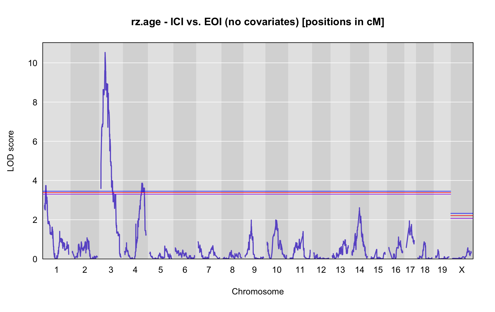
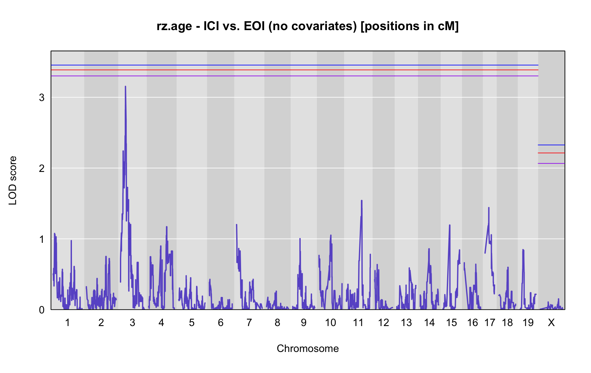
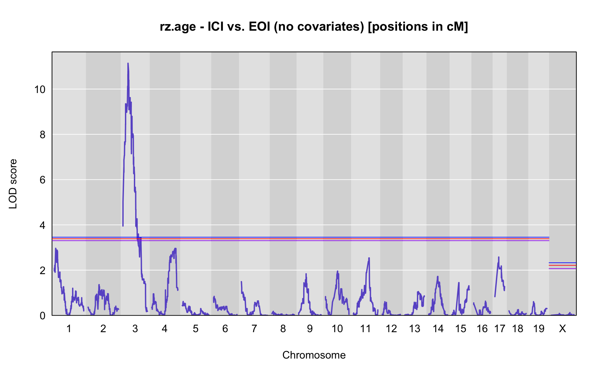
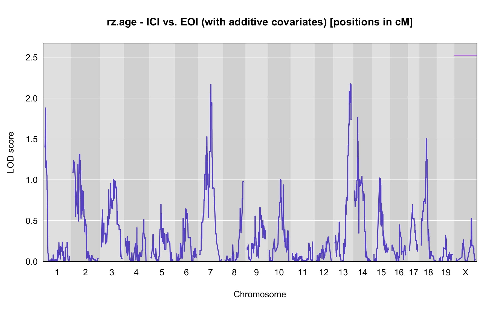
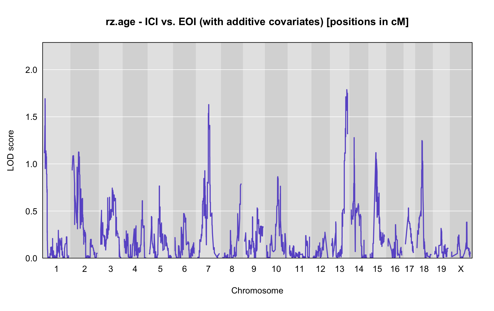
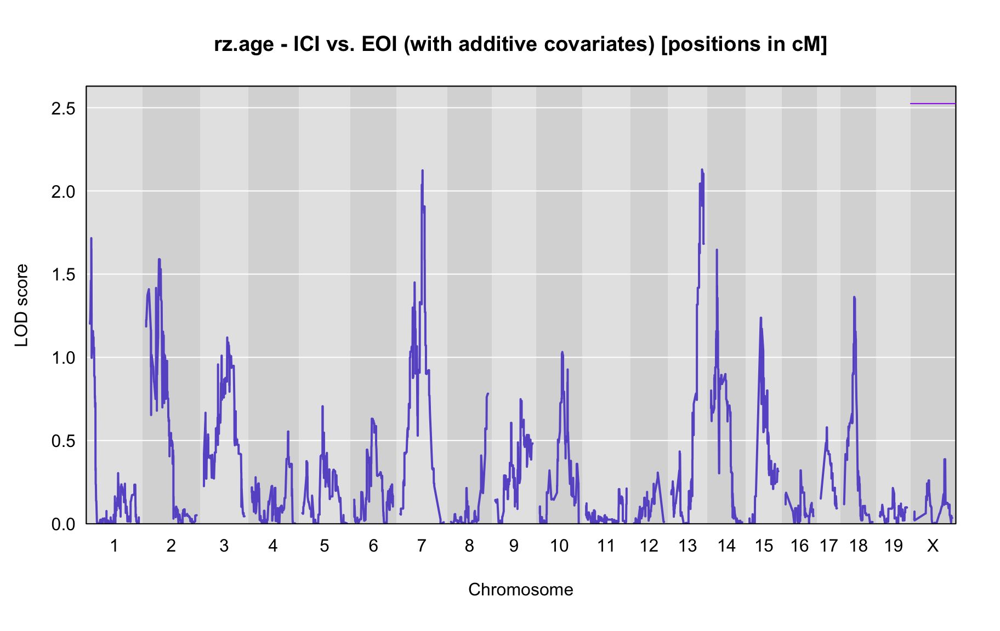
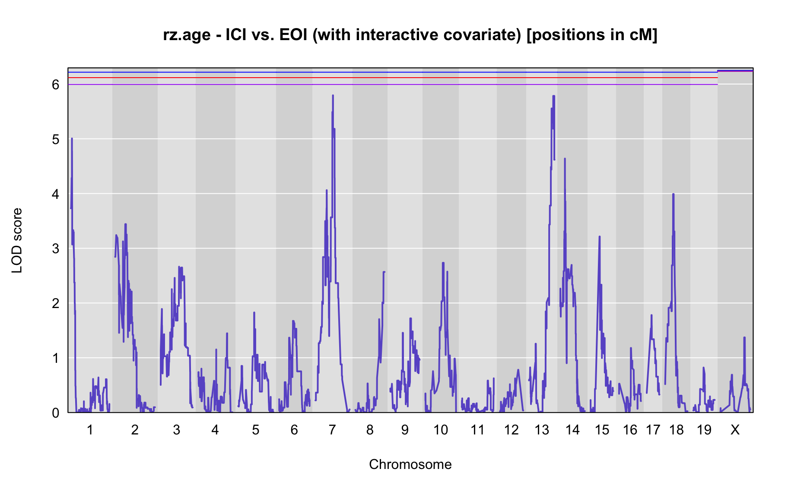
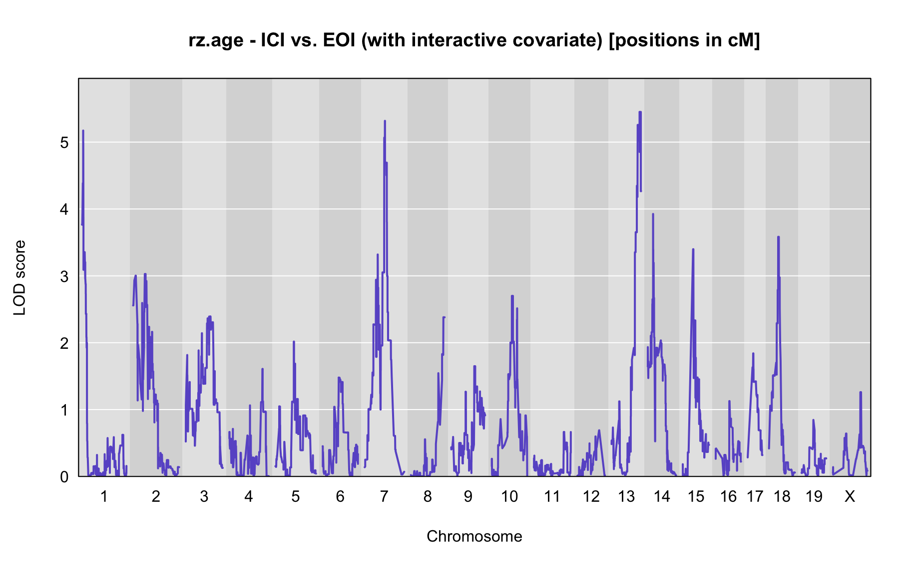
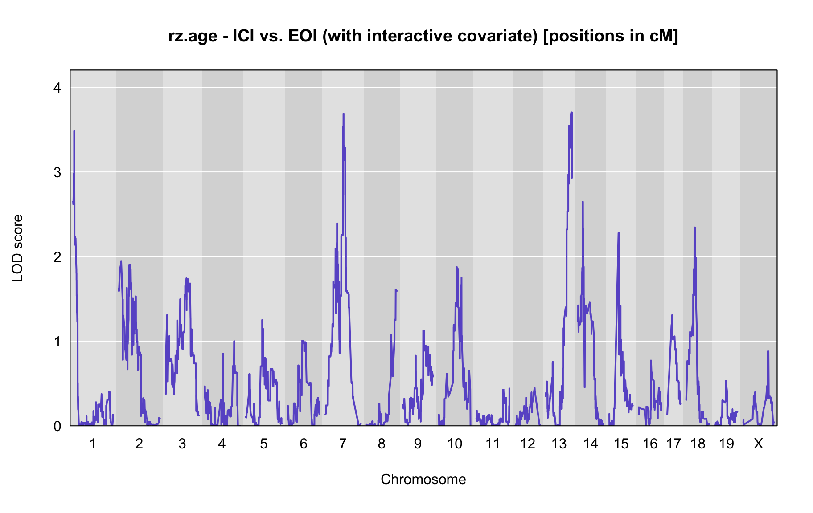
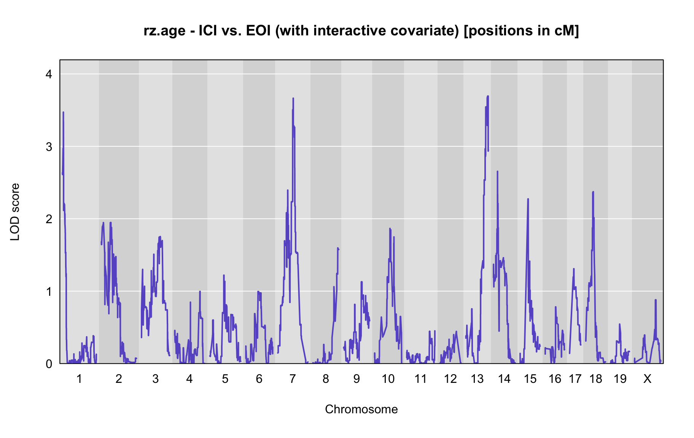

QTL Analysis - rz transformed age of onset (rz.age) [ICI vs EOI] (corrected phenotype with outliers removed if any)
Belinda Cornes
2022-04-14
Last updated: 2022-04-14
Checks: 5 2
Knit directory: Serreze-T1D_Workflow/
This reproducible R Markdown analysis was created with workflowr (version 1.6.2). The Checks tab describes the reproducibility checks that were applied when the results were created. The Past versions tab lists the development history.
The R Markdown is untracked by Git. To know which version of the R Markdown file created these results, you’ll want to first commit it to the Git repo. If you’re still working on the analysis, you can ignore this warning. When you’re finished, you can run wflow_publish to commit the R Markdown file and build the HTML.
Great job! The global environment was empty. Objects defined in the global environment can affect the analysis in your R Markdown file in unknown ways. For reproduciblity it’s best to always run the code in an empty environment.
The command set.seed(20220210) was run prior to running the code in the R Markdown file. Setting a seed ensures that any results that rely on randomness, e.g. subsampling or permutations, are reproducible.
Great job! Recording the operating system, R version, and package versions is critical for reproducibility.
Nice! There were no cached chunks for this analysis, so you can be confident that you successfully produced the results during this run.
Using absolute paths to the files within your workflowr project makes it difficult for you and others to run your code on a different machine. Change the absolute path(s) below to the suggested relative path(s) to make your code more reproducible.
| absolute | relative |
|---|---|
| /Users/corneb/Documents/MyJax/CS/Projects/Serreze/qc/workflowr/Serreze-T1D_Workflow | . |
Great! You are using Git for version control. Tracking code development and connecting the code version to the results is critical for reproducibility.
The results in this page were generated with repository version a8c2d1a. See the Past versions tab to see a history of the changes made to the R Markdown and HTML files.
Note that you need to be careful to ensure that all relevant files for the analysis have been committed to Git prior to generating the results (you can use wflow_publish or wflow_git_commit). workflowr only checks the R Markdown file, but you know if there are other scripts or data files that it depends on. Below is the status of the Git repository when the results were generated:
Ignored files:
Ignored: .DS_Store
Ignored: analysis/.DS_Store
Ignored: data/.DS_Store
Untracked files:
Untracked: analysis/3.1_phenotype.qc_corrected_5.batches_0.Rmd
Untracked: analysis/3.1_phenotype.qc_corrected_5.batches_52.Rmd
Untracked: analysis/3.1_phenotype.qc_corrected_5.batches_mis_0.Rmd
Untracked: analysis/3.1_phenotype.qc_corrected_5.batches_mis_52.Rmd
Untracked: analysis/3.1_phenotype.qc_corrected_5.batches_mis_vo.Rmd
Untracked: analysis/3.1_phenotype.qc_corrected_5.batches_vo.Rmd
Untracked: analysis/4.1.1_qtl.analysis_binary_ici.vs.eoi_snpsqc_dis_no-x_updated_5.batches_11.Rmd
Untracked: analysis/4.1.1_qtl.analysis_binary_ici.vs.eoi_snpsqc_dis_no-x_updated_5.batches_mis_11.Rmd
Untracked: analysis/4.1.1_qtl.analysis_binary_ici.vs.pbs_snpsqc_5.batches_1.Rmd
Untracked: analysis/4.1.1_qtl.analysis_binary_ici.vs.pbs_snpsqc_5.batches_mis_1.Rmd
Untracked: analysis/4.1.1_qtl.analysis_binary_ici.vs.pbs_snpsqc_dis_no-x_updated_5.batches_1.Rmd
Untracked: analysis/4.1.1_qtl.analysis_binary_ici.vs.pbs_snpsqc_dis_no-x_updated_5.batches_11.Rmd
Untracked: analysis/4.1.1_qtl.analysis_binary_ici.vs.pbs_snpsqc_dis_no-x_updated_5.batches_mis_11.Rmd
Untracked: analysis/4.1.2_qtl.analysis_cont_age_ici.vs.eoi_pheno.corrected.cleaned_5.batches_0.Rmd
Untracked: analysis/4.1.2_qtl.analysis_cont_age_ici.vs.eoi_pheno.corrected.cleaned_5.batches_52.Rmd
Untracked: analysis/4.1.2_qtl.analysis_cont_age_ici.vs.eoi_pheno.corrected.cleaned_5.batches_changed.Rmd
Untracked: analysis/4.1.2_qtl.analysis_cont_age_ici.vs.eoi_pheno.corrected.cleaned_5.batches_mis_0.Rmd
Untracked: analysis/4.1.2_qtl.analysis_cont_age_ici.vs.eoi_pheno.corrected.cleaned_5.batches_mis_52.Rmd
Untracked: analysis/4.1.2_qtl.analysis_cont_age_ici.vs.eoi_pheno.corrected.cleaned_5.batches_mis_changed.Rmd
Untracked: analysis/4.1.2_qtl.analysis_cont_age_ici.vs.eoi_pheno.corrected.cleaned_scanone_5.batches.Rmd
Untracked: analysis/4.1.2_qtl.analysis_cont_age_ici.vs.eoi_pheno.corrected.cleaned_scanone_5.batches_mis.Rmd
Untracked: analysis/4.1.2_qtl.analysis_cont_age_ici.vs.eoi_snpsqc_pheno.corrected.cleaned_5.batches_0.Rmd
Untracked: analysis/4.1.2_qtl.analysis_cont_age_ici.vs.eoi_snpsqc_pheno.corrected.cleaned_5.batches_52.Rmd
Untracked: analysis/4.1.2_qtl.analysis_cont_age_ici.vs.eoi_snpsqc_pheno.corrected.cleaned_5.batches_mis_0.Rmd
Untracked: analysis/4.1.2_qtl.analysis_cont_age_ici.vs.eoi_snpsqc_pheno.corrected.cleaned_5.batches_mis_52.Rmd
Untracked: analysis/4.1.2_qtl.analysis_cont_age_ici.vs.eoi_snpsqc_pheno.corrected.cleaned_5.batches_oops.Rmd
Untracked: analysis/4.1.2_qtl.analysis_cont_age_ici.vs.eoi_snpsqc_pheno.corrected.cleaned_dis.Rmd.R
Untracked: analysis/4.1.2_qtl.analysis_cont_age_ici.vs.eoi_snpsqc_pheno.corrected.cleaned_dis_no-xk_5.batches_0.Rmd
Untracked: analysis/4.1.2_qtl.analysis_cont_age_ici.vs.eoi_snpsqc_pheno.corrected.cleaned_dis_no-xk_5.batches_52.Rmd
Untracked: analysis/4.1.2_qtl.analysis_cont_age_ici.vs.eoi_snpsqc_pheno.corrected.cleaned_dis_no-xk_5.batches_mis_0.Rmd
Untracked: analysis/4.1.2_qtl.analysis_cont_age_ici.vs.eoi_snpsqc_pheno.corrected.cleaned_dis_no-xk_5.batches_mis_52.Rmd
Untracked: analysis/4.1.2_qtl.analysis_cont_age_ici.vs.eoi_snpsqc_pheno.corrected.cleaned_test.with.4.Rmd
Untracked: analysis/4.1.2_qtl.analysis_cont_age_ici.vs.eoi_snpsqc_pheno.corrected.cleaned_test.with.4.Rmd.R
Untracked: analysis/4.1.2_qtl.analysis_cont_age_ici.vs.eoi_snpsqc_pheno.corrected.cleaned_test.with.4_miss.Rmd
Untracked: analysis/4.1.2_qtl.analysis_cont_age_ici.vs.eoi_snpsqc_pheno.corrected.cleaned_test.with.4_miss.Rmd.R
Untracked: analysis/4.1.2_qtl.analysis_cont_age_ici.vs.eoi_snpsqc_pheno.corrected.cleaned_test.with.5.Rmd
Untracked: analysis/4.1.2_qtl.analysis_cont_age_ici.vs.eoi_snpsqc_pheno.corrected.cleaned_test.with.5.Rmd.R
Untracked: analysis/4.1.2_qtl.analysis_cont_age_ici.vs.eoi_snpsqc_pheno.corrected.cleaned_test.with.5_0.Rmd
Untracked: analysis/4.1.2_qtl.analysis_cont_age_ici.vs.eoi_snpsqc_pheno.corrected.cleaned_test.with.5_0.Rmd.R
Untracked: analysis/4.1.2_qtl.analysis_cont_rz.age_ici.vs.eoi_pheno.corrected.cleaned_5.batches_0.Rmd
Untracked: analysis/4.1.2_qtl.analysis_cont_rz.age_ici.vs.eoi_pheno.corrected.cleaned_5.batches_52.Rmd
Untracked: analysis/4.1.2_qtl.analysis_cont_rz.age_ici.vs.eoi_pheno.corrected.cleaned_5.batches_mis_0.Rmd
Untracked: analysis/4.1.2_qtl.analysis_cont_rz.age_ici.vs.eoi_pheno.corrected.cleaned_5.batches_mis_52.Rmd
Untracked: analysis/4.1.2_qtl.analysis_cont_rz.age_ici.vs.eoi_pheno.corrected.cleaned_5.batches_mis_vo.Rmd
Untracked: analysis/4.1.2_qtl.analysis_cont_rz.age_ici.vs.eoi_pheno.corrected.cleaned_5.batches_mis_vo1.Rmd
Untracked: analysis/4.1.2_qtl.analysis_cont_rz.age_ici.vs.eoi_pheno.corrected.cleaned_5.batches_vo.Rmd
Untracked: analysis/4.1.2_qtl.analysis_cont_rz.age_ici.vs.eoi_pheno.corrected.cleaned_5.batches_vo1.Rmd
Untracked: analysis/4.1.2_qtl.analysis_cont_rz.age_ici.vs.eoi_snpsqc_pheno.corrected.cleaned_5.batches_0.Rmd
Untracked: analysis/4.1.2_qtl.analysis_cont_rz.age_ici.vs.eoi_snpsqc_pheno.corrected.cleaned_5.batches_52.Rmd
Untracked: analysis/4.1.2_qtl.analysis_cont_rz.age_ici.vs.eoi_snpsqc_pheno.corrected.cleaned_5.batches_mis_0.Rmd
Untracked: analysis/4.1.2_qtl.analysis_cont_rz.age_ici.vs.eoi_snpsqc_pheno.corrected.cleaned_5.batches_mis_52.Rmd
Untracked: analysis/4.1.2_qtl.analysis_cont_rz.age_ici.vs.eoi_snpsqc_pheno.corrected.cleaned_dis_no-xk_5.batches_0.Rmd
Untracked: analysis/4.1.2_qtl.analysis_cont_rz.age_ici.vs.eoi_snpsqc_pheno.corrected.cleaned_dis_no-xk_5.batches_52.Rmd
Untracked: analysis/4.1.2_qtl.analysis_cont_rz.age_ici.vs.eoi_snpsqc_pheno.corrected.cleaned_dis_no-xk_5.batches_mis_0.Rmd
Untracked: analysis/4.1.2_qtl.analysis_cont_rz.age_ici.vs.eoi_snpsqc_pheno.corrected.cleaned_dis_no-xk_5.batches_mis_52.Rmd
Untracked: analysis/genotype.frequencies_ici.vs.eoi_5.batches_0.Rmd
Untracked: analysis/genotype.frequencies_ici.vs.eoi_5.batches_52.Rmd
Untracked: analysis/genotype.frequencies_ici.vs.eoi_5.batches_mis_0.Rmd
Untracked: analysis/genotype.frequencies_ici.vs.eoi_5.batches_mis_52.Rmd
Untracked: analysis/index_5.batches_additional_vo.Rmd
Untracked: data/GM_covar.csv
Untracked: data/GM_covar_BC312.csv
Untracked: data/bad_markers_all_4.batches.RData
Untracked: data/bad_markers_all_5.batches.RData
Untracked: data/blup_sub_chr10_lod.drop-1.5_5.batches.csv
Untracked: data/blup_sub_chr3_lod.drop-1.5.csv
Untracked: data/blup_sub_chr3_lod.drop-1.5_5.batches.csv
Untracked: data/blup_sub_chr4_lod.drop-1.5.csv
Untracked: data/blup_sub_chr4_lod.drop-1.5_5.batches.csv
Untracked: data/covar_cleaned_ici.vs.eoi.csv
Untracked: data/covar_cleaned_ici.vs.pbs.csv
Untracked: data/covar_corrected.cleaned_ici-early.vs.pbs_5.batches.csv
Untracked: data/covar_corrected.cleaned_ici-early.vs.pbs_5.batches_0.csv
Untracked: data/covar_corrected.cleaned_ici-early.vs.pbs_5.batches_52.csv
Untracked: data/covar_corrected.cleaned_ici-early.vs.pbs_5.batches_mis.csv
Untracked: data/covar_corrected.cleaned_ici-early.vs.pbs_5.batches_mis_0.csv
Untracked: data/covar_corrected.cleaned_ici-early.vs.pbs_5.batches_mis_52.csv
Untracked: data/covar_corrected.cleaned_ici.vs.eoi.csv
Untracked: data/covar_corrected.cleaned_ici.vs.eoi1.csv
Untracked: data/covar_corrected.cleaned_ici.vs.eoi_5.batches.csv
Untracked: data/covar_corrected.cleaned_ici.vs.eoi_5.batches_0.csv
Untracked: data/covar_corrected.cleaned_ici.vs.eoi_5.batches_52.csv
Untracked: data/covar_corrected.cleaned_ici.vs.eoi_5.batches_mis.csv
Untracked: data/covar_corrected.cleaned_ici.vs.eoi_5.batches_mis_0.csv
Untracked: data/covar_corrected.cleaned_ici.vs.eoi_5.batches_mis_52.csv
Untracked: data/covar_corrected.cleaned_ici.vs.pbs.csv
Untracked: data/covar_corrected.cleaned_ici.vs.pbs1.csv
Untracked: data/covar_corrected.cleaned_ici.vs.pbs_5.batches.csv
Untracked: data/covar_corrected.cleaned_ici.vs.pbs_5.batches_0.csv
Untracked: data/covar_corrected.cleaned_ici.vs.pbs_5.batches_52.csv
Untracked: data/covar_corrected.cleaned_ici.vs.pbs_5.batches_mis.csv
Untracked: data/covar_corrected.cleaned_ici.vs.pbs_5.batches_mis_0.csv
Untracked: data/covar_corrected.cleaned_ici.vs.pbs_5.batches_mis_52.csv
Untracked: data/covar_corrected_ici-early.vs.pbs_5.batches.csv
Untracked: data/covar_corrected_ici-early.vs.pbs_5.batches_0.csv
Untracked: data/covar_corrected_ici-early.vs.pbs_5.batches_52.csv
Untracked: data/covar_corrected_ici-early.vs.pbs_5.batches_mis.csv
Untracked: data/covar_corrected_ici-early.vs.pbs_5.batches_mis_0.csv
Untracked: data/covar_corrected_ici-early.vs.pbs_5.batches_mis_52.csv
Untracked: data/covar_corrected_ici.vs.eoi.csv
Untracked: data/covar_corrected_ici.vs.eoi1.csv
Untracked: data/covar_corrected_ici.vs.eoi_5.batches.csv
Untracked: data/covar_corrected_ici.vs.eoi_5.batches_0.csv
Untracked: data/covar_corrected_ici.vs.eoi_5.batches_52.csv
Untracked: data/covar_corrected_ici.vs.eoi_5.batches_mis.csv
Untracked: data/covar_corrected_ici.vs.eoi_5.batches_mis_0.csv
Untracked: data/covar_corrected_ici.vs.eoi_5.batches_mis_52.csv
Untracked: data/covar_corrected_ici.vs.pbs.csv
Untracked: data/covar_corrected_ici.vs.pbs1.csv
Untracked: data/covar_corrected_ici.vs.pbs_5.batches.csv
Untracked: data/covar_corrected_ici.vs.pbs_5.batches_0.csv
Untracked: data/covar_corrected_ici.vs.pbs_5.batches_52.csv
Untracked: data/covar_corrected_ici.vs.pbs_5.batches_mis.csv
Untracked: data/covar_corrected_ici.vs.pbs_5.batches_mis_0.csv
Untracked: data/covar_corrected_ici.vs.pbs_5.batches_mis_52.csv
Untracked: data/e.RData
Untracked: data/e_BC312.RData
Untracked: data/e_snpg_samqc_4.batches.RData
Untracked: data/e_snpg_samqc_4.batches_bc.RData
Untracked: data/e_snpg_samqc_5.batches.RData
Untracked: data/errors_ind_4.batches.RData
Untracked: data/errors_ind_4.batches_bc.RData
Untracked: data/errors_ind_5.batches.RData
Untracked: data/files.to.sync.txt
Untracked: data/fitqtl_chr3.peak_chr4.peak_additive.txt
Untracked: data/fitqtl_chr3.peak_chr4.peak_interacting.txt
Untracked: data/fitqtl_chr3.peak_chr4.peak_sex_additive.txt
Untracked: data/fitqtl_chr3.peak_chr4.peak_sex_interacting.txt
Untracked: data/g2blup_effects.csv
Untracked: data/g2blup_effects.xlsx
Untracked: data/genes_chr10_lod.drop-1.5_5.batches.csv
Untracked: data/genes_chr3_lod.drop-1.5.csv
Untracked: data/genes_chr3_lod.drop-1.5_5.batches.csv
Untracked: data/genes_chr4_lod.drop-1.5.csv
Untracked: data/genetic_map.csv
Untracked: data/genetic_map_BC312.csv
Untracked: data/genotype_errors_marker_4.batches.RData
Untracked: data/genotype_errors_marker_5.batches.RData
Untracked: data/genotype_freq_marker_4.batches.RData
Untracked: data/genotype_freq_marker_5.batches.RData
Untracked: data/gm_allqc_4.batches.RData
Untracked: data/gm_allqc_5.batches.RData
Untracked: data/gm_allqc_5.batches_mis.RData
Untracked: data/gm_samqc_3.batches.RData
Untracked: data/gm_samqc_4.batches.RData
Untracked: data/gm_samqc_4.batches_bc.RData
Untracked: data/gm_samqc_5.batches.RData
Untracked: data/gm_serreze.192.RData
Untracked: data/gm_serreze.BC312.RData
Untracked: data/ici-early.vs.pbs_age.of.onset-additive.covariates_blup_sub_chr-7_peak.marker-UNC13388811_lod.drop-1.5_snpsqc_5.batches.csv
Untracked: data/ici-early.vs.pbs_age.of.onset-additive.covariates_genes_chr-7_peak.marker-UNC13388811_lod.drop-1.5_snpsqc_5.batches.csv
Untracked: data/ici-early.vs.pbs_age.of.onset-no.covariates_blup_sub_chr-14_peak.marker-UNC24056202_lod.drop-1.5_snpsqc_5.batches_mis.csv
Untracked: data/ici-early.vs.pbs_age.of.onset-no.covariates_blup_sub_chr-17_peak.marker-UNCJPD006614_lod.drop-1.5_snpsqc_5.batches_mis.csv
Untracked: data/ici-early.vs.pbs_age.of.onset-no.covariates_blup_sub_chr-18_peak.marker-UNCHS045343_lod.drop-1.5_snpsqc_5.batches_mis.csv
Untracked: data/ici-early.vs.pbs_age.of.onset-no.covariates_blup_sub_chr-8_peak.marker-UNC15524531_lod.drop-1.5_snpsqc_5.batches_mis.csv
Untracked: data/ici-early.vs.pbs_age.of.onset-no.covariates_blup_sub_chr-X_peak.marker-UNCHS048314_lod.drop-1.5_snpsqc_5.batches_mis.csv
Untracked: data/ici-early.vs.pbs_age.of.onset-no.covariates_genes_chr-14_peak.marker-UNC24056202_lod.drop-1.5_snpsqc_5.batches_mis.csv
Untracked: data/ici-early.vs.pbs_age.of.onset-no.covariates_genes_chr-17_peak.marker-UNCJPD006614_lod.drop-1.5_snpsqc_5.batches_mis.csv
Untracked: data/ici-early.vs.pbs_age.of.onset-no.covariates_genes_chr-18_peak.marker-UNCHS045343_lod.drop-1.5_snpsqc_5.batches_mis.csv
Untracked: data/ici-early.vs.pbs_age.of.onset-no.covariates_genes_chr-8_peak.marker-UNC15524531_lod.drop-1.5_snpsqc_5.batches_mis.csv
Untracked: data/ici-early.vs.pbs_age.of.onset-no.covariates_genes_chr-X_peak.marker-UNCHS048314_lod.drop-1.5_snpsqc_5.batches_mis.csv
Untracked: data/ici-early.vs.pbs_blup.full_chr-10_5.batches.csv
Untracked: data/ici-early.vs.pbs_blup.full_chr-10_5.batches_mis.csv
Untracked: data/ici-early.vs.pbs_blup.full_chr-10_snpsqc_5.batches.csv
Untracked: data/ici-early.vs.pbs_blup.full_chr-10_snpsqc_5.batches_mis.csv
Untracked: data/ici-early.vs.pbs_blup.full_chr-10_snpsqc_dis_no-x_updated_5.batches.csv
Untracked: data/ici-early.vs.pbs_blup.full_chr-10_snpsqc_dis_no-x_updated_5.batches_mis.csv
Untracked: data/ici-early.vs.pbs_blup.full_chr-11_5.batches.csv
Untracked: data/ici-early.vs.pbs_blup.full_chr-11_5.batches_mis.csv
Untracked: data/ici-early.vs.pbs_blup.full_chr-11_snpsqc_5.batches.csv
Untracked: data/ici-early.vs.pbs_blup.full_chr-11_snpsqc_5.batches_mis.csv
Untracked: data/ici-early.vs.pbs_blup.full_chr-11_snpsqc_dis_no-x_updated_5.batches.csv
Untracked: data/ici-early.vs.pbs_blup.full_chr-11_snpsqc_dis_no-x_updated_5.batches_mis.csv
Untracked: data/ici-early.vs.pbs_blup.full_chr-12_5.batches.csv
Untracked: data/ici-early.vs.pbs_blup.full_chr-12_5.batches_mis.csv
Untracked: data/ici-early.vs.pbs_blup.full_chr-12_snpsqc_5.batches.csv
Untracked: data/ici-early.vs.pbs_blup.full_chr-12_snpsqc_5.batches_mis.csv
Untracked: data/ici-early.vs.pbs_blup.full_chr-12_snpsqc_dis_no-x_updated_5.batches.csv
Untracked: data/ici-early.vs.pbs_blup.full_chr-12_snpsqc_dis_no-x_updated_5.batches_mis.csv
Untracked: data/ici-early.vs.pbs_blup.full_chr-13_5.batches.csv
Untracked: data/ici-early.vs.pbs_blup.full_chr-13_5.batches_mis.csv
Untracked: data/ici-early.vs.pbs_blup.full_chr-13_snpsqc_5.batches.csv
Untracked: data/ici-early.vs.pbs_blup.full_chr-13_snpsqc_5.batches_mis.csv
Untracked: data/ici-early.vs.pbs_blup.full_chr-13_snpsqc_dis_no-x_updated_5.batches.csv
Untracked: data/ici-early.vs.pbs_blup.full_chr-13_snpsqc_dis_no-x_updated_5.batches_mis.csv
Untracked: data/ici-early.vs.pbs_blup.full_chr-14_5.batches.csv
Untracked: data/ici-early.vs.pbs_blup.full_chr-14_5.batches_mis.csv
Untracked: data/ici-early.vs.pbs_blup.full_chr-14_snpsqc_5.batches.csv
Untracked: data/ici-early.vs.pbs_blup.full_chr-14_snpsqc_5.batches_mis.csv
Untracked: data/ici-early.vs.pbs_blup.full_chr-14_snpsqc_dis_no-x_updated_5.batches.csv
Untracked: data/ici-early.vs.pbs_blup.full_chr-14_snpsqc_dis_no-x_updated_5.batches_mis.csv
Untracked: data/ici-early.vs.pbs_blup.full_chr-15_5.batches.csv
Untracked: data/ici-early.vs.pbs_blup.full_chr-15_5.batches_mis.csv
Untracked: data/ici-early.vs.pbs_blup.full_chr-15_snpsqc_5.batches.csv
Untracked: data/ici-early.vs.pbs_blup.full_chr-15_snpsqc_5.batches_mis.csv
Untracked: data/ici-early.vs.pbs_blup.full_chr-15_snpsqc_dis_no-x_updated_5.batches.csv
Untracked: data/ici-early.vs.pbs_blup.full_chr-15_snpsqc_dis_no-x_updated_5.batches_mis.csv
Untracked: data/ici-early.vs.pbs_blup.full_chr-16_5.batches.csv
Untracked: data/ici-early.vs.pbs_blup.full_chr-16_5.batches_mis.csv
Untracked: data/ici-early.vs.pbs_blup.full_chr-16_snpsqc_5.batches.csv
Untracked: data/ici-early.vs.pbs_blup.full_chr-16_snpsqc_5.batches_mis.csv
Untracked: data/ici-early.vs.pbs_blup.full_chr-16_snpsqc_dis_no-x_updated_5.batches.csv
Untracked: data/ici-early.vs.pbs_blup.full_chr-16_snpsqc_dis_no-x_updated_5.batches_mis.csv
Untracked: data/ici-early.vs.pbs_blup.full_chr-17_5.batches.csv
Untracked: data/ici-early.vs.pbs_blup.full_chr-17_5.batches_mis.csv
Untracked: data/ici-early.vs.pbs_blup.full_chr-17_snpsqc_5.batches.csv
Untracked: data/ici-early.vs.pbs_blup.full_chr-17_snpsqc_5.batches_mis.csv
Untracked: data/ici-early.vs.pbs_blup.full_chr-17_snpsqc_dis_no-x_updated_5.batches.csv
Untracked: data/ici-early.vs.pbs_blup.full_chr-17_snpsqc_dis_no-x_updated_5.batches_mis.csv
Untracked: data/ici-early.vs.pbs_blup.full_chr-18_5.batches.csv
Untracked: data/ici-early.vs.pbs_blup.full_chr-18_5.batches_mis.csv
Untracked: data/ici-early.vs.pbs_blup.full_chr-18_snpsqc_5.batches.csv
Untracked: data/ici-early.vs.pbs_blup.full_chr-18_snpsqc_5.batches_mis.csv
Untracked: data/ici-early.vs.pbs_blup.full_chr-18_snpsqc_dis_no-x_updated_5.batches.csv
Untracked: data/ici-early.vs.pbs_blup.full_chr-18_snpsqc_dis_no-x_updated_5.batches_mis.csv
Untracked: data/ici-early.vs.pbs_blup.full_chr-19_5.batches.csv
Untracked: data/ici-early.vs.pbs_blup.full_chr-19_5.batches_mis.csv
Untracked: data/ici-early.vs.pbs_blup.full_chr-19_snpsqc_5.batches.csv
Untracked: data/ici-early.vs.pbs_blup.full_chr-19_snpsqc_5.batches_mis.csv
Untracked: data/ici-early.vs.pbs_blup.full_chr-19_snpsqc_dis_no-x_updated_5.batches.csv
Untracked: data/ici-early.vs.pbs_blup.full_chr-19_snpsqc_dis_no-x_updated_5.batches_mis.csv
Untracked: data/ici-early.vs.pbs_blup.full_chr-1_5.batches.csv
Untracked: data/ici-early.vs.pbs_blup.full_chr-1_5.batches_mis.csv
Untracked: data/ici-early.vs.pbs_blup.full_chr-1_snpsqc_5.batches.csv
Untracked: data/ici-early.vs.pbs_blup.full_chr-1_snpsqc_5.batches_mis.csv
Untracked: data/ici-early.vs.pbs_blup.full_chr-1_snpsqc_dis_no-x_updated_5.batches.csv
Untracked: data/ici-early.vs.pbs_blup.full_chr-1_snpsqc_dis_no-x_updated_5.batches_mis.csv
Untracked: data/ici-early.vs.pbs_blup.full_chr-2_5.batches.csv
Untracked: data/ici-early.vs.pbs_blup.full_chr-2_5.batches_mis.csv
Untracked: data/ici-early.vs.pbs_blup.full_chr-2_snpsqc_5.batches.csv
Untracked: data/ici-early.vs.pbs_blup.full_chr-2_snpsqc_5.batches_mis.csv
Untracked: data/ici-early.vs.pbs_blup.full_chr-2_snpsqc_dis_no-x_updated_5.batches.csv
Untracked: data/ici-early.vs.pbs_blup.full_chr-2_snpsqc_dis_no-x_updated_5.batches_mis.csv
Untracked: data/ici-early.vs.pbs_blup.full_chr-3_5.batches.csv
Untracked: data/ici-early.vs.pbs_blup.full_chr-3_5.batches_mis.csv
Untracked: data/ici-early.vs.pbs_blup.full_chr-3_snpsqc_5.batches.csv
Untracked: data/ici-early.vs.pbs_blup.full_chr-3_snpsqc_5.batches_mis.csv
Untracked: data/ici-early.vs.pbs_blup.full_chr-3_snpsqc_dis_no-x_updated_5.batches.csv
Untracked: data/ici-early.vs.pbs_blup.full_chr-3_snpsqc_dis_no-x_updated_5.batches_mis.csv
Untracked: data/ici-early.vs.pbs_blup.full_chr-4_5.batches.csv
Untracked: data/ici-early.vs.pbs_blup.full_chr-4_5.batches_mis.csv
Untracked: data/ici-early.vs.pbs_blup.full_chr-4_snpsqc_5.batches.csv
Untracked: data/ici-early.vs.pbs_blup.full_chr-4_snpsqc_5.batches_mis.csv
Untracked: data/ici-early.vs.pbs_blup.full_chr-4_snpsqc_dis_no-x_updated_5.batches.csv
Untracked: data/ici-early.vs.pbs_blup.full_chr-4_snpsqc_dis_no-x_updated_5.batches_mis.csv
Untracked: data/ici-early.vs.pbs_blup.full_chr-5_5.batches.csv
Untracked: data/ici-early.vs.pbs_blup.full_chr-5_5.batches_mis.csv
Untracked: data/ici-early.vs.pbs_blup.full_chr-5_snpsqc_5.batches.csv
Untracked: data/ici-early.vs.pbs_blup.full_chr-5_snpsqc_5.batches_mis.csv
Untracked: data/ici-early.vs.pbs_blup.full_chr-5_snpsqc_dis_no-x_updated_5.batches.csv
Untracked: data/ici-early.vs.pbs_blup.full_chr-5_snpsqc_dis_no-x_updated_5.batches_mis.csv
Untracked: data/ici-early.vs.pbs_blup.full_chr-6_5.batches.csv
Untracked: data/ici-early.vs.pbs_blup.full_chr-6_5.batches_mis.csv
Untracked: data/ici-early.vs.pbs_blup.full_chr-6_snpsqc_5.batches.csv
Untracked: data/ici-early.vs.pbs_blup.full_chr-6_snpsqc_5.batches_mis.csv
Untracked: data/ici-early.vs.pbs_blup.full_chr-6_snpsqc_dis_no-x_updated_5.batches.csv
Untracked: data/ici-early.vs.pbs_blup.full_chr-6_snpsqc_dis_no-x_updated_5.batches_mis.csv
Untracked: data/ici-early.vs.pbs_blup.full_chr-7_5.batches.csv
Untracked: data/ici-early.vs.pbs_blup.full_chr-7_5.batches_mis.csv
Untracked: data/ici-early.vs.pbs_blup.full_chr-7_snpsqc_5.batches.csv
Untracked: data/ici-early.vs.pbs_blup.full_chr-7_snpsqc_5.batches_mis.csv
Untracked: data/ici-early.vs.pbs_blup.full_chr-7_snpsqc_dis_no-x_updated_5.batches.csv
Untracked: data/ici-early.vs.pbs_blup.full_chr-7_snpsqc_dis_no-x_updated_5.batches_mis.csv
Untracked: data/ici-early.vs.pbs_blup.full_chr-8_5.batches.csv
Untracked: data/ici-early.vs.pbs_blup.full_chr-8_5.batches_mis.csv
Untracked: data/ici-early.vs.pbs_blup.full_chr-8_snpsqc_5.batches.csv
Untracked: data/ici-early.vs.pbs_blup.full_chr-8_snpsqc_5.batches_mis.csv
Untracked: data/ici-early.vs.pbs_blup.full_chr-8_snpsqc_dis_no-x_updated_5.batches.csv
Untracked: data/ici-early.vs.pbs_blup.full_chr-8_snpsqc_dis_no-x_updated_5.batches_mis.csv
Untracked: data/ici-early.vs.pbs_blup.full_chr-9_5.batches.csv
Untracked: data/ici-early.vs.pbs_blup.full_chr-9_5.batches_mis.csv
Untracked: data/ici-early.vs.pbs_blup.full_chr-9_snpsqc_5.batches.csv
Untracked: data/ici-early.vs.pbs_blup.full_chr-9_snpsqc_5.batches_mis.csv
Untracked: data/ici-early.vs.pbs_blup.full_chr-9_snpsqc_dis_no-x_updated_5.batches.csv
Untracked: data/ici-early.vs.pbs_blup.full_chr-9_snpsqc_dis_no-x_updated_5.batches_mis.csv
Untracked: data/ici-early.vs.pbs_blup.full_chr-X_5.batches.csv
Untracked: data/ici-early.vs.pbs_blup.full_chr-X_5.batches_mis.csv
Untracked: data/ici-early.vs.pbs_blup.full_chr-X_snpsqc_5.batches.csv
Untracked: data/ici-early.vs.pbs_blup.full_chr-X_snpsqc_5.batches_mis.csv
Untracked: data/ici-early.vs.pbs_blup.full_chr-X_snpsqc_dis_no-x_updated_5.batches.csv
Untracked: data/ici-early.vs.pbs_blup.full_chr-X_snpsqc_dis_no-x_updated_5.batches_mis.csv
Untracked: data/ici-early.vs.pbs_blup.qc_chr-10_5.batches.csv
Untracked: data/ici-early.vs.pbs_blup.qc_chr-10_5.batches_mis.csv
Untracked: data/ici-early.vs.pbs_blup.qc_chr-10_snpsqc_5.batches.csv
Untracked: data/ici-early.vs.pbs_blup.qc_chr-10_snpsqc_5.batches_mis.csv
Untracked: data/ici-early.vs.pbs_blup.qc_chr-10_snpsqc_dis_no-x_updated_5.batches.csv
Untracked: data/ici-early.vs.pbs_blup.qc_chr-10_snpsqc_dis_no-x_updated_5.batches_mis.csv
Untracked: data/ici-early.vs.pbs_blup.qc_chr-11_5.batches.csv
Untracked: data/ici-early.vs.pbs_blup.qc_chr-11_5.batches_mis.csv
Untracked: data/ici-early.vs.pbs_blup.qc_chr-11_snpsqc_5.batches.csv
Untracked: data/ici-early.vs.pbs_blup.qc_chr-11_snpsqc_5.batches_mis.csv
Untracked: data/ici-early.vs.pbs_blup.qc_chr-11_snpsqc_dis_no-x_updated_5.batches.csv
Untracked: data/ici-early.vs.pbs_blup.qc_chr-11_snpsqc_dis_no-x_updated_5.batches_mis.csv
Untracked: data/ici-early.vs.pbs_blup.qc_chr-12_5.batches.csv
Untracked: data/ici-early.vs.pbs_blup.qc_chr-12_5.batches_mis.csv
Untracked: data/ici-early.vs.pbs_blup.qc_chr-12_snpsqc_5.batches.csv
Untracked: data/ici-early.vs.pbs_blup.qc_chr-12_snpsqc_5.batches_mis.csv
Untracked: data/ici-early.vs.pbs_blup.qc_chr-12_snpsqc_dis_no-x_updated_5.batches.csv
Untracked: data/ici-early.vs.pbs_blup.qc_chr-12_snpsqc_dis_no-x_updated_5.batches_mis.csv
Untracked: data/ici-early.vs.pbs_blup.qc_chr-13_5.batches.csv
Untracked: data/ici-early.vs.pbs_blup.qc_chr-13_5.batches_mis.csv
Untracked: data/ici-early.vs.pbs_blup.qc_chr-13_snpsqc_5.batches.csv
Untracked: data/ici-early.vs.pbs_blup.qc_chr-13_snpsqc_5.batches_mis.csv
Untracked: data/ici-early.vs.pbs_blup.qc_chr-13_snpsqc_dis_no-x_updated_5.batches.csv
Untracked: data/ici-early.vs.pbs_blup.qc_chr-13_snpsqc_dis_no-x_updated_5.batches_mis.csv
Untracked: data/ici-early.vs.pbs_blup.qc_chr-14_5.batches.csv
Untracked: data/ici-early.vs.pbs_blup.qc_chr-14_5.batches_mis.csv
Untracked: data/ici-early.vs.pbs_blup.qc_chr-14_snpsqc_5.batches.csv
Untracked: data/ici-early.vs.pbs_blup.qc_chr-14_snpsqc_5.batches_mis.csv
Untracked: data/ici-early.vs.pbs_blup.qc_chr-14_snpsqc_dis_no-x_updated_5.batches.csv
Untracked: data/ici-early.vs.pbs_blup.qc_chr-14_snpsqc_dis_no-x_updated_5.batches_mis.csv
Untracked: data/ici-early.vs.pbs_blup.qc_chr-15_5.batches.csv
Untracked: data/ici-early.vs.pbs_blup.qc_chr-15_5.batches_mis.csv
Untracked: data/ici-early.vs.pbs_blup.qc_chr-15_snpsqc_5.batches.csv
Untracked: data/ici-early.vs.pbs_blup.qc_chr-15_snpsqc_5.batches_mis.csv
Untracked: data/ici-early.vs.pbs_blup.qc_chr-16_5.batches.csv
Untracked: data/ici-early.vs.pbs_blup.qc_chr-16_5.batches_mis.csv
Untracked: data/ici-early.vs.pbs_blup.qc_chr-16_snpsqc_5.batches.csv
Untracked: data/ici-early.vs.pbs_blup.qc_chr-16_snpsqc_5.batches_mis.csv
Untracked: data/ici-early.vs.pbs_blup.qc_chr-16_snpsqc_dis_no-x_updated_5.batches.csv
Untracked: data/ici-early.vs.pbs_blup.qc_chr-16_snpsqc_dis_no-x_updated_5.batches_mis.csv
Untracked: data/ici-early.vs.pbs_blup.qc_chr-17_5.batches.csv
Untracked: data/ici-early.vs.pbs_blup.qc_chr-17_5.batches_mis.csv
Untracked: data/ici-early.vs.pbs_blup.qc_chr-17_snpsqc_5.batches.csv
Untracked: data/ici-early.vs.pbs_blup.qc_chr-17_snpsqc_5.batches_mis.csv
Untracked: data/ici-early.vs.pbs_blup.qc_chr-18_5.batches.csv
Untracked: data/ici-early.vs.pbs_blup.qc_chr-18_5.batches_mis.csv
Untracked: data/ici-early.vs.pbs_blup.qc_chr-18_snpsqc_5.batches.csv
Untracked: data/ici-early.vs.pbs_blup.qc_chr-18_snpsqc_5.batches_mis.csv
Untracked: data/ici-early.vs.pbs_blup.qc_chr-18_snpsqc_dis_no-x_updated_5.batches.csv
Untracked: data/ici-early.vs.pbs_blup.qc_chr-18_snpsqc_dis_no-x_updated_5.batches_mis.csv
Untracked: data/ici-early.vs.pbs_blup.qc_chr-19_5.batches.csv
Untracked: data/ici-early.vs.pbs_blup.qc_chr-19_5.batches_mis.csv
Untracked: data/ici-early.vs.pbs_blup.qc_chr-19_snpsqc_5.batches.csv
Untracked: data/ici-early.vs.pbs_blup.qc_chr-19_snpsqc_5.batches_mis.csv
Untracked: data/ici-early.vs.pbs_blup.qc_chr-19_snpsqc_dis_no-x_updated_5.batches.csv
Untracked: data/ici-early.vs.pbs_blup.qc_chr-19_snpsqc_dis_no-x_updated_5.batches_mis.csv
Untracked: data/ici-early.vs.pbs_blup.qc_chr-1_5.batches.csv
Untracked: data/ici-early.vs.pbs_blup.qc_chr-1_5.batches_mis.csv
Untracked: data/ici-early.vs.pbs_blup.qc_chr-1_snpsqc_5.batches.csv
Untracked: data/ici-early.vs.pbs_blup.qc_chr-1_snpsqc_5.batches_mis.csv
Untracked: data/ici-early.vs.pbs_blup.qc_chr-1_snpsqc_dis_no-x_updated_5.batches.csv
Untracked: data/ici-early.vs.pbs_blup.qc_chr-1_snpsqc_dis_no-x_updated_5.batches_mis.csv
Untracked: data/ici-early.vs.pbs_blup.qc_chr-2_5.batches.csv
Untracked: data/ici-early.vs.pbs_blup.qc_chr-2_5.batches_mis.csv
Untracked: data/ici-early.vs.pbs_blup.qc_chr-2_snpsqc_5.batches.csv
Untracked: data/ici-early.vs.pbs_blup.qc_chr-2_snpsqc_5.batches_mis.csv
Untracked: data/ici-early.vs.pbs_blup.qc_chr-2_snpsqc_dis_no-x_updated_5.batches.csv
Untracked: data/ici-early.vs.pbs_blup.qc_chr-2_snpsqc_dis_no-x_updated_5.batches_mis.csv
Untracked: data/ici-early.vs.pbs_blup.qc_chr-3_5.batches.csv
Untracked: data/ici-early.vs.pbs_blup.qc_chr-3_5.batches_mis.csv
Untracked: data/ici-early.vs.pbs_blup.qc_chr-3_snpsqc_5.batches.csv
Untracked: data/ici-early.vs.pbs_blup.qc_chr-3_snpsqc_5.batches_mis.csv
Untracked: data/ici-early.vs.pbs_blup.qc_chr-3_snpsqc_dis_no-x_updated_5.batches.csv
Untracked: data/ici-early.vs.pbs_blup.qc_chr-3_snpsqc_dis_no-x_updated_5.batches_mis.csv
Untracked: data/ici-early.vs.pbs_blup.qc_chr-4_5.batches.csv
Untracked: data/ici-early.vs.pbs_blup.qc_chr-4_5.batches_mis.csv
Untracked: data/ici-early.vs.pbs_blup.qc_chr-4_snpsqc_5.batches.csv
Untracked: data/ici-early.vs.pbs_blup.qc_chr-4_snpsqc_5.batches_mis.csv
Untracked: data/ici-early.vs.pbs_blup.qc_chr-4_snpsqc_dis_no-x_updated_5.batches.csv
Untracked: data/ici-early.vs.pbs_blup.qc_chr-4_snpsqc_dis_no-x_updated_5.batches_mis.csv
Untracked: data/ici-early.vs.pbs_blup.qc_chr-5_5.batches.csv
Untracked: data/ici-early.vs.pbs_blup.qc_chr-5_5.batches_mis.csv
Untracked: data/ici-early.vs.pbs_blup.qc_chr-5_snpsqc_5.batches.csv
Untracked: data/ici-early.vs.pbs_blup.qc_chr-5_snpsqc_5.batches_mis.csv
Untracked: data/ici-early.vs.pbs_blup.qc_chr-5_snpsqc_dis_no-x_updated_5.batches.csv
Untracked: data/ici-early.vs.pbs_blup.qc_chr-5_snpsqc_dis_no-x_updated_5.batches_mis.csv
Untracked: data/ici-early.vs.pbs_blup.qc_chr-6_5.batches.csv
Untracked: data/ici-early.vs.pbs_blup.qc_chr-6_5.batches_mis.csv
Untracked: data/ici-early.vs.pbs_blup.qc_chr-6_snpsqc_5.batches.csv
Untracked: data/ici-early.vs.pbs_blup.qc_chr-6_snpsqc_5.batches_mis.csv
Untracked: data/ici-early.vs.pbs_blup.qc_chr-6_snpsqc_dis_no-x_updated_5.batches.csv
Untracked: data/ici-early.vs.pbs_blup.qc_chr-6_snpsqc_dis_no-x_updated_5.batches_mis.csv
Untracked: data/ici-early.vs.pbs_blup.qc_chr-7_5.batches.csv
Untracked: data/ici-early.vs.pbs_blup.qc_chr-7_5.batches_mis.csv
Untracked: data/ici-early.vs.pbs_blup.qc_chr-7_snpsqc_5.batches.csv
Untracked: data/ici-early.vs.pbs_blup.qc_chr-7_snpsqc_5.batches_mis.csv
Untracked: data/ici-early.vs.pbs_blup.qc_chr-7_snpsqc_dis_no-x_updated_5.batches.csv
Untracked: data/ici-early.vs.pbs_blup.qc_chr-7_snpsqc_dis_no-x_updated_5.batches_mis.csv
Untracked: data/ici-early.vs.pbs_blup.qc_chr-8_5.batches.csv
Untracked: data/ici-early.vs.pbs_blup.qc_chr-8_5.batches_mis.csv
Untracked: data/ici-early.vs.pbs_blup.qc_chr-8_snpsqc_5.batches.csv
Untracked: data/ici-early.vs.pbs_blup.qc_chr-8_snpsqc_5.batches_mis.csv
Untracked: data/ici-early.vs.pbs_blup.qc_chr-8_snpsqc_dis_no-x_updated_5.batches.csv
Untracked: data/ici-early.vs.pbs_blup.qc_chr-8_snpsqc_dis_no-x_updated_5.batches_mis.csv
Untracked: data/ici-early.vs.pbs_blup.qc_chr-9_5.batches.csv
Untracked: data/ici-early.vs.pbs_blup.qc_chr-9_5.batches_mis.csv
Untracked: data/ici-early.vs.pbs_blup.qc_chr-9_snpsqc_5.batches.csv
Untracked: data/ici-early.vs.pbs_blup.qc_chr-9_snpsqc_5.batches_mis.csv
Untracked: data/ici-early.vs.pbs_blup.qc_chr-9_snpsqc_dis_no-x_updated_5.batches.csv
Untracked: data/ici-early.vs.pbs_blup.qc_chr-9_snpsqc_dis_no-x_updated_5.batches_mis.csv
Untracked: data/ici-early.vs.pbs_blup.qc_chr-X_5.batches.csv
Untracked: data/ici-early.vs.pbs_blup.qc_chr-X_5.batches_mis.csv
Untracked: data/ici-early.vs.pbs_blup.qc_chr-X_snpsqc_5.batches.csv
Untracked: data/ici-early.vs.pbs_blup.qc_chr-X_snpsqc_5.batches_mis.csv
Untracked: data/ici-early.vs.pbs_blup.qc_chr-X_snpsqc_dis_no-x_updated_5.batches.csv
Untracked: data/ici-early.vs.pbs_blup.qc_chr-X_snpsqc_dis_no-x_updated_5.batches_mis.csv
Untracked: data/ici-early.vs.pbs_blup_sub_chr-18_peak.marker-UNCHS045343_lod.drop-1.5_snpsqc_5.batches_mis.csv
Untracked: data/ici-early.vs.pbs_genes_chr-18_peak.marker-UNCHS045343_lod.drop-1.5_snpsqc_5.batches_mis.csv
Untracked: data/ici-early.vs.pbs_gm_qtl_5.batches.csv
Untracked: data/ici-early.vs.pbs_gm_qtl_5.batches_mis.csv
Untracked: data/ici-early.vs.pbs_gm_qtl_snpsqc_5.batches.csv
Untracked: data/ici-early.vs.pbs_gm_qtl_snpsqc_5.batches_mis.csv
Untracked: data/ici-early.vs.pbs_gm_qtl_snpsqc_dis_no-x_updated_5.batches.csv
Untracked: data/ici-early.vs.pbs_gm_qtl_snpsqc_dis_no-x_updated_5.batches_mis.csv
Untracked: data/ici-early.vs.pbs_marker.freq_low.geno.freq.removed_geno.ratio_5.batches.csv
Untracked: data/ici-early.vs.pbs_marker.freq_low.geno.freq.removed_geno.ratio_5.batches_mis.csv
Untracked: data/ici-early.vs.pbs_marker.freq_low.geno.freq.removed_sample.outliers.removed_geno.ratio_5.batches.csv
Untracked: data/ici-early.vs.pbs_marker.freq_low.geno.freq.removed_sample.outliers.removed_geno.ratio_5.batches_mis.csv
Untracked: data/ici-early.vs.pbs_marker.freq_low.probs.freq.removed_geno.ratio_5.batches.csv
Untracked: data/ici-early.vs.pbs_marker.freq_low.probs.freq.removed_geno.ratio_5.batches_mis.csv
Untracked: data/ici-early.vs.pbs_marker.freq_low.probs.freq.removed_sample.outliers.removed_geno.ratio_5.batches.csv
Untracked: data/ici-early.vs.pbs_marker.freq_low.probs.freq.removed_sample.outliers.removed_geno.ratio_5.batches_mis.csv
Untracked: data/ici-early.vs.pbs_rz.age-additive.covariates_blup_sub_chr-7_peak.marker-UNC13239362_lod.drop-1.5_snpsqc_5.batches.csv
Untracked: data/ici-early.vs.pbs_rz.age-additive.covariates_blup_sub_chr-7_peak.marker-UNC13239362_lod.drop-1.5_snpsqc_5.batches_mis.csv
Untracked: data/ici-early.vs.pbs_rz.age-additive.covariates_blup_sub_chr-7_peak.marker-UNC13239362_lod.drop-1.5_snpsqc_dis_no-x_updated_5.batches.csv
Untracked: data/ici-early.vs.pbs_rz.age-additive.covariates_blup_sub_chr-7_peak.marker-UNC13239362_lod.drop-1.5_snpsqc_dis_no-x_updated_5.batches_mis.csv
Untracked: data/ici-early.vs.pbs_rz.age-additive.covariates_genes_chr-7_peak.marker-UNC13239362_lod.drop-1.5_snpsqc_5.batches.csv
Untracked: data/ici-early.vs.pbs_rz.age-additive.covariates_genes_chr-7_peak.marker-UNC13239362_lod.drop-1.5_snpsqc_5.batches_mis.csv
Untracked: data/ici-early.vs.pbs_rz.age-additive.covariates_genes_chr-7_peak.marker-UNC13239362_lod.drop-1.5_snpsqc_dis_no-x_updated_5.batches.csv
Untracked: data/ici-early.vs.pbs_rz.age-additive.covariates_genes_chr-7_peak.marker-UNC13239362_lod.drop-1.5_snpsqc_dis_no-x_updated_5.batches_mis.csv
Untracked: data/ici-early.vs.pbs_scanone_5.batches.Rdata
Untracked: data/ici-early.vs.pbs_scanone_5.batches_mis.Rdata
Untracked: data/ici-early.vs.pbs_scanone_snpsqc_5.batches.Rdata
Untracked: data/ici-early.vs.pbs_scanone_snpsqc_5.batches_mis.Rdata
Untracked: data/ici-early.vs.pbs_scanone_snpsqc_dis_no-x_updated_5.batches.Rdata
Untracked: data/ici-early.vs.pbs_scanone_snpsqc_dis_no-x_updated_5.batches_mis.Rdata
Untracked: data/ici.vs.eoi_age.of.onset-no.covariates_blup_sub_chr-10_peak.marker-JAX00020646_lod.drop-1.5_5.batches_0.csv
Untracked: data/ici.vs.eoi_age.of.onset-no.covariates_blup_sub_chr-10_peak.marker-JAX00292499_lod.drop-1.5_5.batches_52.csv
Untracked: data/ici.vs.eoi_age.of.onset-no.covariates_blup_sub_chr-10_peak.marker-JAX00292927_lod.drop-1.5_5.batches_0.csv
Untracked: data/ici.vs.eoi_age.of.onset-no.covariates_blup_sub_chr-10_peak.marker-JAX00292927_lod.drop-1.5_5.batches_52.csv
Untracked: data/ici.vs.eoi_age.of.onset-no.covariates_blup_sub_chr-10_peak.marker-JAX00294019_lod.drop-1.5_snpsqc_dis_no-x_updated_5.batches_0.csv
Untracked: data/ici.vs.eoi_age.of.onset-no.covariates_blup_sub_chr-10_peak.marker-UNC18216614_lod.drop-1.5_5.batches_52.csv
Untracked: data/ici.vs.eoi_age.of.onset-no.covariates_blup_sub_chr-10_peak.marker-UNC18240977_lod.drop-1.5_snpsqc_dis_no-x_updated_5.batches_52.csv
Untracked: data/ici.vs.eoi_age.of.onset-no.covariates_blup_sub_chr-10_peak.marker-UNC18311938_lod.drop-1.5_5.batches_0.csv
Untracked: data/ici.vs.eoi_age.of.onset-no.covariates_blup_sub_chr-10_peak.marker-UNC18311938_lod.drop-1.5_5.batches_52.csv
Untracked: data/ici.vs.eoi_age.of.onset-no.covariates_blup_sub_chr-10_peak.marker-UNC18311938_lod.drop-1.5_snpsqc_5.batches_52.csv
Untracked: data/ici.vs.eoi_age.of.onset-no.covariates_blup_sub_chr-10_peak.marker-UNC18311938_lod.drop-1.5_snpsqc_5.batches_mis_52.csv
Untracked: data/ici.vs.eoi_age.of.onset-no.covariates_blup_sub_chr-10_peak.marker-UNC18343181_lod.drop-1.5_5.batches_0.csv
Untracked: data/ici.vs.eoi_age.of.onset-no.covariates_blup_sub_chr-10_peak.marker-UNC18363544_lod.drop-1.5_5.batches_0.csv
Untracked: data/ici.vs.eoi_age.of.onset-no.covariates_blup_sub_chr-10_peak.marker-UNC18363544_lod.drop-1.5_5.batches_52.csv
Untracked: data/ici.vs.eoi_age.of.onset-no.covariates_blup_sub_chr-10_peak.marker-UNC18363544_lod.drop-1.5_snpsqc_5.batches_mis_0.csv
Untracked: data/ici.vs.eoi_age.of.onset-no.covariates_blup_sub_chr-10_peak.marker-UNC18376338_lod.drop-1.5_snpsqc_5.batches_0.csv
Untracked: data/ici.vs.eoi_age.of.onset-no.covariates_blup_sub_chr-10_peak.marker-UNCHS028236_lod.drop-1.5_snpsqc_5.batches_mis_0.csv
Untracked: data/ici.vs.eoi_age.of.onset-no.covariates_blup_sub_chr-10_peak.marker-UNCHS028236_lod.drop-1.5_snpsqc_5.batches_mis_52.csv
Untracked: data/ici.vs.eoi_age.of.onset-no.covariates_blup_sub_chr-10_peak.marker-UNCHS028536_lod.drop-1.5_snpsqc_dis_no-x_updated_5.batches_mis_0.csv
Untracked: data/ici.vs.eoi_age.of.onset-no.covariates_blup_sub_chr-10_peak.marker-UNCHS028536_lod.drop-1.5_snpsqc_dis_no-x_updated_5.batches_mis_52.csv
Untracked: data/ici.vs.eoi_age.of.onset-no.covariates_blup_sub_chr-11_peak.marker-UNC19970181_lod.drop-1.5_snpsqc_5.batches_mis_0.csv
Untracked: data/ici.vs.eoi_age.of.onset-no.covariates_blup_sub_chr-11_peak.marker-UNC19970181_lod.drop-1.5_snpsqc_5.batches_mis_52.csv
Untracked: data/ici.vs.eoi_age.of.onset-no.covariates_blup_sub_chr-11_peak.marker-UNC20090524_lod.drop-1.5_snpsqc_5.batches_52.csv
Untracked: data/ici.vs.eoi_age.of.onset-no.covariates_blup_sub_chr-12_peak.marker-ICR499_lod.drop-1.5_snpsqc_5.batches_mis_0.csv
Untracked: data/ici.vs.eoi_age.of.onset-no.covariates_blup_sub_chr-12_peak.marker-ICR499_lod.drop-1.5_snpsqc_5.batches_mis_52.csv
Untracked: data/ici.vs.eoi_age.of.onset-no.covariates_blup_sub_chr-12_peak.marker-ICR499_lod.drop-1.5_snpsqc_dis_no-x_updated_5.batches_mis_0.csv
Untracked: data/ici.vs.eoi_age.of.onset-no.covariates_blup_sub_chr-13_peak.marker-UNCHS036773_lod.drop-1.5_snpsqc_5.batches_mis_0.csv
Untracked: data/ici.vs.eoi_age.of.onset-no.covariates_blup_sub_chr-13_peak.marker-UNCHS036773_lod.drop-1.5_snpsqc_5.batches_mis_52.csv
Untracked: data/ici.vs.eoi_age.of.onset-no.covariates_blup_sub_chr-14_peak.marker-UNC24056202_lod.drop-1.5_snpsqc_5.batches_mis_0.csv
Untracked: data/ici.vs.eoi_age.of.onset-no.covariates_blup_sub_chr-14_peak.marker-UNC24056202_lod.drop-1.5_snpsqc_5.batches_mis_52.csv
Untracked: data/ici.vs.eoi_age.of.onset-no.covariates_blup_sub_chr-15_peak.marker-UNC26070435_lod.drop-1.5_snpsqc_dis_no-x_updated_5.batches_mis_0.csv
Untracked: data/ici.vs.eoi_age.of.onset-no.covariates_blup_sub_chr-15_peak.marker-UNC26070435_lod.drop-1.5_snpsqc_dis_no-x_updated_5.batches_mis_52.csv
Untracked: data/ici.vs.eoi_age.of.onset-no.covariates_blup_sub_chr-17_peak.marker-UNCHS044241_lod.drop-1.5_snpsqc_5.batches_mis_0.csv
Untracked: data/ici.vs.eoi_age.of.onset-no.covariates_blup_sub_chr-17_peak.marker-UNCHS044241_lod.drop-1.5_snpsqc_5.batches_mis_52.csv
Untracked: data/ici.vs.eoi_age.of.onset-no.covariates_blup_sub_chr-17_peak.marker-UNCJPD006614_lod.drop-1.5_snpsqc_dis_no-x_updated_5.batches_mis_0.csv
Untracked: data/ici.vs.eoi_age.of.onset-no.covariates_blup_sub_chr-17_peak.marker-UNCrs47191360_lod.drop-1.5_snpsqc_dis_no-x_updated_5.batches_mis_52.csv
Untracked: data/ici.vs.eoi_age.of.onset-no.covariates_blup_sub_chr-18_peak.marker-UNCHS045343_lod.drop-1.5_snpsqc_5.batches_mis_0.csv
Untracked: data/ici.vs.eoi_age.of.onset-no.covariates_blup_sub_chr-18_peak.marker-UNCHS045343_lod.drop-1.5_snpsqc_5.batches_mis_52.csv
Untracked: data/ici.vs.eoi_age.of.onset-no.covariates_blup_sub_chr-2_peak.marker-UNC4609527_lod.drop-1.5_snpsqc_dis_no-x_updated_5.batches_mis_0.csv
Untracked: data/ici.vs.eoi_age.of.onset-no.covariates_blup_sub_chr-2_peak.marker-UNC4609527_lod.drop-1.5_snpsqc_dis_no-x_updated_5.batches_mis_52.csv
Untracked: data/ici.vs.eoi_age.of.onset-no.covariates_blup_sub_chr-2_peak.marker-UNCHS008007_lod.drop-1.5_5.batches_mis.csv
Untracked: data/ici.vs.eoi_age.of.onset-no.covariates_blup_sub_chr-2_peak.marker-UNCHS008007_lod.drop-1.5_5.batches_mis_0.csv
Untracked: data/ici.vs.eoi_age.of.onset-no.covariates_blup_sub_chr-3_peak.marker-ICR1338_lod.drop-1.5_5.batches_0.csv
Untracked: data/ici.vs.eoi_age.of.onset-no.covariates_blup_sub_chr-3_peak.marker-ICR1338_lod.drop-1.5_5.batches_52.csv
Untracked: data/ici.vs.eoi_age.of.onset-no.covariates_blup_sub_chr-3_peak.marker-ICR1338_lod.drop-1.5_5.batches_mis_0.csv
Untracked: data/ici.vs.eoi_age.of.onset-no.covariates_blup_sub_chr-3_peak.marker-ICR5263_lod.drop-1.5_5.batches_mis.csv
Untracked: data/ici.vs.eoi_age.of.onset-no.covariates_blup_sub_chr-3_peak.marker-ICR5263_lod.drop-1.5_5.batches_mis_0.csv
Untracked: data/ici.vs.eoi_age.of.onset-no.covariates_blup_sub_chr-3_peak.marker-JAX00105649_lod.drop-1.5_5.batches_mis.csv
Untracked: data/ici.vs.eoi_age.of.onset-no.covariates_blup_sub_chr-3_peak.marker-JAX00105649_lod.drop-1.5_5.batches_mis_0.csv
Untracked: data/ici.vs.eoi_age.of.onset-no.covariates_blup_sub_chr-3_peak.marker-JAX00106210_lod.drop-1.5_5.batches_mis_0.csv
Untracked: data/ici.vs.eoi_age.of.onset-no.covariates_blup_sub_chr-3_peak.marker-JAX00106957_lod.drop-1.5_5.batches_0.csv
Untracked: data/ici.vs.eoi_age.of.onset-no.covariates_blup_sub_chr-3_peak.marker-JAX00106957_lod.drop-1.5_5.batches_52.csv
Untracked: data/ici.vs.eoi_age.of.onset-no.covariates_blup_sub_chr-3_peak.marker-JAX00106957_lod.drop-1.5_5.batches_mis_0.csv
Untracked: data/ici.vs.eoi_age.of.onset-no.covariates_blup_sub_chr-3_peak.marker-JAX00107193_lod.drop-1.5_5.batches_mis_0.csv
Untracked: data/ici.vs.eoi_age.of.onset-no.covariates_blup_sub_chr-3_peak.marker-JAX00220631_lod.drop-1.5_5.batches_0.csv
Untracked: data/ici.vs.eoi_age.of.onset-no.covariates_blup_sub_chr-3_peak.marker-JAX00220631_lod.drop-1.5_5.batches_mis_0.csv
Untracked: data/ici.vs.eoi_age.of.onset-no.covariates_blup_sub_chr-3_peak.marker-JAX00514662_lod.drop-1.5_5.batches_0.csv
Untracked: data/ici.vs.eoi_age.of.onset-no.covariates_blup_sub_chr-3_peak.marker-JAX00514662_lod.drop-1.5_5.batches_52.csv
Untracked: data/ici.vs.eoi_age.of.onset-no.covariates_blup_sub_chr-3_peak.marker-JAX00516812_lod.drop-1.5_5.batches_mis.csv
Untracked: data/ici.vs.eoi_age.of.onset-no.covariates_blup_sub_chr-3_peak.marker-JAX00516812_lod.drop-1.5_5.batches_mis_0.csv
Untracked: data/ici.vs.eoi_age.of.onset-no.covariates_blup_sub_chr-3_peak.marker-JAX00517674_lod.drop-1.5_5.batches_mis.csv
Untracked: data/ici.vs.eoi_age.of.onset-no.covariates_blup_sub_chr-3_peak.marker-JAX00517674_lod.drop-1.5_5.batches_mis_0.csv
Untracked: data/ici.vs.eoi_age.of.onset-no.covariates_blup_sub_chr-3_peak.marker-JAX00518911r_lod.drop-1.5_5.batches_mis.csv
Untracked: data/ici.vs.eoi_age.of.onset-no.covariates_blup_sub_chr-3_peak.marker-JAX00518911r_lod.drop-1.5_5.batches_mis_0.csv
Untracked: data/ici.vs.eoi_age.of.onset-no.covariates_blup_sub_chr-3_peak.marker-JAX00522922_lod.drop-1.5_5.batches_mis_0.csv
Untracked: data/ici.vs.eoi_age.of.onset-no.covariates_blup_sub_chr-3_peak.marker-JAX00524205_lod.drop-1.5_5.batches_mis_0.csv
Untracked: data/ici.vs.eoi_age.of.onset-no.covariates_blup_sub_chr-3_peak.marker-JAX00529707r_lod.drop-1.5_5.batches_0.csv
Untracked: data/ici.vs.eoi_age.of.onset-no.covariates_blup_sub_chr-3_peak.marker-JAX00529707r_lod.drop-1.5_5.batches_52.csv
Untracked: data/ici.vs.eoi_age.of.onset-no.covariates_blup_sub_chr-3_peak.marker-JAX00535764_lod.drop-1.5_5.batches_52.csv
Untracked: data/ici.vs.eoi_age.of.onset-no.covariates_blup_sub_chr-3_peak.marker-UNC4809586_lod.drop-1.5_5.batches_mis.csv
Untracked: data/ici.vs.eoi_age.of.onset-no.covariates_blup_sub_chr-3_peak.marker-UNC4809586_lod.drop-1.5_5.batches_mis_0.csv
Untracked: data/ici.vs.eoi_age.of.onset-no.covariates_blup_sub_chr-3_peak.marker-UNC4813186_lod.drop-1.5_5.batches_0.csv
Untracked: data/ici.vs.eoi_age.of.onset-no.covariates_blup_sub_chr-3_peak.marker-UNC4813186_lod.drop-1.5_5.batches_52.csv
Untracked: data/ici.vs.eoi_age.of.onset-no.covariates_blup_sub_chr-3_peak.marker-UNC4813186_lod.drop-1.5_5.batches_mis.csv
Untracked: data/ici.vs.eoi_age.of.onset-no.covariates_blup_sub_chr-3_peak.marker-UNC4813186_lod.drop-1.5_5.batches_mis_0.csv
Untracked: data/ici.vs.eoi_age.of.onset-no.covariates_blup_sub_chr-3_peak.marker-UNC4820379_lod.drop-1.5_5.batches_mis.csv
Untracked: data/ici.vs.eoi_age.of.onset-no.covariates_blup_sub_chr-3_peak.marker-UNC4820379_lod.drop-1.5_5.batches_mis_0.csv
Untracked: data/ici.vs.eoi_age.of.onset-no.covariates_blup_sub_chr-3_peak.marker-UNC4836550_lod.drop-1.5_5.batches_0.csv
Untracked: data/ici.vs.eoi_age.of.onset-no.covariates_blup_sub_chr-3_peak.marker-UNC4836550_lod.drop-1.5_5.batches_52.csv
Untracked: data/ici.vs.eoi_age.of.onset-no.covariates_blup_sub_chr-3_peak.marker-UNC4836550_lod.drop-1.5_5.batches_mis_0.csv
Untracked: data/ici.vs.eoi_age.of.onset-no.covariates_blup_sub_chr-3_peak.marker-UNC4875653_lod.drop-1.5_5.batches_mis.csv
Untracked: data/ici.vs.eoi_age.of.onset-no.covariates_blup_sub_chr-3_peak.marker-UNC4875653_lod.drop-1.5_5.batches_mis_0.csv
Untracked: data/ici.vs.eoi_age.of.onset-no.covariates_blup_sub_chr-3_peak.marker-UNC4901083_lod.drop-1.5_5.batches_mis.csv
Untracked: data/ici.vs.eoi_age.of.onset-no.covariates_blup_sub_chr-3_peak.marker-UNC4901083_lod.drop-1.5_5.batches_mis_0.csv
Untracked: data/ici.vs.eoi_age.of.onset-no.covariates_blup_sub_chr-3_peak.marker-UNC4909519_lod.drop-1.5_5.batches_mis.csv
Untracked: data/ici.vs.eoi_age.of.onset-no.covariates_blup_sub_chr-3_peak.marker-UNC4909519_lod.drop-1.5_5.batches_mis_0.csv
Untracked: data/ici.vs.eoi_age.of.onset-no.covariates_blup_sub_chr-3_peak.marker-UNC4912039_lod.drop-1.5_5.batches_0.csv
Untracked: data/ici.vs.eoi_age.of.onset-no.covariates_blup_sub_chr-3_peak.marker-UNC4912039_lod.drop-1.5_5.batches_mis_0.csv
Untracked: data/ici.vs.eoi_age.of.onset-no.covariates_blup_sub_chr-3_peak.marker-UNC4912288_lod.drop-1.5_5.batches_mis.csv
Untracked: data/ici.vs.eoi_age.of.onset-no.covariates_blup_sub_chr-3_peak.marker-UNC4912288_lod.drop-1.5_5.batches_mis_0.csv
Untracked: data/ici.vs.eoi_age.of.onset-no.covariates_blup_sub_chr-3_peak.marker-UNC4915446_lod.drop-1.5_5.batches_mis.csv
Untracked: data/ici.vs.eoi_age.of.onset-no.covariates_blup_sub_chr-3_peak.marker-UNC4915446_lod.drop-1.5_5.batches_mis_0.csv
Untracked: data/ici.vs.eoi_age.of.onset-no.covariates_blup_sub_chr-3_peak.marker-UNC4923398_lod.drop-1.5_5.batches_mis.csv
Untracked: data/ici.vs.eoi_age.of.onset-no.covariates_blup_sub_chr-3_peak.marker-UNC4923398_lod.drop-1.5_5.batches_mis_0.csv
Untracked: data/ici.vs.eoi_age.of.onset-no.covariates_blup_sub_chr-3_peak.marker-UNC4924377_lod.drop-1.5_5.batches_0.csv
Untracked: data/ici.vs.eoi_age.of.onset-no.covariates_blup_sub_chr-3_peak.marker-UNC4924377_lod.drop-1.5_5.batches_52.csv
Untracked: data/ici.vs.eoi_age.of.onset-no.covariates_blup_sub_chr-3_peak.marker-UNC4924377_lod.drop-1.5_5.batches_mis_0.csv
Untracked: data/ici.vs.eoi_age.of.onset-no.covariates_blup_sub_chr-3_peak.marker-UNC4938565_lod.drop-1.5_5.batches_mis.csv
Untracked: data/ici.vs.eoi_age.of.onset-no.covariates_blup_sub_chr-3_peak.marker-UNC4938565_lod.drop-1.5_5.batches_mis_0.csv
Untracked: data/ici.vs.eoi_age.of.onset-no.covariates_blup_sub_chr-3_peak.marker-UNC4945186_lod.drop-1.5_5.batches_mis.csv
Untracked: data/ici.vs.eoi_age.of.onset-no.covariates_blup_sub_chr-3_peak.marker-UNC4945186_lod.drop-1.5_5.batches_mis_0.csv
Untracked: data/ici.vs.eoi_age.of.onset-no.covariates_blup_sub_chr-3_peak.marker-UNC4947492_lod.drop-1.5_5.batches_mis.csv
Untracked: data/ici.vs.eoi_age.of.onset-no.covariates_blup_sub_chr-3_peak.marker-UNC4947492_lod.drop-1.5_5.batches_mis_0.csv
Untracked: data/ici.vs.eoi_age.of.onset-no.covariates_blup_sub_chr-3_peak.marker-UNC4956618_lod.drop-1.5_5.batches_0.csv
Untracked: data/ici.vs.eoi_age.of.onset-no.covariates_blup_sub_chr-3_peak.marker-UNC4956618_lod.drop-1.5_5.batches_mis_0.csv
Untracked: data/ici.vs.eoi_age.of.onset-no.covariates_blup_sub_chr-3_peak.marker-UNC4957168_lod.drop-1.5_5.batches_52.csv
Untracked: data/ici.vs.eoi_age.of.onset-no.covariates_blup_sub_chr-3_peak.marker-UNC4957859_lod.drop-1.5_5.batches_mis.csv
Untracked: data/ici.vs.eoi_age.of.onset-no.covariates_blup_sub_chr-3_peak.marker-UNC4957859_lod.drop-1.5_5.batches_mis_0.csv
Untracked: data/ici.vs.eoi_age.of.onset-no.covariates_blup_sub_chr-3_peak.marker-UNC4959266_lod.drop-1.5_5.batches_mis.csv
Untracked: data/ici.vs.eoi_age.of.onset-no.covariates_blup_sub_chr-3_peak.marker-UNC4959266_lod.drop-1.5_5.batches_mis_0.csv
Untracked: data/ici.vs.eoi_age.of.onset-no.covariates_blup_sub_chr-3_peak.marker-UNC4960612_lod.drop-1.5_5.batches_mis.csv
Untracked: data/ici.vs.eoi_age.of.onset-no.covariates_blup_sub_chr-3_peak.marker-UNC4960612_lod.drop-1.5_5.batches_mis_0.csv
Untracked: data/ici.vs.eoi_age.of.onset-no.covariates_blup_sub_chr-3_peak.marker-UNC4961542_lod.drop-1.5_5.batches_mis.csv
Untracked: data/ici.vs.eoi_age.of.onset-no.covariates_blup_sub_chr-3_peak.marker-UNC4961542_lod.drop-1.5_5.batches_mis_0.csv
Untracked: data/ici.vs.eoi_age.of.onset-no.covariates_blup_sub_chr-3_peak.marker-UNC4979914_lod.drop-1.5_5.batches_mis.csv
Untracked: data/ici.vs.eoi_age.of.onset-no.covariates_blup_sub_chr-3_peak.marker-UNC4979914_lod.drop-1.5_5.batches_mis_0.csv
Untracked: data/ici.vs.eoi_age.of.onset-no.covariates_blup_sub_chr-3_peak.marker-UNC4990111_lod.drop-1.5_5.batches_mis.csv
Untracked: data/ici.vs.eoi_age.of.onset-no.covariates_blup_sub_chr-3_peak.marker-UNC4990111_lod.drop-1.5_5.batches_mis_0.csv
Untracked: data/ici.vs.eoi_age.of.onset-no.covariates_blup_sub_chr-3_peak.marker-UNC5008656_lod.drop-1.5_5.batches_0.csv
Untracked: data/ici.vs.eoi_age.of.onset-no.covariates_blup_sub_chr-3_peak.marker-UNC5008656_lod.drop-1.5_5.batches_52.csv
Untracked: data/ici.vs.eoi_age.of.onset-no.covariates_blup_sub_chr-3_peak.marker-UNC5008656_lod.drop-1.5_5.batches_mis.csv
Untracked: data/ici.vs.eoi_age.of.onset-no.covariates_blup_sub_chr-3_peak.marker-UNC5008656_lod.drop-1.5_5.batches_mis_0.csv
Untracked: data/ici.vs.eoi_age.of.onset-no.covariates_blup_sub_chr-3_peak.marker-UNC5046545_lod.drop-1.5_5.batches_mis_0.csv
Untracked: data/ici.vs.eoi_age.of.onset-no.covariates_blup_sub_chr-3_peak.marker-UNC5055259_lod.drop-1.5_5.batches_mis_0.csv
Untracked: data/ici.vs.eoi_age.of.onset-no.covariates_blup_sub_chr-3_peak.marker-UNC5062524_lod.drop-1.5_5.batches_mis_0.csv
Untracked: data/ici.vs.eoi_age.of.onset-no.covariates_blup_sub_chr-3_peak.marker-UNC5068215_lod.drop-1.5_5.batches_mis_0.csv
Untracked: data/ici.vs.eoi_age.of.onset-no.covariates_blup_sub_chr-3_peak.marker-UNC5076935_lod.drop-1.5_5.batches_mis_0.csv
Untracked: data/ici.vs.eoi_age.of.onset-no.covariates_blup_sub_chr-3_peak.marker-UNC5082757_lod.drop-1.5_5.batches_mis_0.csv
Untracked: data/ici.vs.eoi_age.of.onset-no.covariates_blup_sub_chr-3_peak.marker-UNC5083168_lod.drop-1.5_5.batches_0.csv
Untracked: data/ici.vs.eoi_age.of.onset-no.covariates_blup_sub_chr-3_peak.marker-UNC5083168_lod.drop-1.5_5.batches_52.csv
Untracked: data/ici.vs.eoi_age.of.onset-no.covariates_blup_sub_chr-3_peak.marker-UNC5083168_lod.drop-1.5_5.batches_mis_0.csv
Untracked: data/ici.vs.eoi_age.of.onset-no.covariates_blup_sub_chr-3_peak.marker-UNC5173293_lod.drop-1.5_5.batches_mis_0.csv
Untracked: data/ici.vs.eoi_age.of.onset-no.covariates_blup_sub_chr-3_peak.marker-UNC5192582_lod.drop-1.5_5.batches_0.csv
Untracked: data/ici.vs.eoi_age.of.onset-no.covariates_blup_sub_chr-3_peak.marker-UNC5192582_lod.drop-1.5_5.batches_52.csv
Untracked: data/ici.vs.eoi_age.of.onset-no.covariates_blup_sub_chr-3_peak.marker-UNC5192582_lod.drop-1.5_5.batches_mis_0.csv
Untracked: data/ici.vs.eoi_age.of.onset-no.covariates_blup_sub_chr-3_peak.marker-UNC5193970_lod.drop-1.5_5.batches_mis_0.csv
Untracked: data/ici.vs.eoi_age.of.onset-no.covariates_blup_sub_chr-3_peak.marker-UNC5213888_lod.drop-1.5_snpsqc_5.batches_mis_0.csv
Untracked: data/ici.vs.eoi_age.of.onset-no.covariates_blup_sub_chr-3_peak.marker-UNC5213888_lod.drop-1.5_snpsqc_5.batches_mis_52.csv
Untracked: data/ici.vs.eoi_age.of.onset-no.covariates_blup_sub_chr-3_peak.marker-UNC5257268_lod.drop-1.5_5.batches_mis_0.csv
Untracked: data/ici.vs.eoi_age.of.onset-no.covariates_blup_sub_chr-3_peak.marker-UNC5262472_lod.drop-1.5_5.batches_0.csv
Untracked: data/ici.vs.eoi_age.of.onset-no.covariates_blup_sub_chr-3_peak.marker-UNC5262472_lod.drop-1.5_5.batches_52.csv
Untracked: data/ici.vs.eoi_age.of.onset-no.covariates_blup_sub_chr-3_peak.marker-UNC5262472_lod.drop-1.5_5.batches_mis_0.csv
Untracked: data/ici.vs.eoi_age.of.onset-no.covariates_blup_sub_chr-3_peak.marker-UNC5264696_lod.drop-1.5_5.batches_mis_0.csv
Untracked: data/ici.vs.eoi_age.of.onset-no.covariates_blup_sub_chr-3_peak.marker-UNC5267813_lod.drop-1.5_5.batches_mis_0.csv
Untracked: data/ici.vs.eoi_age.of.onset-no.covariates_blup_sub_chr-3_peak.marker-UNC5270225_lod.drop-1.5_5.batches_mis_0.csv
Untracked: data/ici.vs.eoi_age.of.onset-no.covariates_blup_sub_chr-3_peak.marker-UNC5277061_lod.drop-1.5_5.batches_mis_0.csv
Untracked: data/ici.vs.eoi_age.of.onset-no.covariates_blup_sub_chr-3_peak.marker-UNC5278229_lod.drop-1.5_5.batches_0.csv
Untracked: data/ici.vs.eoi_age.of.onset-no.covariates_blup_sub_chr-3_peak.marker-UNC5278229_lod.drop-1.5_5.batches_mis_0.csv
Untracked: data/ici.vs.eoi_age.of.onset-no.covariates_blup_sub_chr-3_peak.marker-UNC5282259_lod.drop-1.5_5.batches_mis_0.csv
Untracked: data/ici.vs.eoi_age.of.onset-no.covariates_blup_sub_chr-3_peak.marker-UNC5287977_lod.drop-1.5_5.batches_mis_0.csv
Untracked: data/ici.vs.eoi_age.of.onset-no.covariates_blup_sub_chr-3_peak.marker-UNC5301460_lod.drop-1.5_5.batches_mis_0.csv
Untracked: data/ici.vs.eoi_age.of.onset-no.covariates_blup_sub_chr-3_peak.marker-UNC5309136_lod.drop-1.5_5.batches_mis_0.csv
Untracked: data/ici.vs.eoi_age.of.onset-no.covariates_blup_sub_chr-3_peak.marker-UNC5321559_lod.drop-1.5_5.batches_mis_0.csv
Untracked: data/ici.vs.eoi_age.of.onset-no.covariates_blup_sub_chr-3_peak.marker-UNC5322455_lod.drop-1.5_5.batches_mis_0.csv
Untracked: data/ici.vs.eoi_age.of.onset-no.covariates_blup_sub_chr-3_peak.marker-UNC5329171_lod.drop-1.5_5.batches_mis_0.csv
Untracked: data/ici.vs.eoi_age.of.onset-no.covariates_blup_sub_chr-3_peak.marker-UNC5360055_lod.drop-1.5_5.batches_52.csv
Untracked: data/ici.vs.eoi_age.of.onset-no.covariates_blup_sub_chr-3_peak.marker-UNC5454839_lod.drop-1.5_5.batches_0.csv
Untracked: data/ici.vs.eoi_age.of.onset-no.covariates_blup_sub_chr-3_peak.marker-UNC5454839_lod.drop-1.5_5.batches_52.csv
Untracked: data/ici.vs.eoi_age.of.onset-no.covariates_blup_sub_chr-3_peak.marker-UNC5454839_lod.drop-1.5_5.batches_mis_0.csv
Untracked: data/ici.vs.eoi_age.of.onset-no.covariates_blup_sub_chr-3_peak.marker-UNC5645844_lod.drop-1.5_5.batches_0.csv
Untracked: data/ici.vs.eoi_age.of.onset-no.covariates_blup_sub_chr-3_peak.marker-UNC5645844_lod.drop-1.5_5.batches_52.csv
Untracked: data/ici.vs.eoi_age.of.onset-no.covariates_blup_sub_chr-3_peak.marker-UNC5645844_lod.drop-1.5_5.batches_mis_0.csv
Untracked: data/ici.vs.eoi_age.of.onset-no.covariates_blup_sub_chr-3_peak.marker-UNC5778977_lod.drop-1.5_5.batches_0.csv
Untracked: data/ici.vs.eoi_age.of.onset-no.covariates_blup_sub_chr-3_peak.marker-UNC5808246_lod.drop-1.5_5.batches_52.csv
Untracked: data/ici.vs.eoi_age.of.onset-no.covariates_blup_sub_chr-3_peak.marker-UNC5916997_lod.drop-1.5_5.batches_52.csv
Untracked: data/ici.vs.eoi_age.of.onset-no.covariates_blup_sub_chr-3_peak.marker-UNCHS008182_lod.drop-1.5_5.batches_0.csv
Untracked: data/ici.vs.eoi_age.of.onset-no.covariates_blup_sub_chr-3_peak.marker-UNCHS008182_lod.drop-1.5_5.batches_52.csv
Untracked: data/ici.vs.eoi_age.of.onset-no.covariates_blup_sub_chr-3_peak.marker-UNCHS008182_lod.drop-1.5_5.batches_mis_0.csv
Untracked: data/ici.vs.eoi_age.of.onset-no.covariates_blup_sub_chr-3_peak.marker-UNCHS008193_lod.drop-1.5_5.batches_mis.csv
Untracked: data/ici.vs.eoi_age.of.onset-no.covariates_blup_sub_chr-3_peak.marker-UNCHS008193_lod.drop-1.5_5.batches_mis_0.csv
Untracked: data/ici.vs.eoi_age.of.onset-no.covariates_blup_sub_chr-3_peak.marker-UNCHS008209_lod.drop-1.5_5.batches_mis.csv
Untracked: data/ici.vs.eoi_age.of.onset-no.covariates_blup_sub_chr-3_peak.marker-UNCHS008209_lod.drop-1.5_5.batches_mis_0.csv
Untracked: data/ici.vs.eoi_age.of.onset-no.covariates_blup_sub_chr-3_peak.marker-UNCHS008215_lod.drop-1.5_5.batches_mis.csv
Untracked: data/ici.vs.eoi_age.of.onset-no.covariates_blup_sub_chr-3_peak.marker-UNCHS008215_lod.drop-1.5_5.batches_mis_0.csv
Untracked: data/ici.vs.eoi_age.of.onset-no.covariates_blup_sub_chr-3_peak.marker-UNCHS008219_lod.drop-1.5_5.batches_mis.csv
Untracked: data/ici.vs.eoi_age.of.onset-no.covariates_blup_sub_chr-3_peak.marker-UNCHS008219_lod.drop-1.5_5.batches_mis_0.csv
Untracked: data/ici.vs.eoi_age.of.onset-no.covariates_blup_sub_chr-3_peak.marker-UNCHS008229_lod.drop-1.5_5.batches_mis.csv
Untracked: data/ici.vs.eoi_age.of.onset-no.covariates_blup_sub_chr-3_peak.marker-UNCHS008229_lod.drop-1.5_5.batches_mis_0.csv
Untracked: data/ici.vs.eoi_age.of.onset-no.covariates_blup_sub_chr-3_peak.marker-UNCHS008234_lod.drop-1.5_5.batches_mis.csv
Untracked: data/ici.vs.eoi_age.of.onset-no.covariates_blup_sub_chr-3_peak.marker-UNCHS008234_lod.drop-1.5_5.batches_mis_0.csv
Untracked: data/ici.vs.eoi_age.of.onset-no.covariates_blup_sub_chr-3_peak.marker-UNCHS008242_lod.drop-1.5_5.batches_52.csv
Untracked: data/ici.vs.eoi_age.of.onset-no.covariates_blup_sub_chr-3_peak.marker-UNCHS008260_lod.drop-1.5_5.batches_mis.csv
Untracked: data/ici.vs.eoi_age.of.onset-no.covariates_blup_sub_chr-3_peak.marker-UNCHS008260_lod.drop-1.5_5.batches_mis_0.csv
Untracked: data/ici.vs.eoi_age.of.onset-no.covariates_blup_sub_chr-3_peak.marker-UNCHS008271_lod.drop-1.5_5.batches_mis.csv
Untracked: data/ici.vs.eoi_age.of.onset-no.covariates_blup_sub_chr-3_peak.marker-UNCHS008271_lod.drop-1.5_5.batches_mis_0.csv
Untracked: data/ici.vs.eoi_age.of.onset-no.covariates_blup_sub_chr-3_peak.marker-UNCHS008281_lod.drop-1.5_5.batches_mis.csv
Untracked: data/ici.vs.eoi_age.of.onset-no.covariates_blup_sub_chr-3_peak.marker-UNCHS008281_lod.drop-1.5_5.batches_mis_0.csv
Untracked: data/ici.vs.eoi_age.of.onset-no.covariates_blup_sub_chr-3_peak.marker-UNCHS008286_lod.drop-1.5_5.batches_0.csv
Untracked: data/ici.vs.eoi_age.of.onset-no.covariates_blup_sub_chr-3_peak.marker-UNCHS008286_lod.drop-1.5_5.batches_52.csv
Untracked: data/ici.vs.eoi_age.of.onset-no.covariates_blup_sub_chr-3_peak.marker-UNCHS008286_lod.drop-1.5_5.batches_mis_0.csv
Untracked: data/ici.vs.eoi_age.of.onset-no.covariates_blup_sub_chr-3_peak.marker-UNCHS008338_lod.drop-1.5_5.batches_mis.csv
Untracked: data/ici.vs.eoi_age.of.onset-no.covariates_blup_sub_chr-3_peak.marker-UNCHS008338_lod.drop-1.5_5.batches_mis_0.csv
Untracked: data/ici.vs.eoi_age.of.onset-no.covariates_blup_sub_chr-3_peak.marker-UNCHS008363_lod.drop-1.5_5.batches_mis.csv
Untracked: data/ici.vs.eoi_age.of.onset-no.covariates_blup_sub_chr-3_peak.marker-UNCHS008363_lod.drop-1.5_5.batches_mis_0.csv
Untracked: data/ici.vs.eoi_age.of.onset-no.covariates_blup_sub_chr-3_peak.marker-UNCHS008379_lod.drop-1.5_5.batches_mis.csv
Untracked: data/ici.vs.eoi_age.of.onset-no.covariates_blup_sub_chr-3_peak.marker-UNCHS008379_lod.drop-1.5_5.batches_mis_0.csv
Untracked: data/ici.vs.eoi_age.of.onset-no.covariates_blup_sub_chr-3_peak.marker-UNCHS008409_lod.drop-1.5_5.batches_mis_0.csv
Untracked: data/ici.vs.eoi_age.of.onset-no.covariates_blup_sub_chr-3_peak.marker-UNCHS008432_lod.drop-1.5_5.batches_mis_0.csv
Untracked: data/ici.vs.eoi_age.of.onset-no.covariates_blup_sub_chr-3_peak.marker-UNCHS008487_lod.drop-1.5_snpsqc_5.batches_0.csv
Untracked: data/ici.vs.eoi_age.of.onset-no.covariates_blup_sub_chr-3_peak.marker-UNCHS008487_lod.drop-1.5_snpsqc_5.batches_52.csv
Untracked: data/ici.vs.eoi_age.of.onset-no.covariates_blup_sub_chr-3_peak.marker-UNCHS008487_lod.drop-1.5_snpsqc_dis_no-x_updated_5.batches_0.csv
Untracked: data/ici.vs.eoi_age.of.onset-no.covariates_blup_sub_chr-3_peak.marker-UNCHS008487_lod.drop-1.5_snpsqc_dis_no-x_updated_5.batches_52.csv
Untracked: data/ici.vs.eoi_age.of.onset-no.covariates_blup_sub_chr-3_peak.marker-UNCHS008487_lod.drop-1.5_snpsqc_dis_no-x_updated_5.batches_mis_0.csv
Untracked: data/ici.vs.eoi_age.of.onset-no.covariates_blup_sub_chr-3_peak.marker-UNCHS008487_lod.drop-1.5_snpsqc_dis_no-x_updated_5.batches_mis_52.csv
Untracked: data/ici.vs.eoi_age.of.onset-no.covariates_blup_sub_chr-3_peak.marker-UNCHS008511_lod.drop-1.5_snpsqc_5.batches_mis_0.csv
Untracked: data/ici.vs.eoi_age.of.onset-no.covariates_blup_sub_chr-3_peak.marker-UNCHS008511_lod.drop-1.5_snpsqc_5.batches_mis_52.csv
Untracked: data/ici.vs.eoi_age.of.onset-no.covariates_blup_sub_chr-3_peak.marker-UNCHS008609_lod.drop-1.5_5.batches_mis_0.csv
Untracked: data/ici.vs.eoi_age.of.onset-no.covariates_blup_sub_chr-3_peak.marker-UNCHS008613_lod.drop-1.5_5.batches_0.csv
Untracked: data/ici.vs.eoi_age.of.onset-no.covariates_blup_sub_chr-3_peak.marker-UNCHS008613_lod.drop-1.5_5.batches_52.csv
Untracked: data/ici.vs.eoi_age.of.onset-no.covariates_blup_sub_chr-3_peak.marker-UNCHS008614_lod.drop-1.5_5.batches_mis_0.csv
Untracked: data/ici.vs.eoi_age.of.onset-no.covariates_blup_sub_chr-3_peak.marker-UNCHS008627_lod.drop-1.5_5.batches_mis_0.csv
Untracked: data/ici.vs.eoi_age.of.onset-no.covariates_blup_sub_chr-3_peak.marker-UNCHS008659_lod.drop-1.5_5.batches_52.csv
Untracked: data/ici.vs.eoi_age.of.onset-no.covariates_blup_sub_chr-3_peak.marker-UNCHS008725_lod.drop-1.5_5.batches_mis_0.csv
Untracked: data/ici.vs.eoi_age.of.onset-no.covariates_blup_sub_chr-3_peak.marker-UNCHS008815_lod.drop-1.5_5.batches_0.csv
Untracked: data/ici.vs.eoi_age.of.onset-no.covariates_blup_sub_chr-3_peak.marker-UNCHS008815_lod.drop-1.5_5.batches_52.csv
Untracked: data/ici.vs.eoi_age.of.onset-no.covariates_blup_sub_chr-3_peak.marker-UNCHS008815_lod.drop-1.5_5.batches_mis_0.csv
Untracked: data/ici.vs.eoi_age.of.onset-no.covariates_blup_sub_chr-3_peak.marker-UNCHS009066_lod.drop-1.5_5.batches_52.csv
Untracked: data/ici.vs.eoi_age.of.onset-no.covariates_blup_sub_chr-3_peak.marker-UNCHS009067_lod.drop-1.5_5.batches_0.csv
Untracked: data/ici.vs.eoi_age.of.onset-no.covariates_blup_sub_chr-3_peak.marker-UNCHS009068_lod.drop-1.5_5.batches_mis_0.csv
Untracked: data/ici.vs.eoi_age.of.onset-no.covariates_blup_sub_chr-3_peak.marker-UNCHS009112_lod.drop-1.5_5.batches_52.csv
Untracked: data/ici.vs.eoi_age.of.onset-no.covariates_blup_sub_chr-3_peak.marker-UNCHS009224_lod.drop-1.5_5.batches_0.csv
Untracked: data/ici.vs.eoi_age.of.onset-no.covariates_blup_sub_chr-3_peak.marker-UNCHS009224_lod.drop-1.5_5.batches_52.csv
Untracked: data/ici.vs.eoi_age.of.onset-no.covariates_blup_sub_chr-3_peak.marker-UNCHS009383_lod.drop-1.5_5.batches_0.csv
Untracked: data/ici.vs.eoi_age.of.onset-no.covariates_blup_sub_chr-3_peak.marker-UNCHS009383_lod.drop-1.5_5.batches_52.csv
Untracked: data/ici.vs.eoi_age.of.onset-no.covariates_blup_sub_chr-3_peak.marker-UNCHS009693_lod.drop-1.5_5.batches_52.csv
Untracked: data/ici.vs.eoi_age.of.onset-no.covariates_blup_sub_chr-3_peak.marker-UNCHS009821_lod.drop-1.5_5.batches_52.csv
Untracked: data/ici.vs.eoi_age.of.onset-no.covariates_blup_sub_chr-3_peak.marker-UNCJPD001170_lod.drop-1.5_5.batches_mis.csv
Untracked: data/ici.vs.eoi_age.of.onset-no.covariates_blup_sub_chr-3_peak.marker-UNCJPD001170_lod.drop-1.5_5.batches_mis_0.csv
Untracked: data/ici.vs.eoi_age.of.onset-no.covariates_blup_sub_chr-3_peak.marker-UNCJPD001198_lod.drop-1.5_5.batches_mis.csv
Untracked: data/ici.vs.eoi_age.of.onset-no.covariates_blup_sub_chr-3_peak.marker-UNCJPD001198_lod.drop-1.5_5.batches_mis_0.csv
Untracked: data/ici.vs.eoi_age.of.onset-no.covariates_blup_sub_chr-3_peak.marker-UNCJPD001276_lod.drop-1.5_5.batches_mis_0.csv
Untracked: data/ici.vs.eoi_age.of.onset-no.covariates_blup_sub_chr-3_peak.marker-sanger2496q_lod.drop-1.5_5.batches_mis.csv
Untracked: data/ici.vs.eoi_age.of.onset-no.covariates_blup_sub_chr-3_peak.marker-sanger2496q_lod.drop-1.5_5.batches_mis_0.csv
Untracked: data/ici.vs.eoi_age.of.onset-no.covariates_blup_sub_chr-4_peak.marker-UNC8250659_lod.drop-1.5_snpsqc_dis_no-x_updated_5.batches_52.csv
Untracked: data/ici.vs.eoi_age.of.onset-no.covariates_blup_sub_chr-4_peak.marker-UNC8439633_lod.drop-1.5_snpsqc_5.batches_52.csv
Untracked: data/ici.vs.eoi_age.of.onset-no.covariates_blup_sub_chr-4_peak.marker-UNC8439633_lod.drop-1.5_snpsqc_5.batches_mis_52.csv
Untracked: data/ici.vs.eoi_age.of.onset-no.covariates_blup_sub_chr-4_peak.marker-UNCHS012955_lod.drop-1.5_snpsqc_dis_no-x_updated_5.batches_mis_52.csv
Untracked: data/ici.vs.eoi_age.of.onset-no.covariates_blup_sub_chr-6_peak.marker-UNC11108920_lod.drop-1.5_snpsqc_5.batches.csv
Untracked: data/ici.vs.eoi_age.of.onset-no.covariates_blup_sub_chr-6_peak.marker-UNC11108920_lod.drop-1.5_snpsqc_5.batches_mis.csv
Untracked: data/ici.vs.eoi_age.of.onset-no.covariates_blup_sub_chr-7_peak.marker-UNCHS020066_lod.drop-1.5_snpsqc_5.batches_mis_0.csv
Untracked: data/ici.vs.eoi_age.of.onset-no.covariates_blup_sub_chr-7_peak.marker-UNCHS020066_lod.drop-1.5_snpsqc_5.batches_mis_52.csv
Untracked: data/ici.vs.eoi_age.of.onset-no.covariates_blup_sub_chr-7_peak.marker-UNCHS020066_lod.drop-1.5_snpsqc_dis_no-x_updated_5.batches_mis_0.csv
Untracked: data/ici.vs.eoi_age.of.onset-no.covariates_blup_sub_chr-7_peak.marker-UNCHS020066_lod.drop-1.5_snpsqc_dis_no-x_updated_5.batches_mis_52.csv
Untracked: data/ici.vs.eoi_age.of.onset-no.covariates_blup_sub_chr-8_peak.marker-UNC15524531_lod.drop-1.5_snpsqc_5.batches_mis_0.csv
Untracked: data/ici.vs.eoi_age.of.onset-no.covariates_blup_sub_chr-8_peak.marker-UNC15524531_lod.drop-1.5_snpsqc_5.batches_mis_52.csv
Untracked: data/ici.vs.eoi_age.of.onset-no.covariates_blup_sub_chr-8_peak.marker-UNC15524531_lod.drop-1.5_snpsqc_dis_no-x_updated_5.batches_mis_0.csv
Untracked: data/ici.vs.eoi_age.of.onset-no.covariates_blup_sub_chr-8_peak.marker-UNC15524531_lod.drop-1.5_snpsqc_dis_no-x_updated_5.batches_mis_52.csv
Untracked: data/ici.vs.eoi_age.of.onset-no.covariates_blup_sub_chr-9_peak.marker-UNC17203597_lod.drop-1.5_snpsqc_5.batches_mis_0.csv
Untracked: data/ici.vs.eoi_age.of.onset-no.covariates_blup_sub_chr-9_peak.marker-UNC17203597_lod.drop-1.5_snpsqc_5.batches_mis_52.csv
Untracked: data/ici.vs.eoi_age.of.onset-no.covariates_blup_sub_chr-X_peak.marker-UNCHS048314_lod.drop-1.5_snpsqc_5.batches_mis_0.csv
Untracked: data/ici.vs.eoi_age.of.onset-no.covariates_blup_sub_chr-X_peak.marker-UNCHS048314_lod.drop-1.5_snpsqc_5.batches_mis_52.csv
Untracked: data/ici.vs.eoi_age.of.onset-no.covariates_blup_sub_chr-X_peak.marker-UNCHS048314_lod.drop-1.5_snpsqc_dis_no-x_updated_5.batches_mis_0.csv
Untracked: data/ici.vs.eoi_age.of.onset-no.covariates_blup_sub_chr-X_peak.marker-UNCHS048314_lod.drop-1.5_snpsqc_dis_no-x_updated_5.batches_mis_52.csv
Untracked: data/ici.vs.eoi_age.of.onset-no.covariates_genes_chr-10_peak.marker-JAX00020646_lod.drop-1.5_5.batches_0.csv
Untracked: data/ici.vs.eoi_age.of.onset-no.covariates_genes_chr-10_peak.marker-JAX00292499_lod.drop-1.5_5.batches_52.csv
Untracked: data/ici.vs.eoi_age.of.onset-no.covariates_genes_chr-10_peak.marker-JAX00292927_lod.drop-1.5_5.batches_0.csv
Untracked: data/ici.vs.eoi_age.of.onset-no.covariates_genes_chr-10_peak.marker-JAX00292927_lod.drop-1.5_5.batches_52.csv
Untracked: data/ici.vs.eoi_age.of.onset-no.covariates_genes_chr-10_peak.marker-JAX00294019_lod.drop-1.5_snpsqc_dis_no-x_updated_5.batches_0.csv
Untracked: data/ici.vs.eoi_age.of.onset-no.covariates_genes_chr-10_peak.marker-UNC18216614_lod.drop-1.5_5.batches_52.csv
Untracked: data/ici.vs.eoi_age.of.onset-no.covariates_genes_chr-10_peak.marker-UNC18240977_lod.drop-1.5_snpsqc_dis_no-x_updated_5.batches_52.csv
Untracked: data/ici.vs.eoi_age.of.onset-no.covariates_genes_chr-10_peak.marker-UNC18311938_lod.drop-1.5_5.batches_0.csv
Untracked: data/ici.vs.eoi_age.of.onset-no.covariates_genes_chr-10_peak.marker-UNC18311938_lod.drop-1.5_5.batches_52.csv
Untracked: data/ici.vs.eoi_age.of.onset-no.covariates_genes_chr-10_peak.marker-UNC18311938_lod.drop-1.5_snpsqc_5.batches_52.csv
Untracked: data/ici.vs.eoi_age.of.onset-no.covariates_genes_chr-10_peak.marker-UNC18311938_lod.drop-1.5_snpsqc_5.batches_mis_52.csv
Untracked: data/ici.vs.eoi_age.of.onset-no.covariates_genes_chr-10_peak.marker-UNC18343181_lod.drop-1.5_5.batches_0.csv
Untracked: data/ici.vs.eoi_age.of.onset-no.covariates_genes_chr-10_peak.marker-UNC18363544_lod.drop-1.5_5.batches_0.csv
Untracked: data/ici.vs.eoi_age.of.onset-no.covariates_genes_chr-10_peak.marker-UNC18363544_lod.drop-1.5_5.batches_52.csv
Untracked: data/ici.vs.eoi_age.of.onset-no.covariates_genes_chr-10_peak.marker-UNC18363544_lod.drop-1.5_snpsqc_5.batches_mis_0.csv
Untracked: data/ici.vs.eoi_age.of.onset-no.covariates_genes_chr-10_peak.marker-UNC18376338_lod.drop-1.5_snpsqc_5.batches_0.csv
Untracked: data/ici.vs.eoi_age.of.onset-no.covariates_genes_chr-10_peak.marker-UNCHS028236_lod.drop-1.5_snpsqc_5.batches_mis_0.csv
Untracked: data/ici.vs.eoi_age.of.onset-no.covariates_genes_chr-10_peak.marker-UNCHS028236_lod.drop-1.5_snpsqc_5.batches_mis_52.csv
Untracked: data/ici.vs.eoi_age.of.onset-no.covariates_genes_chr-10_peak.marker-UNCHS028536_lod.drop-1.5_snpsqc_dis_no-x_updated_5.batches_mis_0.csv
Untracked: data/ici.vs.eoi_age.of.onset-no.covariates_genes_chr-10_peak.marker-UNCHS028536_lod.drop-1.5_snpsqc_dis_no-x_updated_5.batches_mis_52.csv
Untracked: data/ici.vs.eoi_age.of.onset-no.covariates_genes_chr-11_peak.marker-UNC19970181_lod.drop-1.5_snpsqc_5.batches_mis_0.csv
Untracked: data/ici.vs.eoi_age.of.onset-no.covariates_genes_chr-11_peak.marker-UNC19970181_lod.drop-1.5_snpsqc_5.batches_mis_52.csv
Untracked: data/ici.vs.eoi_age.of.onset-no.covariates_genes_chr-11_peak.marker-UNC20090524_lod.drop-1.5_snpsqc_5.batches_52.csv
Untracked: data/ici.vs.eoi_age.of.onset-no.covariates_genes_chr-12_peak.marker-ICR499_lod.drop-1.5_snpsqc_5.batches_mis_0.csv
Untracked: data/ici.vs.eoi_age.of.onset-no.covariates_genes_chr-12_peak.marker-ICR499_lod.drop-1.5_snpsqc_5.batches_mis_52.csv
Untracked: data/ici.vs.eoi_age.of.onset-no.covariates_genes_chr-12_peak.marker-ICR499_lod.drop-1.5_snpsqc_dis_no-x_updated_5.batches_mis_0.csv
Untracked: data/ici.vs.eoi_age.of.onset-no.covariates_genes_chr-13_peak.marker-UNCHS036773_lod.drop-1.5_snpsqc_5.batches_mis_0.csv
Untracked: data/ici.vs.eoi_age.of.onset-no.covariates_genes_chr-13_peak.marker-UNCHS036773_lod.drop-1.5_snpsqc_5.batches_mis_52.csv
Untracked: data/ici.vs.eoi_age.of.onset-no.covariates_genes_chr-14_peak.marker-UNC24056202_lod.drop-1.5_snpsqc_5.batches_mis_0.csv
Untracked: data/ici.vs.eoi_age.of.onset-no.covariates_genes_chr-14_peak.marker-UNC24056202_lod.drop-1.5_snpsqc_5.batches_mis_52.csv
Untracked: data/ici.vs.eoi_age.of.onset-no.covariates_genes_chr-15_peak.marker-UNC26070435_lod.drop-1.5_snpsqc_dis_no-x_updated_5.batches_mis_0.csv
Untracked: data/ici.vs.eoi_age.of.onset-no.covariates_genes_chr-15_peak.marker-UNC26070435_lod.drop-1.5_snpsqc_dis_no-x_updated_5.batches_mis_52.csv
Untracked: data/ici.vs.eoi_age.of.onset-no.covariates_genes_chr-17_peak.marker-UNCHS044241_lod.drop-1.5_snpsqc_5.batches_mis_0.csv
Untracked: data/ici.vs.eoi_age.of.onset-no.covariates_genes_chr-17_peak.marker-UNCHS044241_lod.drop-1.5_snpsqc_5.batches_mis_52.csv
Untracked: data/ici.vs.eoi_age.of.onset-no.covariates_genes_chr-17_peak.marker-UNCJPD006614_lod.drop-1.5_snpsqc_dis_no-x_updated_5.batches_mis_0.csv
Untracked: data/ici.vs.eoi_age.of.onset-no.covariates_genes_chr-17_peak.marker-UNCrs47191360_lod.drop-1.5_snpsqc_dis_no-x_updated_5.batches_mis_52.csv
Untracked: data/ici.vs.eoi_age.of.onset-no.covariates_genes_chr-18_peak.marker-UNCHS045343_lod.drop-1.5_snpsqc_5.batches_mis_0.csv
Untracked: data/ici.vs.eoi_age.of.onset-no.covariates_genes_chr-18_peak.marker-UNCHS045343_lod.drop-1.5_snpsqc_5.batches_mis_52.csv
Untracked: data/ici.vs.eoi_age.of.onset-no.covariates_genes_chr-2_peak.marker-UNC4609527_lod.drop-1.5_snpsqc_dis_no-x_updated_5.batches_mis_0.csv
Untracked: data/ici.vs.eoi_age.of.onset-no.covariates_genes_chr-2_peak.marker-UNC4609527_lod.drop-1.5_snpsqc_dis_no-x_updated_5.batches_mis_52.csv
Untracked: data/ici.vs.eoi_age.of.onset-no.covariates_genes_chr-2_peak.marker-UNCHS008007_lod.drop-1.5_5.batches_mis.csv
Untracked: data/ici.vs.eoi_age.of.onset-no.covariates_genes_chr-2_peak.marker-UNCHS008007_lod.drop-1.5_5.batches_mis_0.csv
Untracked: data/ici.vs.eoi_age.of.onset-no.covariates_genes_chr-3_peak.marker-ICR1338_lod.drop-1.5_5.batches_0.csv
Untracked: data/ici.vs.eoi_age.of.onset-no.covariates_genes_chr-3_peak.marker-ICR1338_lod.drop-1.5_5.batches_52.csv
Untracked: data/ici.vs.eoi_age.of.onset-no.covariates_genes_chr-3_peak.marker-ICR1338_lod.drop-1.5_5.batches_mis_0.csv
Untracked: data/ici.vs.eoi_age.of.onset-no.covariates_genes_chr-3_peak.marker-ICR5263_lod.drop-1.5_5.batches_mis.csv
Untracked: data/ici.vs.eoi_age.of.onset-no.covariates_genes_chr-3_peak.marker-ICR5263_lod.drop-1.5_5.batches_mis_0.csv
Untracked: data/ici.vs.eoi_age.of.onset-no.covariates_genes_chr-3_peak.marker-JAX00105649_lod.drop-1.5_5.batches_mis.csv
Untracked: data/ici.vs.eoi_age.of.onset-no.covariates_genes_chr-3_peak.marker-JAX00105649_lod.drop-1.5_5.batches_mis_0.csv
Untracked: data/ici.vs.eoi_age.of.onset-no.covariates_genes_chr-3_peak.marker-JAX00106210_lod.drop-1.5_5.batches_mis_0.csv
Untracked: data/ici.vs.eoi_age.of.onset-no.covariates_genes_chr-3_peak.marker-JAX00106957_lod.drop-1.5_5.batches_0.csv
Untracked: data/ici.vs.eoi_age.of.onset-no.covariates_genes_chr-3_peak.marker-JAX00106957_lod.drop-1.5_5.batches_52.csv
Untracked: data/ici.vs.eoi_age.of.onset-no.covariates_genes_chr-3_peak.marker-JAX00106957_lod.drop-1.5_5.batches_mis_0.csv
Untracked: data/ici.vs.eoi_age.of.onset-no.covariates_genes_chr-3_peak.marker-JAX00107193_lod.drop-1.5_5.batches_mis_0.csv
Untracked: data/ici.vs.eoi_age.of.onset-no.covariates_genes_chr-3_peak.marker-JAX00220631_lod.drop-1.5_5.batches_0.csv
Untracked: data/ici.vs.eoi_age.of.onset-no.covariates_genes_chr-3_peak.marker-JAX00220631_lod.drop-1.5_5.batches_mis_0.csv
Untracked: data/ici.vs.eoi_age.of.onset-no.covariates_genes_chr-3_peak.marker-JAX00514662_lod.drop-1.5_5.batches_0.csv
Untracked: data/ici.vs.eoi_age.of.onset-no.covariates_genes_chr-3_peak.marker-JAX00514662_lod.drop-1.5_5.batches_52.csv
Untracked: data/ici.vs.eoi_age.of.onset-no.covariates_genes_chr-3_peak.marker-JAX00516812_lod.drop-1.5_5.batches_mis.csv
Untracked: data/ici.vs.eoi_age.of.onset-no.covariates_genes_chr-3_peak.marker-JAX00516812_lod.drop-1.5_5.batches_mis_0.csv
Untracked: data/ici.vs.eoi_age.of.onset-no.covariates_genes_chr-3_peak.marker-JAX00517674_lod.drop-1.5_5.batches_mis.csv
Untracked: data/ici.vs.eoi_age.of.onset-no.covariates_genes_chr-3_peak.marker-JAX00517674_lod.drop-1.5_5.batches_mis_0.csv
Untracked: data/ici.vs.eoi_age.of.onset-no.covariates_genes_chr-3_peak.marker-JAX00518911r_lod.drop-1.5_5.batches_mis.csv
Untracked: data/ici.vs.eoi_age.of.onset-no.covariates_genes_chr-3_peak.marker-JAX00518911r_lod.drop-1.5_5.batches_mis_0.csv
Untracked: data/ici.vs.eoi_age.of.onset-no.covariates_genes_chr-3_peak.marker-JAX00522922_lod.drop-1.5_5.batches_mis_0.csv
Untracked: data/ici.vs.eoi_age.of.onset-no.covariates_genes_chr-3_peak.marker-JAX00524205_lod.drop-1.5_5.batches_mis_0.csv
Untracked: data/ici.vs.eoi_age.of.onset-no.covariates_genes_chr-3_peak.marker-JAX00529707r_lod.drop-1.5_5.batches_0.csv
Untracked: data/ici.vs.eoi_age.of.onset-no.covariates_genes_chr-3_peak.marker-JAX00529707r_lod.drop-1.5_5.batches_52.csv
Untracked: data/ici.vs.eoi_age.of.onset-no.covariates_genes_chr-3_peak.marker-JAX00535764_lod.drop-1.5_5.batches_52.csv
Untracked: data/ici.vs.eoi_age.of.onset-no.covariates_genes_chr-3_peak.marker-UNC4809586_lod.drop-1.5_5.batches_mis.csv
Untracked: data/ici.vs.eoi_age.of.onset-no.covariates_genes_chr-3_peak.marker-UNC4809586_lod.drop-1.5_5.batches_mis_0.csv
Untracked: data/ici.vs.eoi_age.of.onset-no.covariates_genes_chr-3_peak.marker-UNC4813186_lod.drop-1.5_5.batches_0.csv
Untracked: data/ici.vs.eoi_age.of.onset-no.covariates_genes_chr-3_peak.marker-UNC4813186_lod.drop-1.5_5.batches_52.csv
Untracked: data/ici.vs.eoi_age.of.onset-no.covariates_genes_chr-3_peak.marker-UNC4813186_lod.drop-1.5_5.batches_mis.csv
Untracked: data/ici.vs.eoi_age.of.onset-no.covariates_genes_chr-3_peak.marker-UNC4813186_lod.drop-1.5_5.batches_mis_0.csv
Untracked: data/ici.vs.eoi_age.of.onset-no.covariates_genes_chr-3_peak.marker-UNC4820379_lod.drop-1.5_5.batches_mis.csv
Untracked: data/ici.vs.eoi_age.of.onset-no.covariates_genes_chr-3_peak.marker-UNC4820379_lod.drop-1.5_5.batches_mis_0.csv
Untracked: data/ici.vs.eoi_age.of.onset-no.covariates_genes_chr-3_peak.marker-UNC4836550_lod.drop-1.5_5.batches_0.csv
Untracked: data/ici.vs.eoi_age.of.onset-no.covariates_genes_chr-3_peak.marker-UNC4836550_lod.drop-1.5_5.batches_52.csv
Untracked: data/ici.vs.eoi_age.of.onset-no.covariates_genes_chr-3_peak.marker-UNC4836550_lod.drop-1.5_5.batches_mis_0.csv
Untracked: data/ici.vs.eoi_age.of.onset-no.covariates_genes_chr-3_peak.marker-UNC4875653_lod.drop-1.5_5.batches_mis.csv
Untracked: data/ici.vs.eoi_age.of.onset-no.covariates_genes_chr-3_peak.marker-UNC4875653_lod.drop-1.5_5.batches_mis_0.csv
Untracked: data/ici.vs.eoi_age.of.onset-no.covariates_genes_chr-3_peak.marker-UNC4901083_lod.drop-1.5_5.batches_mis.csv
Untracked: data/ici.vs.eoi_age.of.onset-no.covariates_genes_chr-3_peak.marker-UNC4901083_lod.drop-1.5_5.batches_mis_0.csv
Untracked: data/ici.vs.eoi_age.of.onset-no.covariates_genes_chr-3_peak.marker-UNC4909519_lod.drop-1.5_5.batches_mis.csv
Untracked: data/ici.vs.eoi_age.of.onset-no.covariates_genes_chr-3_peak.marker-UNC4909519_lod.drop-1.5_5.batches_mis_0.csv
Untracked: data/ici.vs.eoi_age.of.onset-no.covariates_genes_chr-3_peak.marker-UNC4912039_lod.drop-1.5_5.batches_0.csv
Untracked: data/ici.vs.eoi_age.of.onset-no.covariates_genes_chr-3_peak.marker-UNC4912039_lod.drop-1.5_5.batches_mis_0.csv
Untracked: data/ici.vs.eoi_age.of.onset-no.covariates_genes_chr-3_peak.marker-UNC4912288_lod.drop-1.5_5.batches_mis.csv
Untracked: data/ici.vs.eoi_age.of.onset-no.covariates_genes_chr-3_peak.marker-UNC4912288_lod.drop-1.5_5.batches_mis_0.csv
Untracked: data/ici.vs.eoi_age.of.onset-no.covariates_genes_chr-3_peak.marker-UNC4915446_lod.drop-1.5_5.batches_mis.csv
Untracked: data/ici.vs.eoi_age.of.onset-no.covariates_genes_chr-3_peak.marker-UNC4915446_lod.drop-1.5_5.batches_mis_0.csv
Untracked: data/ici.vs.eoi_age.of.onset-no.covariates_genes_chr-3_peak.marker-UNC4923398_lod.drop-1.5_5.batches_mis.csv
Untracked: data/ici.vs.eoi_age.of.onset-no.covariates_genes_chr-3_peak.marker-UNC4923398_lod.drop-1.5_5.batches_mis_0.csv
Untracked: data/ici.vs.eoi_age.of.onset-no.covariates_genes_chr-3_peak.marker-UNC4924377_lod.drop-1.5_5.batches_0.csv
Untracked: data/ici.vs.eoi_age.of.onset-no.covariates_genes_chr-3_peak.marker-UNC4924377_lod.drop-1.5_5.batches_52.csv
Untracked: data/ici.vs.eoi_age.of.onset-no.covariates_genes_chr-3_peak.marker-UNC4924377_lod.drop-1.5_5.batches_mis_0.csv
Untracked: data/ici.vs.eoi_age.of.onset-no.covariates_genes_chr-3_peak.marker-UNC4938565_lod.drop-1.5_5.batches_mis.csv
Untracked: data/ici.vs.eoi_age.of.onset-no.covariates_genes_chr-3_peak.marker-UNC4938565_lod.drop-1.5_5.batches_mis_0.csv
Untracked: data/ici.vs.eoi_age.of.onset-no.covariates_genes_chr-3_peak.marker-UNC4945186_lod.drop-1.5_5.batches_mis.csv
Untracked: data/ici.vs.eoi_age.of.onset-no.covariates_genes_chr-3_peak.marker-UNC4945186_lod.drop-1.5_5.batches_mis_0.csv
Untracked: data/ici.vs.eoi_age.of.onset-no.covariates_genes_chr-3_peak.marker-UNC4947492_lod.drop-1.5_5.batches_mis.csv
Untracked: data/ici.vs.eoi_age.of.onset-no.covariates_genes_chr-3_peak.marker-UNC4947492_lod.drop-1.5_5.batches_mis_0.csv
Untracked: data/ici.vs.eoi_age.of.onset-no.covariates_genes_chr-3_peak.marker-UNC4956618_lod.drop-1.5_5.batches_0.csv
Untracked: data/ici.vs.eoi_age.of.onset-no.covariates_genes_chr-3_peak.marker-UNC4956618_lod.drop-1.5_5.batches_mis_0.csv
Untracked: data/ici.vs.eoi_age.of.onset-no.covariates_genes_chr-3_peak.marker-UNC4957168_lod.drop-1.5_5.batches_52.csv
Untracked: data/ici.vs.eoi_age.of.onset-no.covariates_genes_chr-3_peak.marker-UNC4957859_lod.drop-1.5_5.batches_mis.csv
Untracked: data/ici.vs.eoi_age.of.onset-no.covariates_genes_chr-3_peak.marker-UNC4957859_lod.drop-1.5_5.batches_mis_0.csv
Untracked: data/ici.vs.eoi_age.of.onset-no.covariates_genes_chr-3_peak.marker-UNC4959266_lod.drop-1.5_5.batches_mis.csv
Untracked: data/ici.vs.eoi_age.of.onset-no.covariates_genes_chr-3_peak.marker-UNC4959266_lod.drop-1.5_5.batches_mis_0.csv
Untracked: data/ici.vs.eoi_age.of.onset-no.covariates_genes_chr-3_peak.marker-UNC4960612_lod.drop-1.5_5.batches_mis.csv
Untracked: data/ici.vs.eoi_age.of.onset-no.covariates_genes_chr-3_peak.marker-UNC4960612_lod.drop-1.5_5.batches_mis_0.csv
Untracked: data/ici.vs.eoi_age.of.onset-no.covariates_genes_chr-3_peak.marker-UNC4961542_lod.drop-1.5_5.batches_mis.csv
Untracked: data/ici.vs.eoi_age.of.onset-no.covariates_genes_chr-3_peak.marker-UNC4961542_lod.drop-1.5_5.batches_mis_0.csv
Untracked: data/ici.vs.eoi_age.of.onset-no.covariates_genes_chr-3_peak.marker-UNC4979914_lod.drop-1.5_5.batches_mis.csv
Untracked: data/ici.vs.eoi_age.of.onset-no.covariates_genes_chr-3_peak.marker-UNC4979914_lod.drop-1.5_5.batches_mis_0.csv
Untracked: data/ici.vs.eoi_age.of.onset-no.covariates_genes_chr-3_peak.marker-UNC4990111_lod.drop-1.5_5.batches_mis.csv
Untracked: data/ici.vs.eoi_age.of.onset-no.covariates_genes_chr-3_peak.marker-UNC4990111_lod.drop-1.5_5.batches_mis_0.csv
Untracked: data/ici.vs.eoi_age.of.onset-no.covariates_genes_chr-3_peak.marker-UNC5008656_lod.drop-1.5_5.batches_0.csv
Untracked: data/ici.vs.eoi_age.of.onset-no.covariates_genes_chr-3_peak.marker-UNC5008656_lod.drop-1.5_5.batches_52.csv
Untracked: data/ici.vs.eoi_age.of.onset-no.covariates_genes_chr-3_peak.marker-UNC5008656_lod.drop-1.5_5.batches_mis.csv
Untracked: data/ici.vs.eoi_age.of.onset-no.covariates_genes_chr-3_peak.marker-UNC5008656_lod.drop-1.5_5.batches_mis_0.csv
Untracked: data/ici.vs.eoi_age.of.onset-no.covariates_genes_chr-3_peak.marker-UNC5046545_lod.drop-1.5_5.batches_mis_0.csv
Untracked: data/ici.vs.eoi_age.of.onset-no.covariates_genes_chr-3_peak.marker-UNC5055259_lod.drop-1.5_5.batches_mis_0.csv
Untracked: data/ici.vs.eoi_age.of.onset-no.covariates_genes_chr-3_peak.marker-UNC5062524_lod.drop-1.5_5.batches_mis_0.csv
Untracked: data/ici.vs.eoi_age.of.onset-no.covariates_genes_chr-3_peak.marker-UNC5068215_lod.drop-1.5_5.batches_mis_0.csv
Untracked: data/ici.vs.eoi_age.of.onset-no.covariates_genes_chr-3_peak.marker-UNC5076935_lod.drop-1.5_5.batches_mis_0.csv
Untracked: data/ici.vs.eoi_age.of.onset-no.covariates_genes_chr-3_peak.marker-UNC5082757_lod.drop-1.5_5.batches_mis_0.csv
Untracked: data/ici.vs.eoi_age.of.onset-no.covariates_genes_chr-3_peak.marker-UNC5083168_lod.drop-1.5_5.batches_0.csv
Untracked: data/ici.vs.eoi_age.of.onset-no.covariates_genes_chr-3_peak.marker-UNC5083168_lod.drop-1.5_5.batches_52.csv
Untracked: data/ici.vs.eoi_age.of.onset-no.covariates_genes_chr-3_peak.marker-UNC5083168_lod.drop-1.5_5.batches_mis_0.csv
Untracked: data/ici.vs.eoi_age.of.onset-no.covariates_genes_chr-3_peak.marker-UNC5173293_lod.drop-1.5_5.batches_mis_0.csv
Untracked: data/ici.vs.eoi_age.of.onset-no.covariates_genes_chr-3_peak.marker-UNC5192582_lod.drop-1.5_5.batches_0.csv
Untracked: data/ici.vs.eoi_age.of.onset-no.covariates_genes_chr-3_peak.marker-UNC5192582_lod.drop-1.5_5.batches_52.csv
Untracked: data/ici.vs.eoi_age.of.onset-no.covariates_genes_chr-3_peak.marker-UNC5192582_lod.drop-1.5_5.batches_mis_0.csv
Untracked: data/ici.vs.eoi_age.of.onset-no.covariates_genes_chr-3_peak.marker-UNC5193970_lod.drop-1.5_5.batches_mis_0.csv
Untracked: data/ici.vs.eoi_age.of.onset-no.covariates_genes_chr-3_peak.marker-UNC5213888_lod.drop-1.5_snpsqc_5.batches_mis_0.csv
Untracked: data/ici.vs.eoi_age.of.onset-no.covariates_genes_chr-3_peak.marker-UNC5213888_lod.drop-1.5_snpsqc_5.batches_mis_52.csv
Untracked: data/ici.vs.eoi_age.of.onset-no.covariates_genes_chr-3_peak.marker-UNC5257268_lod.drop-1.5_5.batches_mis_0.csv
Untracked: data/ici.vs.eoi_age.of.onset-no.covariates_genes_chr-3_peak.marker-UNC5262472_lod.drop-1.5_5.batches_0.csv
Untracked: data/ici.vs.eoi_age.of.onset-no.covariates_genes_chr-3_peak.marker-UNC5262472_lod.drop-1.5_5.batches_52.csv
Untracked: data/ici.vs.eoi_age.of.onset-no.covariates_genes_chr-3_peak.marker-UNC5262472_lod.drop-1.5_5.batches_mis_0.csv
Untracked: data/ici.vs.eoi_age.of.onset-no.covariates_genes_chr-3_peak.marker-UNC5264696_lod.drop-1.5_5.batches_mis_0.csv
Untracked: data/ici.vs.eoi_age.of.onset-no.covariates_genes_chr-3_peak.marker-UNC5267813_lod.drop-1.5_5.batches_mis_0.csv
Untracked: data/ici.vs.eoi_age.of.onset-no.covariates_genes_chr-3_peak.marker-UNC5270225_lod.drop-1.5_5.batches_mis_0.csv
Untracked: data/ici.vs.eoi_age.of.onset-no.covariates_genes_chr-3_peak.marker-UNC5277061_lod.drop-1.5_5.batches_mis_0.csv
Untracked: data/ici.vs.eoi_age.of.onset-no.covariates_genes_chr-3_peak.marker-UNC5278229_lod.drop-1.5_5.batches_0.csv
Untracked: data/ici.vs.eoi_age.of.onset-no.covariates_genes_chr-3_peak.marker-UNC5278229_lod.drop-1.5_5.batches_mis_0.csv
Untracked: data/ici.vs.eoi_age.of.onset-no.covariates_genes_chr-3_peak.marker-UNC5282259_lod.drop-1.5_5.batches_mis_0.csv
Untracked: data/ici.vs.eoi_age.of.onset-no.covariates_genes_chr-3_peak.marker-UNC5287977_lod.drop-1.5_5.batches_mis_0.csv
Untracked: data/ici.vs.eoi_age.of.onset-no.covariates_genes_chr-3_peak.marker-UNC5301460_lod.drop-1.5_5.batches_mis_0.csv
Untracked: data/ici.vs.eoi_age.of.onset-no.covariates_genes_chr-3_peak.marker-UNC5309136_lod.drop-1.5_5.batches_mis_0.csv
Untracked: data/ici.vs.eoi_age.of.onset-no.covariates_genes_chr-3_peak.marker-UNC5321559_lod.drop-1.5_5.batches_mis_0.csv
Untracked: data/ici.vs.eoi_age.of.onset-no.covariates_genes_chr-3_peak.marker-UNC5322455_lod.drop-1.5_5.batches_mis_0.csv
Untracked: data/ici.vs.eoi_age.of.onset-no.covariates_genes_chr-3_peak.marker-UNC5329171_lod.drop-1.5_5.batches_mis_0.csv
Untracked: data/ici.vs.eoi_age.of.onset-no.covariates_genes_chr-3_peak.marker-UNC5360055_lod.drop-1.5_5.batches_52.csv
Untracked: data/ici.vs.eoi_age.of.onset-no.covariates_genes_chr-3_peak.marker-UNC5454839_lod.drop-1.5_5.batches_0.csv
Untracked: data/ici.vs.eoi_age.of.onset-no.covariates_genes_chr-3_peak.marker-UNC5454839_lod.drop-1.5_5.batches_52.csv
Untracked: data/ici.vs.eoi_age.of.onset-no.covariates_genes_chr-3_peak.marker-UNC5454839_lod.drop-1.5_5.batches_mis_0.csv
Untracked: data/ici.vs.eoi_age.of.onset-no.covariates_genes_chr-3_peak.marker-UNC5645844_lod.drop-1.5_5.batches_0.csv
Untracked: data/ici.vs.eoi_age.of.onset-no.covariates_genes_chr-3_peak.marker-UNC5645844_lod.drop-1.5_5.batches_52.csv
Untracked: data/ici.vs.eoi_age.of.onset-no.covariates_genes_chr-3_peak.marker-UNC5645844_lod.drop-1.5_5.batches_mis_0.csv
Untracked: data/ici.vs.eoi_age.of.onset-no.covariates_genes_chr-3_peak.marker-UNC5778977_lod.drop-1.5_5.batches_0.csv
Untracked: data/ici.vs.eoi_age.of.onset-no.covariates_genes_chr-3_peak.marker-UNC5808246_lod.drop-1.5_5.batches_52.csv
Untracked: data/ici.vs.eoi_age.of.onset-no.covariates_genes_chr-3_peak.marker-UNC5916997_lod.drop-1.5_5.batches_52.csv
Untracked: data/ici.vs.eoi_age.of.onset-no.covariates_genes_chr-3_peak.marker-UNCHS008182_lod.drop-1.5_5.batches_0.csv
Untracked: data/ici.vs.eoi_age.of.onset-no.covariates_genes_chr-3_peak.marker-UNCHS008182_lod.drop-1.5_5.batches_52.csv
Untracked: data/ici.vs.eoi_age.of.onset-no.covariates_genes_chr-3_peak.marker-UNCHS008182_lod.drop-1.5_5.batches_mis_0.csv
Untracked: data/ici.vs.eoi_age.of.onset-no.covariates_genes_chr-3_peak.marker-UNCHS008193_lod.drop-1.5_5.batches_mis.csv
Untracked: data/ici.vs.eoi_age.of.onset-no.covariates_genes_chr-3_peak.marker-UNCHS008193_lod.drop-1.5_5.batches_mis_0.csv
Untracked: data/ici.vs.eoi_age.of.onset-no.covariates_genes_chr-3_peak.marker-UNCHS008209_lod.drop-1.5_5.batches_mis.csv
Untracked: data/ici.vs.eoi_age.of.onset-no.covariates_genes_chr-3_peak.marker-UNCHS008209_lod.drop-1.5_5.batches_mis_0.csv
Untracked: data/ici.vs.eoi_age.of.onset-no.covariates_genes_chr-3_peak.marker-UNCHS008215_lod.drop-1.5_5.batches_mis.csv
Untracked: data/ici.vs.eoi_age.of.onset-no.covariates_genes_chr-3_peak.marker-UNCHS008215_lod.drop-1.5_5.batches_mis_0.csv
Untracked: data/ici.vs.eoi_age.of.onset-no.covariates_genes_chr-3_peak.marker-UNCHS008219_lod.drop-1.5_5.batches_mis.csv
Untracked: data/ici.vs.eoi_age.of.onset-no.covariates_genes_chr-3_peak.marker-UNCHS008219_lod.drop-1.5_5.batches_mis_0.csv
Untracked: data/ici.vs.eoi_age.of.onset-no.covariates_genes_chr-3_peak.marker-UNCHS008229_lod.drop-1.5_5.batches_mis.csv
Untracked: data/ici.vs.eoi_age.of.onset-no.covariates_genes_chr-3_peak.marker-UNCHS008229_lod.drop-1.5_5.batches_mis_0.csv
Untracked: data/ici.vs.eoi_age.of.onset-no.covariates_genes_chr-3_peak.marker-UNCHS008234_lod.drop-1.5_5.batches_mis.csv
Untracked: data/ici.vs.eoi_age.of.onset-no.covariates_genes_chr-3_peak.marker-UNCHS008234_lod.drop-1.5_5.batches_mis_0.csv
Untracked: data/ici.vs.eoi_age.of.onset-no.covariates_genes_chr-3_peak.marker-UNCHS008242_lod.drop-1.5_5.batches_52.csv
Untracked: data/ici.vs.eoi_age.of.onset-no.covariates_genes_chr-3_peak.marker-UNCHS008260_lod.drop-1.5_5.batches_mis.csv
Untracked: data/ici.vs.eoi_age.of.onset-no.covariates_genes_chr-3_peak.marker-UNCHS008260_lod.drop-1.5_5.batches_mis_0.csv
Untracked: data/ici.vs.eoi_age.of.onset-no.covariates_genes_chr-3_peak.marker-UNCHS008271_lod.drop-1.5_5.batches_mis.csv
Untracked: data/ici.vs.eoi_age.of.onset-no.covariates_genes_chr-3_peak.marker-UNCHS008271_lod.drop-1.5_5.batches_mis_0.csv
Untracked: data/ici.vs.eoi_age.of.onset-no.covariates_genes_chr-3_peak.marker-UNCHS008281_lod.drop-1.5_5.batches_mis.csv
Untracked: data/ici.vs.eoi_age.of.onset-no.covariates_genes_chr-3_peak.marker-UNCHS008281_lod.drop-1.5_5.batches_mis_0.csv
Untracked: data/ici.vs.eoi_age.of.onset-no.covariates_genes_chr-3_peak.marker-UNCHS008286_lod.drop-1.5_5.batches_0.csv
Untracked: data/ici.vs.eoi_age.of.onset-no.covariates_genes_chr-3_peak.marker-UNCHS008286_lod.drop-1.5_5.batches_52.csv
Untracked: data/ici.vs.eoi_age.of.onset-no.covariates_genes_chr-3_peak.marker-UNCHS008286_lod.drop-1.5_5.batches_mis_0.csv
Untracked: data/ici.vs.eoi_age.of.onset-no.covariates_genes_chr-3_peak.marker-UNCHS008338_lod.drop-1.5_5.batches_mis.csv
Untracked: data/ici.vs.eoi_age.of.onset-no.covariates_genes_chr-3_peak.marker-UNCHS008338_lod.drop-1.5_5.batches_mis_0.csv
Untracked: data/ici.vs.eoi_age.of.onset-no.covariates_genes_chr-3_peak.marker-UNCHS008363_lod.drop-1.5_5.batches_mis.csv
Untracked: data/ici.vs.eoi_age.of.onset-no.covariates_genes_chr-3_peak.marker-UNCHS008363_lod.drop-1.5_5.batches_mis_0.csv
Untracked: data/ici.vs.eoi_age.of.onset-no.covariates_genes_chr-3_peak.marker-UNCHS008379_lod.drop-1.5_5.batches_mis.csv
Untracked: data/ici.vs.eoi_age.of.onset-no.covariates_genes_chr-3_peak.marker-UNCHS008379_lod.drop-1.5_5.batches_mis_0.csv
Untracked: data/ici.vs.eoi_age.of.onset-no.covariates_genes_chr-3_peak.marker-UNCHS008409_lod.drop-1.5_5.batches_mis_0.csv
Untracked: data/ici.vs.eoi_age.of.onset-no.covariates_genes_chr-3_peak.marker-UNCHS008432_lod.drop-1.5_5.batches_mis_0.csv
Untracked: data/ici.vs.eoi_age.of.onset-no.covariates_genes_chr-3_peak.marker-UNCHS008487_lod.drop-1.5_snpsqc_5.batches_0.csv
Untracked: data/ici.vs.eoi_age.of.onset-no.covariates_genes_chr-3_peak.marker-UNCHS008487_lod.drop-1.5_snpsqc_5.batches_52.csv
Untracked: data/ici.vs.eoi_age.of.onset-no.covariates_genes_chr-3_peak.marker-UNCHS008487_lod.drop-1.5_snpsqc_dis_no-x_updated_5.batches_0.csv
Untracked: data/ici.vs.eoi_age.of.onset-no.covariates_genes_chr-3_peak.marker-UNCHS008487_lod.drop-1.5_snpsqc_dis_no-x_updated_5.batches_52.csv
Untracked: data/ici.vs.eoi_age.of.onset-no.covariates_genes_chr-3_peak.marker-UNCHS008487_lod.drop-1.5_snpsqc_dis_no-x_updated_5.batches_mis_0.csv
Untracked: data/ici.vs.eoi_age.of.onset-no.covariates_genes_chr-3_peak.marker-UNCHS008487_lod.drop-1.5_snpsqc_dis_no-x_updated_5.batches_mis_52.csv
Untracked: data/ici.vs.eoi_age.of.onset-no.covariates_genes_chr-3_peak.marker-UNCHS008511_lod.drop-1.5_snpsqc_5.batches_mis_0.csv
Untracked: data/ici.vs.eoi_age.of.onset-no.covariates_genes_chr-3_peak.marker-UNCHS008511_lod.drop-1.5_snpsqc_5.batches_mis_52.csv
Untracked: data/ici.vs.eoi_age.of.onset-no.covariates_genes_chr-3_peak.marker-UNCHS008609_lod.drop-1.5_5.batches_mis_0.csv
Untracked: data/ici.vs.eoi_age.of.onset-no.covariates_genes_chr-3_peak.marker-UNCHS008613_lod.drop-1.5_5.batches_0.csv
Untracked: data/ici.vs.eoi_age.of.onset-no.covariates_genes_chr-3_peak.marker-UNCHS008613_lod.drop-1.5_5.batches_52.csv
Untracked: data/ici.vs.eoi_age.of.onset-no.covariates_genes_chr-3_peak.marker-UNCHS008614_lod.drop-1.5_5.batches_mis_0.csv
Untracked: data/ici.vs.eoi_age.of.onset-no.covariates_genes_chr-3_peak.marker-UNCHS008627_lod.drop-1.5_5.batches_mis_0.csv
Untracked: data/ici.vs.eoi_age.of.onset-no.covariates_genes_chr-3_peak.marker-UNCHS008659_lod.drop-1.5_5.batches_52.csv
Untracked: data/ici.vs.eoi_age.of.onset-no.covariates_genes_chr-3_peak.marker-UNCHS008725_lod.drop-1.5_5.batches_mis_0.csv
Untracked: data/ici.vs.eoi_age.of.onset-no.covariates_genes_chr-3_peak.marker-UNCHS008815_lod.drop-1.5_5.batches_0.csv
Untracked: data/ici.vs.eoi_age.of.onset-no.covariates_genes_chr-3_peak.marker-UNCHS008815_lod.drop-1.5_5.batches_52.csv
Untracked: data/ici.vs.eoi_age.of.onset-no.covariates_genes_chr-3_peak.marker-UNCHS008815_lod.drop-1.5_5.batches_mis_0.csv
Untracked: data/ici.vs.eoi_age.of.onset-no.covariates_genes_chr-3_peak.marker-UNCHS009066_lod.drop-1.5_5.batches_52.csv
Untracked: data/ici.vs.eoi_age.of.onset-no.covariates_genes_chr-3_peak.marker-UNCHS009067_lod.drop-1.5_5.batches_0.csv
Untracked: data/ici.vs.eoi_age.of.onset-no.covariates_genes_chr-3_peak.marker-UNCHS009068_lod.drop-1.5_5.batches_mis_0.csv
Untracked: data/ici.vs.eoi_age.of.onset-no.covariates_genes_chr-3_peak.marker-UNCHS009112_lod.drop-1.5_5.batches_52.csv
Untracked: data/ici.vs.eoi_age.of.onset-no.covariates_genes_chr-3_peak.marker-UNCHS009224_lod.drop-1.5_5.batches_0.csv
Untracked: data/ici.vs.eoi_age.of.onset-no.covariates_genes_chr-3_peak.marker-UNCHS009224_lod.drop-1.5_5.batches_52.csv
Untracked: data/ici.vs.eoi_age.of.onset-no.covariates_genes_chr-3_peak.marker-UNCHS009383_lod.drop-1.5_5.batches_0.csv
Untracked: data/ici.vs.eoi_age.of.onset-no.covariates_genes_chr-3_peak.marker-UNCHS009383_lod.drop-1.5_5.batches_52.csv
Untracked: data/ici.vs.eoi_age.of.onset-no.covariates_genes_chr-3_peak.marker-UNCHS009693_lod.drop-1.5_5.batches_52.csv
Untracked: data/ici.vs.eoi_age.of.onset-no.covariates_genes_chr-3_peak.marker-UNCHS009821_lod.drop-1.5_5.batches_52.csv
Untracked: data/ici.vs.eoi_age.of.onset-no.covariates_genes_chr-3_peak.marker-UNCJPD001170_lod.drop-1.5_5.batches_mis.csv
Untracked: data/ici.vs.eoi_age.of.onset-no.covariates_genes_chr-3_peak.marker-UNCJPD001170_lod.drop-1.5_5.batches_mis_0.csv
Untracked: data/ici.vs.eoi_age.of.onset-no.covariates_genes_chr-3_peak.marker-UNCJPD001198_lod.drop-1.5_5.batches_mis.csv
Untracked: data/ici.vs.eoi_age.of.onset-no.covariates_genes_chr-3_peak.marker-UNCJPD001198_lod.drop-1.5_5.batches_mis_0.csv
Untracked: data/ici.vs.eoi_age.of.onset-no.covariates_genes_chr-3_peak.marker-UNCJPD001276_lod.drop-1.5_5.batches_mis_0.csv
Untracked: data/ici.vs.eoi_age.of.onset-no.covariates_genes_chr-3_peak.marker-sanger2496q_lod.drop-1.5_5.batches_mis.csv
Untracked: data/ici.vs.eoi_age.of.onset-no.covariates_genes_chr-3_peak.marker-sanger2496q_lod.drop-1.5_5.batches_mis_0.csv
Untracked: data/ici.vs.eoi_age.of.onset-no.covariates_genes_chr-4_peak.marker-UNC8250659_lod.drop-1.5_snpsqc_dis_no-x_updated_5.batches_52.csv
Untracked: data/ici.vs.eoi_age.of.onset-no.covariates_genes_chr-4_peak.marker-UNC8439633_lod.drop-1.5_snpsqc_5.batches_52.csv
Untracked: data/ici.vs.eoi_age.of.onset-no.covariates_genes_chr-4_peak.marker-UNC8439633_lod.drop-1.5_snpsqc_5.batches_mis_52.csv
Untracked: data/ici.vs.eoi_age.of.onset-no.covariates_genes_chr-4_peak.marker-UNCHS012955_lod.drop-1.5_snpsqc_dis_no-x_updated_5.batches_mis_52.csv
Untracked: data/ici.vs.eoi_age.of.onset-no.covariates_genes_chr-6_peak.marker-UNC11108920_lod.drop-1.5_snpsqc_5.batches.csv
Untracked: data/ici.vs.eoi_age.of.onset-no.covariates_genes_chr-6_peak.marker-UNC11108920_lod.drop-1.5_snpsqc_5.batches_mis.csv
Untracked: data/ici.vs.eoi_age.of.onset-no.covariates_genes_chr-7_peak.marker-UNCHS020066_lod.drop-1.5_snpsqc_5.batches_mis_0.csv
Untracked: data/ici.vs.eoi_age.of.onset-no.covariates_genes_chr-7_peak.marker-UNCHS020066_lod.drop-1.5_snpsqc_5.batches_mis_52.csv
Untracked: data/ici.vs.eoi_age.of.onset-no.covariates_genes_chr-7_peak.marker-UNCHS020066_lod.drop-1.5_snpsqc_dis_no-x_updated_5.batches_mis_0.csv
Untracked: data/ici.vs.eoi_age.of.onset-no.covariates_genes_chr-7_peak.marker-UNCHS020066_lod.drop-1.5_snpsqc_dis_no-x_updated_5.batches_mis_52.csv
Untracked: data/ici.vs.eoi_age.of.onset-no.covariates_genes_chr-8_peak.marker-UNC15524531_lod.drop-1.5_snpsqc_5.batches_mis_0.csv
Untracked: data/ici.vs.eoi_age.of.onset-no.covariates_genes_chr-8_peak.marker-UNC15524531_lod.drop-1.5_snpsqc_5.batches_mis_52.csv
Untracked: data/ici.vs.eoi_age.of.onset-no.covariates_genes_chr-8_peak.marker-UNC15524531_lod.drop-1.5_snpsqc_dis_no-x_updated_5.batches_mis_0.csv
Untracked: data/ici.vs.eoi_age.of.onset-no.covariates_genes_chr-8_peak.marker-UNC15524531_lod.drop-1.5_snpsqc_dis_no-x_updated_5.batches_mis_52.csv
Untracked: data/ici.vs.eoi_age.of.onset-no.covariates_genes_chr-9_peak.marker-UNC17203597_lod.drop-1.5_snpsqc_5.batches_mis_0.csv
Untracked: data/ici.vs.eoi_age.of.onset-no.covariates_genes_chr-9_peak.marker-UNC17203597_lod.drop-1.5_snpsqc_5.batches_mis_52.csv
Untracked: data/ici.vs.eoi_age.of.onset-no.covariates_genes_chr-X_peak.marker-UNCHS048314_lod.drop-1.5_snpsqc_5.batches_mis_0.csv
Untracked: data/ici.vs.eoi_age.of.onset-no.covariates_genes_chr-X_peak.marker-UNCHS048314_lod.drop-1.5_snpsqc_5.batches_mis_52.csv
Untracked: data/ici.vs.eoi_age.of.onset-no.covariates_genes_chr-X_peak.marker-UNCHS048314_lod.drop-1.5_snpsqc_dis_no-x_updated_5.batches_mis_0.csv
Untracked: data/ici.vs.eoi_age.of.onset-no.covariates_genes_chr-X_peak.marker-UNCHS048314_lod.drop-1.5_snpsqc_dis_no-x_updated_5.batches_mis_52.csv
Untracked: data/ici.vs.eoi_blup.full_chr-10_snpsqc_5.batches.csv
Untracked: data/ici.vs.eoi_blup.full_chr-10_snpsqc_5.batches_mis.csv
Untracked: data/ici.vs.eoi_blup.full_chr-11_snpsqc_5.batches.csv
Untracked: data/ici.vs.eoi_blup.full_chr-11_snpsqc_5.batches_mis.csv
Untracked: data/ici.vs.eoi_blup.full_chr-12_snpsqc_5.batches.csv
Untracked: data/ici.vs.eoi_blup.full_chr-12_snpsqc_5.batches_mis.csv
Untracked: data/ici.vs.eoi_blup.full_chr-13_snpsqc_5.batches.csv
Untracked: data/ici.vs.eoi_blup.full_chr-13_snpsqc_5.batches_mis.csv
Untracked: data/ici.vs.eoi_blup.full_chr-14_snpsqc_5.batches.csv
Untracked: data/ici.vs.eoi_blup.full_chr-14_snpsqc_5.batches_mis.csv
Untracked: data/ici.vs.eoi_blup.full_chr-15_snpsqc_5.batches.csv
Untracked: data/ici.vs.eoi_blup.full_chr-15_snpsqc_5.batches_mis.csv
Untracked: data/ici.vs.eoi_blup.full_chr-16_snpsqc_5.batches.csv
Untracked: data/ici.vs.eoi_blup.full_chr-16_snpsqc_5.batches_mis.csv
Untracked: data/ici.vs.eoi_blup.full_chr-17_snpsqc_5.batches.csv
Untracked: data/ici.vs.eoi_blup.full_chr-17_snpsqc_5.batches_mis.csv
Untracked: data/ici.vs.eoi_blup.full_chr-18_snpsqc_5.batches.csv
Untracked: data/ici.vs.eoi_blup.full_chr-18_snpsqc_5.batches_mis.csv
Untracked: data/ici.vs.eoi_blup.full_chr-19_snpsqc_5.batches.csv
Untracked: data/ici.vs.eoi_blup.full_chr-19_snpsqc_5.batches_mis.csv
Untracked: data/ici.vs.eoi_blup.full_chr-1_snpsqc_5.batches.csv
Untracked: data/ici.vs.eoi_blup.full_chr-1_snpsqc_5.batches_mis.csv
Untracked: data/ici.vs.eoi_blup.full_chr-2_snpsqc_5.batches.csv
Untracked: data/ici.vs.eoi_blup.full_chr-2_snpsqc_5.batches_mis.csv
Untracked: data/ici.vs.eoi_blup.full_chr-3_snpsqc_5.batches.csv
Untracked: data/ici.vs.eoi_blup.full_chr-3_snpsqc_5.batches_mis.csv
Untracked: data/ici.vs.eoi_blup.full_chr-4_snpsqc_5.batches.csv
Untracked: data/ici.vs.eoi_blup.full_chr-4_snpsqc_5.batches_mis.csv
Untracked: data/ici.vs.eoi_blup.full_chr-5_snpsqc_5.batches.csv
Untracked: data/ici.vs.eoi_blup.full_chr-5_snpsqc_5.batches_mis.csv
Untracked: data/ici.vs.eoi_blup.full_chr-6_snpsqc_5.batches.csv
Untracked: data/ici.vs.eoi_blup.full_chr-6_snpsqc_5.batches_mis.csv
Untracked: data/ici.vs.eoi_blup.full_chr-7_snpsqc_5.batches.csv
Untracked: data/ici.vs.eoi_blup.full_chr-7_snpsqc_5.batches_mis.csv
Untracked: data/ici.vs.eoi_blup.full_chr-8_snpsqc_5.batches.csv
Untracked: data/ici.vs.eoi_blup.full_chr-8_snpsqc_5.batches_mis.csv
Untracked: data/ici.vs.eoi_blup.full_chr-9_snpsqc_5.batches.csv
Untracked: data/ici.vs.eoi_blup.full_chr-9_snpsqc_5.batches_mis.csv
Untracked: data/ici.vs.eoi_blup.full_chr-X_snpsqc_5.batches.csv
Untracked: data/ici.vs.eoi_blup.full_chr-X_snpsqc_5.batches_mis.csv
Untracked: data/ici.vs.eoi_blup.qc_chr-10_5.batches.csv
Untracked: data/ici.vs.eoi_blup.qc_chr-10_5.batches_mis.csv
Untracked: data/ici.vs.eoi_blup.qc_chr-10_lod.drop-1.5_snpsqc_5.batches.csv
Untracked: data/ici.vs.eoi_blup.qc_chr-10_snpsqc_5.batches.csv
Untracked: data/ici.vs.eoi_blup.qc_chr-10_snpsqc_5.batches_mis.csv
Untracked: data/ici.vs.eoi_blup.qc_chr-10_snpsqc_dis_no-x_updated_5.batches.csv
Untracked: data/ici.vs.eoi_blup.qc_chr-10_snpsqc_dis_no-x_updated_5.batches_mis.csv
Untracked: data/ici.vs.eoi_blup.qc_chr-11_5.batches.csv
Untracked: data/ici.vs.eoi_blup.qc_chr-11_5.batches_mis.csv
Untracked: data/ici.vs.eoi_blup.qc_chr-11_lod.drop-1.5_snpsqc_5.batches.csv
Untracked: data/ici.vs.eoi_blup.qc_chr-11_snpsqc_5.batches.csv
Untracked: data/ici.vs.eoi_blup.qc_chr-11_snpsqc_5.batches_mis.csv
Untracked: data/ici.vs.eoi_blup.qc_chr-11_snpsqc_dis_no-x_updated_5.batches.csv
Untracked: data/ici.vs.eoi_blup.qc_chr-11_snpsqc_dis_no-x_updated_5.batches_mis.csv
Untracked: data/ici.vs.eoi_blup.qc_chr-12_5.batches.csv
Untracked: data/ici.vs.eoi_blup.qc_chr-12_5.batches_mis.csv
Untracked: data/ici.vs.eoi_blup.qc_chr-12_lod.drop-1.5_snpsqc_5.batches.csv
Untracked: data/ici.vs.eoi_blup.qc_chr-12_snpsqc_5.batches.csv
Untracked: data/ici.vs.eoi_blup.qc_chr-12_snpsqc_5.batches_mis.csv
Untracked: data/ici.vs.eoi_blup.qc_chr-12_snpsqc_dis_no-x_updated_5.batches.csv
Untracked: data/ici.vs.eoi_blup.qc_chr-12_snpsqc_dis_no-x_updated_5.batches_mis.csv
Untracked: data/ici.vs.eoi_blup.qc_chr-13_5.batches.csv
Untracked: data/ici.vs.eoi_blup.qc_chr-13_5.batches_mis.csv
Untracked: data/ici.vs.eoi_blup.qc_chr-13_lod.drop-1.5_snpsqc_5.batches.csv
Untracked: data/ici.vs.eoi_blup.qc_chr-13_snpsqc_5.batches.csv
Untracked: data/ici.vs.eoi_blup.qc_chr-13_snpsqc_5.batches_mis.csv
Untracked: data/ici.vs.eoi_blup.qc_chr-13_snpsqc_dis_no-x_updated_5.batches.csv
Untracked: data/ici.vs.eoi_blup.qc_chr-13_snpsqc_dis_no-x_updated_5.batches_mis.csv
Untracked: data/ici.vs.eoi_blup.qc_chr-14_5.batches.csv
Untracked: data/ici.vs.eoi_blup.qc_chr-14_5.batches_mis.csv
Untracked: data/ici.vs.eoi_blup.qc_chr-14_snpsqc_5.batches.csv
Untracked: data/ici.vs.eoi_blup.qc_chr-14_snpsqc_5.batches_mis.csv
Untracked: data/ici.vs.eoi_blup.qc_chr-14_snpsqc_dis_no-x_updated_5.batches.csv
Untracked: data/ici.vs.eoi_blup.qc_chr-14_snpsqc_dis_no-x_updated_5.batches_mis.csv
Untracked: data/ici.vs.eoi_blup.qc_chr-15_5.batches.csv
Untracked: data/ici.vs.eoi_blup.qc_chr-15_5.batches_mis.csv
Untracked: data/ici.vs.eoi_blup.qc_chr-15_snpsqc_5.batches.csv
Untracked: data/ici.vs.eoi_blup.qc_chr-15_snpsqc_5.batches_mis.csv
Untracked: data/ici.vs.eoi_blup.qc_chr-15_snpsqc_dis_no-x_updated_5.batches_mis.csv
Untracked: data/ici.vs.eoi_blup.qc_chr-16_5.batches.csv
Untracked: data/ici.vs.eoi_blup.qc_chr-16_5.batches_mis.csv
Untracked: data/ici.vs.eoi_blup.qc_chr-16_snpsqc_5.batches.csv
Untracked: data/ici.vs.eoi_blup.qc_chr-16_snpsqc_5.batches_mis.csv
Untracked: data/ici.vs.eoi_blup.qc_chr-16_snpsqc_dis_no-x_updated_5.batches.csv
Untracked: data/ici.vs.eoi_blup.qc_chr-16_snpsqc_dis_no-x_updated_5.batches_mis.csv
Untracked: data/ici.vs.eoi_blup.qc_chr-17_5.batches.csv
Untracked: data/ici.vs.eoi_blup.qc_chr-17_5.batches_mis.csv
Untracked: data/ici.vs.eoi_blup.qc_chr-17_snpsqc_5.batches.csv
Untracked: data/ici.vs.eoi_blup.qc_chr-17_snpsqc_5.batches_mis.csv
Untracked: data/ici.vs.eoi_blup.qc_chr-17_snpsqc_dis_no-x_updated_5.batches.csv
Untracked: data/ici.vs.eoi_blup.qc_chr-17_snpsqc_dis_no-x_updated_5.batches_mis.csv
Untracked: data/ici.vs.eoi_blup.qc_chr-18_5.batches.csv
Untracked: data/ici.vs.eoi_blup.qc_chr-18_5.batches_mis.csv
Untracked: data/ici.vs.eoi_blup.qc_chr-18_snpsqc_5.batches.csv
Untracked: data/ici.vs.eoi_blup.qc_chr-18_snpsqc_5.batches_mis.csv
Untracked: data/ici.vs.eoi_blup.qc_chr-18_snpsqc_dis_no-x_updated_5.batches.csv
Untracked: data/ici.vs.eoi_blup.qc_chr-18_snpsqc_dis_no-x_updated_5.batches_mis.csv
Untracked: data/ici.vs.eoi_blup.qc_chr-19_5.batches.csv
Untracked: data/ici.vs.eoi_blup.qc_chr-19_5.batches_mis.csv
Untracked: data/ici.vs.eoi_blup.qc_chr-19_snpsqc_5.batches.csv
Untracked: data/ici.vs.eoi_blup.qc_chr-19_snpsqc_5.batches_mis.csv
Untracked: data/ici.vs.eoi_blup.qc_chr-19_snpsqc_dis_no-x_updated_5.batches.csv
Untracked: data/ici.vs.eoi_blup.qc_chr-19_snpsqc_dis_no-x_updated_5.batches_mis.csv
Untracked: data/ici.vs.eoi_blup.qc_chr-1_5.batches.csv
Untracked: data/ici.vs.eoi_blup.qc_chr-1_5.batches_mis.csv
Untracked: data/ici.vs.eoi_blup.qc_chr-1_lod.drop-1.5_snpsqc_5.batches.csv
Untracked: data/ici.vs.eoi_blup.qc_chr-1_snpsqc_5.batches.csv
Untracked: data/ici.vs.eoi_blup.qc_chr-1_snpsqc_5.batches_mis.csv
Untracked: data/ici.vs.eoi_blup.qc_chr-1_snpsqc_dis_no-x_updated_5.batches.csv
Untracked: data/ici.vs.eoi_blup.qc_chr-1_snpsqc_dis_no-x_updated_5.batches_mis.csv
Untracked: data/ici.vs.eoi_blup.qc_chr-2_5.batches.csv
Untracked: data/ici.vs.eoi_blup.qc_chr-2_5.batches_mis.csv
Untracked: data/ici.vs.eoi_blup.qc_chr-2_lod.drop-1.5_snpsqc_5.batches.csv
Untracked: data/ici.vs.eoi_blup.qc_chr-2_snpsqc_5.batches.csv
Untracked: data/ici.vs.eoi_blup.qc_chr-2_snpsqc_5.batches_mis.csv
Untracked: data/ici.vs.eoi_blup.qc_chr-2_snpsqc_dis_no-x_updated_5.batches.csv
Untracked: data/ici.vs.eoi_blup.qc_chr-2_snpsqc_dis_no-x_updated_5.batches_mis.csv
Untracked: data/ici.vs.eoi_blup.qc_chr-3_5.batches.csv
Untracked: data/ici.vs.eoi_blup.qc_chr-3_5.batches_mis.csv
Untracked: data/ici.vs.eoi_blup.qc_chr-3_lod.drop-1.5_snpsqc_5.batches.csv
Untracked: data/ici.vs.eoi_blup.qc_chr-3_snpsqc_5.batches.csv
Untracked: data/ici.vs.eoi_blup.qc_chr-3_snpsqc_5.batches_mis.csv
Untracked: data/ici.vs.eoi_blup.qc_chr-3_snpsqc_dis_no-x_updated_5.batches.csv
Untracked: data/ici.vs.eoi_blup.qc_chr-3_snpsqc_dis_no-x_updated_5.batches_mis.csv
Untracked: data/ici.vs.eoi_blup.qc_chr-4_5.batches.csv
Untracked: data/ici.vs.eoi_blup.qc_chr-4_5.batches_mis.csv
Untracked: data/ici.vs.eoi_blup.qc_chr-4_lod.drop-1.5_snpsqc_5.batches.csv
Untracked: data/ici.vs.eoi_blup.qc_chr-4_snpsqc_5.batches.csv
Untracked: data/ici.vs.eoi_blup.qc_chr-4_snpsqc_5.batches_mis.csv
Untracked: data/ici.vs.eoi_blup.qc_chr-4_snpsqc_dis_no-x_updated_5.batches.csv
Untracked: data/ici.vs.eoi_blup.qc_chr-4_snpsqc_dis_no-x_updated_5.batches_mis.csv
Untracked: data/ici.vs.eoi_blup.qc_chr-5_5.batches.csv
Untracked: data/ici.vs.eoi_blup.qc_chr-5_5.batches_mis.csv
Untracked: data/ici.vs.eoi_blup.qc_chr-5_lod.drop-1.5_snpsqc_5.batches.csv
Untracked: data/ici.vs.eoi_blup.qc_chr-5_snpsqc_5.batches.csv
Untracked: data/ici.vs.eoi_blup.qc_chr-5_snpsqc_5.batches_mis.csv
Untracked: data/ici.vs.eoi_blup.qc_chr-5_snpsqc_dis_no-x_updated_5.batches.csv
Untracked: data/ici.vs.eoi_blup.qc_chr-5_snpsqc_dis_no-x_updated_5.batches_mis.csv
Untracked: data/ici.vs.eoi_blup.qc_chr-6_5.batches.csv
Untracked: data/ici.vs.eoi_blup.qc_chr-6_5.batches_mis.csv
Untracked: data/ici.vs.eoi_blup.qc_chr-6_lod.drop-1.5_snpsqc_5.batches.csv
Untracked: data/ici.vs.eoi_blup.qc_chr-6_snpsqc_5.batches.csv
Untracked: data/ici.vs.eoi_blup.qc_chr-6_snpsqc_5.batches_mis.csv
Untracked: data/ici.vs.eoi_blup.qc_chr-6_snpsqc_dis_no-x_updated_5.batches.csv
Untracked: data/ici.vs.eoi_blup.qc_chr-6_snpsqc_dis_no-x_updated_5.batches_mis.csv
Untracked: data/ici.vs.eoi_blup.qc_chr-7_5.batches.csv
Untracked: data/ici.vs.eoi_blup.qc_chr-7_5.batches_mis.csv
Untracked: data/ici.vs.eoi_blup.qc_chr-7_lod.drop-1.5_snpsqc_5.batches.csv
Untracked: data/ici.vs.eoi_blup.qc_chr-7_snpsqc_5.batches.csv
Untracked: data/ici.vs.eoi_blup.qc_chr-7_snpsqc_5.batches_mis.csv
Untracked: data/ici.vs.eoi_blup.qc_chr-7_snpsqc_dis_no-x_updated_5.batches.csv
Untracked: data/ici.vs.eoi_blup.qc_chr-7_snpsqc_dis_no-x_updated_5.batches_mis.csv
Untracked: data/ici.vs.eoi_blup.qc_chr-8_5.batches.csv
Untracked: data/ici.vs.eoi_blup.qc_chr-8_5.batches_mis.csv
Untracked: data/ici.vs.eoi_blup.qc_chr-8_lod.drop-1.5_snpsqc_5.batches.csv
Untracked: data/ici.vs.eoi_blup.qc_chr-8_snpsqc_5.batches.csv
Untracked: data/ici.vs.eoi_blup.qc_chr-8_snpsqc_5.batches_mis.csv
Untracked: data/ici.vs.eoi_blup.qc_chr-8_snpsqc_dis_no-x_updated_5.batches.csv
Untracked: data/ici.vs.eoi_blup.qc_chr-8_snpsqc_dis_no-x_updated_5.batches_mis.csv
Untracked: data/ici.vs.eoi_blup.qc_chr-9_5.batches.csv
Untracked: data/ici.vs.eoi_blup.qc_chr-9_5.batches_mis.csv
Untracked: data/ici.vs.eoi_blup.qc_chr-9_lod.drop-1.5_snpsqc_5.batches.csv
Untracked: data/ici.vs.eoi_blup.qc_chr-9_snpsqc_5.batches.csv
Untracked: data/ici.vs.eoi_blup.qc_chr-9_snpsqc_5.batches_mis.csv
Untracked: data/ici.vs.eoi_blup.qc_chr-9_snpsqc_dis_no-x_updated_5.batches.csv
Untracked: data/ici.vs.eoi_blup.qc_chr-9_snpsqc_dis_no-x_updated_5.batches_mis.csv
Untracked: data/ici.vs.eoi_blup.qc_chr-X_5.batches.csv
Untracked: data/ici.vs.eoi_blup.qc_chr-X_5.batches_mis.csv
Untracked: data/ici.vs.eoi_blup.qc_chr-X_snpsqc_5.batches.csv
Untracked: data/ici.vs.eoi_blup.qc_chr-X_snpsqc_5.batches_mis.csv
Untracked: data/ici.vs.eoi_blup.qc_chr-X_snpsqc_dis_no-x_updated_5.batches.csv
Untracked: data/ici.vs.eoi_blup.qc_chr-X_snpsqc_dis_no-x_updated_5.batches_mis.csv
Untracked: data/ici.vs.eoi_blup_sub_chr-10_peak.marker-ICR4295_lod.drop-1.5_5.batches_mis.csv
Untracked: data/ici.vs.eoi_blup_sub_chr-10_peak.marker-JAX00292499_lod.drop-1.5_5.batches.csv
Untracked: data/ici.vs.eoi_blup_sub_chr-10_peak.marker-JAX00292927_lod.drop-1.5_5.batches.csv
Untracked: data/ici.vs.eoi_blup_sub_chr-10_peak.marker-JAX00292927_lod.drop-1.5_snpsqc_5.batches.csv
Untracked: data/ici.vs.eoi_blup_sub_chr-10_peak.marker-JAX00292927_lod.drop-1.5_snpsqc_5.batches_mis.csv
Untracked: data/ici.vs.eoi_blup_sub_chr-10_peak.marker-UNC18154330_lod.drop-1.5_5.batches.csv
Untracked: data/ici.vs.eoi_blup_sub_chr-10_peak.marker-UNC18195765_lod.drop-1.5_5.batches.csv
Untracked: data/ici.vs.eoi_blup_sub_chr-10_peak.marker-UNC18216614_lod.drop-1.5_5.batches.csv
Untracked: data/ici.vs.eoi_blup_sub_chr-10_peak.marker-UNC18240977_lod.drop-1.5_snpsqc_dis_no-x_updated_5.batches.csv
Untracked: data/ici.vs.eoi_blup_sub_chr-10_peak.marker-UNC18311938_lod.drop-1.5_5.batches.csv
Untracked: data/ici.vs.eoi_blup_sub_chr-10_peak.marker-UNC18856953_lod.drop-1.5_5.batches_mis.csv
Untracked: data/ici.vs.eoi_blup_sub_chr-10_peak.marker-UNCHS028236_lod.drop-1.5_snpsqc_5.batches_mis.csv
Untracked: data/ici.vs.eoi_blup_sub_chr-10_peak.marker-UNCHS028536_lod.drop-1.5_snpsqc_dis_no-x_updated_5.batches_mis.csv
Untracked: data/ici.vs.eoi_blup_sub_chr-10_peak.marker-UNCJPD004316_lod.drop-1.5_5.batches_mis.csv
Untracked: data/ici.vs.eoi_blup_sub_chr-10_peak.marker-UNCJPD009532_lod.drop-1.5_5.batches_mis.csv
Untracked: data/ici.vs.eoi_blup_sub_chr-11_peak.marker-UNC19155926_lod.drop-1.5_5.batches_mis.csv
Untracked: data/ici.vs.eoi_blup_sub_chr-11_peak.marker-UNC19481366_lod.drop-1.5_snpsqc_5.batches_mis.csv
Untracked: data/ici.vs.eoi_blup_sub_chr-11_peak.marker-UNC19970181_lod.drop-1.5_5.batches_mis.csv
Untracked: data/ici.vs.eoi_blup_sub_chr-11_peak.marker-UNC19970181_lod.drop-1.5_snpsqc_5.batches_mis.csv
Untracked: data/ici.vs.eoi_blup_sub_chr-11_peak.marker-UNCJPD004792_lod.drop-1.5_5.batches_mis.csv
Untracked: data/ici.vs.eoi_blup_sub_chr-12_peak.marker-ICR4497_lod.drop-1.5_5.batches_mis.csv
Untracked: data/ici.vs.eoi_blup_sub_chr-12_peak.marker-ICR499_lod.drop-1.5_snpsqc_5.batches_mis.csv
Untracked: data/ici.vs.eoi_blup_sub_chr-13_peak.marker-UNCHS036773_lod.drop-1.5_snpsqc_5.batches_mis.csv
Untracked: data/ici.vs.eoi_blup_sub_chr-13_peak.marker-UNCHS036964_lod.drop-1.5_5.batches_mis.csv
Untracked: data/ici.vs.eoi_blup_sub_chr-14_peak.marker-UNC24056202_lod.drop-1.5_5.batches_mis.csv
Untracked: data/ici.vs.eoi_blup_sub_chr-14_peak.marker-UNC24056202_lod.drop-1.5_snpsqc_5.batches_mis.csv
Untracked: data/ici.vs.eoi_blup_sub_chr-15_peak.marker-UNC26070435_lod.drop-1.5_snpsqc_dis_no-x_updated_5.batches_mis.csv
Untracked: data/ici.vs.eoi_blup_sub_chr-17_peak.marker-UNCHS044241_lod.drop-1.5_5.batches_mis.csv
Untracked: data/ici.vs.eoi_blup_sub_chr-17_peak.marker-UNCHS044241_lod.drop-1.5_snpsqc_5.batches_mis.csv
Untracked: data/ici.vs.eoi_blup_sub_chr-17_peak.marker-UNCrs47191360_lod.drop-1.5_5.batches_mis.csv
Untracked: data/ici.vs.eoi_blup_sub_chr-17_peak.marker-UNCrs47191360_lod.drop-1.5_snpsqc_dis_no-x_updated_5.batches_mis.csv
Untracked: data/ici.vs.eoi_blup_sub_chr-18_peak.marker-UNCHS045343_lod.drop-1.5_snpsqc_5.batches_mis.csv
Untracked: data/ici.vs.eoi_blup_sub_chr-18_peak.marker-UNCHS045344_lod.drop-1.5_5.batches_mis.csv
Untracked: data/ici.vs.eoi_blup_sub_chr-19_peak.marker-UNCJPD007087_lod.drop-1.5_5.batches_mis.csv
Untracked: data/ici.vs.eoi_blup_sub_chr-1_peak.marker-ICR010_lod.drop-1.5_5.batches.csv
Untracked: data/ici.vs.eoi_blup_sub_chr-1_peak.marker-ICR010_lod.drop-1.5_5.batches_mis.csv
Untracked: data/ici.vs.eoi_blup_sub_chr-2_peak.marker-UNC4609527_lod.drop-1.5_snpsqc_dis_no-x_updated_5.batches_mis.csv
Untracked: data/ici.vs.eoi_blup_sub_chr-2_peak.marker-UNC4609660_lod.drop-1.5_5.batches_mis.csv
Untracked: data/ici.vs.eoi_blup_sub_chr-3_peak.marker-B6_rs31740628_lod.drop-1.5_5.batches_mis.csv
Untracked: data/ici.vs.eoi_blup_sub_chr-3_peak.marker-ICR1269_lod.drop-1.5_5.batches_mis.csv
Untracked: data/ici.vs.eoi_blup_sub_chr-3_peak.marker-ICR1338_lod.drop-1.5_5.batches.csv
Untracked: data/ici.vs.eoi_blup_sub_chr-3_peak.marker-ICR5325_lod.drop-1.5_5.batches_mis.csv
Untracked: data/ici.vs.eoi_blup_sub_chr-3_peak.marker-ICR5347_lod.drop-1.5_5.batches.csv
Untracked: data/ici.vs.eoi_blup_sub_chr-3_peak.marker-ICR5348_lod.drop-1.5_5.batches_mis.csv
Untracked: data/ici.vs.eoi_blup_sub_chr-3_peak.marker-JAX00104971_lod.drop-1.5_5.batches_mis.csv
Untracked: data/ici.vs.eoi_blup_sub_chr-3_peak.marker-JAX00105059_lod.drop-1.5_5.batches.csv
Untracked: data/ici.vs.eoi_blup_sub_chr-3_peak.marker-JAX00105203_lod.drop-1.5_5.batches_mis.csv
Untracked: data/ici.vs.eoi_blup_sub_chr-3_peak.marker-JAX00106957_lod.drop-1.5_5.batches.csv
Untracked: data/ici.vs.eoi_blup_sub_chr-3_peak.marker-JAX00106957_lod.drop-1.5_5.batches_mis.csv
Untracked: data/ici.vs.eoi_blup_sub_chr-3_peak.marker-JAX00107930_lod.drop-1.5_5.batches_mis.csv
Untracked: data/ici.vs.eoi_blup_sub_chr-3_peak.marker-JAX00107980_lod.drop-1.5_5.batches_mis.csv
Untracked: data/ici.vs.eoi_blup_sub_chr-3_peak.marker-JAX00108068_lod.drop-1.5_5.batches_mis.csv
Untracked: data/ici.vs.eoi_blup_sub_chr-3_peak.marker-JAX00108114_lod.drop-1.5_5.batches_mis.csv
Untracked: data/ici.vs.eoi_blup_sub_chr-3_peak.marker-JAX00109750_lod.drop-1.5_5.batches_mis.csv
Untracked: data/ici.vs.eoi_blup_sub_chr-3_peak.marker-JAX00189245_lod.drop-1.5_5.batches_mis.csv
Untracked: data/ici.vs.eoi_blup_sub_chr-3_peak.marker-JAX00514662_lod.drop-1.5_5.batches.csv
Untracked: data/ici.vs.eoi_blup_sub_chr-3_peak.marker-JAX00517218_lod.drop-1.5_5.batches_mis.csv
Untracked: data/ici.vs.eoi_blup_sub_chr-3_peak.marker-JAX00517674_lod.drop-1.5_5.batches_mis.csv
Untracked: data/ici.vs.eoi_blup_sub_chr-3_peak.marker-JAX00517906_lod.drop-1.5_5.batches_mis.csv
Untracked: data/ici.vs.eoi_blup_sub_chr-3_peak.marker-JAX00518418_lod.drop-1.5_5.batches_mis.csv
Untracked: data/ici.vs.eoi_blup_sub_chr-3_peak.marker-JAX00518684_lod.drop-1.5_5.batches_mis.csv
Untracked: data/ici.vs.eoi_blup_sub_chr-3_peak.marker-JAX00518911r_lod.drop-1.5_5.batches_mis.csv
Untracked: data/ici.vs.eoi_blup_sub_chr-3_peak.marker-JAX00520122_lod.drop-1.5_5.batches_mis.csv
Untracked: data/ici.vs.eoi_blup_sub_chr-3_peak.marker-JAX00524717_lod.drop-1.5_5.batches_mis.csv
Untracked: data/ici.vs.eoi_blup_sub_chr-3_peak.marker-JAX00524828_lod.drop-1.5_5.batches_mis.csv
Untracked: data/ici.vs.eoi_blup_sub_chr-3_peak.marker-JAX00525380_lod.drop-1.5_5.batches_mis.csv
Untracked: data/ici.vs.eoi_blup_sub_chr-3_peak.marker-JAX00525709_lod.drop-1.5_5.batches_mis.csv
Untracked: data/ici.vs.eoi_blup_sub_chr-3_peak.marker-JAX00527291_lod.drop-1.5_5.batches_mis.csv
Untracked: data/ici.vs.eoi_blup_sub_chr-3_peak.marker-JAX00527587_lod.drop-1.5_5.batches_mis.csv
Untracked: data/ici.vs.eoi_blup_sub_chr-3_peak.marker-JAX00529707_lod.drop-1.5_5.batches_mis.csv
Untracked: data/ici.vs.eoi_blup_sub_chr-3_peak.marker-JAX00529707r_lod.drop-1.5_5.batches.csv
Untracked: data/ici.vs.eoi_blup_sub_chr-3_peak.marker-JAX00531601_lod.drop-1.5_5.batches_mis.csv
Untracked: data/ici.vs.eoi_blup_sub_chr-3_peak.marker-JAX00532122_lod.drop-1.5_5.batches_mis.csv
Untracked: data/ici.vs.eoi_blup_sub_chr-3_peak.marker-UNC4673471_lod.drop-1.5_5.batches_mis.csv
Untracked: data/ici.vs.eoi_blup_sub_chr-3_peak.marker-UNC4681411_lod.drop-1.5_5.batches_mis.csv
Untracked: data/ici.vs.eoi_blup_sub_chr-3_peak.marker-UNC4793677_lod.drop-1.5_5.batches_mis.csv
Untracked: data/ici.vs.eoi_blup_sub_chr-3_peak.marker-UNC4799475_lod.drop-1.5_5.batches_mis.csv
Untracked: data/ici.vs.eoi_blup_sub_chr-3_peak.marker-UNC4809586_lod.drop-1.5_5.batches_mis.csv
Untracked: data/ici.vs.eoi_blup_sub_chr-3_peak.marker-UNC4813186_lod.drop-1.5_5.batches.csv
Untracked: data/ici.vs.eoi_blup_sub_chr-3_peak.marker-UNC4813186_lod.drop-1.5_5.batches_mis.csv
Untracked: data/ici.vs.eoi_blup_sub_chr-3_peak.marker-UNC4820379_lod.drop-1.5_5.batches_mis.csv
Untracked: data/ici.vs.eoi_blup_sub_chr-3_peak.marker-UNC4875653_lod.drop-1.5_5.batches_mis.csv
Untracked: data/ici.vs.eoi_blup_sub_chr-3_peak.marker-UNC4909830_lod.drop-1.5_5.batches_mis.csv
Untracked: data/ici.vs.eoi_blup_sub_chr-3_peak.marker-UNC4912288_lod.drop-1.5_5.batches_mis.csv
Untracked: data/ici.vs.eoi_blup_sub_chr-3_peak.marker-UNC4914130_lod.drop-1.5_5.batches_mis.csv
Untracked: data/ici.vs.eoi_blup_sub_chr-3_peak.marker-UNC4923398_lod.drop-1.5_5.batches_mis.csv
Untracked: data/ici.vs.eoi_blup_sub_chr-3_peak.marker-UNC4924377_lod.drop-1.5_5.batches.csv
Untracked: data/ici.vs.eoi_blup_sub_chr-3_peak.marker-UNC4945186_lod.drop-1.5_5.batches_mis.csv
Untracked: data/ici.vs.eoi_blup_sub_chr-3_peak.marker-UNC4947492_lod.drop-1.5_5.batches_mis.csv
Untracked: data/ici.vs.eoi_blup_sub_chr-3_peak.marker-UNC4957168_lod.drop-1.5_5.batches.csv
Untracked: data/ici.vs.eoi_blup_sub_chr-3_peak.marker-UNC4957859_lod.drop-1.5_5.batches_mis.csv
Untracked: data/ici.vs.eoi_blup_sub_chr-3_peak.marker-UNC4964062_lod.drop-1.5_5.batches_mis.csv
Untracked: data/ici.vs.eoi_blup_sub_chr-3_peak.marker-UNC4979914_lod.drop-1.5_5.batches_mis.csv
Untracked: data/ici.vs.eoi_blup_sub_chr-3_peak.marker-UNC4985064_lod.drop-1.5_5.batches_mis.csv
Untracked: data/ici.vs.eoi_blup_sub_chr-3_peak.marker-UNC4990111_lod.drop-1.5_5.batches_mis.csv
Untracked: data/ici.vs.eoi_blup_sub_chr-3_peak.marker-UNC4991565_lod.drop-1.5_5.batches_mis.csv
Untracked: data/ici.vs.eoi_blup_sub_chr-3_peak.marker-UNC5001723_lod.drop-1.5_5.batches_mis.csv
Untracked: data/ici.vs.eoi_blup_sub_chr-3_peak.marker-UNC5008656_lod.drop-1.5_5.batches.csv
Untracked: data/ici.vs.eoi_blup_sub_chr-3_peak.marker-UNC5008656_lod.drop-1.5_5.batches_mis.csv
Untracked: data/ici.vs.eoi_blup_sub_chr-3_peak.marker-UNC5042361_lod.drop-1.5_5.batches_mis.csv
Untracked: data/ici.vs.eoi_blup_sub_chr-3_peak.marker-UNC5055259_lod.drop-1.5_5.batches_mis.csv
Untracked: data/ici.vs.eoi_blup_sub_chr-3_peak.marker-UNC5076935_lod.drop-1.5_5.batches_mis.csv
Untracked: data/ici.vs.eoi_blup_sub_chr-3_peak.marker-UNC5082757_lod.drop-1.5_5.batches_mis.csv
Untracked: data/ici.vs.eoi_blup_sub_chr-3_peak.marker-UNC5083168_lod.drop-1.5_5.batches.csv
Untracked: data/ici.vs.eoi_blup_sub_chr-3_peak.marker-UNC5173293_lod.drop-1.5_5.batches_mis.csv
Untracked: data/ici.vs.eoi_blup_sub_chr-3_peak.marker-UNC5182782_lod.drop-1.5_5.batches_mis.csv
Untracked: data/ici.vs.eoi_blup_sub_chr-3_peak.marker-UNC5192582_lod.drop-1.5_5.batches.csv
Untracked: data/ici.vs.eoi_blup_sub_chr-3_peak.marker-UNC5193970_lod.drop-1.5_5.batches_mis.csv
Untracked: data/ici.vs.eoi_blup_sub_chr-3_peak.marker-UNC5213888_lod.drop-1.5_snpsqc_5.batches_mis.csv
Untracked: data/ici.vs.eoi_blup_sub_chr-3_peak.marker-UNC5240484_lod.drop-1.5_5.batches_mis.csv
Untracked: data/ici.vs.eoi_blup_sub_chr-3_peak.marker-UNC5256922_lod.drop-1.5_5.batches_mis.csv
Untracked: data/ici.vs.eoi_blup_sub_chr-3_peak.marker-UNC5266664_lod.drop-1.5_5.batches_mis.csv
Untracked: data/ici.vs.eoi_blup_sub_chr-3_peak.marker-UNC5266711_lod.drop-1.5_5.batches.csv
Untracked: data/ici.vs.eoi_blup_sub_chr-3_peak.marker-UNC5267813_lod.drop-1.5_5.batches_mis.csv
Untracked: data/ici.vs.eoi_blup_sub_chr-3_peak.marker-UNC5274554_lod.drop-1.5_5.batches_mis.csv
Untracked: data/ici.vs.eoi_blup_sub_chr-3_peak.marker-UNC5277061_lod.drop-1.5_5.batches_mis.csv
Untracked: data/ici.vs.eoi_blup_sub_chr-3_peak.marker-UNC5282259_lod.drop-1.5_5.batches_mis.csv
Untracked: data/ici.vs.eoi_blup_sub_chr-3_peak.marker-UNC5287977_lod.drop-1.5_5.batches_mis.csv
Untracked: data/ici.vs.eoi_blup_sub_chr-3_peak.marker-UNC5301460_lod.drop-1.5_5.batches_mis.csv
Untracked: data/ici.vs.eoi_blup_sub_chr-3_peak.marker-UNC5321559_lod.drop-1.5_5.batches_mis.csv
Untracked: data/ici.vs.eoi_blup_sub_chr-3_peak.marker-UNC5322455_lod.drop-1.5_5.batches_mis.csv
Untracked: data/ici.vs.eoi_blup_sub_chr-3_peak.marker-UNC5328596_lod.drop-1.5_5.batches_mis.csv
Untracked: data/ici.vs.eoi_blup_sub_chr-3_peak.marker-UNC5350384_lod.drop-1.5_5.batches_mis.csv
Untracked: data/ici.vs.eoi_blup_sub_chr-3_peak.marker-UNC5354724_lod.drop-1.5_5.batches_mis.csv
Untracked: data/ici.vs.eoi_blup_sub_chr-3_peak.marker-UNC5375208_lod.drop-1.5_5.batches_mis.csv
Untracked: data/ici.vs.eoi_blup_sub_chr-3_peak.marker-UNC5384072_lod.drop-1.5_5.batches_mis.csv
Untracked: data/ici.vs.eoi_blup_sub_chr-3_peak.marker-UNC5400314_lod.drop-1.5_5.batches_mis.csv
Untracked: data/ici.vs.eoi_blup_sub_chr-3_peak.marker-UNC5433945_lod.drop-1.5_5.batches_mis.csv
Untracked: data/ici.vs.eoi_blup_sub_chr-3_peak.marker-UNC5435874_lod.drop-1.5_5.batches_mis.csv
Untracked: data/ici.vs.eoi_blup_sub_chr-3_peak.marker-UNC5454839_lod.drop-1.5_5.batches.csv
Untracked: data/ici.vs.eoi_blup_sub_chr-3_peak.marker-UNC5454839_lod.drop-1.5_5.batches_mis.csv
Untracked: data/ici.vs.eoi_blup_sub_chr-3_peak.marker-UNC5466669_lod.drop-1.5_5.batches_mis.csv
Untracked: data/ici.vs.eoi_blup_sub_chr-3_peak.marker-UNC5517972_lod.drop-1.5_5.batches_mis.csv
Untracked: data/ici.vs.eoi_blup_sub_chr-3_peak.marker-UNC5522257_lod.drop-1.5_5.batches_mis.csv
Untracked: data/ici.vs.eoi_blup_sub_chr-3_peak.marker-UNC5523265_lod.drop-1.5_5.batches_mis.csv
Untracked: data/ici.vs.eoi_blup_sub_chr-3_peak.marker-UNC5532424_lod.drop-1.5_5.batches_mis.csv
Untracked: data/ici.vs.eoi_blup_sub_chr-3_peak.marker-UNC5553882_lod.drop-1.5_5.batches_mis.csv
Untracked: data/ici.vs.eoi_blup_sub_chr-3_peak.marker-UNC5572051_lod.drop-1.5_5.batches_mis.csv
Untracked: data/ici.vs.eoi_blup_sub_chr-3_peak.marker-UNC5582753_lod.drop-1.5_5.batches.csv
Untracked: data/ici.vs.eoi_blup_sub_chr-3_peak.marker-UNC5589260_lod.drop-1.5_5.batches_mis.csv
Untracked: data/ici.vs.eoi_blup_sub_chr-3_peak.marker-UNC5595555_lod.drop-1.5_5.batches_mis.csv
Untracked: data/ici.vs.eoi_blup_sub_chr-3_peak.marker-UNC5623239_lod.drop-1.5_5.batches_mis.csv
Untracked: data/ici.vs.eoi_blup_sub_chr-3_peak.marker-UNC5639830_lod.drop-1.5_5.batches_mis.csv
Untracked: data/ici.vs.eoi_blup_sub_chr-3_peak.marker-UNC5645844_lod.drop-1.5_5.batches.csv
Untracked: data/ici.vs.eoi_blup_sub_chr-3_peak.marker-UNC5645844_lod.drop-1.5_5.batches_mis.csv
Untracked: data/ici.vs.eoi_blup_sub_chr-3_peak.marker-UNC5680234_lod.drop-1.5_5.batches_mis.csv
Untracked: data/ici.vs.eoi_blup_sub_chr-3_peak.marker-UNC5682314_lod.drop-1.5_5.batches_mis.csv
Untracked: data/ici.vs.eoi_blup_sub_chr-3_peak.marker-UNC5725356_lod.drop-1.5_5.batches_mis.csv
Untracked: data/ici.vs.eoi_blup_sub_chr-3_peak.marker-UNC5727351_lod.drop-1.5_5.batches_mis.csv
Untracked: data/ici.vs.eoi_blup_sub_chr-3_peak.marker-UNC5734420_lod.drop-1.5_5.batches_mis.csv
Untracked: data/ici.vs.eoi_blup_sub_chr-3_peak.marker-UNC5743257_lod.drop-1.5_5.batches_mis.csv
Untracked: data/ici.vs.eoi_blup_sub_chr-3_peak.marker-UNC5751567_lod.drop-1.5_5.batches_mis.csv
Untracked: data/ici.vs.eoi_blup_sub_chr-3_peak.marker-UNC5752623_lod.drop-1.5_5.batches_mis.csv
Untracked: data/ici.vs.eoi_blup_sub_chr-3_peak.marker-UNC5776974_lod.drop-1.5_5.batches_mis.csv
Untracked: data/ici.vs.eoi_blup_sub_chr-3_peak.marker-UNC5778977_lod.drop-1.5_5.batches_mis.csv
Untracked: data/ici.vs.eoi_blup_sub_chr-3_peak.marker-UNC5788507_lod.drop-1.5_5.batches_mis.csv
Untracked: data/ici.vs.eoi_blup_sub_chr-3_peak.marker-UNC5792468_lod.drop-1.5_5.batches_mis.csv
Untracked: data/ici.vs.eoi_blup_sub_chr-3_peak.marker-UNC5794598_lod.drop-1.5_5.batches_mis.csv
Untracked: data/ici.vs.eoi_blup_sub_chr-3_peak.marker-UNC5795561_lod.drop-1.5_5.batches_mis.csv
Untracked: data/ici.vs.eoi_blup_sub_chr-3_peak.marker-UNC5802298_lod.drop-1.5_5.batches_mis.csv
Untracked: data/ici.vs.eoi_blup_sub_chr-3_peak.marker-UNC5806628_lod.drop-1.5_5.batches_mis.csv
Untracked: data/ici.vs.eoi_blup_sub_chr-3_peak.marker-UNC5808246_lod.drop-1.5_5.batches.csv
Untracked: data/ici.vs.eoi_blup_sub_chr-3_peak.marker-UNC5817478_lod.drop-1.5_5.batches_mis.csv
Untracked: data/ici.vs.eoi_blup_sub_chr-3_peak.marker-UNC5836999_lod.drop-1.5_5.batches_mis.csv
Untracked: data/ici.vs.eoi_blup_sub_chr-3_peak.marker-UNC5841501_lod.drop-1.5_5.batches_mis.csv
Untracked: data/ici.vs.eoi_blup_sub_chr-3_peak.marker-UNC5847927_lod.drop-1.5_5.batches_mis.csv
Untracked: data/ici.vs.eoi_blup_sub_chr-3_peak.marker-UNC5966417_lod.drop-1.5_5.batches_mis.csv
Untracked: data/ici.vs.eoi_blup_sub_chr-3_peak.marker-UNCHS008129_lod.drop-1.5_5.batches_mis.csv
Untracked: data/ici.vs.eoi_blup_sub_chr-3_peak.marker-UNCHS008173_lod.drop-1.5_5.batches_mis.csv
Untracked: data/ici.vs.eoi_blup_sub_chr-3_peak.marker-UNCHS008182_lod.drop-1.5_5.batches.csv
Untracked: data/ici.vs.eoi_blup_sub_chr-3_peak.marker-UNCHS008193_lod.drop-1.5_5.batches_mis.csv
Untracked: data/ici.vs.eoi_blup_sub_chr-3_peak.marker-UNCHS008209_lod.drop-1.5_5.batches_mis.csv
Untracked: data/ici.vs.eoi_blup_sub_chr-3_peak.marker-UNCHS008215_lod.drop-1.5_5.batches_mis.csv
Untracked: data/ici.vs.eoi_blup_sub_chr-3_peak.marker-UNCHS008219_lod.drop-1.5_5.batches_mis.csv
Untracked: data/ici.vs.eoi_blup_sub_chr-3_peak.marker-UNCHS008231_lod.drop-1.5_5.batches_mis.csv
Untracked: data/ici.vs.eoi_blup_sub_chr-3_peak.marker-UNCHS008235_lod.drop-1.5_5.batches_mis.csv
Untracked: data/ici.vs.eoi_blup_sub_chr-3_peak.marker-UNCHS008242_lod.drop-1.5_5.batches.csv
Untracked: data/ici.vs.eoi_blup_sub_chr-3_peak.marker-UNCHS008253_lod.drop-1.5_5.batches_mis.csv
Untracked: data/ici.vs.eoi_blup_sub_chr-3_peak.marker-UNCHS008256_lod.drop-1.5_5.batches_mis.csv
Untracked: data/ici.vs.eoi_blup_sub_chr-3_peak.marker-UNCHS008259_lod.drop-1.5_5.batches_mis.csv
Untracked: data/ici.vs.eoi_blup_sub_chr-3_peak.marker-UNCHS008271_lod.drop-1.5_5.batches_mis.csv
Untracked: data/ici.vs.eoi_blup_sub_chr-3_peak.marker-UNCHS008286_lod.drop-1.5_5.batches.csv
Untracked: data/ici.vs.eoi_blup_sub_chr-3_peak.marker-UNCHS008286_lod.drop-1.5_5.batches_mis.csv
Untracked: data/ici.vs.eoi_blup_sub_chr-3_peak.marker-UNCHS008311_lod.drop-1.5_5.batches_mis.csv
Untracked: data/ici.vs.eoi_blup_sub_chr-3_peak.marker-UNCHS008317_lod.drop-1.5_5.batches_mis.csv
Untracked: data/ici.vs.eoi_blup_sub_chr-3_peak.marker-UNCHS008372_lod.drop-1.5_5.batches_mis.csv
Untracked: data/ici.vs.eoi_blup_sub_chr-3_peak.marker-UNCHS008379_lod.drop-1.5_5.batches_mis.csv
Untracked: data/ici.vs.eoi_blup_sub_chr-3_peak.marker-UNCHS008410_lod.drop-1.5_5.batches_mis.csv
Untracked: data/ici.vs.eoi_blup_sub_chr-3_peak.marker-UNCHS008415_lod.drop-1.5_5.batches_mis.csv
Untracked: data/ici.vs.eoi_blup_sub_chr-3_peak.marker-UNCHS008431_lod.drop-1.5_5.batches_mis.csv
Untracked: data/ici.vs.eoi_blup_sub_chr-3_peak.marker-UNCHS008487_lod.drop-1.5_snpsqc_5.batches.csv
Untracked: data/ici.vs.eoi_blup_sub_chr-3_peak.marker-UNCHS008487_lod.drop-1.5_snpsqc_dis_no-x_updated_5.batches.csv
Untracked: data/ici.vs.eoi_blup_sub_chr-3_peak.marker-UNCHS008487_lod.drop-1.5_snpsqc_dis_no-x_updated_5.batches_mis.csv
Untracked: data/ici.vs.eoi_blup_sub_chr-3_peak.marker-UNCHS008511_lod.drop-1.5_snpsqc_5.batches_mis.csv
Untracked: data/ici.vs.eoi_blup_sub_chr-3_peak.marker-UNCHS008609_lod.drop-1.5_5.batches_mis.csv
Untracked: data/ici.vs.eoi_blup_sub_chr-3_peak.marker-UNCHS008614_lod.drop-1.5_5.batches.csv
Untracked: data/ici.vs.eoi_blup_sub_chr-3_peak.marker-UNCHS008649_lod.drop-1.5_5.batches_mis.csv
Untracked: data/ici.vs.eoi_blup_sub_chr-3_peak.marker-UNCHS008651_lod.drop-1.5_5.batches.csv
Untracked: data/ici.vs.eoi_blup_sub_chr-3_peak.marker-UNCHS008656_lod.drop-1.5_5.batches_mis.csv
Untracked: data/ici.vs.eoi_blup_sub_chr-3_peak.marker-UNCHS008723_lod.drop-1.5_5.batches_mis.csv
Untracked: data/ici.vs.eoi_blup_sub_chr-3_peak.marker-UNCHS008802_lod.drop-1.5_5.batches_mis.csv
Untracked: data/ici.vs.eoi_blup_sub_chr-3_peak.marker-UNCHS008803_lod.drop-1.5_5.batches_mis.csv
Untracked: data/ici.vs.eoi_blup_sub_chr-3_peak.marker-UNCHS008808_lod.drop-1.5_5.batches_mis.csv
Untracked: data/ici.vs.eoi_blup_sub_chr-3_peak.marker-UNCHS008815_lod.drop-1.5_5.batches.csv
Untracked: data/ici.vs.eoi_blup_sub_chr-3_peak.marker-UNCHS008815_lod.drop-1.5_5.batches_mis.csv
Untracked: data/ici.vs.eoi_blup_sub_chr-3_peak.marker-UNCHS008834_lod.drop-1.5_5.batches_mis.csv
Untracked: data/ici.vs.eoi_blup_sub_chr-3_peak.marker-UNCHS008838_lod.drop-1.5_5.batches_mis.csv
Untracked: data/ici.vs.eoi_blup_sub_chr-3_peak.marker-UNCHS008914_lod.drop-1.5_5.batches_mis.csv
Untracked: data/ici.vs.eoi_blup_sub_chr-3_peak.marker-UNCHS008928_lod.drop-1.5_5.batches_mis.csv
Untracked: data/ici.vs.eoi_blup_sub_chr-3_peak.marker-UNCHS008948_lod.drop-1.5_5.batches_mis.csv
Untracked: data/ici.vs.eoi_blup_sub_chr-3_peak.marker-UNCHS008959_lod.drop-1.5_5.batches_mis.csv
Untracked: data/ici.vs.eoi_blup_sub_chr-3_peak.marker-UNCHS008973_lod.drop-1.5_5.batches_mis.csv
Untracked: data/ici.vs.eoi_blup_sub_chr-3_peak.marker-UNCHS008987_lod.drop-1.5_5.batches_mis.csv
Untracked: data/ici.vs.eoi_blup_sub_chr-3_peak.marker-UNCHS009001_lod.drop-1.5_5.batches_mis.csv
Untracked: data/ici.vs.eoi_blup_sub_chr-3_peak.marker-UNCHS009025_lod.drop-1.5_5.batches_mis.csv
Untracked: data/ici.vs.eoi_blup_sub_chr-3_peak.marker-UNCHS009034_lod.drop-1.5_5.batches_mis.csv
Untracked: data/ici.vs.eoi_blup_sub_chr-3_peak.marker-UNCHS009087_lod.drop-1.5_5.batches_mis.csv
Untracked: data/ici.vs.eoi_blup_sub_chr-3_peak.marker-UNCHS009109_lod.drop-1.5_5.batches_mis.csv
Untracked: data/ici.vs.eoi_blup_sub_chr-3_peak.marker-UNCHS009142_lod.drop-1.5_5.batches_mis.csv
Untracked: data/ici.vs.eoi_blup_sub_chr-3_peak.marker-UNCHS009207_lod.drop-1.5_5.batches_mis.csv
Untracked: data/ici.vs.eoi_blup_sub_chr-3_peak.marker-UNCHS009216_lod.drop-1.5_5.batches_mis.csv
Untracked: data/ici.vs.eoi_blup_sub_chr-3_peak.marker-UNCHS009224_lod.drop-1.5_5.batches.csv
Untracked: data/ici.vs.eoi_blup_sub_chr-3_peak.marker-UNCHS009306_lod.drop-1.5_5.batches_mis.csv
Untracked: data/ici.vs.eoi_blup_sub_chr-3_peak.marker-UNCHS009316_lod.drop-1.5_5.batches_mis.csv
Untracked: data/ici.vs.eoi_blup_sub_chr-3_peak.marker-UNCHS009364_lod.drop-1.5_5.batches_mis.csv
Untracked: data/ici.vs.eoi_blup_sub_chr-3_peak.marker-UNCHS009377_lod.drop-1.5_5.batches_mis.csv
Untracked: data/ici.vs.eoi_blup_sub_chr-3_peak.marker-UNCHS009382_lod.drop-1.5_5.batches_mis.csv
Untracked: data/ici.vs.eoi_blup_sub_chr-3_peak.marker-UNCHS009383_lod.drop-1.5_5.batches.csv
Untracked: data/ici.vs.eoi_blup_sub_chr-3_peak.marker-UNCHS009387_lod.drop-1.5_5.batches_mis.csv
Untracked: data/ici.vs.eoi_blup_sub_chr-3_peak.marker-UNCHS009395_lod.drop-1.5_5.batches_mis.csv
Untracked: data/ici.vs.eoi_blup_sub_chr-3_peak.marker-UNCHS009413_lod.drop-1.5_5.batches_mis.csv
Untracked: data/ici.vs.eoi_blup_sub_chr-3_peak.marker-UNCHS009428_lod.drop-1.5_5.batches_mis.csv
Untracked: data/ici.vs.eoi_blup_sub_chr-3_peak.marker-UNCHS009463_lod.drop-1.5_5.batches_mis.csv
Untracked: data/ici.vs.eoi_blup_sub_chr-3_peak.marker-UNCHS009503_lod.drop-1.5_5.batches_mis.csv
Untracked: data/ici.vs.eoi_blup_sub_chr-3_peak.marker-UNCHS009532_lod.drop-1.5_5.batches_mis.csv
Untracked: data/ici.vs.eoi_blup_sub_chr-3_peak.marker-UNCHS009541_lod.drop-1.5_5.batches_mis.csv
Untracked: data/ici.vs.eoi_blup_sub_chr-3_peak.marker-UNCHS009560_lod.drop-1.5_5.batches_mis.csv
Untracked: data/ici.vs.eoi_blup_sub_chr-3_peak.marker-UNCHS009574_lod.drop-1.5_5.batches_mis.csv
Untracked: data/ici.vs.eoi_blup_sub_chr-3_peak.marker-UNCJPD001170_lod.drop-1.5_5.batches_mis.csv
Untracked: data/ici.vs.eoi_blup_sub_chr-3_peak.marker-UNCJPD001198_lod.drop-1.5_5.batches_mis.csv
Untracked: data/ici.vs.eoi_blup_sub_chr-3_peak.marker-UNCJPD001276_lod.drop-1.5_5.batches_mis.csv
Untracked: data/ici.vs.eoi_blup_sub_chr-3_peak.marker-UNCJPD001315_lod.drop-1.5_5.batches_mis.csv
Untracked: data/ici.vs.eoi_blup_sub_chr-3_peak.marker-UNCJPD001355_lod.drop-1.5_5.batches_mis.csv
Untracked: data/ici.vs.eoi_blup_sub_chr-3_peak.marker-UNCJPD001373_lod.drop-1.5_5.batches_mis.csv
Untracked: data/ici.vs.eoi_blup_sub_chr-3_peak.marker-UNCJPD001382_lod.drop-1.5_5.batches_mis.csv
Untracked: data/ici.vs.eoi_blup_sub_chr-4_peak.marker-UNC6851205_lod.drop-1.5_5.batches_mis.csv
Untracked: data/ici.vs.eoi_blup_sub_chr-4_peak.marker-UNC8250659_lod.drop-1.5_snpsqc_dis_no-x_updated_5.batches.csv
Untracked: data/ici.vs.eoi_blup_sub_chr-4_peak.marker-UNC8299912_lod.drop-1.5_5.batches_mis.csv
Untracked: data/ici.vs.eoi_blup_sub_chr-4_peak.marker-UNC8300499_lod.drop-1.5_5.batches.csv
Untracked: data/ici.vs.eoi_blup_sub_chr-4_peak.marker-UNC8381981_lod.drop-1.5_5.batches_mis.csv
Untracked: data/ici.vs.eoi_blup_sub_chr-4_peak.marker-UNC8436434_lod.drop-1.5_5.batches_mis.csv
Untracked: data/ici.vs.eoi_blup_sub_chr-4_peak.marker-UNC8439633_lod.drop-1.5_5.batches_mis.csv
Untracked: data/ici.vs.eoi_blup_sub_chr-4_peak.marker-UNC8530763_lod.drop-1.5_5.batches_mis.csv
Untracked: data/ici.vs.eoi_blup_sub_chr-4_peak.marker-UNCHS012948_lod.drop-1.5_snpsqc_dis_no-x_updated_5.batches_mis.csv
Untracked: data/ici.vs.eoi_blup_sub_chr-4_peak.marker-UNCHS012976_lod.drop-1.5_5.batches_mis.csv
Untracked: data/ici.vs.eoi_blup_sub_chr-4_peak.marker-UNCHS013118_lod.drop-1.5_5.batches.csv
Untracked: data/ici.vs.eoi_blup_sub_chr-4_peak.marker-UNCHS013118_lod.drop-1.5_snpsqc_5.batches.csv
Untracked: data/ici.vs.eoi_blup_sub_chr-4_peak.marker-UNCHS013118_lod.drop-1.5_snpsqc_5.batches_mis.csv
Untracked: data/ici.vs.eoi_blup_sub_chr-4_peak.marker-UNCHS013130_lod.drop-1.5_5.batches_mis.csv
Untracked: data/ici.vs.eoi_blup_sub_chr-4_peak.marker-UNCHS013139_lod.drop-1.5_5.batches_mis.csv
Untracked: data/ici.vs.eoi_blup_sub_chr-4_peak.marker-UNCHS013304_lod.drop-1.5_5.batches.csv
Untracked: data/ici.vs.eoi_blup_sub_chr-5_peak.marker-JAX00590770_lod.drop-1.5_5.batches_mis.csv
Untracked: data/ici.vs.eoi_blup_sub_chr-5_peak.marker-UNC10044126_lod.drop-1.5_5.batches_mis.csv
Untracked: data/ici.vs.eoi_blup_sub_chr-7_peak.marker-ICR1830_lod.drop-1.5_5.batches_mis.csv
Untracked: data/ici.vs.eoi_blup_sub_chr-7_peak.marker-UNC13170794_lod.drop-1.5_5.batches_mis.csv
Untracked: data/ici.vs.eoi_blup_sub_chr-7_peak.marker-UNCHS019480_lod.drop-1.5_5.batches.csv
Untracked: data/ici.vs.eoi_blup_sub_chr-7_peak.marker-UNCHS020066_lod.drop-1.5_snpsqc_5.batches_mis.csv
Untracked: data/ici.vs.eoi_blup_sub_chr-7_peak.marker-UNCHS020066_lod.drop-1.5_snpsqc_dis_no-x_updated_5.batches_mis.csv
Untracked: data/ici.vs.eoi_blup_sub_chr-7_peak.marker-cr31snv87_lod.drop-1.5_5.batches_mis.csv
Untracked: data/ici.vs.eoi_blup_sub_chr-8_peak.marker-JAX00667121_lod.drop-1.5_5.batches_mis.csv
Untracked: data/ici.vs.eoi_blup_sub_chr-8_peak.marker-UNC15430711_lod.drop-1.5_5.batches_mis.csv
Untracked: data/ici.vs.eoi_blup_sub_chr-8_peak.marker-UNC15524531_lod.drop-1.5_5.batches_mis.csv
Untracked: data/ici.vs.eoi_blup_sub_chr-8_peak.marker-UNC15524531_lod.drop-1.5_snpsqc_5.batches_mis.csv
Untracked: data/ici.vs.eoi_blup_sub_chr-8_peak.marker-UNC15524531_lod.drop-1.5_snpsqc_dis_no-x_updated_5.batches_mis.csv
Untracked: data/ici.vs.eoi_blup_sub_chr-9_peak.marker-UNC17203329_lod.drop-1.5_5.batches_mis.csv
Untracked: data/ici.vs.eoi_blup_sub_chr-9_peak.marker-UNC17203597_lod.drop-1.5_snpsqc_5.batches_mis.csv
Untracked: data/ici.vs.eoi_blup_sub_chr-9_peak.marker-UNCHS024593_lod.drop-1.5_5.batches_mis.csv
Untracked: data/ici.vs.eoi_blup_sub_chr-X_peak.marker-UNC30627130_lod.drop-1.5_5.batches_mis.csv
Untracked: data/ici.vs.eoi_blup_sub_chr-X_peak.marker-UNCHS048313_lod.drop-1.5_5.batches_mis.csv
Untracked: data/ici.vs.eoi_blup_sub_chr-X_peak.marker-UNCHS048314_lod.drop-1.5_snpsqc_5.batches_mis.csv
Untracked: data/ici.vs.eoi_blup_sub_chr-X_peak.marker-UNCHS048314_lod.drop-1.5_snpsqc_dis_no-x_updated_5.batches_mis.csv
Untracked: data/ici.vs.eoi_fitqtl_peaks_additive_5.batches.txt
Untracked: data/ici.vs.eoi_fitqtl_peaks_additive_5.batches_mis.txt
Untracked: data/ici.vs.eoi_fitqtl_peaks_additive_snpsqc_5.batches.txt
Untracked: data/ici.vs.eoi_fitqtl_peaks_additive_snpsqc_dis_no-x_updated_5.batches.txt
Untracked: data/ici.vs.eoi_fitqtl_peaks_additive_snpsqc_dis_no-x_updated_5.batches_mis.txt
Untracked: data/ici.vs.eoi_fitqtl_peaks_interacting_5.batches.txt
Untracked: data/ici.vs.eoi_fitqtl_peaks_interacting_5.batches_mis.txt
Untracked: data/ici.vs.eoi_fitqtl_peaks_interacting_snpsqc_5.batches.txt
Untracked: data/ici.vs.eoi_fitqtl_peaks_interacting_snpsqc_dis_no-x_updated_5.batches.txt
Untracked: data/ici.vs.eoi_fitqtl_peaks_interacting_snpsqc_dis_no-x_updated_5.batches_mis.txt
Untracked: data/ici.vs.eoi_fitqtl_peaks_sex_additive_5.batches.txt
Untracked: data/ici.vs.eoi_fitqtl_peaks_sex_additive_5.batches_mis.txt
Untracked: data/ici.vs.eoi_fitqtl_peaks_sex_additive_snpsqc_5.batches.txt
Untracked: data/ici.vs.eoi_fitqtl_peaks_sex_additive_snpsqc_dis_no-x_updated_5.batches.txt
Untracked: data/ici.vs.eoi_fitqtl_peaks_sex_additive_snpsqc_dis_no-x_updated_5.batches_mis.txt
Untracked: data/ici.vs.eoi_fitqtl_peaks_sex_interacting_5.batches.txt
Untracked: data/ici.vs.eoi_fitqtl_peaks_sex_interacting_5.batches_mis.txt
Untracked: data/ici.vs.eoi_fitqtl_peaks_sex_interacting_snpsqc_5.batches.txt
Untracked: data/ici.vs.eoi_fitqtl_peaks_sex_interacting_snpsqc_dis_no-x_updated_5.batches.txt
Untracked: data/ici.vs.eoi_fitqtl_peaks_sex_interacting_snpsqc_dis_no-x_updated_5.batches_mis.mis.txt
Untracked: data/ici.vs.eoi_genes_chr-10_peak.marker-ICR4295_lod.drop-1.5_5.batches_mis.csv
Untracked: data/ici.vs.eoi_genes_chr-10_peak.marker-JAX00292499_lod.drop-1.5_5.batches.csv
Untracked: data/ici.vs.eoi_genes_chr-10_peak.marker-JAX00292927_lod.drop-1.5_5.batches.csv
Untracked: data/ici.vs.eoi_genes_chr-10_peak.marker-JAX00292927_lod.drop-1.5_snpsqc_5.batches.csv
Untracked: data/ici.vs.eoi_genes_chr-10_peak.marker-JAX00292927_lod.drop-1.5_snpsqc_5.batches_mis.csv
Untracked: data/ici.vs.eoi_genes_chr-10_peak.marker-UNC18154330_lod.drop-1.5_5.batches.csv
Untracked: data/ici.vs.eoi_genes_chr-10_peak.marker-UNC18195765_lod.drop-1.5_5.batches.csv
Untracked: data/ici.vs.eoi_genes_chr-10_peak.marker-UNC18216614_lod.drop-1.5_5.batches.csv
Untracked: data/ici.vs.eoi_genes_chr-10_peak.marker-UNC18240977_lod.drop-1.5_snpsqc_dis_no-x_updated_5.batches.csv
Untracked: data/ici.vs.eoi_genes_chr-10_peak.marker-UNC18311938_lod.drop-1.5_5.batches.csv
Untracked: data/ici.vs.eoi_genes_chr-10_peak.marker-UNC18856953_lod.drop-1.5_5.batches_mis.csv
Untracked: data/ici.vs.eoi_genes_chr-10_peak.marker-UNCHS028236_lod.drop-1.5_snpsqc_5.batches_mis.csv
Untracked: data/ici.vs.eoi_genes_chr-10_peak.marker-UNCHS028536_lod.drop-1.5_snpsqc_dis_no-x_updated_5.batches_mis.csv
Untracked: data/ici.vs.eoi_genes_chr-10_peak.marker-UNCJPD004316_lod.drop-1.5_5.batches_mis.csv
Untracked: data/ici.vs.eoi_genes_chr-10_peak.marker-UNCJPD009532_lod.drop-1.5_5.batches_mis.csv
Untracked: data/ici.vs.eoi_genes_chr-11_peak.marker-UNC19155926_lod.drop-1.5_5.batches_mis.csv
Untracked: data/ici.vs.eoi_genes_chr-11_peak.marker-UNC19481366_lod.drop-1.5_snpsqc_5.batches_mis.csv
Untracked: data/ici.vs.eoi_genes_chr-11_peak.marker-UNC19970181_lod.drop-1.5_5.batches_mis.csv
Untracked: data/ici.vs.eoi_genes_chr-11_peak.marker-UNC19970181_lod.drop-1.5_snpsqc_5.batches_mis.csv
Untracked: data/ici.vs.eoi_genes_chr-11_peak.marker-UNCJPD004792_lod.drop-1.5_5.batches_mis.csv
Untracked: data/ici.vs.eoi_genes_chr-12_peak.marker-ICR4497_lod.drop-1.5_5.batches_mis.csv
Untracked: data/ici.vs.eoi_genes_chr-12_peak.marker-ICR499_lod.drop-1.5_snpsqc_5.batches_mis.csv
Untracked: data/ici.vs.eoi_genes_chr-13_peak.marker-UNCHS036773_lod.drop-1.5_snpsqc_5.batches_mis.csv
Untracked: data/ici.vs.eoi_genes_chr-13_peak.marker-UNCHS036964_lod.drop-1.5_5.batches_mis.csv
Untracked: data/ici.vs.eoi_genes_chr-14_peak.marker-UNC24056202_lod.drop-1.5_5.batches_mis.csv
Untracked: data/ici.vs.eoi_genes_chr-14_peak.marker-UNC24056202_lod.drop-1.5_snpsqc_5.batches_mis.csv
Untracked: data/ici.vs.eoi_genes_chr-15_peak.marker-UNC26070435_lod.drop-1.5_snpsqc_dis_no-x_updated_5.batches_mis.csv
Untracked: data/ici.vs.eoi_genes_chr-17_peak.marker-UNCHS044241_lod.drop-1.5_5.batches_mis.csv
Untracked: data/ici.vs.eoi_genes_chr-17_peak.marker-UNCHS044241_lod.drop-1.5_snpsqc_5.batches_mis.csv
Untracked: data/ici.vs.eoi_genes_chr-17_peak.marker-UNCrs47191360_lod.drop-1.5_5.batches_mis.csv
Untracked: data/ici.vs.eoi_genes_chr-17_peak.marker-UNCrs47191360_lod.drop-1.5_snpsqc_dis_no-x_updated_5.batches_mis.csv
Untracked: data/ici.vs.eoi_genes_chr-18_peak.marker-UNCHS045343_lod.drop-1.5_snpsqc_5.batches_mis.csv
Untracked: data/ici.vs.eoi_genes_chr-18_peak.marker-UNCHS045344_lod.drop-1.5_5.batches_mis.csv
Untracked: data/ici.vs.eoi_genes_chr-19_peak.marker-UNCJPD007087_lod.drop-1.5_5.batches_mis.csv
Untracked: data/ici.vs.eoi_genes_chr-1_peak.marker-ICR010_lod.drop-1.5_5.batches.csv
Untracked: data/ici.vs.eoi_genes_chr-1_peak.marker-ICR010_lod.drop-1.5_5.batches_mis.csv
Untracked: data/ici.vs.eoi_genes_chr-2_peak.marker-UNC4609527_lod.drop-1.5_snpsqc_dis_no-x_updated_5.batches_mis.csv
Untracked: data/ici.vs.eoi_genes_chr-2_peak.marker-UNC4609660_lod.drop-1.5_5.batches_mis.csv
Untracked: data/ici.vs.eoi_genes_chr-3_peak.marker-B6_rs31740628_lod.drop-1.5_5.batches_mis.csv
Untracked: data/ici.vs.eoi_genes_chr-3_peak.marker-ICR1269_lod.drop-1.5_5.batches_mis.csv
Untracked: data/ici.vs.eoi_genes_chr-3_peak.marker-ICR1338_lod.drop-1.5_5.batches.csv
Untracked: data/ici.vs.eoi_genes_chr-3_peak.marker-ICR5325_lod.drop-1.5_5.batches_mis.csv
Untracked: data/ici.vs.eoi_genes_chr-3_peak.marker-ICR5347_lod.drop-1.5_5.batches.csv
Untracked: data/ici.vs.eoi_genes_chr-3_peak.marker-ICR5348_lod.drop-1.5_5.batches_mis.csv
Untracked: data/ici.vs.eoi_genes_chr-3_peak.marker-JAX00104971_lod.drop-1.5_5.batches_mis.csv
Untracked: data/ici.vs.eoi_genes_chr-3_peak.marker-JAX00105059_lod.drop-1.5_5.batches.csv
Untracked: data/ici.vs.eoi_genes_chr-3_peak.marker-JAX00105203_lod.drop-1.5_5.batches_mis.csv
Untracked: data/ici.vs.eoi_genes_chr-3_peak.marker-JAX00106957_lod.drop-1.5_5.batches.csv
Untracked: data/ici.vs.eoi_genes_chr-3_peak.marker-JAX00106957_lod.drop-1.5_5.batches_mis.csv
Untracked: data/ici.vs.eoi_genes_chr-3_peak.marker-JAX00107930_lod.drop-1.5_5.batches_mis.csv
Untracked: data/ici.vs.eoi_genes_chr-3_peak.marker-JAX00107980_lod.drop-1.5_5.batches_mis.csv
Untracked: data/ici.vs.eoi_genes_chr-3_peak.marker-JAX00108068_lod.drop-1.5_5.batches_mis.csv
Untracked: data/ici.vs.eoi_genes_chr-3_peak.marker-JAX00108114_lod.drop-1.5_5.batches_mis.csv
Untracked: data/ici.vs.eoi_genes_chr-3_peak.marker-JAX00109750_lod.drop-1.5_5.batches_mis.csv
Untracked: data/ici.vs.eoi_genes_chr-3_peak.marker-JAX00189245_lod.drop-1.5_5.batches_mis.csv
Untracked: data/ici.vs.eoi_genes_chr-3_peak.marker-JAX00514662_lod.drop-1.5_5.batches.csv
Untracked: data/ici.vs.eoi_genes_chr-3_peak.marker-JAX00517218_lod.drop-1.5_5.batches_mis.csv
Untracked: data/ici.vs.eoi_genes_chr-3_peak.marker-JAX00517674_lod.drop-1.5_5.batches_mis.csv
Untracked: data/ici.vs.eoi_genes_chr-3_peak.marker-JAX00517906_lod.drop-1.5_5.batches_mis.csv
Untracked: data/ici.vs.eoi_genes_chr-3_peak.marker-JAX00518418_lod.drop-1.5_5.batches_mis.csv
Untracked: data/ici.vs.eoi_genes_chr-3_peak.marker-JAX00518684_lod.drop-1.5_5.batches_mis.csv
Untracked: data/ici.vs.eoi_genes_chr-3_peak.marker-JAX00518911r_lod.drop-1.5_5.batches_mis.csv
Untracked: data/ici.vs.eoi_genes_chr-3_peak.marker-JAX00520122_lod.drop-1.5_5.batches_mis.csv
Untracked: data/ici.vs.eoi_genes_chr-3_peak.marker-JAX00524717_lod.drop-1.5_5.batches_mis.csv
Untracked: data/ici.vs.eoi_genes_chr-3_peak.marker-JAX00524828_lod.drop-1.5_5.batches_mis.csv
Untracked: data/ici.vs.eoi_genes_chr-3_peak.marker-JAX00525380_lod.drop-1.5_5.batches_mis.csv
Untracked: data/ici.vs.eoi_genes_chr-3_peak.marker-JAX00525709_lod.drop-1.5_5.batches_mis.csv
Untracked: data/ici.vs.eoi_genes_chr-3_peak.marker-JAX00527291_lod.drop-1.5_5.batches_mis.csv
Untracked: data/ici.vs.eoi_genes_chr-3_peak.marker-JAX00527587_lod.drop-1.5_5.batches_mis.csv
Untracked: data/ici.vs.eoi_genes_chr-3_peak.marker-JAX00529707_lod.drop-1.5_5.batches_mis.csv
Untracked: data/ici.vs.eoi_genes_chr-3_peak.marker-JAX00529707r_lod.drop-1.5_5.batches.csv
Untracked: data/ici.vs.eoi_genes_chr-3_peak.marker-JAX00531601_lod.drop-1.5_5.batches_mis.csv
Untracked: data/ici.vs.eoi_genes_chr-3_peak.marker-JAX00532122_lod.drop-1.5_5.batches_mis.csv
Untracked: data/ici.vs.eoi_genes_chr-3_peak.marker-UNC4673471_lod.drop-1.5_5.batches_mis.csv
Untracked: data/ici.vs.eoi_genes_chr-3_peak.marker-UNC4681411_lod.drop-1.5_5.batches_mis.csv
Untracked: data/ici.vs.eoi_genes_chr-3_peak.marker-UNC4793677_lod.drop-1.5_5.batches_mis.csv
Untracked: data/ici.vs.eoi_genes_chr-3_peak.marker-UNC4799475_lod.drop-1.5_5.batches_mis.csv
Untracked: data/ici.vs.eoi_genes_chr-3_peak.marker-UNC4809586_lod.drop-1.5_5.batches_mis.csv
Untracked: data/ici.vs.eoi_genes_chr-3_peak.marker-UNC4813186_lod.drop-1.5_5.batches.csv
Untracked: data/ici.vs.eoi_genes_chr-3_peak.marker-UNC4813186_lod.drop-1.5_5.batches_mis.csv
Untracked: data/ici.vs.eoi_genes_chr-3_peak.marker-UNC4820379_lod.drop-1.5_5.batches_mis.csv
Untracked: data/ici.vs.eoi_genes_chr-3_peak.marker-UNC4875653_lod.drop-1.5_5.batches_mis.csv
Untracked: data/ici.vs.eoi_genes_chr-3_peak.marker-UNC4909830_lod.drop-1.5_5.batches_mis.csv
Untracked: data/ici.vs.eoi_genes_chr-3_peak.marker-UNC4912288_lod.drop-1.5_5.batches_mis.csv
Untracked: data/ici.vs.eoi_genes_chr-3_peak.marker-UNC4914130_lod.drop-1.5_5.batches_mis.csv
Untracked: data/ici.vs.eoi_genes_chr-3_peak.marker-UNC4923398_lod.drop-1.5_5.batches_mis.csv
Untracked: data/ici.vs.eoi_genes_chr-3_peak.marker-UNC4924377_lod.drop-1.5_5.batches.csv
Untracked: data/ici.vs.eoi_genes_chr-3_peak.marker-UNC4945186_lod.drop-1.5_5.batches_mis.csv
Untracked: data/ici.vs.eoi_genes_chr-3_peak.marker-UNC4947492_lod.drop-1.5_5.batches_mis.csv
Untracked: data/ici.vs.eoi_genes_chr-3_peak.marker-UNC4957168_lod.drop-1.5_5.batches.csv
Untracked: data/ici.vs.eoi_genes_chr-3_peak.marker-UNC4957859_lod.drop-1.5_5.batches_mis.csv
Untracked: data/ici.vs.eoi_genes_chr-3_peak.marker-UNC4964062_lod.drop-1.5_5.batches_mis.csv
Untracked: data/ici.vs.eoi_genes_chr-3_peak.marker-UNC4979914_lod.drop-1.5_5.batches_mis.csv
Untracked: data/ici.vs.eoi_genes_chr-3_peak.marker-UNC4985064_lod.drop-1.5_5.batches_mis.csv
Untracked: data/ici.vs.eoi_genes_chr-3_peak.marker-UNC4990111_lod.drop-1.5_5.batches_mis.csv
Untracked: data/ici.vs.eoi_genes_chr-3_peak.marker-UNC4991565_lod.drop-1.5_5.batches_mis.csv
Untracked: data/ici.vs.eoi_genes_chr-3_peak.marker-UNC5001723_lod.drop-1.5_5.batches_mis.csv
Untracked: data/ici.vs.eoi_genes_chr-3_peak.marker-UNC5008656_lod.drop-1.5_5.batches.csv
Untracked: data/ici.vs.eoi_genes_chr-3_peak.marker-UNC5008656_lod.drop-1.5_5.batches_mis.csv
Untracked: data/ici.vs.eoi_genes_chr-3_peak.marker-UNC5042361_lod.drop-1.5_5.batches_mis.csv
Untracked: data/ici.vs.eoi_genes_chr-3_peak.marker-UNC5055259_lod.drop-1.5_5.batches_mis.csv
Untracked: data/ici.vs.eoi_genes_chr-3_peak.marker-UNC5076935_lod.drop-1.5_5.batches_mis.csv
Untracked: data/ici.vs.eoi_genes_chr-3_peak.marker-UNC5082757_lod.drop-1.5_5.batches_mis.csv
Untracked: data/ici.vs.eoi_genes_chr-3_peak.marker-UNC5083168_lod.drop-1.5_5.batches.csv
Untracked: data/ici.vs.eoi_genes_chr-3_peak.marker-UNC5173293_lod.drop-1.5_5.batches_mis.csv
Untracked: data/ici.vs.eoi_genes_chr-3_peak.marker-UNC5182782_lod.drop-1.5_5.batches_mis.csv
Untracked: data/ici.vs.eoi_genes_chr-3_peak.marker-UNC5192582_lod.drop-1.5_5.batches.csv
Untracked: data/ici.vs.eoi_genes_chr-3_peak.marker-UNC5193970_lod.drop-1.5_5.batches_mis.csv
Untracked: data/ici.vs.eoi_genes_chr-3_peak.marker-UNC5213888_lod.drop-1.5_snpsqc_5.batches_mis.csv
Untracked: data/ici.vs.eoi_genes_chr-3_peak.marker-UNC5240484_lod.drop-1.5_5.batches_mis.csv
Untracked: data/ici.vs.eoi_genes_chr-3_peak.marker-UNC5256922_lod.drop-1.5_5.batches_mis.csv
Untracked: data/ici.vs.eoi_genes_chr-3_peak.marker-UNC5266664_lod.drop-1.5_5.batches_mis.csv
Untracked: data/ici.vs.eoi_genes_chr-3_peak.marker-UNC5266711_lod.drop-1.5_5.batches.csv
Untracked: data/ici.vs.eoi_genes_chr-3_peak.marker-UNC5267813_lod.drop-1.5_5.batches_mis.csv
Untracked: data/ici.vs.eoi_genes_chr-3_peak.marker-UNC5274554_lod.drop-1.5_5.batches_mis.csv
Untracked: data/ici.vs.eoi_genes_chr-3_peak.marker-UNC5277061_lod.drop-1.5_5.batches_mis.csv
Untracked: data/ici.vs.eoi_genes_chr-3_peak.marker-UNC5282259_lod.drop-1.5_5.batches_mis.csv
Untracked: data/ici.vs.eoi_genes_chr-3_peak.marker-UNC5287977_lod.drop-1.5_5.batches_mis.csv
Untracked: data/ici.vs.eoi_genes_chr-3_peak.marker-UNC5301460_lod.drop-1.5_5.batches_mis.csv
Untracked: data/ici.vs.eoi_genes_chr-3_peak.marker-UNC5321559_lod.drop-1.5_5.batches_mis.csv
Untracked: data/ici.vs.eoi_genes_chr-3_peak.marker-UNC5322455_lod.drop-1.5_5.batches_mis.csv
Untracked: data/ici.vs.eoi_genes_chr-3_peak.marker-UNC5328596_lod.drop-1.5_5.batches_mis.csv
Untracked: data/ici.vs.eoi_genes_chr-3_peak.marker-UNC5350384_lod.drop-1.5_5.batches_mis.csv
Untracked: data/ici.vs.eoi_genes_chr-3_peak.marker-UNC5354724_lod.drop-1.5_5.batches_mis.csv
Untracked: data/ici.vs.eoi_genes_chr-3_peak.marker-UNC5375208_lod.drop-1.5_5.batches_mis.csv
Untracked: data/ici.vs.eoi_genes_chr-3_peak.marker-UNC5384072_lod.drop-1.5_5.batches_mis.csv
Untracked: data/ici.vs.eoi_genes_chr-3_peak.marker-UNC5400314_lod.drop-1.5_5.batches_mis.csv
Untracked: data/ici.vs.eoi_genes_chr-3_peak.marker-UNC5433945_lod.drop-1.5_5.batches_mis.csv
Untracked: data/ici.vs.eoi_genes_chr-3_peak.marker-UNC5435874_lod.drop-1.5_5.batches_mis.csv
Untracked: data/ici.vs.eoi_genes_chr-3_peak.marker-UNC5454839_lod.drop-1.5_5.batches.csv
Untracked: data/ici.vs.eoi_genes_chr-3_peak.marker-UNC5454839_lod.drop-1.5_5.batches_mis.csv
Untracked: data/ici.vs.eoi_genes_chr-3_peak.marker-UNC5466669_lod.drop-1.5_5.batches_mis.csv
Untracked: data/ici.vs.eoi_genes_chr-3_peak.marker-UNC5517972_lod.drop-1.5_5.batches_mis.csv
Untracked: data/ici.vs.eoi_genes_chr-3_peak.marker-UNC5522257_lod.drop-1.5_5.batches_mis.csv
Untracked: data/ici.vs.eoi_genes_chr-3_peak.marker-UNC5523265_lod.drop-1.5_5.batches_mis.csv
Untracked: data/ici.vs.eoi_genes_chr-3_peak.marker-UNC5532424_lod.drop-1.5_5.batches_mis.csv
Untracked: data/ici.vs.eoi_genes_chr-3_peak.marker-UNC5553882_lod.drop-1.5_5.batches_mis.csv
Untracked: data/ici.vs.eoi_genes_chr-3_peak.marker-UNC5572051_lod.drop-1.5_5.batches_mis.csv
Untracked: data/ici.vs.eoi_genes_chr-3_peak.marker-UNC5582753_lod.drop-1.5_5.batches.csv
Untracked: data/ici.vs.eoi_genes_chr-3_peak.marker-UNC5589260_lod.drop-1.5_5.batches_mis.csv
Untracked: data/ici.vs.eoi_genes_chr-3_peak.marker-UNC5595555_lod.drop-1.5_5.batches_mis.csv
Untracked: data/ici.vs.eoi_genes_chr-3_peak.marker-UNC5623239_lod.drop-1.5_5.batches_mis.csv
Untracked: data/ici.vs.eoi_genes_chr-3_peak.marker-UNC5639830_lod.drop-1.5_5.batches_mis.csv
Untracked: data/ici.vs.eoi_genes_chr-3_peak.marker-UNC5645844_lod.drop-1.5_5.batches.csv
Untracked: data/ici.vs.eoi_genes_chr-3_peak.marker-UNC5645844_lod.drop-1.5_5.batches_mis.csv
Untracked: data/ici.vs.eoi_genes_chr-3_peak.marker-UNC5680234_lod.drop-1.5_5.batches_mis.csv
Untracked: data/ici.vs.eoi_genes_chr-3_peak.marker-UNC5682314_lod.drop-1.5_5.batches_mis.csv
Untracked: data/ici.vs.eoi_genes_chr-3_peak.marker-UNC5725356_lod.drop-1.5_5.batches_mis.csv
Untracked: data/ici.vs.eoi_genes_chr-3_peak.marker-UNC5727351_lod.drop-1.5_5.batches_mis.csv
Untracked: data/ici.vs.eoi_genes_chr-3_peak.marker-UNC5734420_lod.drop-1.5_5.batches_mis.csv
Untracked: data/ici.vs.eoi_genes_chr-3_peak.marker-UNC5743257_lod.drop-1.5_5.batches_mis.csv
Untracked: data/ici.vs.eoi_genes_chr-3_peak.marker-UNC5751567_lod.drop-1.5_5.batches_mis.csv
Untracked: data/ici.vs.eoi_genes_chr-3_peak.marker-UNC5752623_lod.drop-1.5_5.batches_mis.csv
Untracked: data/ici.vs.eoi_genes_chr-3_peak.marker-UNC5776974_lod.drop-1.5_5.batches_mis.csv
Untracked: data/ici.vs.eoi_genes_chr-3_peak.marker-UNC5778977_lod.drop-1.5_5.batches_mis.csv
Untracked: data/ici.vs.eoi_genes_chr-3_peak.marker-UNC5788507_lod.drop-1.5_5.batches_mis.csv
Untracked: data/ici.vs.eoi_genes_chr-3_peak.marker-UNC5792468_lod.drop-1.5_5.batches_mis.csv
Untracked: data/ici.vs.eoi_genes_chr-3_peak.marker-UNC5794598_lod.drop-1.5_5.batches_mis.csv
Untracked: data/ici.vs.eoi_genes_chr-3_peak.marker-UNC5795561_lod.drop-1.5_5.batches_mis.csv
Untracked: data/ici.vs.eoi_genes_chr-3_peak.marker-UNC5802298_lod.drop-1.5_5.batches_mis.csv
Untracked: data/ici.vs.eoi_genes_chr-3_peak.marker-UNC5806628_lod.drop-1.5_5.batches_mis.csv
Untracked: data/ici.vs.eoi_genes_chr-3_peak.marker-UNC5808246_lod.drop-1.5_5.batches.csv
Untracked: data/ici.vs.eoi_genes_chr-3_peak.marker-UNC5817478_lod.drop-1.5_5.batches_mis.csv
Untracked: data/ici.vs.eoi_genes_chr-3_peak.marker-UNC5836999_lod.drop-1.5_5.batches_mis.csv
Untracked: data/ici.vs.eoi_genes_chr-3_peak.marker-UNC5841501_lod.drop-1.5_5.batches_mis.csv
Untracked: data/ici.vs.eoi_genes_chr-3_peak.marker-UNC5847927_lod.drop-1.5_5.batches_mis.csv
Untracked: data/ici.vs.eoi_genes_chr-3_peak.marker-UNC5966417_lod.drop-1.5_5.batches_mis.csv
Untracked: data/ici.vs.eoi_genes_chr-3_peak.marker-UNCHS008129_lod.drop-1.5_5.batches_mis.csv
Untracked: data/ici.vs.eoi_genes_chr-3_peak.marker-UNCHS008173_lod.drop-1.5_5.batches_mis.csv
Untracked: data/ici.vs.eoi_genes_chr-3_peak.marker-UNCHS008182_lod.drop-1.5_5.batches.csv
Untracked: data/ici.vs.eoi_genes_chr-3_peak.marker-UNCHS008193_lod.drop-1.5_5.batches_mis.csv
Untracked: data/ici.vs.eoi_genes_chr-3_peak.marker-UNCHS008209_lod.drop-1.5_5.batches_mis.csv
Untracked: data/ici.vs.eoi_genes_chr-3_peak.marker-UNCHS008215_lod.drop-1.5_5.batches_mis.csv
Untracked: data/ici.vs.eoi_genes_chr-3_peak.marker-UNCHS008219_lod.drop-1.5_5.batches_mis.csv
Untracked: data/ici.vs.eoi_genes_chr-3_peak.marker-UNCHS008231_lod.drop-1.5_5.batches_mis.csv
Untracked: data/ici.vs.eoi_genes_chr-3_peak.marker-UNCHS008235_lod.drop-1.5_5.batches_mis.csv
Untracked: data/ici.vs.eoi_genes_chr-3_peak.marker-UNCHS008242_lod.drop-1.5_5.batches.csv
Untracked: data/ici.vs.eoi_genes_chr-3_peak.marker-UNCHS008253_lod.drop-1.5_5.batches_mis.csv
Untracked: data/ici.vs.eoi_genes_chr-3_peak.marker-UNCHS008256_lod.drop-1.5_5.batches_mis.csv
Untracked: data/ici.vs.eoi_genes_chr-3_peak.marker-UNCHS008259_lod.drop-1.5_5.batches_mis.csv
Untracked: data/ici.vs.eoi_genes_chr-3_peak.marker-UNCHS008271_lod.drop-1.5_5.batches_mis.csv
Untracked: data/ici.vs.eoi_genes_chr-3_peak.marker-UNCHS008286_lod.drop-1.5_5.batches.csv
Untracked: data/ici.vs.eoi_genes_chr-3_peak.marker-UNCHS008286_lod.drop-1.5_5.batches_mis.csv
Untracked: data/ici.vs.eoi_genes_chr-3_peak.marker-UNCHS008311_lod.drop-1.5_5.batches_mis.csv
Untracked: data/ici.vs.eoi_genes_chr-3_peak.marker-UNCHS008317_lod.drop-1.5_5.batches_mis.csv
Untracked: data/ici.vs.eoi_genes_chr-3_peak.marker-UNCHS008372_lod.drop-1.5_5.batches_mis.csv
Untracked: data/ici.vs.eoi_genes_chr-3_peak.marker-UNCHS008379_lod.drop-1.5_5.batches_mis.csv
Untracked: data/ici.vs.eoi_genes_chr-3_peak.marker-UNCHS008410_lod.drop-1.5_5.batches_mis.csv
Untracked: data/ici.vs.eoi_genes_chr-3_peak.marker-UNCHS008415_lod.drop-1.5_5.batches_mis.csv
Untracked: data/ici.vs.eoi_genes_chr-3_peak.marker-UNCHS008431_lod.drop-1.5_5.batches_mis.csv
Untracked: data/ici.vs.eoi_genes_chr-3_peak.marker-UNCHS008487_lod.drop-1.5_snpsqc_5.batches.csv
Untracked: data/ici.vs.eoi_genes_chr-3_peak.marker-UNCHS008487_lod.drop-1.5_snpsqc_dis_no-x_updated_5.batches.csv
Untracked: data/ici.vs.eoi_genes_chr-3_peak.marker-UNCHS008487_lod.drop-1.5_snpsqc_dis_no-x_updated_5.batches_mis.csv
Untracked: data/ici.vs.eoi_genes_chr-3_peak.marker-UNCHS008511_lod.drop-1.5_snpsqc_5.batches_mis.csv
Untracked: data/ici.vs.eoi_genes_chr-3_peak.marker-UNCHS008609_lod.drop-1.5_5.batches_mis.csv
Untracked: data/ici.vs.eoi_genes_chr-3_peak.marker-UNCHS008614_lod.drop-1.5_5.batches.csv
Untracked: data/ici.vs.eoi_genes_chr-3_peak.marker-UNCHS008649_lod.drop-1.5_5.batches_mis.csv
Untracked: data/ici.vs.eoi_genes_chr-3_peak.marker-UNCHS008651_lod.drop-1.5_5.batches.csv
Untracked: data/ici.vs.eoi_genes_chr-3_peak.marker-UNCHS008656_lod.drop-1.5_5.batches_mis.csv
Untracked: data/ici.vs.eoi_genes_chr-3_peak.marker-UNCHS008723_lod.drop-1.5_5.batches_mis.csv
Untracked: data/ici.vs.eoi_genes_chr-3_peak.marker-UNCHS008802_lod.drop-1.5_5.batches_mis.csv
Untracked: data/ici.vs.eoi_genes_chr-3_peak.marker-UNCHS008803_lod.drop-1.5_5.batches_mis.csv
Untracked: data/ici.vs.eoi_genes_chr-3_peak.marker-UNCHS008808_lod.drop-1.5_5.batches_mis.csv
Untracked: data/ici.vs.eoi_genes_chr-3_peak.marker-UNCHS008815_lod.drop-1.5_5.batches.csv
Untracked: data/ici.vs.eoi_genes_chr-3_peak.marker-UNCHS008815_lod.drop-1.5_5.batches_mis.csv
Untracked: data/ici.vs.eoi_genes_chr-3_peak.marker-UNCHS008834_lod.drop-1.5_5.batches_mis.csv
Untracked: data/ici.vs.eoi_genes_chr-3_peak.marker-UNCHS008838_lod.drop-1.5_5.batches_mis.csv
Untracked: data/ici.vs.eoi_genes_chr-3_peak.marker-UNCHS008914_lod.drop-1.5_5.batches_mis.csv
Untracked: data/ici.vs.eoi_genes_chr-3_peak.marker-UNCHS008928_lod.drop-1.5_5.batches_mis.csv
Untracked: data/ici.vs.eoi_genes_chr-3_peak.marker-UNCHS008948_lod.drop-1.5_5.batches_mis.csv
Untracked: data/ici.vs.eoi_genes_chr-3_peak.marker-UNCHS008959_lod.drop-1.5_5.batches_mis.csv
Untracked: data/ici.vs.eoi_genes_chr-3_peak.marker-UNCHS008973_lod.drop-1.5_5.batches_mis.csv
Untracked: data/ici.vs.eoi_genes_chr-3_peak.marker-UNCHS008987_lod.drop-1.5_5.batches_mis.csv
Untracked: data/ici.vs.eoi_genes_chr-3_peak.marker-UNCHS009001_lod.drop-1.5_5.batches_mis.csv
Untracked: data/ici.vs.eoi_genes_chr-3_peak.marker-UNCHS009025_lod.drop-1.5_5.batches_mis.csv
Untracked: data/ici.vs.eoi_genes_chr-3_peak.marker-UNCHS009034_lod.drop-1.5_5.batches_mis.csv
Untracked: data/ici.vs.eoi_genes_chr-3_peak.marker-UNCHS009087_lod.drop-1.5_5.batches_mis.csv
Untracked: data/ici.vs.eoi_genes_chr-3_peak.marker-UNCHS009109_lod.drop-1.5_5.batches_mis.csv
Untracked: data/ici.vs.eoi_genes_chr-3_peak.marker-UNCHS009142_lod.drop-1.5_5.batches_mis.csv
Untracked: data/ici.vs.eoi_genes_chr-3_peak.marker-UNCHS009207_lod.drop-1.5_5.batches_mis.csv
Untracked: data/ici.vs.eoi_genes_chr-3_peak.marker-UNCHS009216_lod.drop-1.5_5.batches_mis.csv
Untracked: data/ici.vs.eoi_genes_chr-3_peak.marker-UNCHS009224_lod.drop-1.5_5.batches.csv
Untracked: data/ici.vs.eoi_genes_chr-3_peak.marker-UNCHS009306_lod.drop-1.5_5.batches_mis.csv
Untracked: data/ici.vs.eoi_genes_chr-3_peak.marker-UNCHS009316_lod.drop-1.5_5.batches_mis.csv
Untracked: data/ici.vs.eoi_genes_chr-3_peak.marker-UNCHS009364_lod.drop-1.5_5.batches_mis.csv
Untracked: data/ici.vs.eoi_genes_chr-3_peak.marker-UNCHS009377_lod.drop-1.5_5.batches_mis.csv
Untracked: data/ici.vs.eoi_genes_chr-3_peak.marker-UNCHS009382_lod.drop-1.5_5.batches_mis.csv
Untracked: data/ici.vs.eoi_genes_chr-3_peak.marker-UNCHS009383_lod.drop-1.5_5.batches.csv
Untracked: data/ici.vs.eoi_genes_chr-3_peak.marker-UNCHS009387_lod.drop-1.5_5.batches_mis.csv
Untracked: data/ici.vs.eoi_genes_chr-3_peak.marker-UNCHS009395_lod.drop-1.5_5.batches_mis.csv
Untracked: data/ici.vs.eoi_genes_chr-3_peak.marker-UNCHS009413_lod.drop-1.5_5.batches_mis.csv
Untracked: data/ici.vs.eoi_genes_chr-3_peak.marker-UNCHS009428_lod.drop-1.5_5.batches_mis.csv
Untracked: data/ici.vs.eoi_genes_chr-3_peak.marker-UNCHS009463_lod.drop-1.5_5.batches_mis.csv
Untracked: data/ici.vs.eoi_genes_chr-3_peak.marker-UNCHS009503_lod.drop-1.5_5.batches_mis.csv
Untracked: data/ici.vs.eoi_genes_chr-3_peak.marker-UNCHS009532_lod.drop-1.5_5.batches_mis.csv
Untracked: data/ici.vs.eoi_genes_chr-3_peak.marker-UNCHS009541_lod.drop-1.5_5.batches_mis.csv
Untracked: data/ici.vs.eoi_genes_chr-3_peak.marker-UNCHS009560_lod.drop-1.5_5.batches_mis.csv
Untracked: data/ici.vs.eoi_genes_chr-3_peak.marker-UNCHS009574_lod.drop-1.5_5.batches_mis.csv
Untracked: data/ici.vs.eoi_genes_chr-3_peak.marker-UNCJPD001170_lod.drop-1.5_5.batches_mis.csv
Untracked: data/ici.vs.eoi_genes_chr-3_peak.marker-UNCJPD001198_lod.drop-1.5_5.batches_mis.csv
Untracked: data/ici.vs.eoi_genes_chr-3_peak.marker-UNCJPD001276_lod.drop-1.5_5.batches_mis.csv
Untracked: data/ici.vs.eoi_genes_chr-3_peak.marker-UNCJPD001315_lod.drop-1.5_5.batches_mis.csv
Untracked: data/ici.vs.eoi_genes_chr-3_peak.marker-UNCJPD001355_lod.drop-1.5_5.batches_mis.csv
Untracked: data/ici.vs.eoi_genes_chr-3_peak.marker-UNCJPD001373_lod.drop-1.5_5.batches_mis.csv
Untracked: data/ici.vs.eoi_genes_chr-3_peak.marker-UNCJPD001382_lod.drop-1.5_5.batches_mis.csv
Untracked: data/ici.vs.eoi_genes_chr-4_peak.marker-UNC6851205_lod.drop-1.5_5.batches_mis.csv
Untracked: data/ici.vs.eoi_genes_chr-4_peak.marker-UNC8250659_lod.drop-1.5_snpsqc_dis_no-x_updated_5.batches.csv
Untracked: data/ici.vs.eoi_genes_chr-4_peak.marker-UNC8299912_lod.drop-1.5_5.batches_mis.csv
Untracked: data/ici.vs.eoi_genes_chr-4_peak.marker-UNC8300499_lod.drop-1.5_5.batches.csv
Untracked: data/ici.vs.eoi_genes_chr-4_peak.marker-UNC8381981_lod.drop-1.5_5.batches_mis.csv
Untracked: data/ici.vs.eoi_genes_chr-4_peak.marker-UNC8436434_lod.drop-1.5_5.batches_mis.csv
Untracked: data/ici.vs.eoi_genes_chr-4_peak.marker-UNC8439633_lod.drop-1.5_5.batches_mis.csv
Untracked: data/ici.vs.eoi_genes_chr-4_peak.marker-UNC8530763_lod.drop-1.5_5.batches_mis.csv
Untracked: data/ici.vs.eoi_genes_chr-4_peak.marker-UNCHS012948_lod.drop-1.5_snpsqc_dis_no-x_updated_5.batches_mis.csv
Untracked: data/ici.vs.eoi_genes_chr-4_peak.marker-UNCHS012976_lod.drop-1.5_5.batches_mis.csv
Untracked: data/ici.vs.eoi_genes_chr-4_peak.marker-UNCHS013118_lod.drop-1.5_5.batches.csv
Untracked: data/ici.vs.eoi_genes_chr-4_peak.marker-UNCHS013118_lod.drop-1.5_snpsqc_5.batches.csv
Untracked: data/ici.vs.eoi_genes_chr-4_peak.marker-UNCHS013118_lod.drop-1.5_snpsqc_5.batches_mis.csv
Untracked: data/ici.vs.eoi_genes_chr-4_peak.marker-UNCHS013130_lod.drop-1.5_5.batches_mis.csv
Untracked: data/ici.vs.eoi_genes_chr-4_peak.marker-UNCHS013139_lod.drop-1.5_5.batches_mis.csv
Untracked: data/ici.vs.eoi_genes_chr-4_peak.marker-UNCHS013304_lod.drop-1.5_5.batches.csv
Untracked: data/ici.vs.eoi_genes_chr-5_peak.marker-JAX00590770_lod.drop-1.5_5.batches_mis.csv
Untracked: data/ici.vs.eoi_genes_chr-5_peak.marker-UNC10044126_lod.drop-1.5_5.batches_mis.csv
Untracked: data/ici.vs.eoi_genes_chr-7_peak.marker-ICR1830_lod.drop-1.5_5.batches_mis.csv
Untracked: data/ici.vs.eoi_genes_chr-7_peak.marker-UNC13170794_lod.drop-1.5_5.batches_mis.csv
Untracked: data/ici.vs.eoi_genes_chr-7_peak.marker-UNCHS019480_lod.drop-1.5_5.batches.csv
Untracked: data/ici.vs.eoi_genes_chr-7_peak.marker-UNCHS020066_lod.drop-1.5_snpsqc_5.batches_mis.csv
Untracked: data/ici.vs.eoi_genes_chr-7_peak.marker-UNCHS020066_lod.drop-1.5_snpsqc_dis_no-x_updated_5.batches_mis.csv
Untracked: data/ici.vs.eoi_genes_chr-7_peak.marker-cr31snv87_lod.drop-1.5_5.batches_mis.csv
Untracked: data/ici.vs.eoi_genes_chr-8_peak.marker-JAX00667121_lod.drop-1.5_5.batches_mis.csv
Untracked: data/ici.vs.eoi_genes_chr-8_peak.marker-UNC15430711_lod.drop-1.5_5.batches_mis.csv
Untracked: data/ici.vs.eoi_genes_chr-8_peak.marker-UNC15524531_lod.drop-1.5_5.batches_mis.csv
Untracked: data/ici.vs.eoi_genes_chr-8_peak.marker-UNC15524531_lod.drop-1.5_snpsqc_5.batches_mis.csv
Untracked: data/ici.vs.eoi_genes_chr-8_peak.marker-UNC15524531_lod.drop-1.5_snpsqc_dis_no-x_updated_5.batches_mis.csv
Untracked: data/ici.vs.eoi_genes_chr-9_peak.marker-UNC17203329_lod.drop-1.5_5.batches_mis.csv
Untracked: data/ici.vs.eoi_genes_chr-9_peak.marker-UNC17203597_lod.drop-1.5_snpsqc_5.batches_mis.csv
Untracked: data/ici.vs.eoi_genes_chr-9_peak.marker-UNCHS024593_lod.drop-1.5_5.batches_mis.csv
Untracked: data/ici.vs.eoi_genes_chr-X_peak.marker-UNC30627130_lod.drop-1.5_5.batches_mis.csv
Untracked: data/ici.vs.eoi_genes_chr-X_peak.marker-UNCHS048313_lod.drop-1.5_5.batches_mis.csv
Untracked: data/ici.vs.eoi_genes_chr-X_peak.marker-UNCHS048314_lod.drop-1.5_snpsqc_5.batches_mis.csv
Untracked: data/ici.vs.eoi_genes_chr-X_peak.marker-UNCHS048314_lod.drop-1.5_snpsqc_dis_no-x_updated_5.batches_mis.csv
Untracked: data/ici.vs.eoi_gm_qtl_5.batches.csv
Untracked: data/ici.vs.eoi_gm_qtl_5.batches_mis.csv
Untracked: data/ici.vs.eoi_gm_qtl_snpsqc_5.batches.csv
Untracked: data/ici.vs.eoi_gm_qtl_snpsqc_5.batches_mis.csv
Untracked: data/ici.vs.eoi_gm_qtl_snpsqc_dis_no-x_updated_5.batches.csv
Untracked: data/ici.vs.eoi_gm_qtl_snpsqc_dis_no-x_updated_5.batches_mis.csv
Untracked: data/ici.vs.eoi_marker.freq_low.geno.freq.removed_geno.ratio.csv
Untracked: data/ici.vs.eoi_marker.freq_low.geno.freq.removed_geno.ratio_5.batches.csv
Untracked: data/ici.vs.eoi_marker.freq_low.geno.freq.removed_geno.ratio_5.batches_0.csv
Untracked: data/ici.vs.eoi_marker.freq_low.geno.freq.removed_geno.ratio_5.batches_52.csv
Untracked: data/ici.vs.eoi_marker.freq_low.geno.freq.removed_geno.ratio_5.batches_mis.csv
Untracked: data/ici.vs.eoi_marker.freq_low.geno.freq.removed_geno.ratio_5.batches_mis_0.csv
Untracked: data/ici.vs.eoi_marker.freq_low.geno.freq.removed_geno.ratio_5.batches_mis_52.csv
Untracked: data/ici.vs.eoi_marker.freq_low.geno.freq.removed_sample.outliers.removed_geno.ratio.csv
Untracked: data/ici.vs.eoi_marker.freq_low.geno.freq.removed_sample.outliers.removed_geno.ratio_5.batches.csv
Untracked: data/ici.vs.eoi_marker.freq_low.geno.freq.removed_sample.outliers.removed_geno.ratio_5.batches_0.csv
Untracked: data/ici.vs.eoi_marker.freq_low.geno.freq.removed_sample.outliers.removed_geno.ratio_5.batches_52.csv
Untracked: data/ici.vs.eoi_marker.freq_low.geno.freq.removed_sample.outliers.removed_geno.ratio_5.batches_mis.csv
Untracked: data/ici.vs.eoi_marker.freq_low.geno.freq.removed_sample.outliers.removed_geno.ratio_5.batches_mis_0.csv
Untracked: data/ici.vs.eoi_marker.freq_low.geno.freq.removed_sample.outliers.removed_geno.ratio_5.batches_mis_52.csv
Untracked: data/ici.vs.eoi_marker.freq_low.probs.freq.removed_geno.ratio.csv
Untracked: data/ici.vs.eoi_marker.freq_low.probs.freq.removed_geno.ratio_5.batches.csv
Untracked: data/ici.vs.eoi_marker.freq_low.probs.freq.removed_geno.ratio_5.batches_0.csv
Untracked: data/ici.vs.eoi_marker.freq_low.probs.freq.removed_geno.ratio_5.batches_52.csv
Untracked: data/ici.vs.eoi_marker.freq_low.probs.freq.removed_geno.ratio_5.batches_mis.csv
Untracked: data/ici.vs.eoi_marker.freq_low.probs.freq.removed_geno.ratio_5.batches_mis_0.csv
Untracked: data/ici.vs.eoi_marker.freq_low.probs.freq.removed_geno.ratio_5.batches_mis_52.csv
Untracked: data/ici.vs.eoi_marker.freq_low.probs.freq.removed_sample.outliers.removed_geno.ratio.csv
Untracked: data/ici.vs.eoi_marker.freq_low.probs.freq.removed_sample.outliers.removed_geno.ratio_5.batches.csv
Untracked: data/ici.vs.eoi_marker.freq_low.probs.freq.removed_sample.outliers.removed_geno.ratio_5.batches_0.csv
Untracked: data/ici.vs.eoi_marker.freq_low.probs.freq.removed_sample.outliers.removed_geno.ratio_5.batches_52.csv
Untracked: data/ici.vs.eoi_marker.freq_low.probs.freq.removed_sample.outliers.removed_geno.ratio_5.batches_mis.csv
Untracked: data/ici.vs.eoi_marker.freq_low.probs.freq.removed_sample.outliers.removed_geno.ratio_5.batches_mis_0.csv
Untracked: data/ici.vs.eoi_marker.freq_low.probs.freq.removed_sample.outliers.removed_geno.ratio_5.batches_mis_52.csv
Untracked: data/ici.vs.eoi_rz.age-additive.covariates_blup_sub_chr-7_peak.marker-UNC13239362_lod.drop-1.5_snpsqc_5.batches.csv
Untracked: data/ici.vs.eoi_rz.age-additive.covariates_genes_chr-7_peak.marker-UNC13239362_lod.drop-1.5_snpsqc_5.batches.csv
Untracked: data/ici.vs.eoi_rz.age-no.covariates_blup_sub_chr-10_peak.marker-JAX00292927_lod.drop-1.5_5.batches_0.csv
Untracked: data/ici.vs.eoi_rz.age-no.covariates_blup_sub_chr-10_peak.marker-UNC18311938_lod.drop-1.5_5.batches_0.csv
Untracked: data/ici.vs.eoi_rz.age-no.covariates_blup_sub_chr-10_peak.marker-UNC18343181_lod.drop-1.5_5.batches_0.csv
Untracked: data/ici.vs.eoi_rz.age-no.covariates_blup_sub_chr-10_peak.marker-UNC18376338_lod.drop-1.5_5.batches_0.csv
Untracked: data/ici.vs.eoi_rz.age-no.covariates_blup_sub_chr-10_peak.marker-UNC18376338_lod.drop-1.5_snpsqc_5.batches_0.csv
Untracked: data/ici.vs.eoi_rz.age-no.covariates_blup_sub_chr-10_peak.marker-UNC18376338_lod.drop-1.5_snpsqc_5.batches_mis_0.csv
Untracked: data/ici.vs.eoi_rz.age-no.covariates_blup_sub_chr-10_peak.marker-UNC18382395_lod.drop-1.5_snpsqc_dis_no-x_updated_5.batches_0.csv
Untracked: data/ici.vs.eoi_rz.age-no.covariates_blup_sub_chr-10_peak.marker-UNCHS028236_lod.drop-1.5_snpsqc_5.batches_mis_0.csv
Untracked: data/ici.vs.eoi_rz.age-no.covariates_blup_sub_chr-10_peak.marker-UNCHS028236_lod.drop-1.5_snpsqc_5.batches_mis_52.csv
Untracked: data/ici.vs.eoi_rz.age-no.covariates_blup_sub_chr-10_peak.marker-UNCHS028536_lod.drop-1.5_snpsqc_dis_no-x_updated_5.batches_mis_0.csv
Untracked: data/ici.vs.eoi_rz.age-no.covariates_blup_sub_chr-10_peak.marker-UNCHS029024_lod.drop-1.5_5.batches_0.csv
Untracked: data/ici.vs.eoi_rz.age-no.covariates_blup_sub_chr-11_peak.marker-UNC19970181_lod.drop-1.5_snpsqc_5.batches_mis_0.csv
Untracked: data/ici.vs.eoi_rz.age-no.covariates_blup_sub_chr-11_peak.marker-UNC19970181_lod.drop-1.5_snpsqc_5.batches_mis_52.csv
Untracked: data/ici.vs.eoi_rz.age-no.covariates_blup_sub_chr-12_peak.marker-ICR499_lod.drop-1.5_snpsqc_5.batches_mis_0.csv
Untracked: data/ici.vs.eoi_rz.age-no.covariates_blup_sub_chr-12_peak.marker-ICR499_lod.drop-1.5_snpsqc_5.batches_mis_52.csv
Untracked: data/ici.vs.eoi_rz.age-no.covariates_blup_sub_chr-13_peak.marker-UNCHS036773_lod.drop-1.5_snpsqc_5.batches_mis_0.csv
Untracked: data/ici.vs.eoi_rz.age-no.covariates_blup_sub_chr-13_peak.marker-UNCHS036773_lod.drop-1.5_snpsqc_5.batches_mis_52.csv
Untracked: data/ici.vs.eoi_rz.age-no.covariates_blup_sub_chr-14_peak.marker-UNC24056202_lod.drop-1.5_snpsqc_5.batches_mis_0.csv
Untracked: data/ici.vs.eoi_rz.age-no.covariates_blup_sub_chr-14_peak.marker-UNC24056202_lod.drop-1.5_snpsqc_5.batches_mis_52.csv
Untracked: data/ici.vs.eoi_rz.age-no.covariates_blup_sub_chr-15_peak.marker-UNC26070435_lod.drop-1.5_snpsqc_dis_no-x_updated_5.batches_mis_0.csv
Untracked: data/ici.vs.eoi_rz.age-no.covariates_blup_sub_chr-15_peak.marker-UNC26070435_lod.drop-1.5_snpsqc_dis_no-x_updated_5.batches_mis_52.csv
Untracked: data/ici.vs.eoi_rz.age-no.covariates_blup_sub_chr-17_peak.marker-UNCHS044241_lod.drop-1.5_snpsqc_5.batches_mis_0.csv
Untracked: data/ici.vs.eoi_rz.age-no.covariates_blup_sub_chr-17_peak.marker-UNCHS044241_lod.drop-1.5_snpsqc_5.batches_mis_52.csv
Untracked: data/ici.vs.eoi_rz.age-no.covariates_blup_sub_chr-17_peak.marker-UNCHS044241_lod.drop-1.5_snpsqc_dis_no-x_updated_5.batches_mis_0.csv
Untracked: data/ici.vs.eoi_rz.age-no.covariates_blup_sub_chr-17_peak.marker-UNCrs47191360_lod.drop-1.5_snpsqc_dis_no-x_updated_5.batches_mis_52.csv
Untracked: data/ici.vs.eoi_rz.age-no.covariates_blup_sub_chr-18_peak.marker-UNCHS045343_lod.drop-1.5_snpsqc_5.batches_mis_0.csv
Untracked: data/ici.vs.eoi_rz.age-no.covariates_blup_sub_chr-18_peak.marker-UNCHS045343_lod.drop-1.5_snpsqc_5.batches_mis_52.csv
Untracked: data/ici.vs.eoi_rz.age-no.covariates_blup_sub_chr-1_peak.marker-UNC228500_lod.drop-1.5_snpsqc_dis_no-x_updated_5.batches_52.csv
Untracked: data/ici.vs.eoi_rz.age-no.covariates_blup_sub_chr-1_peak.marker-UNC228500_lod.drop-1.5_snpsqc_dis_no-x_updated_5.batches_mis_52.csv
Untracked: data/ici.vs.eoi_rz.age-no.covariates_blup_sub_chr-2_peak.marker-UNC4609527_lod.drop-1.5_snpsqc_dis_no-x_updated_5.batches_mis_0.csv
Untracked: data/ici.vs.eoi_rz.age-no.covariates_blup_sub_chr-2_peak.marker-UNC4609527_lod.drop-1.5_snpsqc_dis_no-x_updated_5.batches_mis_52.csv
Untracked: data/ici.vs.eoi_rz.age-no.covariates_blup_sub_chr-3_peak.marker-ICR1338_lod.drop-1.5_5.batches_0.csv
Untracked: data/ici.vs.eoi_rz.age-no.covariates_blup_sub_chr-3_peak.marker-ICR1338_lod.drop-1.5_5.batches_52.csv
Untracked: data/ici.vs.eoi_rz.age-no.covariates_blup_sub_chr-3_peak.marker-ICR2047_lod.drop-1.5_5.batches_52.csv
Untracked: data/ici.vs.eoi_rz.age-no.covariates_blup_sub_chr-3_peak.marker-JAX00106957_lod.drop-1.5_5.batches_0.csv
Untracked: data/ici.vs.eoi_rz.age-no.covariates_blup_sub_chr-3_peak.marker-JAX00112499_lod.drop-1.5_5.batches_52.csv
Untracked: data/ici.vs.eoi_rz.age-no.covariates_blup_sub_chr-3_peak.marker-JAX00219554_lod.drop-1.5_5.batches_0.csv
Untracked: data/ici.vs.eoi_rz.age-no.covariates_blup_sub_chr-3_peak.marker-JAX00220631_lod.drop-1.5_5.batches_0.csv
Untracked: data/ici.vs.eoi_rz.age-no.covariates_blup_sub_chr-3_peak.marker-JAX00514662_lod.drop-1.5_5.batches_52.csv
Untracked: data/ici.vs.eoi_rz.age-no.covariates_blup_sub_chr-3_peak.marker-JAX00529707_lod.drop-1.5_5.batches_52.csv
Untracked: data/ici.vs.eoi_rz.age-no.covariates_blup_sub_chr-3_peak.marker-UNC4813186_lod.drop-1.5_5.batches_0.csv
Untracked: data/ici.vs.eoi_rz.age-no.covariates_blup_sub_chr-3_peak.marker-UNC4813186_lod.drop-1.5_5.batches_52.csv
Untracked: data/ici.vs.eoi_rz.age-no.covariates_blup_sub_chr-3_peak.marker-UNC4836550_lod.drop-1.5_5.batches_52.csv
Untracked: data/ici.vs.eoi_rz.age-no.covariates_blup_sub_chr-3_peak.marker-UNC4837069_lod.drop-1.5_5.batches_0.csv
Untracked: data/ici.vs.eoi_rz.age-no.covariates_blup_sub_chr-3_peak.marker-UNC4912039_lod.drop-1.5_5.batches_0.csv
Untracked: data/ici.vs.eoi_rz.age-no.covariates_blup_sub_chr-3_peak.marker-UNC4912039_lod.drop-1.5_5.batches_52.csv
Untracked: data/ici.vs.eoi_rz.age-no.covariates_blup_sub_chr-3_peak.marker-UNC4924377_lod.drop-1.5_5.batches_0.csv
Untracked: data/ici.vs.eoi_rz.age-no.covariates_blup_sub_chr-3_peak.marker-UNC4924377_lod.drop-1.5_5.batches_52.csv
Untracked: data/ici.vs.eoi_rz.age-no.covariates_blup_sub_chr-3_peak.marker-UNC4956618_lod.drop-1.5_5.batches_52.csv
Untracked: data/ici.vs.eoi_rz.age-no.covariates_blup_sub_chr-3_peak.marker-UNC4957168_lod.drop-1.5_5.batches_0.csv
Untracked: data/ici.vs.eoi_rz.age-no.covariates_blup_sub_chr-3_peak.marker-UNC5006948_lod.drop-1.5_5.batches_52.csv
Untracked: data/ici.vs.eoi_rz.age-no.covariates_blup_sub_chr-3_peak.marker-UNC5008656_lod.drop-1.5_5.batches_0.csv
Untracked: data/ici.vs.eoi_rz.age-no.covariates_blup_sub_chr-3_peak.marker-UNC5083168_lod.drop-1.5_5.batches_0.csv
Untracked: data/ici.vs.eoi_rz.age-no.covariates_blup_sub_chr-3_peak.marker-UNC5083168_lod.drop-1.5_5.batches_52.csv
Untracked: data/ici.vs.eoi_rz.age-no.covariates_blup_sub_chr-3_peak.marker-UNC5192582_lod.drop-1.5_5.batches_0.csv
Untracked: data/ici.vs.eoi_rz.age-no.covariates_blup_sub_chr-3_peak.marker-UNC5213888_lod.drop-1.5_snpsqc_5.batches_mis_0.csv
Untracked: data/ici.vs.eoi_rz.age-no.covariates_blup_sub_chr-3_peak.marker-UNC5213888_lod.drop-1.5_snpsqc_5.batches_mis_52.csv
Untracked: data/ici.vs.eoi_rz.age-no.covariates_blup_sub_chr-3_peak.marker-UNC5262472_lod.drop-1.5_5.batches_0.csv
Untracked: data/ici.vs.eoi_rz.age-no.covariates_blup_sub_chr-3_peak.marker-UNC5262472_lod.drop-1.5_5.batches_52.csv
Untracked: data/ici.vs.eoi_rz.age-no.covariates_blup_sub_chr-3_peak.marker-UNC5266664_lod.drop-1.5_5.batches_0.csv
Untracked: data/ici.vs.eoi_rz.age-no.covariates_blup_sub_chr-3_peak.marker-UNC5300878_lod.drop-1.5_5.batches_52.csv
Untracked: data/ici.vs.eoi_rz.age-no.covariates_blup_sub_chr-3_peak.marker-UNC5360055_lod.drop-1.5_5.batches_52.csv
Untracked: data/ici.vs.eoi_rz.age-no.covariates_blup_sub_chr-3_peak.marker-UNC5454839_lod.drop-1.5_5.batches_0.csv
Untracked: data/ici.vs.eoi_rz.age-no.covariates_blup_sub_chr-3_peak.marker-UNC5454839_lod.drop-1.5_5.batches_52.csv
Untracked: data/ici.vs.eoi_rz.age-no.covariates_blup_sub_chr-3_peak.marker-UNC5645844_lod.drop-1.5_5.batches_0.csv
Untracked: data/ici.vs.eoi_rz.age-no.covariates_blup_sub_chr-3_peak.marker-UNC5645844_lod.drop-1.5_5.batches_52.csv
Untracked: data/ici.vs.eoi_rz.age-no.covariates_blup_sub_chr-3_peak.marker-UNC5679155_lod.drop-1.5_5.batches_52.csv
Untracked: data/ici.vs.eoi_rz.age-no.covariates_blup_sub_chr-3_peak.marker-UNC5808246_lod.drop-1.5_5.batches_52.csv
Untracked: data/ici.vs.eoi_rz.age-no.covariates_blup_sub_chr-3_peak.marker-UNC5945286_lod.drop-1.5_5.batches_52.csv
Untracked: data/ici.vs.eoi_rz.age-no.covariates_blup_sub_chr-3_peak.marker-UNC6227106_lod.drop-1.5_5.batches_52.csv
Untracked: data/ici.vs.eoi_rz.age-no.covariates_blup_sub_chr-3_peak.marker-UNCHS008182_lod.drop-1.5_5.batches_52.csv
Untracked: data/ici.vs.eoi_rz.age-no.covariates_blup_sub_chr-3_peak.marker-UNCHS008286_lod.drop-1.5_5.batches_0.csv
Untracked: data/ici.vs.eoi_rz.age-no.covariates_blup_sub_chr-3_peak.marker-UNCHS008286_lod.drop-1.5_5.batches_52.csv
Untracked: data/ici.vs.eoi_rz.age-no.covariates_blup_sub_chr-3_peak.marker-UNCHS008487_lod.drop-1.5_snpsqc_5.batches_0.csv
Untracked: data/ici.vs.eoi_rz.age-no.covariates_blup_sub_chr-3_peak.marker-UNCHS008487_lod.drop-1.5_snpsqc_5.batches_52.csv
Untracked: data/ici.vs.eoi_rz.age-no.covariates_blup_sub_chr-3_peak.marker-UNCHS008487_lod.drop-1.5_snpsqc_dis_no-x_updated_5.batches_0.csv
Untracked: data/ici.vs.eoi_rz.age-no.covariates_blup_sub_chr-3_peak.marker-UNCHS008487_lod.drop-1.5_snpsqc_dis_no-x_updated_5.batches_52.csv
Untracked: data/ici.vs.eoi_rz.age-no.covariates_blup_sub_chr-3_peak.marker-UNCHS008487_lod.drop-1.5_snpsqc_dis_no-x_updated_5.batches_mis_0.csv
Untracked: data/ici.vs.eoi_rz.age-no.covariates_blup_sub_chr-3_peak.marker-UNCHS008487_lod.drop-1.5_snpsqc_dis_no-x_updated_5.batches_mis_52.csv
Untracked: data/ici.vs.eoi_rz.age-no.covariates_blup_sub_chr-3_peak.marker-UNCHS008511_lod.drop-1.5_snpsqc_5.batches_mis_0.csv
Untracked: data/ici.vs.eoi_rz.age-no.covariates_blup_sub_chr-3_peak.marker-UNCHS008511_lod.drop-1.5_snpsqc_5.batches_mis_52.csv
Untracked: data/ici.vs.eoi_rz.age-no.covariates_blup_sub_chr-3_peak.marker-UNCHS008595_lod.drop-1.5_5.batches_52.csv
Untracked: data/ici.vs.eoi_rz.age-no.covariates_blup_sub_chr-3_peak.marker-UNCHS008613_lod.drop-1.5_5.batches_0.csv
Untracked: data/ici.vs.eoi_rz.age-no.covariates_blup_sub_chr-3_peak.marker-UNCHS008613_lod.drop-1.5_5.batches_52.csv
Untracked: data/ici.vs.eoi_rz.age-no.covariates_blup_sub_chr-3_peak.marker-UNCHS008815_lod.drop-1.5_5.batches_0.csv
Untracked: data/ici.vs.eoi_rz.age-no.covariates_blup_sub_chr-3_peak.marker-UNCHS008815_lod.drop-1.5_5.batches_52.csv
Untracked: data/ici.vs.eoi_rz.age-no.covariates_blup_sub_chr-3_peak.marker-UNCHS009067_lod.drop-1.5_5.batches_0.csv
Untracked: data/ici.vs.eoi_rz.age-no.covariates_blup_sub_chr-3_peak.marker-UNCHS009383_lod.drop-1.5_5.batches_52.csv
Untracked: data/ici.vs.eoi_rz.age-no.covariates_blup_sub_chr-3_peak.marker-UNCHS009693_lod.drop-1.5_5.batches_52.csv
Untracked: data/ici.vs.eoi_rz.age-no.covariates_blup_sub_chr-3_peak.marker-UNCJPD001246_lod.drop-1.5_5.batches_52.csv
Untracked: data/ici.vs.eoi_rz.age-no.covariates_blup_sub_chr-3_peak.marker-UNCJPD001341_lod.drop-1.5_5.batches_52.csv
Untracked: data/ici.vs.eoi_rz.age-no.covariates_blup_sub_chr-3_peak.marker-sanger2623_lod.drop-1.5_5.batches_52.csv
Untracked: data/ici.vs.eoi_rz.age-no.covariates_blup_sub_chr-4_peak.marker-UNCHS013125_lod.drop-1.5_snpsqc_dis_no-x_updated_5.batches_52.csv
Untracked: data/ici.vs.eoi_rz.age-no.covariates_blup_sub_chr-4_peak.marker-UNCHS013125_lod.drop-1.5_snpsqc_dis_no-x_updated_5.batches_mis_52.csv
Untracked: data/ici.vs.eoi_rz.age-no.covariates_blup_sub_chr-6_peak.marker-UNCHS018170_lod.drop-1.5_snpsqc_5.batches_0.csv
Untracked: data/ici.vs.eoi_rz.age-no.covariates_blup_sub_chr-6_peak.marker-UNCHS018231_lod.drop-1.5_snpsqc_5.batches_mis_0.csv
Untracked: data/ici.vs.eoi_rz.age-no.covariates_blup_sub_chr-7_peak.marker-UNCHS020066_lod.drop-1.5_snpsqc_5.batches_mis_0.csv
Untracked: data/ici.vs.eoi_rz.age-no.covariates_blup_sub_chr-7_peak.marker-UNCHS020066_lod.drop-1.5_snpsqc_5.batches_mis_52.csv
Untracked: data/ici.vs.eoi_rz.age-no.covariates_blup_sub_chr-7_peak.marker-UNCHS020066_lod.drop-1.5_snpsqc_dis_no-x_updated_5.batches_mis_0.csv
Untracked: data/ici.vs.eoi_rz.age-no.covariates_blup_sub_chr-7_peak.marker-UNCHS020066_lod.drop-1.5_snpsqc_dis_no-x_updated_5.batches_mis_52.csv
Untracked: data/ici.vs.eoi_rz.age-no.covariates_blup_sub_chr-8_peak.marker-UNC15524531_lod.drop-1.5_snpsqc_5.batches_mis_0.csv
Untracked: data/ici.vs.eoi_rz.age-no.covariates_blup_sub_chr-8_peak.marker-UNC15524531_lod.drop-1.5_snpsqc_5.batches_mis_52.csv
Untracked: data/ici.vs.eoi_rz.age-no.covariates_blup_sub_chr-8_peak.marker-UNC15524531_lod.drop-1.5_snpsqc_dis_no-x_updated_5.batches_mis_0.csv
Untracked: data/ici.vs.eoi_rz.age-no.covariates_blup_sub_chr-8_peak.marker-UNC15524531_lod.drop-1.5_snpsqc_dis_no-x_updated_5.batches_mis_52.csv
Untracked: data/ici.vs.eoi_rz.age-no.covariates_blup_sub_chr-9_peak.marker-UNC17203597_lod.drop-1.5_snpsqc_5.batches_mis_0.csv
Untracked: data/ici.vs.eoi_rz.age-no.covariates_blup_sub_chr-9_peak.marker-UNC17203597_lod.drop-1.5_snpsqc_5.batches_mis_52.csv
Untracked: data/ici.vs.eoi_rz.age-no.covariates_blup_sub_chr-X_peak.marker-UNCHS048314_lod.drop-1.5_snpsqc_5.batches_mis_0.csv
Untracked: data/ici.vs.eoi_rz.age-no.covariates_blup_sub_chr-X_peak.marker-UNCHS048314_lod.drop-1.5_snpsqc_5.batches_mis_52.csv
Untracked: data/ici.vs.eoi_rz.age-no.covariates_blup_sub_chr-X_peak.marker-UNCHS048314_lod.drop-1.5_snpsqc_dis_no-x_updated_5.batches_mis_0.csv
Untracked: data/ici.vs.eoi_rz.age-no.covariates_blup_sub_chr-X_peak.marker-UNCHS048314_lod.drop-1.5_snpsqc_dis_no-x_updated_5.batches_mis_52.csv
Untracked: data/ici.vs.eoi_rz.age-no.covariates_genes_chr-10_peak.marker-JAX00292927_lod.drop-1.5_5.batches_0.csv
Untracked: data/ici.vs.eoi_rz.age-no.covariates_genes_chr-10_peak.marker-UNC18311938_lod.drop-1.5_5.batches_0.csv
Untracked: data/ici.vs.eoi_rz.age-no.covariates_genes_chr-10_peak.marker-UNC18343181_lod.drop-1.5_5.batches_0.csv
Untracked: data/ici.vs.eoi_rz.age-no.covariates_genes_chr-10_peak.marker-UNC18376338_lod.drop-1.5_5.batches_0.csv
Untracked: data/ici.vs.eoi_rz.age-no.covariates_genes_chr-10_peak.marker-UNC18376338_lod.drop-1.5_snpsqc_5.batches_0.csv
Untracked: data/ici.vs.eoi_rz.age-no.covariates_genes_chr-10_peak.marker-UNC18376338_lod.drop-1.5_snpsqc_5.batches_mis_0.csv
Untracked: data/ici.vs.eoi_rz.age-no.covariates_genes_chr-10_peak.marker-UNC18382395_lod.drop-1.5_snpsqc_dis_no-x_updated_5.batches_0.csv
Untracked: data/ici.vs.eoi_rz.age-no.covariates_genes_chr-10_peak.marker-UNCHS028236_lod.drop-1.5_snpsqc_5.batches_mis_0.csv
Untracked: data/ici.vs.eoi_rz.age-no.covariates_genes_chr-10_peak.marker-UNCHS028236_lod.drop-1.5_snpsqc_5.batches_mis_52.csv
Untracked: data/ici.vs.eoi_rz.age-no.covariates_genes_chr-10_peak.marker-UNCHS028536_lod.drop-1.5_snpsqc_dis_no-x_updated_5.batches_mis_0.csv
Untracked: data/ici.vs.eoi_rz.age-no.covariates_genes_chr-10_peak.marker-UNCHS029024_lod.drop-1.5_5.batches_0.csv
Untracked: data/ici.vs.eoi_rz.age-no.covariates_genes_chr-11_peak.marker-UNC19970181_lod.drop-1.5_snpsqc_5.batches_mis_0.csv
Untracked: data/ici.vs.eoi_rz.age-no.covariates_genes_chr-11_peak.marker-UNC19970181_lod.drop-1.5_snpsqc_5.batches_mis_52.csv
Untracked: data/ici.vs.eoi_rz.age-no.covariates_genes_chr-12_peak.marker-ICR499_lod.drop-1.5_snpsqc_5.batches_mis_0.csv
Untracked: data/ici.vs.eoi_rz.age-no.covariates_genes_chr-12_peak.marker-ICR499_lod.drop-1.5_snpsqc_5.batches_mis_52.csv
Untracked: data/ici.vs.eoi_rz.age-no.covariates_genes_chr-13_peak.marker-UNCHS036773_lod.drop-1.5_snpsqc_5.batches_mis_0.csv
Untracked: data/ici.vs.eoi_rz.age-no.covariates_genes_chr-13_peak.marker-UNCHS036773_lod.drop-1.5_snpsqc_5.batches_mis_52.csv
Untracked: data/ici.vs.eoi_rz.age-no.covariates_genes_chr-14_peak.marker-UNC24056202_lod.drop-1.5_snpsqc_5.batches_mis_0.csv
Untracked: data/ici.vs.eoi_rz.age-no.covariates_genes_chr-14_peak.marker-UNC24056202_lod.drop-1.5_snpsqc_5.batches_mis_52.csv
Untracked: data/ici.vs.eoi_rz.age-no.covariates_genes_chr-15_peak.marker-UNC26070435_lod.drop-1.5_snpsqc_dis_no-x_updated_5.batches_mis_0.csv
Untracked: data/ici.vs.eoi_rz.age-no.covariates_genes_chr-15_peak.marker-UNC26070435_lod.drop-1.5_snpsqc_dis_no-x_updated_5.batches_mis_52.csv
Untracked: data/ici.vs.eoi_rz.age-no.covariates_genes_chr-17_peak.marker-UNCHS044241_lod.drop-1.5_snpsqc_5.batches_mis_0.csv
Untracked: data/ici.vs.eoi_rz.age-no.covariates_genes_chr-17_peak.marker-UNCHS044241_lod.drop-1.5_snpsqc_5.batches_mis_52.csv
Untracked: data/ici.vs.eoi_rz.age-no.covariates_genes_chr-17_peak.marker-UNCHS044241_lod.drop-1.5_snpsqc_dis_no-x_updated_5.batches_mis_0.csv
Untracked: data/ici.vs.eoi_rz.age-no.covariates_genes_chr-17_peak.marker-UNCrs47191360_lod.drop-1.5_snpsqc_dis_no-x_updated_5.batches_mis_52.csv
Untracked: data/ici.vs.eoi_rz.age-no.covariates_genes_chr-18_peak.marker-UNCHS045343_lod.drop-1.5_snpsqc_5.batches_mis_0.csv
Untracked: data/ici.vs.eoi_rz.age-no.covariates_genes_chr-18_peak.marker-UNCHS045343_lod.drop-1.5_snpsqc_5.batches_mis_52.csv
Untracked: data/ici.vs.eoi_rz.age-no.covariates_genes_chr-1_peak.marker-UNC228500_lod.drop-1.5_snpsqc_dis_no-x_updated_5.batches_52.csv
Untracked: data/ici.vs.eoi_rz.age-no.covariates_genes_chr-1_peak.marker-UNC228500_lod.drop-1.5_snpsqc_dis_no-x_updated_5.batches_mis_52.csv
Untracked: data/ici.vs.eoi_rz.age-no.covariates_genes_chr-2_peak.marker-UNC4609527_lod.drop-1.5_snpsqc_dis_no-x_updated_5.batches_mis_0.csv
Untracked: data/ici.vs.eoi_rz.age-no.covariates_genes_chr-2_peak.marker-UNC4609527_lod.drop-1.5_snpsqc_dis_no-x_updated_5.batches_mis_52.csv
Untracked: data/ici.vs.eoi_rz.age-no.covariates_genes_chr-3_peak.marker-ICR1338_lod.drop-1.5_5.batches_0.csv
Untracked: data/ici.vs.eoi_rz.age-no.covariates_genes_chr-3_peak.marker-ICR1338_lod.drop-1.5_5.batches_52.csv
Untracked: data/ici.vs.eoi_rz.age-no.covariates_genes_chr-3_peak.marker-ICR2047_lod.drop-1.5_5.batches_52.csv
Untracked: data/ici.vs.eoi_rz.age-no.covariates_genes_chr-3_peak.marker-JAX00106957_lod.drop-1.5_5.batches_0.csv
Untracked: data/ici.vs.eoi_rz.age-no.covariates_genes_chr-3_peak.marker-JAX00112499_lod.drop-1.5_5.batches_52.csv
Untracked: data/ici.vs.eoi_rz.age-no.covariates_genes_chr-3_peak.marker-JAX00219554_lod.drop-1.5_5.batches_0.csv
Untracked: data/ici.vs.eoi_rz.age-no.covariates_genes_chr-3_peak.marker-JAX00220631_lod.drop-1.5_5.batches_0.csv
Untracked: data/ici.vs.eoi_rz.age-no.covariates_genes_chr-3_peak.marker-JAX00514662_lod.drop-1.5_5.batches_52.csv
Untracked: data/ici.vs.eoi_rz.age-no.covariates_genes_chr-3_peak.marker-JAX00529707_lod.drop-1.5_5.batches_52.csv
Untracked: data/ici.vs.eoi_rz.age-no.covariates_genes_chr-3_peak.marker-UNC4813186_lod.drop-1.5_5.batches_0.csv
Untracked: data/ici.vs.eoi_rz.age-no.covariates_genes_chr-3_peak.marker-UNC4813186_lod.drop-1.5_5.batches_52.csv
Untracked: data/ici.vs.eoi_rz.age-no.covariates_genes_chr-3_peak.marker-UNC4836550_lod.drop-1.5_5.batches_52.csv
Untracked: data/ici.vs.eoi_rz.age-no.covariates_genes_chr-3_peak.marker-UNC4837069_lod.drop-1.5_5.batches_0.csv
Untracked: data/ici.vs.eoi_rz.age-no.covariates_genes_chr-3_peak.marker-UNC4912039_lod.drop-1.5_5.batches_0.csv
Untracked: data/ici.vs.eoi_rz.age-no.covariates_genes_chr-3_peak.marker-UNC4912039_lod.drop-1.5_5.batches_52.csv
Untracked: data/ici.vs.eoi_rz.age-no.covariates_genes_chr-3_peak.marker-UNC4924377_lod.drop-1.5_5.batches_0.csv
Untracked: data/ici.vs.eoi_rz.age-no.covariates_genes_chr-3_peak.marker-UNC4924377_lod.drop-1.5_5.batches_52.csv
Untracked: data/ici.vs.eoi_rz.age-no.covariates_genes_chr-3_peak.marker-UNC4956618_lod.drop-1.5_5.batches_52.csv
Untracked: data/ici.vs.eoi_rz.age-no.covariates_genes_chr-3_peak.marker-UNC4957168_lod.drop-1.5_5.batches_0.csv
Untracked: data/ici.vs.eoi_rz.age-no.covariates_genes_chr-3_peak.marker-UNC5006948_lod.drop-1.5_5.batches_52.csv
Untracked: data/ici.vs.eoi_rz.age-no.covariates_genes_chr-3_peak.marker-UNC5008656_lod.drop-1.5_5.batches_0.csv
Untracked: data/ici.vs.eoi_rz.age-no.covariates_genes_chr-3_peak.marker-UNC5083168_lod.drop-1.5_5.batches_0.csv
Untracked: data/ici.vs.eoi_rz.age-no.covariates_genes_chr-3_peak.marker-UNC5083168_lod.drop-1.5_5.batches_52.csv
Untracked: data/ici.vs.eoi_rz.age-no.covariates_genes_chr-3_peak.marker-UNC5192582_lod.drop-1.5_5.batches_0.csv
Untracked: data/ici.vs.eoi_rz.age-no.covariates_genes_chr-3_peak.marker-UNC5213888_lod.drop-1.5_snpsqc_5.batches_mis_0.csv
Untracked: data/ici.vs.eoi_rz.age-no.covariates_genes_chr-3_peak.marker-UNC5213888_lod.drop-1.5_snpsqc_5.batches_mis_52.csv
Untracked: data/ici.vs.eoi_rz.age-no.covariates_genes_chr-3_peak.marker-UNC5262472_lod.drop-1.5_5.batches_0.csv
Untracked: data/ici.vs.eoi_rz.age-no.covariates_genes_chr-3_peak.marker-UNC5262472_lod.drop-1.5_5.batches_52.csv
Untracked: data/ici.vs.eoi_rz.age-no.covariates_genes_chr-3_peak.marker-UNC5266664_lod.drop-1.5_5.batches_0.csv
Untracked: data/ici.vs.eoi_rz.age-no.covariates_genes_chr-3_peak.marker-UNC5300878_lod.drop-1.5_5.batches_52.csv
Untracked: data/ici.vs.eoi_rz.age-no.covariates_genes_chr-3_peak.marker-UNC5360055_lod.drop-1.5_5.batches_52.csv
Untracked: data/ici.vs.eoi_rz.age-no.covariates_genes_chr-3_peak.marker-UNC5454839_lod.drop-1.5_5.batches_0.csv
Untracked: data/ici.vs.eoi_rz.age-no.covariates_genes_chr-3_peak.marker-UNC5454839_lod.drop-1.5_5.batches_52.csv
Untracked: data/ici.vs.eoi_rz.age-no.covariates_genes_chr-3_peak.marker-UNC5645844_lod.drop-1.5_5.batches_0.csv
Untracked: data/ici.vs.eoi_rz.age-no.covariates_genes_chr-3_peak.marker-UNC5645844_lod.drop-1.5_5.batches_52.csv
Untracked: data/ici.vs.eoi_rz.age-no.covariates_genes_chr-3_peak.marker-UNC5679155_lod.drop-1.5_5.batches_52.csv
Untracked: data/ici.vs.eoi_rz.age-no.covariates_genes_chr-3_peak.marker-UNC5808246_lod.drop-1.5_5.batches_52.csv
Untracked: data/ici.vs.eoi_rz.age-no.covariates_genes_chr-3_peak.marker-UNC5945286_lod.drop-1.5_5.batches_52.csv
Untracked: data/ici.vs.eoi_rz.age-no.covariates_genes_chr-3_peak.marker-UNC6227106_lod.drop-1.5_5.batches_52.csv
Untracked: data/ici.vs.eoi_rz.age-no.covariates_genes_chr-3_peak.marker-UNCHS008182_lod.drop-1.5_5.batches_52.csv
Untracked: data/ici.vs.eoi_rz.age-no.covariates_genes_chr-3_peak.marker-UNCHS008286_lod.drop-1.5_5.batches_0.csv
Untracked: data/ici.vs.eoi_rz.age-no.covariates_genes_chr-3_peak.marker-UNCHS008286_lod.drop-1.5_5.batches_52.csv
Untracked: data/ici.vs.eoi_rz.age-no.covariates_genes_chr-3_peak.marker-UNCHS008487_lod.drop-1.5_snpsqc_5.batches_0.csv
Untracked: data/ici.vs.eoi_rz.age-no.covariates_genes_chr-3_peak.marker-UNCHS008487_lod.drop-1.5_snpsqc_5.batches_52.csv
Untracked: data/ici.vs.eoi_rz.age-no.covariates_genes_chr-3_peak.marker-UNCHS008487_lod.drop-1.5_snpsqc_dis_no-x_updated_5.batches_0.csv
Untracked: data/ici.vs.eoi_rz.age-no.covariates_genes_chr-3_peak.marker-UNCHS008487_lod.drop-1.5_snpsqc_dis_no-x_updated_5.batches_52.csv
Untracked: data/ici.vs.eoi_rz.age-no.covariates_genes_chr-3_peak.marker-UNCHS008487_lod.drop-1.5_snpsqc_dis_no-x_updated_5.batches_mis_0.csv
Untracked: data/ici.vs.eoi_rz.age-no.covariates_genes_chr-3_peak.marker-UNCHS008487_lod.drop-1.5_snpsqc_dis_no-x_updated_5.batches_mis_52.csv
Untracked: data/ici.vs.eoi_rz.age-no.covariates_genes_chr-3_peak.marker-UNCHS008511_lod.drop-1.5_snpsqc_5.batches_mis_0.csv
Untracked: data/ici.vs.eoi_rz.age-no.covariates_genes_chr-3_peak.marker-UNCHS008511_lod.drop-1.5_snpsqc_5.batches_mis_52.csv
Untracked: data/ici.vs.eoi_rz.age-no.covariates_genes_chr-3_peak.marker-UNCHS008595_lod.drop-1.5_5.batches_52.csv
Untracked: data/ici.vs.eoi_rz.age-no.covariates_genes_chr-3_peak.marker-UNCHS008613_lod.drop-1.5_5.batches_0.csv
Untracked: data/ici.vs.eoi_rz.age-no.covariates_genes_chr-3_peak.marker-UNCHS008613_lod.drop-1.5_5.batches_52.csv
Untracked: data/ici.vs.eoi_rz.age-no.covariates_genes_chr-3_peak.marker-UNCHS008815_lod.drop-1.5_5.batches_0.csv
Untracked: data/ici.vs.eoi_rz.age-no.covariates_genes_chr-3_peak.marker-UNCHS008815_lod.drop-1.5_5.batches_52.csv
Untracked: data/ici.vs.eoi_rz.age-no.covariates_genes_chr-3_peak.marker-UNCHS009067_lod.drop-1.5_5.batches_0.csv
Untracked: data/ici.vs.eoi_rz.age-no.covariates_genes_chr-3_peak.marker-UNCHS009383_lod.drop-1.5_5.batches_52.csv
Untracked: data/ici.vs.eoi_rz.age-no.covariates_genes_chr-3_peak.marker-UNCHS009693_lod.drop-1.5_5.batches_52.csv
Untracked: data/ici.vs.eoi_rz.age-no.covariates_genes_chr-3_peak.marker-UNCJPD001246_lod.drop-1.5_5.batches_52.csv
Untracked: data/ici.vs.eoi_rz.age-no.covariates_genes_chr-3_peak.marker-UNCJPD001341_lod.drop-1.5_5.batches_52.csv
Untracked: data/ici.vs.eoi_rz.age-no.covariates_genes_chr-3_peak.marker-sanger2623_lod.drop-1.5_5.batches_52.csv
Untracked: data/ici.vs.eoi_rz.age-no.covariates_genes_chr-4_peak.marker-UNCHS013125_lod.drop-1.5_snpsqc_dis_no-x_updated_5.batches_52.csv
Untracked: data/ici.vs.eoi_rz.age-no.covariates_genes_chr-4_peak.marker-UNCHS013125_lod.drop-1.5_snpsqc_dis_no-x_updated_5.batches_mis_52.csv
Untracked: data/ici.vs.eoi_rz.age-no.covariates_genes_chr-6_peak.marker-UNCHS018170_lod.drop-1.5_snpsqc_5.batches_0.csv
Untracked: data/ici.vs.eoi_rz.age-no.covariates_genes_chr-6_peak.marker-UNCHS018231_lod.drop-1.5_snpsqc_5.batches_mis_0.csv
Untracked: data/ici.vs.eoi_rz.age-no.covariates_genes_chr-7_peak.marker-UNCHS020066_lod.drop-1.5_snpsqc_5.batches_mis_0.csv
Untracked: data/ici.vs.eoi_rz.age-no.covariates_genes_chr-7_peak.marker-UNCHS020066_lod.drop-1.5_snpsqc_5.batches_mis_52.csv
Untracked: data/ici.vs.eoi_rz.age-no.covariates_genes_chr-7_peak.marker-UNCHS020066_lod.drop-1.5_snpsqc_dis_no-x_updated_5.batches_mis_0.csv
Untracked: data/ici.vs.eoi_rz.age-no.covariates_genes_chr-7_peak.marker-UNCHS020066_lod.drop-1.5_snpsqc_dis_no-x_updated_5.batches_mis_52.csv
Untracked: data/ici.vs.eoi_rz.age-no.covariates_genes_chr-8_peak.marker-UNC15524531_lod.drop-1.5_snpsqc_5.batches_mis_0.csv
Untracked: data/ici.vs.eoi_rz.age-no.covariates_genes_chr-8_peak.marker-UNC15524531_lod.drop-1.5_snpsqc_5.batches_mis_52.csv
Untracked: data/ici.vs.eoi_rz.age-no.covariates_genes_chr-8_peak.marker-UNC15524531_lod.drop-1.5_snpsqc_dis_no-x_updated_5.batches_mis_0.csv
Untracked: data/ici.vs.eoi_rz.age-no.covariates_genes_chr-8_peak.marker-UNC15524531_lod.drop-1.5_snpsqc_dis_no-x_updated_5.batches_mis_52.csv
Untracked: data/ici.vs.eoi_rz.age-no.covariates_genes_chr-9_peak.marker-UNC17203597_lod.drop-1.5_snpsqc_5.batches_mis_0.csv
Untracked: data/ici.vs.eoi_rz.age-no.covariates_genes_chr-9_peak.marker-UNC17203597_lod.drop-1.5_snpsqc_5.batches_mis_52.csv
Untracked: data/ici.vs.eoi_rz.age-no.covariates_genes_chr-X_peak.marker-UNCHS048314_lod.drop-1.5_snpsqc_5.batches_mis_0.csv
Untracked: data/ici.vs.eoi_rz.age-no.covariates_genes_chr-X_peak.marker-UNCHS048314_lod.drop-1.5_snpsqc_5.batches_mis_52.csv
Untracked: data/ici.vs.eoi_rz.age-no.covariates_genes_chr-X_peak.marker-UNCHS048314_lod.drop-1.5_snpsqc_dis_no-x_updated_5.batches_mis_0.csv
Untracked: data/ici.vs.eoi_rz.age-no.covariates_genes_chr-X_peak.marker-UNCHS048314_lod.drop-1.5_snpsqc_dis_no-x_updated_5.batches_mis_52.csv
Untracked: data/ici.vs.eoi_sample.genos_marker.freq_low.geno.freq.removed.csv
Untracked: data/ici.vs.eoi_sample.genos_marker.freq_low.geno.freq.removed_sample.outliers.removed.csv
Untracked: data/ici.vs.eoi_sample.genos_marker.freq_low.probs.freq.removed.csv
Untracked: data/ici.vs.eoi_sample.genos_marker.freq_low.probs.freq.removed_sample.outliers.removed.csv
Untracked: data/ici.vs.eoi_scanone_5.batches.Rdata
Untracked: data/ici.vs.eoi_scanone_5.batches_mis.Rdata
Untracked: data/ici.vs.eoi_scanone_snpsqc_5.batches.Rdata
Untracked: data/ici.vs.eoi_scanone_snpsqc_5.batches_mis.Rdata
Untracked: data/ici.vs.eoi_scanone_snpsqc_dis_no-x_updated_5.batches.Rdata
Untracked: data/ici.vs.pbs_age.of.onset-no.covariates_blup_sub_chr-14_peak.marker-UNC24056202_lod.drop-1.5_5.batches_mis.csv
Untracked: data/ici.vs.pbs_age.of.onset-no.covariates_blup_sub_chr-14_peak.marker-UNC24056202_lod.drop-1.5_snpsqc_5.batches_mis.csv
Untracked: data/ici.vs.pbs_age.of.onset-no.covariates_blup_sub_chr-17_peak.marker-UNCJPD006614_lod.drop-1.5_snpsqc_5.batches_mis.csv
Untracked: data/ici.vs.pbs_age.of.onset-no.covariates_blup_sub_chr-18_peak.marker-UNC28655293_lod.drop-1.5_5.batches_mis.csv
Untracked: data/ici.vs.pbs_age.of.onset-no.covariates_blup_sub_chr-18_peak.marker-UNCHS045343_lod.drop-1.5_snpsqc_5.batches_mis.csv
Untracked: data/ici.vs.pbs_age.of.onset-no.covariates_blup_sub_chr-5_peak.marker-UNC10044126_lod.drop-1.5_5.batches_mis.csv
Untracked: data/ici.vs.pbs_age.of.onset-no.covariates_blup_sub_chr-5_peak.marker-UNC8675939_lod.drop-1.5_snpsqc_5.batches_mis.csv
Untracked: data/ici.vs.pbs_age.of.onset-no.covariates_blup_sub_chr-8_peak.marker-JAX00667121_lod.drop-1.5_5.batches_mis.csv
Untracked: data/ici.vs.pbs_age.of.onset-no.covariates_blup_sub_chr-8_peak.marker-UNC15524531_lod.drop-1.5_snpsqc_5.batches_mis.csv
Untracked: data/ici.vs.pbs_age.of.onset-no.covariates_blup_sub_chr-X_peak.marker-UNCHS048314_lod.drop-1.5_snpsqc_5.batches_mis.csv
Untracked: data/ici.vs.pbs_age.of.onset-no.covariates_genes_chr-14_peak.marker-UNC24056202_lod.drop-1.5_5.batches_mis.csv
Untracked: data/ici.vs.pbs_age.of.onset-no.covariates_genes_chr-14_peak.marker-UNC24056202_lod.drop-1.5_snpsqc_5.batches_mis.csv
Untracked: data/ici.vs.pbs_age.of.onset-no.covariates_genes_chr-17_peak.marker-UNCJPD006614_lod.drop-1.5_snpsqc_5.batches_mis.csv
Untracked: data/ici.vs.pbs_age.of.onset-no.covariates_genes_chr-18_peak.marker-UNC28655293_lod.drop-1.5_5.batches_mis.csv
Untracked: data/ici.vs.pbs_age.of.onset-no.covariates_genes_chr-18_peak.marker-UNCHS045343_lod.drop-1.5_snpsqc_5.batches_mis.csv
Untracked: data/ici.vs.pbs_age.of.onset-no.covariates_genes_chr-5_peak.marker-UNC10044126_lod.drop-1.5_5.batches_mis.csv
Untracked: data/ici.vs.pbs_age.of.onset-no.covariates_genes_chr-5_peak.marker-UNC8675939_lod.drop-1.5_snpsqc_5.batches_mis.csv
Untracked: data/ici.vs.pbs_age.of.onset-no.covariates_genes_chr-8_peak.marker-JAX00667121_lod.drop-1.5_5.batches_mis.csv
Untracked: data/ici.vs.pbs_age.of.onset-no.covariates_genes_chr-8_peak.marker-UNC15524531_lod.drop-1.5_snpsqc_5.batches_mis.csv
Untracked: data/ici.vs.pbs_age.of.onset-no.covariates_genes_chr-X_peak.marker-UNCHS048314_lod.drop-1.5_snpsqc_5.batches_mis.csv
Untracked: data/ici.vs.pbs_bad.markers_snpsqc_5.batches_mis.csv
Untracked: data/ici.vs.pbs_blup.full_chr-10_lod.drop-1.5_5.batches.csv
Untracked: data/ici.vs.pbs_blup.full_chr-10_snpsqc_5.batches.csv
Untracked: data/ici.vs.pbs_blup.full_chr-10_snpsqc_5.batches_mis.csv
Untracked: data/ici.vs.pbs_blup.full_chr-10_snpsqc_dis_no-x_updated_5.batches.csv
Untracked: data/ici.vs.pbs_blup.full_chr-10_snpsqc_dis_no-x_updated_5.batches_mis.csv
Untracked: data/ici.vs.pbs_blup.full_chr-11_lod.drop-1.5_5.batches.csv
Untracked: data/ici.vs.pbs_blup.full_chr-11_snpsqc_5.batches.csv
Untracked: data/ici.vs.pbs_blup.full_chr-11_snpsqc_5.batches_mis.csv
Untracked: data/ici.vs.pbs_blup.full_chr-11_snpsqc_dis_no-x_updated_5.batches.csv
Untracked: data/ici.vs.pbs_blup.full_chr-11_snpsqc_dis_no-x_updated_5.batches_mis.csv
Untracked: data/ici.vs.pbs_blup.full_chr-12_lod.drop-1.5_5.batches.csv
Untracked: data/ici.vs.pbs_blup.full_chr-12_snpsqc_5.batches.csv
Untracked: data/ici.vs.pbs_blup.full_chr-12_snpsqc_5.batches_mis.csv
Untracked: data/ici.vs.pbs_blup.full_chr-12_snpsqc_dis_no-x_updated_5.batches.csv
Untracked: data/ici.vs.pbs_blup.full_chr-12_snpsqc_dis_no-x_updated_5.batches_mis.csv
Untracked: data/ici.vs.pbs_blup.full_chr-13_lod.drop-1.5_5.batches.csv
Untracked: data/ici.vs.pbs_blup.full_chr-13_snpsqc_5.batches.csv
Untracked: data/ici.vs.pbs_blup.full_chr-13_snpsqc_5.batches_mis.csv
Untracked: data/ici.vs.pbs_blup.full_chr-13_snpsqc_dis_no-x_updated_5.batches.csv
Untracked: data/ici.vs.pbs_blup.full_chr-13_snpsqc_dis_no-x_updated_5.batches_mis.csv
Untracked: data/ici.vs.pbs_blup.full_chr-14_lod.drop-1.5_5.batches.csv
Untracked: data/ici.vs.pbs_blup.full_chr-14_snpsqc_5.batches.csv
Untracked: data/ici.vs.pbs_blup.full_chr-14_snpsqc_5.batches_mis.csv
Untracked: data/ici.vs.pbs_blup.full_chr-14_snpsqc_dis_no-x_updated_5.batches.csv
Untracked: data/ici.vs.pbs_blup.full_chr-14_snpsqc_dis_no-x_updated_5.batches_mis.csv
Untracked: data/ici.vs.pbs_blup.full_chr-15_lod.drop-1.5_5.batches.csv
Untracked: data/ici.vs.pbs_blup.full_chr-15_snpsqc_5.batches.csv
Untracked: data/ici.vs.pbs_blup.full_chr-15_snpsqc_5.batches_mis.csv
Untracked: data/ici.vs.pbs_blup.full_chr-15_snpsqc_dis_no-x_updated_5.batches.csv
Untracked: data/ici.vs.pbs_blup.full_chr-15_snpsqc_dis_no-x_updated_5.batches_mis.csv
Untracked: data/ici.vs.pbs_blup.full_chr-16_lod.drop-1.5_5.batches.csv
Untracked: data/ici.vs.pbs_blup.full_chr-16_snpsqc_5.batches.csv
Untracked: data/ici.vs.pbs_blup.full_chr-16_snpsqc_5.batches_mis.csv
Untracked: data/ici.vs.pbs_blup.full_chr-16_snpsqc_dis_no-x_updated_5.batches.csv
Untracked: data/ici.vs.pbs_blup.full_chr-16_snpsqc_dis_no-x_updated_5.batches_mis.csv
Untracked: data/ici.vs.pbs_blup.full_chr-17_lod.drop-1.5_5.batches.csv
Untracked: data/ici.vs.pbs_blup.full_chr-17_snpsqc_5.batches.csv
Untracked: data/ici.vs.pbs_blup.full_chr-17_snpsqc_5.batches_mis.csv
Untracked: data/ici.vs.pbs_blup.full_chr-17_snpsqc_dis_no-x_updated_5.batches.csv
Untracked: data/ici.vs.pbs_blup.full_chr-17_snpsqc_dis_no-x_updated_5.batches_mis.csv
Untracked: data/ici.vs.pbs_blup.full_chr-18_lod.drop-1.5_5.batches.csv
Untracked: data/ici.vs.pbs_blup.full_chr-18_snpsqc_5.batches.csv
Untracked: data/ici.vs.pbs_blup.full_chr-18_snpsqc_5.batches_mis.csv
Untracked: data/ici.vs.pbs_blup.full_chr-18_snpsqc_dis_no-x_updated_5.batches.csv
Untracked: data/ici.vs.pbs_blup.full_chr-18_snpsqc_dis_no-x_updated_5.batches_mis.csv
Untracked: data/ici.vs.pbs_blup.full_chr-19_lod.drop-1.5_5.batches.csv
Untracked: data/ici.vs.pbs_blup.full_chr-19_snpsqc_5.batches.csv
Untracked: data/ici.vs.pbs_blup.full_chr-19_snpsqc_5.batches_mis.csv
Untracked: data/ici.vs.pbs_blup.full_chr-19_snpsqc_dis_no-x_updated_5.batches.csv
Untracked: data/ici.vs.pbs_blup.full_chr-19_snpsqc_dis_no-x_updated_5.batches_mis.csv
Untracked: data/ici.vs.pbs_blup.full_chr-1_lod.drop-1.5_5.batches.csv
Untracked: data/ici.vs.pbs_blup.full_chr-1_snpsqc_5.batches.csv
Untracked: data/ici.vs.pbs_blup.full_chr-1_snpsqc_5.batches_mis.csv
Untracked: data/ici.vs.pbs_blup.full_chr-1_snpsqc_dis_no-x_updated_5.batches.csv
Untracked: data/ici.vs.pbs_blup.full_chr-1_snpsqc_dis_no-x_updated_5.batches_mis.csv
Untracked: data/ici.vs.pbs_blup.full_chr-2_lod.drop-1.5_5.batches.csv
Untracked: data/ici.vs.pbs_blup.full_chr-2_snpsqc_5.batches.csv
Untracked: data/ici.vs.pbs_blup.full_chr-2_snpsqc_5.batches_mis.csv
Untracked: data/ici.vs.pbs_blup.full_chr-2_snpsqc_dis_no-x_updated_5.batches.csv
Untracked: data/ici.vs.pbs_blup.full_chr-2_snpsqc_dis_no-x_updated_5.batches_mis.csv
Untracked: data/ici.vs.pbs_blup.full_chr-3_lod.drop-1.5_5.batches.csv
Untracked: data/ici.vs.pbs_blup.full_chr-3_snpsqc_5.batches.csv
Untracked: data/ici.vs.pbs_blup.full_chr-3_snpsqc_5.batches_mis.csv
Untracked: data/ici.vs.pbs_blup.full_chr-3_snpsqc_dis_no-x_updated_5.batches.csv
Untracked: data/ici.vs.pbs_blup.full_chr-3_snpsqc_dis_no-x_updated_5.batches_mis.csv
Untracked: data/ici.vs.pbs_blup.full_chr-4_lod.drop-1.5_5.batches.csv
Untracked: data/ici.vs.pbs_blup.full_chr-4_snpsqc_5.batches.csv
Untracked: data/ici.vs.pbs_blup.full_chr-4_snpsqc_5.batches_mis.csv
Untracked: data/ici.vs.pbs_blup.full_chr-4_snpsqc_dis_no-x_updated_5.batches.csv
Untracked: data/ici.vs.pbs_blup.full_chr-4_snpsqc_dis_no-x_updated_5.batches_mis.csv
Untracked: data/ici.vs.pbs_blup.full_chr-5_lod.drop-1.5_5.batches.csv
Untracked: data/ici.vs.pbs_blup.full_chr-5_snpsqc_5.batches.csv
Untracked: data/ici.vs.pbs_blup.full_chr-5_snpsqc_5.batches_mis.csv
Untracked: data/ici.vs.pbs_blup.full_chr-5_snpsqc_dis_no-x_updated_5.batches.csv
Untracked: data/ici.vs.pbs_blup.full_chr-5_snpsqc_dis_no-x_updated_5.batches_mis.csv
Untracked: data/ici.vs.pbs_blup.full_chr-6_lod.drop-1.5_5.batches.csv
Untracked: data/ici.vs.pbs_blup.full_chr-6_snpsqc_5.batches.csv
Untracked: data/ici.vs.pbs_blup.full_chr-6_snpsqc_5.batches_mis.csv
Untracked: data/ici.vs.pbs_blup.full_chr-6_snpsqc_dis_no-x_updated_5.batches.csv
Untracked: data/ici.vs.pbs_blup.full_chr-6_snpsqc_dis_no-x_updated_5.batches_mis.csv
Untracked: data/ici.vs.pbs_blup.full_chr-7_lod.drop-1.5_5.batches.csv
Untracked: data/ici.vs.pbs_blup.full_chr-7_snpsqc_5.batches.csv
Untracked: data/ici.vs.pbs_blup.full_chr-7_snpsqc_5.batches_mis.csv
Untracked: data/ici.vs.pbs_blup.full_chr-7_snpsqc_dis_no-x_updated_5.batches.csv
Untracked: data/ici.vs.pbs_blup.full_chr-7_snpsqc_dis_no-x_updated_5.batches_mis.csv
Untracked: data/ici.vs.pbs_blup.full_chr-8_lod.drop-1.5_5.batches.csv
Untracked: data/ici.vs.pbs_blup.full_chr-8_snpsqc_5.batches.csv
Untracked: data/ici.vs.pbs_blup.full_chr-8_snpsqc_5.batches_mis.csv
Untracked: data/ici.vs.pbs_blup.full_chr-8_snpsqc_dis_no-x_updated_5.batches.csv
Untracked: data/ici.vs.pbs_blup.full_chr-8_snpsqc_dis_no-x_updated_5.batches_mis.csv
Untracked: data/ici.vs.pbs_blup.full_chr-9_lod.drop-1.5_5.batches.csv
Untracked: data/ici.vs.pbs_blup.full_chr-9_snpsqc_5.batches.csv
Untracked: data/ici.vs.pbs_blup.full_chr-9_snpsqc_5.batches_mis.csv
Untracked: data/ici.vs.pbs_blup.full_chr-9_snpsqc_dis_no-x_updated_5.batches.csv
Untracked: data/ici.vs.pbs_blup.full_chr-9_snpsqc_dis_no-x_updated_5.batches_mis.csv
Untracked: data/ici.vs.pbs_blup.full_chr-X_lod.drop-1.5_5.batches.csv
Untracked: data/ici.vs.pbs_blup.full_chr-X_snpsqc_5.batches.csv
Untracked: data/ici.vs.pbs_blup.full_chr-X_snpsqc_5.batches_mis.csv
Untracked: data/ici.vs.pbs_blup.full_chr-X_snpsqc_dis_no-x_updated_5.batches.csv
Untracked: data/ici.vs.pbs_blup.full_chr-X_snpsqc_dis_no-x_updated_5.batches_mis.csv
Untracked: data/ici.vs.pbs_blup.qc_chr-10_5.batches.csv
Untracked: data/ici.vs.pbs_blup.qc_chr-10_5.batches_mis.csv
Untracked: data/ici.vs.pbs_blup.qc_chr-10_lod.drop-1.5_5.batches.csv
Untracked: data/ici.vs.pbs_blup.qc_chr-10_lod.drop-1.5_5.batches_mis.csv
Untracked: data/ici.vs.pbs_blup.qc_chr-10_snpsqc_5.batches.csv
Untracked: data/ici.vs.pbs_blup.qc_chr-10_snpsqc_5.batches_mis.csv
Untracked: data/ici.vs.pbs_blup.qc_chr-10_snpsqc_dis_no-x_updated_5.batches.csv
Untracked: data/ici.vs.pbs_blup.qc_chr-10_snpsqc_dis_no-x_updated_5.batches_mis.csv
Untracked: data/ici.vs.pbs_blup.qc_chr-11_5.batches.csv
Untracked: data/ici.vs.pbs_blup.qc_chr-11_5.batches_mis.csv
Untracked: data/ici.vs.pbs_blup.qc_chr-11_lod.drop-1.5_5.batches.csv
Untracked: data/ici.vs.pbs_blup.qc_chr-11_lod.drop-1.5_5.batches_mis.csv
Untracked: data/ici.vs.pbs_blup.qc_chr-11_snpsqc_5.batches.csv
Untracked: data/ici.vs.pbs_blup.qc_chr-11_snpsqc_5.batches_mis.csv
Untracked: data/ici.vs.pbs_blup.qc_chr-11_snpsqc_dis_no-x_updated_5.batches.csv
Untracked: data/ici.vs.pbs_blup.qc_chr-11_snpsqc_dis_no-x_updated_5.batches_mis.csv
Untracked: data/ici.vs.pbs_blup.qc_chr-12_5.batches.csv
Untracked: data/ici.vs.pbs_blup.qc_chr-12_5.batches_mis.csv
Untracked: data/ici.vs.pbs_blup.qc_chr-12_lod.drop-1.5_5.batches.csv
Untracked: data/ici.vs.pbs_blup.qc_chr-12_lod.drop-1.5_5.batches_mis.csv
Untracked: data/ici.vs.pbs_blup.qc_chr-12_snpsqc_5.batches.csv
Untracked: data/ici.vs.pbs_blup.qc_chr-12_snpsqc_5.batches_mis.csv
Untracked: data/ici.vs.pbs_blup.qc_chr-12_snpsqc_dis_no-x_updated_5.batches.csv
Untracked: data/ici.vs.pbs_blup.qc_chr-12_snpsqc_dis_no-x_updated_5.batches_mis.csv
Untracked: data/ici.vs.pbs_blup.qc_chr-13_5.batches.csv
Untracked: data/ici.vs.pbs_blup.qc_chr-13_5.batches_mis.csv
Untracked: data/ici.vs.pbs_blup.qc_chr-13_lod.drop-1.5_5.batches.csv
Untracked: data/ici.vs.pbs_blup.qc_chr-13_lod.drop-1.5_5.batches_mis.csv
Untracked: data/ici.vs.pbs_blup.qc_chr-13_snpsqc_5.batches.csv
Untracked: data/ici.vs.pbs_blup.qc_chr-13_snpsqc_5.batches_mis.csv
Untracked: data/ici.vs.pbs_blup.qc_chr-13_snpsqc_dis_no-x_updated_5.batches.csv
Untracked: data/ici.vs.pbs_blup.qc_chr-13_snpsqc_dis_no-x_updated_5.batches_mis.csv
Untracked: data/ici.vs.pbs_blup.qc_chr-14_5.batches.csv
Untracked: data/ici.vs.pbs_blup.qc_chr-14_5.batches_mis.csv
Untracked: data/ici.vs.pbs_blup.qc_chr-14_lod.drop-1.5_5.batches.csv
Untracked: data/ici.vs.pbs_blup.qc_chr-14_snpsqc_5.batches.csv
Untracked: data/ici.vs.pbs_blup.qc_chr-14_snpsqc_5.batches_mis.csv
Untracked: data/ici.vs.pbs_blup.qc_chr-14_snpsqc_dis_no-x_updated_5.batches.csv
Untracked: data/ici.vs.pbs_blup.qc_chr-14_snpsqc_dis_no-x_updated_5.batches_mis.csv
Untracked: data/ici.vs.pbs_blup.qc_chr-15_5.batches.csv
Untracked: data/ici.vs.pbs_blup.qc_chr-15_5.batches_mis.csv
Untracked: data/ici.vs.pbs_blup.qc_chr-15_lod.drop-1.5_5.batches.csv
Untracked: data/ici.vs.pbs_blup.qc_chr-15_snpsqc_5.batches.csv
Untracked: data/ici.vs.pbs_blup.qc_chr-15_snpsqc_5.batches_mis.csv
Untracked: data/ici.vs.pbs_blup.qc_chr-16_5.batches.csv
Untracked: data/ici.vs.pbs_blup.qc_chr-16_5.batches_mis.csv
Untracked: data/ici.vs.pbs_blup.qc_chr-16_lod.drop-1.5_5.batches.csv
Untracked: data/ici.vs.pbs_blup.qc_chr-16_snpsqc_5.batches.csv
Untracked: data/ici.vs.pbs_blup.qc_chr-16_snpsqc_5.batches_mis.csv
Untracked: data/ici.vs.pbs_blup.qc_chr-16_snpsqc_dis_no-x_updated_5.batches.csv
Untracked: data/ici.vs.pbs_blup.qc_chr-16_snpsqc_dis_no-x_updated_5.batches_mis.csv
Untracked: data/ici.vs.pbs_blup.qc_chr-17_5.batches.csv
Untracked: data/ici.vs.pbs_blup.qc_chr-17_5.batches_mis.csv
Untracked: data/ici.vs.pbs_blup.qc_chr-17_lod.drop-1.5_5.batches.csv
Untracked: data/ici.vs.pbs_blup.qc_chr-17_snpsqc_5.batches.csv
Untracked: data/ici.vs.pbs_blup.qc_chr-17_snpsqc_5.batches_mis.csv
Untracked: data/ici.vs.pbs_blup.qc_chr-18_5.batches.csv
Untracked: data/ici.vs.pbs_blup.qc_chr-18_5.batches_mis.csv
Untracked: data/ici.vs.pbs_blup.qc_chr-18_lod.drop-1.5_5.batches.csv
Untracked: data/ici.vs.pbs_blup.qc_chr-18_snpsqc_5.batches.csv
Untracked: data/ici.vs.pbs_blup.qc_chr-18_snpsqc_5.batches_mis.csv
Untracked: data/ici.vs.pbs_blup.qc_chr-18_snpsqc_dis_no-x_updated_5.batches.csv
Untracked: data/ici.vs.pbs_blup.qc_chr-18_snpsqc_dis_no-x_updated_5.batches_mis.csv
Untracked: data/ici.vs.pbs_blup.qc_chr-19_5.batches.csv
Untracked: data/ici.vs.pbs_blup.qc_chr-19_5.batches_mis.csv
Untracked: data/ici.vs.pbs_blup.qc_chr-19_lod.drop-1.5_5.batches.csv
Untracked: data/ici.vs.pbs_blup.qc_chr-19_snpsqc_5.batches.csv
Untracked: data/ici.vs.pbs_blup.qc_chr-19_snpsqc_5.batches_mis.csv
Untracked: data/ici.vs.pbs_blup.qc_chr-19_snpsqc_dis_no-x_updated_5.batches.csv
Untracked: data/ici.vs.pbs_blup.qc_chr-19_snpsqc_dis_no-x_updated_5.batches_mis.csv
Untracked: data/ici.vs.pbs_blup.qc_chr-1_5.batches.csv
Untracked: data/ici.vs.pbs_blup.qc_chr-1_5.batches_mis.csv
Untracked: data/ici.vs.pbs_blup.qc_chr-1_lod.drop-1.5_5.batches.csv
Untracked: data/ici.vs.pbs_blup.qc_chr-1_lod.drop-1.5_5.batches_mis.csv
Untracked: data/ici.vs.pbs_blup.qc_chr-1_snpsqc_5.batches.csv
Untracked: data/ici.vs.pbs_blup.qc_chr-1_snpsqc_5.batches_mis.csv
Untracked: data/ici.vs.pbs_blup.qc_chr-1_snpsqc_dis_no-x_updated_5.batches.csv
Untracked: data/ici.vs.pbs_blup.qc_chr-1_snpsqc_dis_no-x_updated_5.batches_mis.csv
Untracked: data/ici.vs.pbs_blup.qc_chr-2_5.batches.csv
Untracked: data/ici.vs.pbs_blup.qc_chr-2_5.batches_mis.csv
Untracked: data/ici.vs.pbs_blup.qc_chr-2_lod.drop-1.5_5.batches.csv
Untracked: data/ici.vs.pbs_blup.qc_chr-2_lod.drop-1.5_5.batches_mis.csv
Untracked: data/ici.vs.pbs_blup.qc_chr-2_snpsqc_5.batches.csv
Untracked: data/ici.vs.pbs_blup.qc_chr-2_snpsqc_5.batches_mis.csv
Untracked: data/ici.vs.pbs_blup.qc_chr-2_snpsqc_dis_no-x_updated_5.batches.csv
Untracked: data/ici.vs.pbs_blup.qc_chr-2_snpsqc_dis_no-x_updated_5.batches_mis.csv
Untracked: data/ici.vs.pbs_blup.qc_chr-3_5.batches.csv
Untracked: data/ici.vs.pbs_blup.qc_chr-3_5.batches_mis.csv
Untracked: data/ici.vs.pbs_blup.qc_chr-3_lod.drop-1.5_5.batches.csv
Untracked: data/ici.vs.pbs_blup.qc_chr-3_lod.drop-1.5_5.batches_mis.csv
Untracked: data/ici.vs.pbs_blup.qc_chr-3_snpsqc_5.batches.csv
Untracked: data/ici.vs.pbs_blup.qc_chr-3_snpsqc_5.batches_mis.csv
Untracked: data/ici.vs.pbs_blup.qc_chr-3_snpsqc_dis_no-x_updated_5.batches.csv
Untracked: data/ici.vs.pbs_blup.qc_chr-3_snpsqc_dis_no-x_updated_5.batches_mis.csv
Untracked: data/ici.vs.pbs_blup.qc_chr-4_5.batches.csv
Untracked: data/ici.vs.pbs_blup.qc_chr-4_5.batches_mis.csv
Untracked: data/ici.vs.pbs_blup.qc_chr-4_lod.drop-1.5_5.batches.csv
Untracked: data/ici.vs.pbs_blup.qc_chr-4_lod.drop-1.5_5.batches_mis.csv
Untracked: data/ici.vs.pbs_blup.qc_chr-4_snpsqc_5.batches.csv
Untracked: data/ici.vs.pbs_blup.qc_chr-4_snpsqc_5.batches_mis.csv
Untracked: data/ici.vs.pbs_blup.qc_chr-4_snpsqc_dis_no-x_updated_5.batches.csv
Untracked: data/ici.vs.pbs_blup.qc_chr-4_snpsqc_dis_no-x_updated_5.batches_mis.csv
Untracked: data/ici.vs.pbs_blup.qc_chr-5_5.batches.csv
Untracked: data/ici.vs.pbs_blup.qc_chr-5_5.batches_mis.csv
Untracked: data/ici.vs.pbs_blup.qc_chr-5_lod.drop-1.5_5.batches.csv
Untracked: data/ici.vs.pbs_blup.qc_chr-5_lod.drop-1.5_5.batches_mis.csv
Untracked: data/ici.vs.pbs_blup.qc_chr-5_snpsqc_5.batches.csv
Untracked: data/ici.vs.pbs_blup.qc_chr-5_snpsqc_5.batches_mis.csv
Untracked: data/ici.vs.pbs_blup.qc_chr-5_snpsqc_dis_no-x_updated_5.batches.csv
Untracked: data/ici.vs.pbs_blup.qc_chr-5_snpsqc_dis_no-x_updated_5.batches_mis.csv
Untracked: data/ici.vs.pbs_blup.qc_chr-6_5.batches.csv
Untracked: data/ici.vs.pbs_blup.qc_chr-6_5.batches_mis.csv
Untracked: data/ici.vs.pbs_blup.qc_chr-6_lod.drop-1.5_5.batches.csv
Untracked: data/ici.vs.pbs_blup.qc_chr-6_lod.drop-1.5_5.batches_mis.csv
Untracked: data/ici.vs.pbs_blup.qc_chr-6_snpsqc_5.batches.csv
Untracked: data/ici.vs.pbs_blup.qc_chr-6_snpsqc_5.batches_mis.csv
Untracked: data/ici.vs.pbs_blup.qc_chr-6_snpsqc_dis_no-x_updated_5.batches.csv
Untracked: data/ici.vs.pbs_blup.qc_chr-6_snpsqc_dis_no-x_updated_5.batches_mis.csv
Untracked: data/ici.vs.pbs_blup.qc_chr-7_5.batches.csv
Untracked: data/ici.vs.pbs_blup.qc_chr-7_5.batches_mis.csv
Untracked: data/ici.vs.pbs_blup.qc_chr-7_lod.drop-1.5_5.batches.csv
Untracked: data/ici.vs.pbs_blup.qc_chr-7_lod.drop-1.5_5.batches_mis.csv
Untracked: data/ici.vs.pbs_blup.qc_chr-7_snpsqc_5.batches.csv
Untracked: data/ici.vs.pbs_blup.qc_chr-7_snpsqc_5.batches_mis.csv
Untracked: data/ici.vs.pbs_blup.qc_chr-7_snpsqc_dis_no-x_updated_5.batches.csv
Untracked: data/ici.vs.pbs_blup.qc_chr-7_snpsqc_dis_no-x_updated_5.batches_mis.csv
Untracked: data/ici.vs.pbs_blup.qc_chr-8_5.batches.csv
Untracked: data/ici.vs.pbs_blup.qc_chr-8_5.batches_mis.csv
Untracked: data/ici.vs.pbs_blup.qc_chr-8_lod.drop-1.5_5.batches.csv
Untracked: data/ici.vs.pbs_blup.qc_chr-8_lod.drop-1.5_5.batches_mis.csv
Untracked: data/ici.vs.pbs_blup.qc_chr-8_snpsqc_5.batches.csv
Untracked: data/ici.vs.pbs_blup.qc_chr-8_snpsqc_5.batches_mis.csv
Untracked: data/ici.vs.pbs_blup.qc_chr-8_snpsqc_dis_no-x_updated_5.batches.csv
Untracked: data/ici.vs.pbs_blup.qc_chr-8_snpsqc_dis_no-x_updated_5.batches_mis.csv
Untracked: data/ici.vs.pbs_blup.qc_chr-9_5.batches.csv
Untracked: data/ici.vs.pbs_blup.qc_chr-9_5.batches_mis.csv
Untracked: data/ici.vs.pbs_blup.qc_chr-9_lod.drop-1.5_5.batches.csv
Untracked: data/ici.vs.pbs_blup.qc_chr-9_lod.drop-1.5_5.batches_mis.csv
Untracked: data/ici.vs.pbs_blup.qc_chr-9_snpsqc_5.batches.csv
Untracked: data/ici.vs.pbs_blup.qc_chr-9_snpsqc_5.batches_mis.csv
Untracked: data/ici.vs.pbs_blup.qc_chr-9_snpsqc_dis_no-x_updated_5.batches.csv
Untracked: data/ici.vs.pbs_blup.qc_chr-9_snpsqc_dis_no-x_updated_5.batches_mis.csv
Untracked: data/ici.vs.pbs_blup.qc_chr-X_5.batches.csv
Untracked: data/ici.vs.pbs_blup.qc_chr-X_5.batches_mis.csv
Untracked: data/ici.vs.pbs_blup.qc_chr-X_lod.drop-1.5_5.batches.csv
Untracked: data/ici.vs.pbs_blup.qc_chr-X_snpsqc_5.batches.csv
Untracked: data/ici.vs.pbs_blup.qc_chr-X_snpsqc_5.batches_mis.csv
Untracked: data/ici.vs.pbs_blup.qc_chr-X_snpsqc_dis_no-x_updated_5.batches.csv
Untracked: data/ici.vs.pbs_blup.qc_chr-X_snpsqc_dis_no-x_updated_5.batches_mis.csv
Untracked: data/ici.vs.pbs_blup_chr-10_lod.drop-1.5_5.batches.csv
Untracked: data/ici.vs.pbs_blup_chr-10_lod.drop-1.5_snpsqc_5.batches.csv
Untracked: data/ici.vs.pbs_blup_chr-10_lod.drop-1.5_snpsqc_5.batches_mis.csv
Untracked: data/ici.vs.pbs_blup_chr-10_lod.drop-1.5_snpsqc_dis_no-x_updated_5.batches.csv
Untracked: data/ici.vs.pbs_blup_chr-10_lod.drop-1.5_snpsqc_dis_no-x_updated_5.batches_mis.csv
Untracked: data/ici.vs.pbs_blup_chr-11_lod.drop-1.5_5.batches.csv
Untracked: data/ici.vs.pbs_blup_chr-11_lod.drop-1.5_snpsqc_5.batches.csv
Untracked: data/ici.vs.pbs_blup_chr-11_lod.drop-1.5_snpsqc_5.batches_mis.csv
Untracked: data/ici.vs.pbs_blup_chr-11_lod.drop-1.5_snpsqc_dis_no-x_updated_5.batches.csv
Untracked: data/ici.vs.pbs_blup_chr-11_lod.drop-1.5_snpsqc_dis_no-x_updated_5.batches_mis.csv
Untracked: data/ici.vs.pbs_blup_chr-12_lod.drop-1.5_5.batches.csv
Untracked: data/ici.vs.pbs_blup_chr-12_lod.drop-1.5_snpsqc_5.batches.csv
Untracked: data/ici.vs.pbs_blup_chr-12_lod.drop-1.5_snpsqc_5.batches_mis.csv
Untracked: data/ici.vs.pbs_blup_chr-12_lod.drop-1.5_snpsqc_dis_no-x_updated_5.batches.csv
Untracked: data/ici.vs.pbs_blup_chr-12_lod.drop-1.5_snpsqc_dis_no-x_updated_5.batches_mis.csv
Untracked: data/ici.vs.pbs_blup_chr-13_lod.drop-1.5_5.batches.csv
Untracked: data/ici.vs.pbs_blup_chr-13_lod.drop-1.5_snpsqc_5.batches.csv
Untracked: data/ici.vs.pbs_blup_chr-13_lod.drop-1.5_snpsqc_5.batches_mis.csv
Untracked: data/ici.vs.pbs_blup_chr-13_lod.drop-1.5_snpsqc_dis_no-x_updated_5.batches.csv
Untracked: data/ici.vs.pbs_blup_chr-13_lod.drop-1.5_snpsqc_dis_no-x_updated_5.batches_mis.csv
Untracked: data/ici.vs.pbs_blup_chr-14_lod.drop-1.5_5.batches.csv
Untracked: data/ici.vs.pbs_blup_chr-14_lod.drop-1.5_snpsqc_5.batches.csv
Untracked: data/ici.vs.pbs_blup_chr-14_lod.drop-1.5_snpsqc_5.batches_mis.csv
Untracked: data/ici.vs.pbs_blup_chr-14_lod.drop-1.5_snpsqc_dis_no-x_updated_5.batches.csv
Untracked: data/ici.vs.pbs_blup_chr-14_lod.drop-1.5_snpsqc_dis_no-x_updated_5.batches_mis.csv
Untracked: data/ici.vs.pbs_blup_chr-15_lod.drop-1.5_5.batches.csv
Untracked: data/ici.vs.pbs_blup_chr-15_lod.drop-1.5_snpsqc_5.batches.csv
Untracked: data/ici.vs.pbs_blup_chr-15_lod.drop-1.5_snpsqc_5.batches_mis.csv
Untracked: data/ici.vs.pbs_blup_chr-16_lod.drop-1.5_5.batches.csv
Untracked: data/ici.vs.pbs_blup_chr-16_lod.drop-1.5_snpsqc_5.batches.csv
Untracked: data/ici.vs.pbs_blup_chr-16_lod.drop-1.5_snpsqc_5.batches_mis.csv
Untracked: data/ici.vs.pbs_blup_chr-16_lod.drop-1.5_snpsqc_dis_no-x_updated_5.batches.csv
Untracked: data/ici.vs.pbs_blup_chr-16_lod.drop-1.5_snpsqc_dis_no-x_updated_5.batches_mis.csv
Untracked: data/ici.vs.pbs_blup_chr-17_lod.drop-1.5_5.batches.csv
Untracked: data/ici.vs.pbs_blup_chr-17_lod.drop-1.5_snpsqc_5.batches.csv
Untracked: data/ici.vs.pbs_blup_chr-17_lod.drop-1.5_snpsqc_5.batches_mis.csv
Untracked: data/ici.vs.pbs_blup_chr-18_lod.drop-1.5_5.batches.csv
Untracked: data/ici.vs.pbs_blup_chr-18_lod.drop-1.5_snpsqc_5.batches.csv
Untracked: data/ici.vs.pbs_blup_chr-18_lod.drop-1.5_snpsqc_5.batches_mis.csv
Untracked: data/ici.vs.pbs_blup_chr-18_lod.drop-1.5_snpsqc_dis_no-x_updated_5.batches.csv
Untracked: data/ici.vs.pbs_blup_chr-18_lod.drop-1.5_snpsqc_dis_no-x_updated_5.batches_mis.csv
Untracked: data/ici.vs.pbs_blup_chr-19_lod.drop-1.5_5.batches.csv
Untracked: data/ici.vs.pbs_blup_chr-19_lod.drop-1.5_snpsqc_5.batches.csv
Untracked: data/ici.vs.pbs_blup_chr-19_lod.drop-1.5_snpsqc_5.batches_mis.csv
Untracked: data/ici.vs.pbs_blup_chr-19_lod.drop-1.5_snpsqc_dis_no-x_updated_5.batches.csv
Untracked: data/ici.vs.pbs_blup_chr-19_lod.drop-1.5_snpsqc_dis_no-x_updated_5.batches_mis.csv
Untracked: data/ici.vs.pbs_blup_chr-1_lod.drop-1.5_5.batches.csv
Untracked: data/ici.vs.pbs_blup_chr-1_lod.drop-1.5_snpsqc_5.batches.csv
Untracked: data/ici.vs.pbs_blup_chr-1_lod.drop-1.5_snpsqc_5.batches_mis.csv
Untracked: data/ici.vs.pbs_blup_chr-1_lod.drop-1.5_snpsqc_dis_no-x_updated_5.batches.csv
Untracked: data/ici.vs.pbs_blup_chr-1_lod.drop-1.5_snpsqc_dis_no-x_updated_5.batches_mis.csv
Untracked: data/ici.vs.pbs_blup_chr-2_lod.drop-1.5_5.batches.csv
Untracked: data/ici.vs.pbs_blup_chr-2_lod.drop-1.5_snpsqc_5.batches.csv
Untracked: data/ici.vs.pbs_blup_chr-2_lod.drop-1.5_snpsqc_5.batches_mis.csv
Untracked: data/ici.vs.pbs_blup_chr-2_lod.drop-1.5_snpsqc_dis_no-x_updated_5.batches.csv
Untracked: data/ici.vs.pbs_blup_chr-2_lod.drop-1.5_snpsqc_dis_no-x_updated_5.batches_mis.csv
Untracked: data/ici.vs.pbs_blup_chr-3_lod.drop-1.5_5.batches.csv
Untracked: data/ici.vs.pbs_blup_chr-3_lod.drop-1.5_snpsqc_5.batches.csv
Untracked: data/ici.vs.pbs_blup_chr-3_lod.drop-1.5_snpsqc_5.batches_mis.csv
Untracked: data/ici.vs.pbs_blup_chr-3_lod.drop-1.5_snpsqc_dis_no-x_updated_5.batches.csv
Untracked: data/ici.vs.pbs_blup_chr-3_lod.drop-1.5_snpsqc_dis_no-x_updated_5.batches_mis.csv
Untracked: data/ici.vs.pbs_blup_chr-4_lod.drop-1.5_5.batches.csv
Untracked: data/ici.vs.pbs_blup_chr-4_lod.drop-1.5_snpsqc_5.batches.csv
Untracked: data/ici.vs.pbs_blup_chr-4_lod.drop-1.5_snpsqc_5.batches_mis.csv
Untracked: data/ici.vs.pbs_blup_chr-4_lod.drop-1.5_snpsqc_dis_no-x_updated_5.batches.csv
Untracked: data/ici.vs.pbs_blup_chr-4_lod.drop-1.5_snpsqc_dis_no-x_updated_5.batches_mis.csv
Untracked: data/ici.vs.pbs_blup_chr-5_lod.drop-1.5_5.batches.csv
Untracked: data/ici.vs.pbs_blup_chr-5_lod.drop-1.5_snpsqc_5.batches.csv
Untracked: data/ici.vs.pbs_blup_chr-5_lod.drop-1.5_snpsqc_5.batches_mis.csv
Untracked: data/ici.vs.pbs_blup_chr-5_lod.drop-1.5_snpsqc_dis_no-x_updated_5.batches.csv
Untracked: data/ici.vs.pbs_blup_chr-5_lod.drop-1.5_snpsqc_dis_no-x_updated_5.batches_mis.csv
Untracked: data/ici.vs.pbs_blup_chr-6_lod.drop-1.5_5.batches.csv
Untracked: data/ici.vs.pbs_blup_chr-6_lod.drop-1.5_snpsqc_5.batches.csv
Untracked: data/ici.vs.pbs_blup_chr-6_lod.drop-1.5_snpsqc_5.batches_mis.csv
Untracked: data/ici.vs.pbs_blup_chr-6_lod.drop-1.5_snpsqc_dis_no-x_updated_5.batches.csv
Untracked: data/ici.vs.pbs_blup_chr-6_lod.drop-1.5_snpsqc_dis_no-x_updated_5.batches_mis.csv
Untracked: data/ici.vs.pbs_blup_chr-7_lod.drop-1.5_5.batches.csv
Untracked: data/ici.vs.pbs_blup_chr-7_lod.drop-1.5_snpsqc_5.batches.csv
Untracked: data/ici.vs.pbs_blup_chr-7_lod.drop-1.5_snpsqc_5.batches_mis.csv
Untracked: data/ici.vs.pbs_blup_chr-7_lod.drop-1.5_snpsqc_dis_no-x_updated_5.batches.csv
Untracked: data/ici.vs.pbs_blup_chr-7_lod.drop-1.5_snpsqc_dis_no-x_updated_5.batches_mis.csv
Untracked: data/ici.vs.pbs_blup_chr-8_lod.drop-1.5_5.batches.csv
Untracked: data/ici.vs.pbs_blup_chr-8_lod.drop-1.5_snpsqc_5.batches.csv
Untracked: data/ici.vs.pbs_blup_chr-8_lod.drop-1.5_snpsqc_5.batches_mis.csv
Untracked: data/ici.vs.pbs_blup_chr-8_lod.drop-1.5_snpsqc_dis_no-x_updated_5.batches.csv
Untracked: data/ici.vs.pbs_blup_chr-8_lod.drop-1.5_snpsqc_dis_no-x_updated_5.batches_mis.csv
Untracked: data/ici.vs.pbs_blup_chr-9_lod.drop-1.5_5.batches.csv
Untracked: data/ici.vs.pbs_blup_chr-9_lod.drop-1.5_snpsqc_5.batches.csv
Untracked: data/ici.vs.pbs_blup_chr-9_lod.drop-1.5_snpsqc_5.batches_mis.csv
Untracked: data/ici.vs.pbs_blup_chr-9_lod.drop-1.5_snpsqc_dis_no-x_updated_5.batches.csv
Untracked: data/ici.vs.pbs_blup_chr-9_lod.drop-1.5_snpsqc_dis_no-x_updated_5.batches_mis.csv
Untracked: data/ici.vs.pbs_blup_chr-X_lod.drop-1.5_5.batches.csv
Untracked: data/ici.vs.pbs_blup_chr-X_lod.drop-1.5_snpsqc_5.batches.csv
Untracked: data/ici.vs.pbs_blup_chr-X_lod.drop-1.5_snpsqc_5.batches_mis.csv
Untracked: data/ici.vs.pbs_blup_chr-X_lod.drop-1.5_snpsqc_dis_no-x_updated_5.batches.csv
Untracked: data/ici.vs.pbs_blup_chr-X_lod.drop-1.5_snpsqc_dis_no-x_updated_5.batches_mis.csv
Untracked: data/ici.vs.pbs_blup_sub_chr-13_peak.marker-UNC22384241_lod.drop-1.5_snpsqc_snpsqc_5.batches_peaks.csv
Untracked: data/ici.vs.pbs_blup_sub_chr-18_peak.marker-UNCHS045343_lod.drop-1.5_snpsqc_5.batches_mis.csv
Untracked: data/ici.vs.pbs_blup_sub_chr-19_peak.marker-UNC29893228_lod.drop-1.5_snpsqc_snpsqc_5.batches_peaks.csv
Untracked: data/ici.vs.pbs_blup_sub_chr-19_peak.marker-UNC29990033_lod.drop-1.5_snpsqc_dis_no-x_updated_5.batches_peaks.csv
Untracked: data/ici.vs.pbs_blup_sub_chr-19_peak.marker-UNCHS047192_lod.drop-1.5_snpsqc_dis_no-x_updated_5.batches_mis_peaks.csv
Untracked: data/ici.vs.pbs_blup_sub_chr-8_peak.marker-UNCHS023353_lod.drop-1.5_snpsqc_dis_no-x_updated_5.batches_mis_peaks.csv
Untracked: data/ici.vs.pbs_blup_sub_chr-8_peak.marker-UNCHS023353_lod.drop-1.5_snpsqc_dis_no-x_updated_5.batches_peaks.csv
Untracked: data/ici.vs.pbs_blup_sub_chr-8_peak.marker-UNCHS023364_lod.drop-1.5_snpsqc_snpsqc_5.batches_peaks.csv
Untracked: data/ici.vs.pbs_fitqtl_peaks_additive_snpsqc_dis_no-x_updated_5.batches_mis_peaks.txt
Untracked: data/ici.vs.pbs_fitqtl_peaks_additive_snpsqc_dis_no-x_updated_5.batches_peaks.txt
Untracked: data/ici.vs.pbs_fitqtl_peaks_additive_snpsqc_snpsqc_5.batches_peaks.txt
Untracked: data/ici.vs.pbs_fitqtl_peaks_interacting_snpsqc_dis_no-x_updated_5.batches_mis_peaks.txt
Untracked: data/ici.vs.pbs_fitqtl_peaks_interacting_snpsqc_dis_no-x_updated_5.batches_peaks.txt
Untracked: data/ici.vs.pbs_fitqtl_peaks_interacting_snpsqc_snpsqc_5.batches_peaks.txt
Untracked: data/ici.vs.pbs_fitqtl_peaks_sex_additive_snpsqc_dis_no-x_updated_5.batches_mis_peaks.txt
Untracked: data/ici.vs.pbs_fitqtl_peaks_sex_additive_snpsqc_dis_no-x_updated_5.batches_peaks.txt
Untracked: data/ici.vs.pbs_fitqtl_peaks_sex_additive_snpsqc_snpsqc_5.batches_peaks.txt
Untracked: data/ici.vs.pbs_fitqtl_peaks_sex_interacting_snpsqc_dis_no-x_updated_5.batches_mis_peaks.txt
Untracked: data/ici.vs.pbs_fitqtl_peaks_sex_interacting_snpsqc_dis_no-x_updated_5.batches_peaks.txt
Untracked: data/ici.vs.pbs_fitqtl_peaks_sex_interacting_snpsqc_snpsqc_5.batches_peaks.txt
Untracked: data/ici.vs.pbs_genes_chr-13_peak.marker-UNC22384241_lod.drop-1.5_snpsqc_snpsqc_5.batches_peaks.csv
Untracked: data/ici.vs.pbs_genes_chr-18_peak.marker-UNCHS045343_lod.drop-1.5_snpsqc_5.batches_mis.csv
Untracked: data/ici.vs.pbs_genes_chr-19_peak.marker-UNC29893228_lod.drop-1.5_snpsqc_snpsqc_5.batches_peaks.csv
Untracked: data/ici.vs.pbs_genes_chr-19_peak.marker-UNC29990033_lod.drop-1.5_snpsqc_dis_no-x_updated_5.batches_peaks.csv
Untracked: data/ici.vs.pbs_genes_chr-19_peak.marker-UNCHS047192_lod.drop-1.5_snpsqc_dis_no-x_updated_5.batches_mis_peaks.csv
Untracked: data/ici.vs.pbs_genes_chr-8_peak.marker-UNCHS023353_lod.drop-1.5_snpsqc_dis_no-x_updated_5.batches_mis_peaks.csv
Untracked: data/ici.vs.pbs_genes_chr-8_peak.marker-UNCHS023353_lod.drop-1.5_snpsqc_dis_no-x_updated_5.batches_peaks.csv
Untracked: data/ici.vs.pbs_genes_chr-8_peak.marker-UNCHS023364_lod.drop-1.5_snpsqc_snpsqc_5.batches_peaks.csv
Untracked: data/ici.vs.pbs_gm_qtl_5.batches.csv
Untracked: data/ici.vs.pbs_gm_qtl_5.batches_mis.csv
Untracked: data/ici.vs.pbs_gm_qtl_snpsqc_5.batches.csv
Untracked: data/ici.vs.pbs_gm_qtl_snpsqc_5.batches_mis.csv
Untracked: data/ici.vs.pbs_gm_qtl_snpsqc_5.batches_peaks.csv
Untracked: data/ici.vs.pbs_gm_qtl_snpsqc_dis_no-x_updated_5.batches.csv
Untracked: data/ici.vs.pbs_gm_qtl_snpsqc_dis_no-x_updated_5.batches_mis.csv
Untracked: data/ici.vs.pbs_gm_qtl_snpsqc_dis_no-x_updated_5.batches_mis_peaks.csv
Untracked: data/ici.vs.pbs_gm_qtl_snpsqc_dis_no-x_updated_5.batches_peaks.csv
Untracked: data/ici.vs.pbs_marker.freq_low.geno.freq.removed_geno.ratio.csv
Untracked: data/ici.vs.pbs_marker.freq_low.geno.freq.removed_geno.ratio_5.batches.csv
Untracked: data/ici.vs.pbs_marker.freq_low.geno.freq.removed_geno.ratio_5.batches_mis.csv
Untracked: data/ici.vs.pbs_marker.freq_low.geno.freq.removed_sample.outliers.removed_geno.ratio.csv
Untracked: data/ici.vs.pbs_marker.freq_low.geno.freq.removed_sample.outliers.removed_geno.ratio_5.batches.csv
Untracked: data/ici.vs.pbs_marker.freq_low.geno.freq.removed_sample.outliers.removed_geno.ratio_5.batches_mis.csv
Untracked: data/ici.vs.pbs_marker.freq_low.probs.freq.removed_geno.ratio.csv
Untracked: data/ici.vs.pbs_marker.freq_low.probs.freq.removed_geno.ratio_5.batches.csv
Untracked: data/ici.vs.pbs_marker.freq_low.probs.freq.removed_geno.ratio_5.batches_mis.csv
Untracked: data/ici.vs.pbs_marker.freq_low.probs.freq.removed_sample.outliers.removed_geno.ratio.csv
Untracked: data/ici.vs.pbs_marker.freq_low.probs.freq.removed_sample.outliers.removed_geno.ratio_5.batches.csv
Untracked: data/ici.vs.pbs_marker.freq_low.probs.freq.removed_sample.outliers.removed_geno.ratio_5.batches_mis.csv
Untracked: data/ici.vs.pbs_rz.age-additive.covariates_blup_sub_chr-7_peak.marker-JAX00153527_lod.drop-1.5_5.batches.csv
Untracked: data/ici.vs.pbs_rz.age-additive.covariates_blup_sub_chr-7_peak.marker-JAX00153527_lod.drop-1.5_snpsqc_5.batches.csv
Untracked: data/ici.vs.pbs_rz.age-additive.covariates_blup_sub_chr-7_peak.marker-UNCHS020443_lod.drop-1.5_snpsqc_dis_no-x_updated_5.batches.csv
Untracked: data/ici.vs.pbs_rz.age-additive.covariates_blup_sub_chr-7_peak.marker-UNCHS020443_lod.drop-1.5_snpsqc_dis_no-x_updated_5.batches_mis.csv
Untracked: data/ici.vs.pbs_rz.age-additive.covariates_blup_sub_chr-7_peak.marker-UNCHS020486_lod.drop-1.5_snpsqc_5.batches_mis.csv
Untracked: data/ici.vs.pbs_rz.age-additive.covariates_genes_chr-7_peak.marker-JAX00153527_lod.drop-1.5_5.batches.csv
Untracked: data/ici.vs.pbs_rz.age-additive.covariates_genes_chr-7_peak.marker-JAX00153527_lod.drop-1.5_snpsqc_5.batches.csv
Untracked: data/ici.vs.pbs_rz.age-additive.covariates_genes_chr-7_peak.marker-UNCHS020443_lod.drop-1.5_snpsqc_dis_no-x_updated_5.batches.csv
Untracked: data/ici.vs.pbs_rz.age-additive.covariates_genes_chr-7_peak.marker-UNCHS020443_lod.drop-1.5_snpsqc_dis_no-x_updated_5.batches_mis.csv
Untracked: data/ici.vs.pbs_rz.age-additive.covariates_genes_chr-7_peak.marker-UNCHS020486_lod.drop-1.5_snpsqc_5.batches_mis.csv
Untracked: data/ici.vs.pbs_sample.genos_marker.freq_low.geno.freq.removed.csv
Untracked: data/ici.vs.pbs_sample.genos_marker.freq_low.geno.freq.removed_sample.outliers.removed.csv
Untracked: data/ici.vs.pbs_sample.genos_marker.freq_low.probs.freq.removed.csv
Untracked: data/ici.vs.pbs_sample.genos_marker.freq_low.probs.freq.removed_sample.outliers.removed.csv
Untracked: data/ici.vs.pbs_scanone_5.batches.Rdata
Untracked: data/ici.vs.pbs_scanone_5.batches_mis.Rdata
Untracked: data/ici.vs.pbs_scanone_snpsqc_5.batches.Rdata
Untracked: data/ici.vs.pbs_scanone_snpsqc_5.batches_mis.Rdata
Untracked: data/ici.vs.pbs_scanone_snpsqc_dis_no-x_updated_5.batches.Rdata
Untracked: data/ici.vs.pbs_scanone_snpsqc_dis_no-x_updated_5.batches_mis.Rdata
Untracked: data/percent_missing_id_3.batches.RData
Untracked: data/percent_missing_id_4.batches.RData
Untracked: data/percent_missing_id_4.batches_bc.RData
Untracked: data/percent_missing_id_5.batches.RData
Untracked: data/percent_missing_marker_4.batches.RData
Untracked: data/percent_missing_marker_5.batches.RData
Untracked: data/pheno.csv
Untracked: data/pheno_BC312.csv
Untracked: data/physical_map.csv
Untracked: data/physical_map_BC312.csv
Untracked: data/qc_info_bad_sample_3.batches.RData
Untracked: data/qc_info_bad_sample_4.batches.RData
Untracked: data/qc_info_bad_sample_4.batches_bc.RData
Untracked: data/qc_info_bad_sample_5.batches.RData
Untracked: data/remaining.markers_geno.freq.xlsx
Untracked: data/sample_geno.csv
Untracked: data/sample_geno_AHB_BC312.csv
Untracked: data/sample_geno_bc.csv
Untracked: data/sample_geno_bc_BC312.csv
Untracked: data/serreze_probs.rds
Untracked: data/serreze_probs_BC312.rds
Untracked: data/serreze_probs_allqc.rds
Untracked: data/serreze_probs_allqc_5.batches.rds
Untracked: data/serreze_probs_allqc_5.batches_mis.rds
Untracked: data/summary.cg_3.batches.RData
Untracked: data/summary.cg_4.batches.RData
Untracked: data/summary.cg_4.batches_bc.RData
Untracked: data/summary.cg_5.batches.RData
Untracked: output/Percent_missing_genotype_data_5.batches.pdf
Untracked: output/Percent_missing_genotype_data_per_marker_5.batches.pdf
Untracked: output/Proportion_matching_genotypes_before_removal_of_bad_samples_5.batches.pdf
Untracked: output/genotype_error_marker_5.batches.pdf
Untracked: output/genotype_frequency_marker_5.batches.pdf
Unstaged changes:
Modified: analysis/4.1.1_qtl.analysis_binary_ici.vs.eoi_snpsqc_dis_no-x_updated.Rmd
Modified: analysis/4.1.1_qtl.analysis_binary_ici.vs.pbs_snpsqc_dis_no-x_updated.Rmd
Modified: analysis/4.1.2_qtl.analysis_cont_age_ici-early.vs.pbs_pheno.corrected.cleaned_5.batches.Rmd
Modified: analysis/4.1.2_qtl.analysis_cont_age_ici-early.vs.pbs_pheno.corrected.cleaned_5.batches_mis.Rmd
Modified: analysis/4.1.2_qtl.analysis_cont_age_ici-early.vs.pbs_snpsqc_pheno.corrected.cleaned_5.batches.Rmd
Modified: analysis/4.1.2_qtl.analysis_cont_age_ici-early.vs.pbs_snpsqc_pheno.corrected.cleaned_5.batches_mis.Rmd
Modified: analysis/4.1.2_qtl.analysis_cont_age_ici-early.vs.pbs_snpsqc_pheno.corrected.cleaned_dis_no-xk_5.batches.Rmd
Modified: analysis/4.1.2_qtl.analysis_cont_age_ici-early.vs.pbs_snpsqc_pheno.corrected.cleaned_dis_no-xk_5.batches_mis.Rmd
Modified: analysis/4.1.2_qtl.analysis_cont_age_ici.vs.eoi_pheno.corrected.cleaned_5.batches.Rmd
Modified: analysis/4.1.2_qtl.analysis_cont_age_ici.vs.eoi_pheno.corrected.cleaned_5.batches_mis.Rmd
Modified: analysis/4.1.2_qtl.analysis_cont_age_ici.vs.eoi_snpsqc_pheno.corrected.cleaned_5.batches.Rmd
Modified: analysis/4.1.2_qtl.analysis_cont_age_ici.vs.eoi_snpsqc_pheno.corrected.cleaned_5.batches_mis.Rmd
Modified: analysis/4.1.2_qtl.analysis_cont_age_ici.vs.eoi_snpsqc_pheno.corrected.cleaned_dis_no-xk_5.batches.Rmd
Modified: analysis/4.1.2_qtl.analysis_cont_age_ici.vs.eoi_snpsqc_pheno.corrected.cleaned_dis_no-xk_5.batches_mis.Rmd
Modified: analysis/4.1.2_qtl.analysis_cont_age_ici.vs.pbs_pheno.corrected.cleaned_5.batches.Rmd
Modified: analysis/4.1.2_qtl.analysis_cont_age_ici.vs.pbs_pheno.corrected.cleaned_5.batches_mis.Rmd
Modified: analysis/4.1.2_qtl.analysis_cont_age_ici.vs.pbs_snpsqc_pheno.corrected.cleaned_5.batches.Rmd
Modified: analysis/4.1.2_qtl.analysis_cont_age_ici.vs.pbs_snpsqc_pheno.corrected.cleaned_5.batches_mis.Rmd
Modified: analysis/4.1.2_qtl.analysis_cont_age_ici.vs.pbs_snpsqc_pheno.corrected.cleaned_dis_no-xk_5.batches.Rmd
Modified: analysis/4.1.2_qtl.analysis_cont_age_ici.vs.pbs_snpsqc_pheno.corrected.cleaned_dis_no-xk_5.batches_mis.Rmd
Modified: analysis/4.1.2_qtl.analysis_cont_rz.age_ici-early.vs.pbs_pheno.corrected.cleaned_5.batches.Rmd
Modified: analysis/4.1.2_qtl.analysis_cont_rz.age_ici-early.vs.pbs_pheno.corrected.cleaned_5.batches_mis.Rmd
Modified: analysis/4.1.2_qtl.analysis_cont_rz.age_ici-early.vs.pbs_snpsqc_pheno.corrected.cleaned_5.batches.Rmd
Modified: analysis/4.1.2_qtl.analysis_cont_rz.age_ici-early.vs.pbs_snpsqc_pheno.corrected.cleaned_5.batches_mis.Rmd
Modified: analysis/4.1.2_qtl.analysis_cont_rz.age_ici-early.vs.pbs_snpsqc_pheno.corrected.cleaned_dis_no-xk_5.batches.Rmd
Modified: analysis/4.1.2_qtl.analysis_cont_rz.age_ici-early.vs.pbs_snpsqc_pheno.corrected.cleaned_dis_no-xk_5.batches_mis.Rmd
Modified: analysis/4.1.2_qtl.analysis_cont_rz.age_ici.vs.eoi_pheno.corrected.cleaned_5.batches.Rmd
Modified: analysis/4.1.2_qtl.analysis_cont_rz.age_ici.vs.eoi_pheno.corrected.cleaned_5.batches_mis.Rmd
Modified: analysis/4.1.2_qtl.analysis_cont_rz.age_ici.vs.eoi_snpsqc_pheno.corrected.cleaned_5.batches.Rmd
Modified: analysis/4.1.2_qtl.analysis_cont_rz.age_ici.vs.eoi_snpsqc_pheno.corrected.cleaned_5.batches_mis.Rmd
Modified: analysis/4.1.2_qtl.analysis_cont_rz.age_ici.vs.eoi_snpsqc_pheno.corrected.cleaned_dis_no-xk_5.batches.Rmd
Modified: analysis/4.1.2_qtl.analysis_cont_rz.age_ici.vs.eoi_snpsqc_pheno.corrected.cleaned_dis_no-xk_5.batches_mis.Rmd
Modified: analysis/4.1.2_qtl.analysis_cont_rz.age_ici.vs.pbs_pheno.corrected.cleaned_5.batches.Rmd
Modified: analysis/4.1.2_qtl.analysis_cont_rz.age_ici.vs.pbs_pheno.corrected.cleaned_5.batches_mis.Rmd
Modified: analysis/4.1.2_qtl.analysis_cont_rz.age_ici.vs.pbs_snpsqc_pheno.corrected.cleaned_5.batches.Rmd
Modified: analysis/4.1.2_qtl.analysis_cont_rz.age_ici.vs.pbs_snpsqc_pheno.corrected.cleaned_5.batches_mis.Rmd
Modified: analysis/4.1.2_qtl.analysis_cont_rz.age_ici.vs.pbs_snpsqc_pheno.corrected.cleaned_dis_no-xk_5.batches.Rmd
Modified: analysis/4.1.2_qtl.analysis_cont_rz.age_ici.vs.pbs_snpsqc_pheno.corrected.cleaned_dis_no-xk_5.batches_mis.Rmd
Modified: analysis/index_5.batches.Rmd
Modified: analysis/index_5.batches_additional.Rmd
Note that any generated files, e.g. HTML, png, CSS, etc., are not included in this status report because it is ok for generated content to have uncommitted changes.
There are no past versions. Publish this analysis with wflow_publish() to start tracking its development.
Loading Data
load("data/gm_allqc_5.batches.RData")
#gm_allqc
gm=gm_allqc
gmObject of class cross2 (crosstype "bc")
Total individuals 308
No. genotyped individuals 308
No. phenotyped individuals 308
No. with both geno & pheno 308
No. phenotypes 1
No. covariates 6
No. phenotype covariates 0
No. chromosomes 20
Total markers 34537
No. markers by chr:
1 2 3 4 5 6 7 8 9 10 11 12 13 14 15 16
2643 2629 1857 1890 1774 1941 1672 1627 1878 1176 1871 1300 1549 1578 1257 935
17 18 19 X
501 913 1014 4532 #pr <- readRDS("data/serreze_probs_allqc.rds")
#pr <- readRDS("data/serreze_probs.rds")
##extracting animals with ici and eoi group status
miceinfo <- gm$covar[gm$covar$group == "EOI" | gm$covar$group == "ICI",]
table(miceinfo$group)
EOI ICI
164 104 mice.ids <- rownames(miceinfo)
gm <- gm[mice.ids]
gmObject of class cross2 (crosstype "bc")
Total individuals 268
No. genotyped individuals 268
No. phenotyped individuals 268
No. with both geno & pheno 268
No. phenotypes 1
No. covariates 6
No. phenotype covariates 0
No. chromosomes 20
Total markers 34537
No. markers by chr:
1 2 3 4 5 6 7 8 9 10 11 12 13 14 15 16
2643 2629 1857 1890 1774 1941 1672 1627 1878 1176 1871 1300 1549 1578 1257 935
17 18 19 X
501 913 1014 4532 table(gm$covar$group)
EOI ICI
164 104 gm.full <- gm
covars <- read_csv("data/covar_corrected.cleaned_ici.vs.eoi_5.batches_52.csv")
#removing any missing info
missing_ids <- covars[which(covars$"rz.age"==""),]$Mouse.ID
length(missing_ids)[1] 1missing_ids[1] "NG01228-ICI"if(length(missing_ids) != 0){
gm <- gm[paste0("-",as.character(missing_ids)),]
gm
table(gm$covar$group)
#keeping only mouseids in covars
covars <- covars[gm$covar$id,]
table(covars$group)
}
EOI ICI
164 103 #covars[covars$age.of.onset==0,]$age.of.onset <- ''
##removing problmetic marker
gm <- drop_markers(gm, "UNCHS013106")
query_variants <- create_variant_query_func("/Users/corneb/Documents/MyJax/CS/Projects/support.files/qtl2/cc_variants.sqlite")
query_genes <- create_gene_query_func("/Users/corneb/Documents/MyJax/CS/Projects/support.files/qtl2/mouse_genes_mgi.sqlite")
##dropping monomorphic markers within the dataset
g <- do.call("cbind", gm$geno)
#g[1,1:ncol(g)]
gf_mar <- t(apply(g, 2, function(a) table(factor(a, 1:2))/sum(a != 0)))
#gn_mar <- t(apply(g, 2, function(a) table(factor(a, 1:2))))
gf_mar <- gf_mar[gf_mar[,2] != "NaN",]
count <- rowSums(gf_mar <=0.05)
low_freq_df <- merge(as.data.frame(gf_mar),as.data.frame(count), by="row.names",all=T)
low_freq_df[is.na(low_freq_df)] <- ''
low_freq_df <- low_freq_df[low_freq_df$count == 1,]
rownames(low_freq_df) <- low_freq_df$Row.names
low_freq <- find_markerpos(gm, rownames(low_freq_df))
low_freq$id <- rownames(low_freq)
nrow(low_freq)[1] 8398low_freq_bad <- merge(low_freq,low_freq_df, by="row.names",all=T)
names(low_freq_bad)[1] <- c("marker")
gf_mar <- gf_mar[gf_mar[,2] != "NaN",]
MAF <- apply(gf_mar, 1, function(x) min(x))
MAF <- as.data.frame(MAF)
MAF$index <- 1:nrow(gf_mar)
gf_mar_maf <- merge(gf_mar,as.data.frame(MAF), by="row.names")
gf_mar_maf <- gf_mar_maf[order(gf_mar_maf$index),]
gfmar <- NULL
gfmar$gfmar_mar_0 <- sum(gf_mar_maf$MAF==0)
gfmar$gfmar_mar_1 <- sum(gf_mar_maf$MAF< 0.01)
gfmar$gfmar_mar_5 <- sum(gf_mar_maf$MAF< 0.05)
gfmar$gfmar_mar_10 <- sum(gf_mar_maf$MAF< 0.10)
gfmar$gfmar_mar_15 <- sum(gf_mar_maf$MAF< 0.15)
gfmar$gfmar_mar_25 <- sum(gf_mar_maf$MAF< 0.25)
gfmar$gfmar_mar_50 <- sum(gf_mar_maf$MAF< 0.50)
gfmar$total_snps <- nrow(as.data.frame(gf_mar_maf))
gfmar <- t(as.data.frame(gfmar))
gfmar <- as.data.frame(gfmar)
gfmar$count <- gfmar$V1
gfmar[c(2)] %>%
kable(escape = F,align = c("ccccccccc"),linesep ="\\hline") %>%
kable_styling(full_width = F) %>%
kable_styling("striped", full_width = F) %>%
row_spec(8 ,bold=T,color= "white",background = "black")| count | |
|---|---|
| gfmar_mar_0 | 3816 |
| gfmar_mar_1 | 4123 |
| gfmar_mar_5 | 8398 |
| gfmar_mar_10 | 8545 |
| gfmar_mar_15 | 8618 |
| gfmar_mar_25 | 9026 |
| gfmar_mar_50 | 34313 |
| total_snps | 34537 |
gm_qc <- drop_markers(gm, low_freq_bad$marker)
gm_qc <- drop_nullmarkers(gm_qc)
gm = gm_qc
gmObject of class cross2 (crosstype "bc")
Total individuals 267
No. genotyped individuals 267
No. phenotyped individuals 267
No. with both geno & pheno 267
No. phenotypes 1
No. covariates 6
No. phenotype covariates 0
No. chromosomes 20
Total markers 26139
No. markers by chr:
1 2 3 4 5 6 7 8 9 10 11 12 13 14 15 16
2336 2342 1589 1661 1535 1681 1450 1438 1654 947 1651 1107 1359 1396 945 728
17 18 19 X
303 747 903 367 markers <- marker_names(gm)
gmapdf <- read.csv("/Users/corneb/Documents/MyJax/CS/Projects/Serreze/haplotype.reconstruction/output_5.batches/genetic_map.csv")
pmapdf <- read.csv("/Users/corneb/Documents/MyJax/CS/Projects/Serreze/haplotype.reconstruction/output_5.batches/physical_map.csv")
#mapdf <- merge(gmapdf,pmapdf, by=c("marker","chr"), all=T)
#rownames(mapdf) <- mapdf$marker
#mapdf <- mapdf[markers,]
#names(mapdf) <- c('marker','chr','gmapdf','pmapdf')
#mapdfnd <- mapdf[!duplicated(mapdf[c(2:3)]),]
pr.qc <- calc_genoprob(gm)Preparing necessary info
covars$rz.age <- as.numeric(covars$rz.age)
Xcovar <- get_x_covar(gm)
addcovar = model.matrix(~ICI.vs.EOI, data = covars)[,-1]
#addcovar.i = model.matrix(~ICI.vs.EOI, data = covars)[,-1]
K <- calc_kinship(pr.qc, type = "loco")
#heatmap(K[[1]])
K.overall <- calc_kinship(pr.qc, type = "overall")
#heatmap(K.overall)
kinship <- calc_kinship(pr.qc)
heatmap(kinship)
No additive covariates
Significance thresholds
operm <- scan1perm(pr.qc, covars["rz.age"], model="normal", n_perm=10, perm_Xsp=TRUE, chr_lengths=chr_lengths(gm$gmap))
summary_table<-data.frame(unclass(summary(operm, alpha=c(0.01, 0.05, 0.1))))
names(summary_table) <- c("autosomes","X")
summary_table$significance.level <- rownames(summary_table)
rownames(summary_table) <- NULL
summary_table[c(3,1:2)] %>%
kable(escape = F,align = c("ccc")) %>%
kable_styling("striped", full_width = T) %>%
column_spec(1, bold=TRUE)| significance.level | autosomes | X |
|---|---|---|
| 0.01 | 3.455405 | 2.326645 |
| 0.05 | 3.387383 | 2.213590 |
| 0.1 | 3.302144 | 2.065751 |
Genome-wide scan
plot_lod<-function(out,map){
for (i in 1:dim(out)[2]){
#par(mar=c(5.1, 6.1, 1.1, 1.1))
ymx <- maxlod(out) # overall maximum LOD score
plot(out, map, lodcolumn=i, col="slateblue", ylim=c(0, ymx+0.5))
#legend("topright", lwd=2, colnames(out)[i], bg="gray90")
title(main = paste0(colnames(out)[i], " - ICI vs. EOI (no covariates) [positions in cM]"))
add_threshold(map, summary(operm,alpha=0.1), col = 'purple')
add_threshold(map, summary(operm, alpha=0.05), col = 'red')
add_threshold(map, summary(operm, alpha=0.01), col = 'blue')
}
}
print("with no kinship")[1] “with no kinship”
outf <- scan1(pr.qc, covars["rz.age"], Xcovar=Xcovar, model="normal")
plot_lod(outf,gm$gmap)
print("with normal kinship")[1] “with normal kinship”
outk <- scan1(pr.qc, covars["rz.age"], Xcovar=Xcovar, model="normal", kinship=kinship)
plot_lod(outk,gm$gmap)
print("with loco kinship")[1] “with loco kinship”
out <- scan1(pr.qc, covars["rz.age"], Xcovar=Xcovar, model="normal", kinship=K)
plot_lod(out,gm$gmap)
print(paste0("number of samples in analysis = ", as.data.frame(attributes(out)$sample_size)[1,]))[1] “number of samples in analysis = 267”
LOD peaks
Centimorgan (cM)
peaks<-find_peaks(out, gm$gmap, threshold=summary(operm,alpha=0.05)$A, thresholdX = summary(operm,alpha=0.05)$X, peakdrop=3, drop=1.5)
if(nrow(peaks) > 0){
peaks$marker <- find_marker(gm$gmap, chr=peaks$chr,pos=peaks$pos)
names(peaks)[2] <- c("phenotype")
peaks <- peaks[-1]
rownames(peaks) <- NULL
print(kable(peaks, escape = F, align = c("cccccccc"), "html")
%>% kable_styling("striped", full_width = T)%>%
column_spec(1, bold=TRUE)
)
#plot only peak chromosomes
plot_lod_chr<-function(out,map,chrom){
for (i in 1:dim(out)[2]){
#png(filename=paste0("/Users/chenm/Documents/qtl/Jai/",colnames(out)[i], "_lod.png"))
#par(mar=c(5.1, 6.1, 1.1, 1.1))
ymx <- maxlod(out) # overall maximum LOD score
plot(out, map, chr = chrom, lodcolumn=i, col="slateblue", ylim=c(0, ymx+0.5))
#legend("topright", lwd=2, colnames(out)[i], bg="gray90")
title(main = paste0(colnames(out)[i], " - chr", chrom, " - ICI vs. EOI (no covariates) [positions in cM]"))
add_threshold(map, summary(operm,alpha=0.1), col = 'purple')
add_threshold(map, summary(operm, alpha=0.05), col = 'red')
add_threshold(map, summary(operm, alpha=0.01), col = 'blue')
#for (j in 1: dim(summary_table)[1]){
# abline(h=summary_table[j, i],col="red")
# text(x=400, y =summary_table[j, i]+0.12, labels = paste("p=", row.names(summary_table)[j]))
#}
#dev.off()
}
}
} else {
print(paste0("There are no peaks that have a LOD that reaches suggestive (p<0.05) level of ",summary(operm,alpha=0.05)$A, " [autosomes]/",summary(operm,alpha=0.05)$X, " [x-chromosome]"))
}| phenotype | chr | pos | lod | ci_lo | ci_hi | marker |
|---|---|---|---|---|---|---|
| rz.age | 3 | 18.749 | 11.14063 | 16.581 | 21.701 | UNCHS008487 |
if(nrow(peaks) < 50 & nrow(peaks) > 0){
for(i in unique(peaks$chr)){
#for (i in 1:nrow(peaks)){
#plot_lod_chr(out,gm$gmap, peaks$chr[i])
plot_lod_chr(out,gm$gmap, i)
}
} else {
print(paste0("There are too many peaks (",nrow(peaks)," peaks) that have a LOD that reaches suggestive (p<0.05) level of ",summary(operm,alpha=0.05)$A, " [autosomes]/",summary(operm,alpha=0.05)$X, " [x-chromosome]"))
}
Megabase (MB)
peaks_mba<-find_peaks(out, gm$pmap, threshold=summary(operm,alpha=0.05)$A, thresholdX = summary(operm,alpha=0.05)$X, peakdrop=3, drop=1.5)
if(nrow(peaks) > 0){
peaks_mba$marker <- find_marker(gm$pmap, chr=peaks_mba$chr,pos=peaks_mba$pos)
names(peaks_mba)[2] <- c("phenotype")
peaks_mba <- peaks_mba[-1]
rownames(peaks_mba) <- NULL
print(kable(peaks_mba, escape = F, align = c("cccccccc"), "html")
%>% kable_styling("striped", full_width = T)%>%
column_spec(1, bold=TRUE)
)
plot_lod_chr_mb<-function(out,map,chrom){
for (i in 1:dim(out)[2]){
#png(filename=paste0("/Users/chenm/Documents/qtl/Jai/",colnames(out)[i], "_lod.png"))
#par(mar=c(5.1, 6.1, 1.1, 1.1))
ymx <- maxlod(out) # overall maximum LOD score
plot(out, map, chr = chrom, lodcolumn=i, col="slateblue", ylim=c(0, ymx+0.5))
#legend("topright", lwd=2, colnames(out)[i], bg="gray90")
title(main = paste0(colnames(out)[i], " - chr", chrom, " - ICI vs. EOI (no covariates) [positions in cM]"))
add_threshold(map, summary(operm,alpha=0.1), col = 'purple')
add_threshold(map, summary(operm, alpha=0.05), col = 'red')
add_threshold(map, summary(operm, alpha=0.01), col = 'blue')
#for (j in 1: dim(summary_table)[1]){
# abline(h=summary_table[j, i],col="red")
# text(x=400, y =summary_table[j, i]+0.12, labels = paste("p=", row.names(summary_table)[j]))
#}
#dev.off()
}
}
} else {
print(paste0("There are no peaks that have a LOD that reaches suggestive (p<0.05) level of ",summary(operm,alpha=0.05)$A, " [autosomes]/",summary(operm,alpha=0.05)$X, " [x-chromosome]"))
}| phenotype | chr | pos | lod | ci_lo | ci_hi | marker |
|---|---|---|---|---|---|---|
| rz.age | 3 | 38.95539 | 11.14063 | 34.11194 | 49.9433 | UNCHS008487 |
if(nrow(peaks_mba) < 50 & nrow(peaks_mba) > 0){
for(i in unique(peaks_mba$chr)){
#for (i in 1:nrow(peaks_mba)){
#plot_lod_chr_mb(out,gm$pmap, peaks_mba$chr[i])
plot_lod_chr_mb(out,gm$pmap,i)
}
} else {
print(paste0("There are too many peaks (",nrow(peaks_mba)," peaks) that have a LOD that reaches suggestive (p<0.05) level of ",summary(operm,alpha=0.05)$A, " [autosomes]/",summary(operm,alpha=0.05)$X, " [x-chromosome]"))
}
QTL effects
For each peak LOD location we give a list of gene
if(nrow(peaks) < 50 & nrow(peaks) > 0){
for (i in 1:nrow(peaks)){
#for (i in 1:1){
#Plot 1
g <- maxmarg(pr.qc, gm$gmap, chr=peaks$chr[i], pos=peaks$pos[i], return_char=TRUE)
#png(filename=paste0("/Users/chenm/Documents/qtl/Jai/","qtl_effect_", i, ".png"))
#par(mar=c(4.1, 4.1, 1.5, 0.6))
plot_pxg(g, covars[,peaks$phenotype[i]], ylab=peaks$phenotype[i], sort=FALSE)
title(main = paste0("chr: ", chr=peaks$chr[i],"; pos: ", peaks$pos[i], "cM /",peaks_mba$pos[i],"MB\n(",peaks$phenotype[i]," )"), line=0.2)
##dev.off()
chr = peaks$chr[i]
# Plot 2
pr_sub <- pull_genoprobint(pr.qc, gm$gmap, chr, c(peaks$ci_lo[i], peaks$ci_hi[i]))
#coeff <- scan1coef(pr[,chr], cross$pheno[,peaks$lodcolumn[i]], addcovar = addcovar)
#coeff <- scan1coef(pr[,chr], cross$pheno[,peaks$lodcolumn[i]], Xcovar=Xcovar)
#coeff <- scan1coef(pr.qc[,chr], gm$covar[peaks$lodcolumn[i]], model="binary")
#coeff_sub <- scan1coef(pr_sub[,chr], gm$covar[peaks$lodcolumn[i]], model="binary")
blup <- scan1blup(pr.qc[,chr], covars[peaks$phenotype[i]])
blup_sub <- scan1blup(pr_sub[,chr], covars[peaks$phenotype[i]])
write.csv(as.data.frame(blup_sub), paste0("data/ici.vs.eoi_",peaks$phenotype[i],"-no.covariates_blup_sub_chr-",chr,"_peak.marker-",peaks$marker[i],"_lod.drop-1.5_snpsqc_5.batches_52.csv"), quote=F)
#plot_coef(coeff,
# gm$gmap, columns=1:2,
# bgcolor="gray95", legend="bottomleft",
# main = paste("chr", chr=peaks$chr[i],"; pos: ", peaks$pos[i], "cM /",peaks_mba$pos[i],"MB\n(",peaks$lodcolumn[i]," [scan1coeff; positions in cM] )")
# )
#plot_coef(coeff_sub,
# gm$gmap, columns=1:2,
# bgcolor="gray95", legend="bottomleft",
# main = paste("chr", chr=peaks$chr[i],"; pos: ", peaks$pos[i], "cM /",peaks_mba$pos[i],"MB\n(",peaks$lodcolumn[i],"; 1.5 LOD drop interval [scan1coeff; positions in cM] ) ")
# )
plot_coef(blup,
gm$gmap, columns=1:2,
bgcolor="gray95", legend="bottomleft",
main = paste0("chr: ", chr=peaks$chr[i],"; pos: ", peaks$pos[i], "cM /",peaks_mba$pos[i],"MB\n(",peaks$phenotype[i]," [scan1blup; positions in cM] )")
)
plot_coef(blup_sub,
gm$gmap, columns=1:2,
bgcolor="gray95", legend="bottomleft",
main = paste0("chr: ", chr=peaks$chr[i],"; pos: ", peaks$pos[i], "cM /",peaks_mba$pos[i],"MB\n(",peaks$phenotype[i],"; 1.5 LOD drop interval [scan1blup; positions in cM] )")
)
# Plot 3
#c2effB <- scan1coef(pr.qc[,chr], gm$covar[peaks$lodcolumn[i]], model="binary", contrasts=cbind(a=c(-1, 0), d=c(0, -1)))
#c2effBb <- scan1blup(pr.qc[,chr], gm$covar[peaks$lodcolumn[i]], contrasts=cbind(a=c(-1, 0), d=c(0, -1)))
##c2effB <- scan1coef(pr[,chr], cross$pheno[,peaks$lodcolumn[i]], addcovar = addcovar, contrasts=cbind(mu=c(1,1,1), a=c(-1, 0, 1), d=c(0, 1, 0)))
##c2effB <- scan1coef(pr[,chr], cross$pheno[,peaks$lodcolumn[i]],Xcovar=Xcovar, contrasts=cbind(mu=c(1,1,1), a=c(-1, 0, 1), d=c(0, 1, 0)))
#plot(c2effB, gm$gmap[chr], columns=1:2,
# bgcolor="gray95", legend="bottomleft",
# main = paste("chr", chr=peaks$chr[i], "pos", peaks$pos[i], "(",peaks$lodcolumn[i],")")
# )
#plot(c2effBb, gm$gmap[chr], columns=1:2,
# bgcolor="gray95", legend="bottomleft",
# main = paste("chr", chr=peaks$chr[i], "pos", peaks$pos[i], "(",peaks$lodcolumn[i],")")
# )
##last_coef <- unclass(c2effB)[nrow(c2effB),2:3] # last two coefficients
##for(t in seq(along=last_coef))
## axis(side=4, at=last_coef[t], names(last_coef)[t], tick=FALSE)
#Table 1
chr = peaks_mba$chr[i]
start=as.numeric(peaks_mba$ci_lo[i])
end=as.numeric(peaks_mba$ci_hi[i])
genesgss = query_genes(chr, start, end)
write.csv(genesgss, file=paste0("data/ici.vs.eoi_",peaks$phenotype[i],"-no.covariates_genes_chr-",chr,"_peak.marker-",peaks$marker[i],"_lod.drop-1.5_snpsqc_5.batches_52.csv"), quote=F)
rownames(genesgss) <- NULL
genesgss$strand_old = genesgss$strand
genesgss$strand[genesgss$strand=="+"] <- "positive"
genesgss$strand[genesgss$strand=="-"] <- "negative"
#genesgss <-
#table <-
#genesgss[,c("chr","type","start","stop","strand","ID","Name","Dbxref","gene_id","mgi_type","description")] %>%
#kable(escape = F,align = c("ccccccccccc")) %>%
#kable_styling("striped", full_width = T) #%>%
#cat #%>%
#column_spec(1, bold=TRUE)
#
#print(kable(genesgss[,c("chr","type","start","stop","strand","ID","Name","Dbxref","gene_id","mgi_type","description")], escape = F,align = c("ccccccccccc")))
print(kable(genesgss[,c("chr","type","start","stop","strand","ID","Name","Dbxref","gene_id","mgi_type","description")], "html") %>% kable_styling("striped", full_width = T))
#table
}
} else {
print(paste0("There are too many peaks (",nrow(peaks_mba)," peaks) that have a LOD that reaches suggestive (p<0.05) level of ",summary(operm,alpha=0.05)$A, " [autosomes]/",summary(operm,alpha=0.05)$X, " [x-chromosome]"))
}


| chr | type | start | stop | strand | ID | Name | Dbxref | gene_id | mgi_type | description |
|---|---|---|---|---|---|---|---|---|---|---|
| 3 | gene | 34.10427 | 34.68262 | positive | MGI_C57BL6J_2444112 | Sox2ot | NCBI_Gene:320478,ENSEMBL:ENSMUSG00000105265 | MGI:2444112 | lncRNA gene | SOX2 overlapping transcript (non-protein coding) |
| 3 | pseudogene | 34.18331 | 34.18419 | positive | MGI_C57BL6J_3647478 | Gm5708 | NCBI_Gene:435727,ENSEMBL:ENSMUSG00000105739 | MGI:3647478 | pseudogene | predicted gene 5708 |
| 3 | gene | 34.28133 | 34.35199 | negative | MGI_C57BL6J_5621390 | Gm38505 | NCBI_Gene:102638008,ENSEMBL:ENSMUSG00000092196 | MGI:5621390 | lncRNA gene | predicted gene, 38505 |
| 3 | gene | 34.41544 | 34.41816 | positive | MGI_C57BL6J_5593758 | Gm34599 | NCBI_Gene:102637903,ENSEMBL:ENSMUSG00000105577 | MGI:5593758 | lncRNA gene | predicted gene, 34599 |
| 3 | gene | 34.42737 | 34.43510 | negative | MGI_C57BL6J_5141980 | Gm20515 | ENSEMBL:ENSMUSG00000092242 | MGI:5141980 | lncRNA gene | predicted gene 20515 |
| 3 | gene | 34.48143 | 34.48221 | negative | MGI_C57BL6J_5579841 | Gm29135 | ENSEMBL:ENSMUSG00000099437 | MGI:5579841 | lncRNA gene | predicted gene 29135 |
| 3 | gene | 34.56034 | 34.56055 | positive | MGI_C57BL6J_5530785 | Gm27403 | ENSEMBL:ENSMUSG00000098795 | MGI:5530785 | unclassified non-coding RNA gene | predicted gene, 27403 |
| 3 | gene | 34.56526 | 34.57220 | negative | MGI_C57BL6J_5662832 | Gm42695 | ENSEMBL:ENSMUSG00000106525 | MGI:5662832 | lncRNA gene | predicted gene 42695 |
| 3 | gene | 34.59782 | 34.60488 | negative | MGI_C57BL6J_5625090 | Gm42205 | NCBI_Gene:105247023,ENSEMBL:ENSMUSG00000105222 | MGI:5625090 | lncRNA gene | predicted gene, 42205 |
| 3 | gene | 34.63846 | 34.63854 | positive | MGI_C57BL6J_3811407 | Mir1897 | miRBase:MI0008314,NCBI_Gene:100316679,ENSEMBL:ENSMUSG00000104797 | MGI:3811407 | miRNA gene | microRNA 1897 |
| 3 | gene | 34.64326 | 34.64610 | positive | MGI_C57BL6J_5662829 | Gm42692 | ENSEMBL:ENSMUSG00000104901 | MGI:5662829 | unclassified gene | predicted gene 42692 |
| 3 | gene | 34.64999 | 34.65246 | positive | MGI_C57BL6J_98364 | Sox2 | NCBI_Gene:20674,ENSEMBL:ENSMUSG00000074637 | MGI:98364 | protein coding gene | SRY (sex determining region Y)-box 2 |
| 3 | gene | 34.65318 | 34.65328 | positive | MGI_C57BL6J_5530993 | Gm27611 | ENSEMBL:ENSMUSG00000098254 | MGI:5530993 | unclassified non-coding RNA gene | predicted gene, 27611 |
| 3 | gene | 34.66366 | 34.66429 | negative | MGI_C57BL6J_5662830 | Gm42693 | ENSEMBL:ENSMUSG00000105284 | MGI:5662830 | unclassified gene | predicted gene 42693 |
| 3 | gene | 34.68263 | 34.68275 | positive | MGI_C57BL6J_5663343 | Gm43206 | ENSEMBL:ENSMUSG00000105101 | MGI:5663343 | unclassified gene | predicted gene 43206 |
| 3 | gene | 34.68938 | 34.69292 | positive | MGI_C57BL6J_5594100 | Gm34941 | NCBI_Gene:102638356 | MGI:5594100 | lncRNA gene | predicted gene, 34941 |
| 3 | gene | 34.69964 | 34.71666 | negative | MGI_C57BL6J_3781322 | Gm3143 | NCBI_Gene:100041108,ENSEMBL:ENSMUSG00000105153 | MGI:3781322 | lncRNA gene | predicted gene 3143 |
| 3 | gene | 34.77208 | 34.78235 | positive | MGI_C57BL6J_5621394 | Gm38509 | NCBI_Gene:102638436,ENSEMBL:ENSMUSG00000106519 | MGI:5621394 | lncRNA gene | predicted gene, 38509 |
| 3 | gene | 34.82656 | 34.87928 | positive | MGI_C57BL6J_5434743 | Gm21388 | NCBI_Gene:100861998,ENSEMBL:ENSMUSG00000114832 | MGI:5434743 | lncRNA gene | predicted gene, 21388 |
| 3 | gene | 34.92254 | 34.92265 | negative | MGI_C57BL6J_5531088 | Mir6378 | miRBase:MI0021909,NCBI_Gene:102466155,ENSEMBL:ENSMUSG00000098862 | MGI:5531088 | miRNA gene | microRNA 6378 |
| 3 | gene | 34.95023 | 34.95953 | positive | MGI_C57BL6J_5594414 | Gm35255 | NCBI_Gene:102638771 | MGI:5594414 | lncRNA gene | predicted gene, 35255 |
| 3 | gene | 35.25646 | 35.27613 | negative | MGI_C57BL6J_1923648 | 1700017M07Rik | NCBI_Gene:76398,ENSEMBL:ENSMUSG00000105651 | MGI:1923648 | lncRNA gene | RIKEN cDNA 1700017M07 gene |
| 3 | gene | 35.31844 | 35.33011 | positive | MGI_C57BL6J_5594584 | Gm35425 | NCBI_Gene:102639001 | MGI:5594584 | lncRNA gene | predicted gene, 35425 |
| 3 | gene | 35.32561 | 35.32570 | positive | MGI_C57BL6J_5455219 | Gm25442 | ENSEMBL:ENSMUSG00000093499 | MGI:5455219 | miRNA gene | predicted gene, 25442 |
| 3 | gene | 35.33770 | 35.40595 | negative | MGI_C57BL6J_5621397 | Gm38512 | NCBI_Gene:102638848 | MGI:5621397 | lncRNA gene | predicted gene, 38512 |
| 3 | gene | 35.41383 | 35.41400 | positive | MGI_C57BL6J_5663215 | Gm43078 | ENSEMBL:ENSMUSG00000106512 | MGI:5663215 | unclassified gene | predicted gene 43078 |
| 3 | pseudogene | 35.53688 | 35.53780 | negative | MGI_C57BL6J_3643628 | Gm7733 | NCBI_Gene:665655,ENSEMBL:ENSMUSG00000106496 | MGI:3643628 | pseudogene | predicted gene 7733 |
| 3 | pseudogene | 35.54589 | 35.54633 | positive | MGI_C57BL6J_1347022 | Ube2l3-ps1 | ENSEMBL:ENSMUSG00000105040 | MGI:1347022 | pseudogene | ubiquitin-conjugating enzyme E2L 3, pseudogene 1 |
| 3 | gene | 35.59715 | 35.66616 | negative | MGI_C57BL6J_3779620 | Gm6639 | NCBI_Gene:625963,ENSEMBL:ENSMUSG00000105662 | MGI:3779620 | lncRNA gene | predicted gene 6639 |
| 3 | gene | 35.73537 | 35.73548 | positive | MGI_C57BL6J_5455473 | Gm25696 | ENSEMBL:ENSMUSG00000064834 | MGI:5455473 | snRNA gene | predicted gene, 25696 |
| 3 | gene | 35.75406 | 35.85628 | positive | MGI_C57BL6J_1923545 | Atp11b | NCBI_Gene:76295,ENSEMBL:ENSMUSG00000037400 | MGI:1923545 | protein coding gene | ATPase, class VI, type 11B |
| 3 | gene | 35.84534 | 35.84590 | positive | MGI_C57BL6J_5663340 | Gm43203 | ENSEMBL:ENSMUSG00000104897 | MGI:5663340 | unclassified gene | predicted gene 43203 |
| 3 | gene | 35.86162 | 35.86212 | positive | MGI_C57BL6J_1915850 | 1110021P09Rik | NA | NA | unclassified gene | RIKEN cDNA 1110021P09 gene |
| 3 | pseudogene | 35.86386 | 35.86507 | positive | MGI_C57BL6J_3647088 | Gm7741 | NCBI_Gene:665667,ENSEMBL:ENSMUSG00000097713 | MGI:3647088 | pseudogene | predicted gene 7741 |
| 3 | pseudogene | 35.87565 | 35.88335 | negative | MGI_C57BL6J_5295701 | Gm20595 | NCBI_Gene:100463514 | MGI:5295701 | pseudogene | predicted gene, 20595 |
| 3 | gene | 35.89211 | 35.93744 | negative | MGI_C57BL6J_2150386 | Dcun1d1 | NCBI_Gene:114893,ENSEMBL:ENSMUSG00000027708 | MGI:2150386 | protein coding gene | DCN1, defective in cullin neddylation 1, domain containing 1 (S. cerevisiae) |
| 3 | gene | 35.93304 | 35.99084 | positive | MGI_C57BL6J_3802149 | Gm15952 | NCBI_Gene:102639351,ENSEMBL:ENSMUSG00000085655 | MGI:3802149 | lncRNA gene | predicted gene 15952 |
| 3 | gene | 35.95544 | 35.95626 | negative | MGI_C57BL6J_1925753 | 8430422M14Rik | ENSEMBL:ENSMUSG00000105095 | MGI:1925753 | unclassified gene | RIKEN cDNA 8430422M14 gene |
| 3 | gene | 35.95629 | 36.00068 | negative | MGI_C57BL6J_1919289 | Mccc1 | NCBI_Gene:72039,ENSEMBL:ENSMUSG00000027709 | MGI:1919289 | protein coding gene | methylcrotonoyl-Coenzyme A carboxylase 1 (alpha) |
| 3 | gene | 35.96938 | 35.97203 | negative | MGI_C57BL6J_5663217 | Gm43080 | ENSEMBL:ENSMUSG00000105556 | MGI:5663217 | unclassified gene | predicted gene 43080 |
| 3 | pseudogene | 35.97377 | 35.97409 | positive | MGI_C57BL6J_3704213 | B230207O21Rik | ENSEMBL:ENSMUSG00000106096 | MGI:3704213 | pseudogene | RIKEN cDNA B230207O21 gene |
| 3 | gene | 35.99983 | 36.02511 | positive | MGI_C57BL6J_3590669 | Mccc1os | NCBI_Gene:654424,ENSEMBL:ENSMUSG00000086392 | MGI:3590669 | antisense lncRNA gene | methylcrotonoyl-Coenzyme A carboxylase 1 (alpha), opposite strand |
| 3 | gene | 36.00724 | 36.05355 | negative | MGI_C57BL6J_2681852 | Ccdc144b | NCBI_Gene:241943,ENSEMBL:ENSMUSG00000047696 | MGI:2681852 | protein coding gene | coiled-coil domain containing 144B |
| 3 | gene | 36.06598 | 36.09286 | positive | MGI_C57BL6J_1914272 | Acad9 | NCBI_Gene:229211,ENSEMBL:ENSMUSG00000027710 | MGI:1914272 | protein coding gene | acyl-Coenzyme A dehydrogenase family, member 9 |
| 3 | gene | 36.08886 | 36.09145 | positive | MGI_C57BL6J_5663216 | Gm43079 | ENSEMBL:ENSMUSG00000105055 | MGI:5663216 | lncRNA gene | predicted gene 43079 |
| 3 | gene | 36.09718 | 36.09914 | positive | MGI_C57BL6J_5663342 | Gm43205 | ENSEMBL:ENSMUSG00000105419 | MGI:5663342 | unclassified gene | predicted gene 43205 |
| 3 | gene | 36.15102 | 36.17034 | positive | MGI_C57BL6J_1098769 | Zfp267 | NCBI_Gene:241944,ENSEMBL:ENSMUSG00000033883 | MGI:1098769 | protein coding gene | zinc finger protein 267 |
| 3 | gene | 36.17942 | 36.22231 | negative | MGI_C57BL6J_2677633 | Qrfpr | NCBI_Gene:229214,ENSEMBL:ENSMUSG00000058400 | MGI:2677633 | protein coding gene | pyroglutamylated RFamide peptide receptor |
| 3 | gene | 36.20329 | 36.20562 | positive | MGI_C57BL6J_5663392 | Gm43255 | ENSEMBL:ENSMUSG00000104568 | MGI:5663392 | lncRNA gene | predicted gene 43255 |
| 3 | pseudogene | 36.21381 | 36.21476 | negative | MGI_C57BL6J_5011078 | Gm18893 | NCBI_Gene:100417907,ENSEMBL:ENSMUSG00000106180 | MGI:5011078 | pseudogene | predicted gene, 18893 |
| 3 | gene | 36.27233 | 36.27896 | negative | MGI_C57BL6J_5625093 | Gm42208 | NCBI_Gene:105247026,ENSEMBL:ENSMUSG00000106140 | MGI:5625093 | lncRNA gene | predicted gene, 42208 |
| 3 | gene | 36.35422 | 36.40651 | negative | MGI_C57BL6J_5625094 | Gm42209 | NCBI_Gene:105247027 | MGI:5625094 | lncRNA gene | predicted gene, 42209 |
| 3 | pseudogene | 36.39470 | 36.39520 | negative | MGI_C57BL6J_5010020 | Gm17835 | NCBI_Gene:100415952,ENSEMBL:ENSMUSG00000105281 | MGI:5010020 | pseudogene | predicted gene, 17835 |
| 3 | pseudogene | 36.42158 | 36.42212 | positive | MGI_C57BL6J_5010072 | Gm17887 | NCBI_Gene:100416041,ENSEMBL:ENSMUSG00000105792 | MGI:5010072 | pseudogene | predicted gene, 17887 |
| 3 | gene | 36.44892 | 36.47589 | negative | MGI_C57BL6J_106008 | Anxa5 | NCBI_Gene:11747,ENSEMBL:ENSMUSG00000027712 | MGI:106008 | protein coding gene | annexin A5 |
| 3 | gene | 36.47546 | 36.47552 | negative | MGI_C57BL6J_5530854 | Mir7009 | miRBase:MI0022858,NCBI_Gene:102466786,ENSEMBL:ENSMUSG00000098808 | MGI:5530854 | miRNA gene | microRNA 7009 |
| 3 | gene | 36.47594 | 36.48230 | positive | MGI_C57BL6J_1919532 | 1810062G17Rik | NCBI_Gene:72282,ENSEMBL:ENSMUSG00000027713 | MGI:1919532 | protein coding gene | RIKEN cDNA 1810062G17 gene |
| 3 | gene | 36.49980 | 36.50681 | negative | MGI_C57BL6J_3650340 | Gm11548 | NCBI_Gene:329623,ENSEMBL:ENSMUSG00000085320 | MGI:3650340 | lncRNA gene | predicted gene 11548 |
| 3 | gene | 36.51506 | 36.52181 | negative | MGI_C57BL6J_3650339 | Gm11549 | NCBI_Gene:100503068,ENSEMBL:ENSMUSG00000085007 | MGI:3650339 | lincRNA gene | predicted gene 11549 |
| 3 | gene | 36.52922 | 36.53233 | negative | MGI_C57BL6J_5663674 | Gm43537 | ENSEMBL:ENSMUSG00000105022 | MGI:5663674 | unclassified gene | predicted gene 43537 |
| 3 | pseudogene | 36.53917 | 36.54010 | negative | MGI_C57BL6J_3650891 | Gm11550 | NCBI_Gene:665709,ENSEMBL:ENSMUSG00000083388 | MGI:3650891 | pseudogene | predicted gene 11550 |
| 3 | gene | 36.55261 | 36.56573 | positive | MGI_C57BL6J_1355319 | Exosc9 | NCBI_Gene:50911,ENSEMBL:ENSMUSG00000027714 | MGI:1355319 | protein coding gene | exosome component 9 |
| 3 | gene | 36.56486 | 36.57303 | negative | MGI_C57BL6J_108069 | Ccna2 | NCBI_Gene:12428,ENSEMBL:ENSMUSG00000027715 | MGI:108069 | protein coding gene | cyclin A2 |
| 3 | gene | 36.57314 | 36.61349 | negative | MGI_C57BL6J_1918742 | Bbs7 | NCBI_Gene:71492,ENSEMBL:ENSMUSG00000037325 | MGI:1918742 | protein coding gene | Bardet-Biedl syndrome 7 (human) |
| 3 | gene | 36.62048 | 36.69022 | negative | MGI_C57BL6J_109526 | Trpc3 | NCBI_Gene:22065,ENSEMBL:ENSMUSG00000027716 | MGI:109526 | protein coding gene | transient receptor potential cation channel, subfamily C, member 3 |
| 3 | gene | 36.65407 | 36.65501 | negative | MGI_C57BL6J_5595015 | Gm35856 | NCBI_Gene:102639576 | MGI:5595015 | lncRNA gene | predicted gene, 35856 |
| 3 | pseudogene | 36.69480 | 36.69505 | negative | MGI_C57BL6J_3651607 | Gm12377 | ENSEMBL:ENSMUSG00000082548 | MGI:3651607 | pseudogene | predicted gene 12377 |
| 3 | pseudogene | 36.82435 | 36.82506 | negative | MGI_C57BL6J_3651608 | Gm12376 | NCBI_Gene:100417988,ENSEMBL:ENSMUSG00000084027 | MGI:3651608 | pseudogene | predicted gene 12376 |
| 3 | gene | 36.86306 | 37.05303 | positive | MGI_C57BL6J_2444631 | 4932438A13Rik | NCBI_Gene:229227,ENSEMBL:ENSMUSG00000037270 | MGI:2444631 | protein coding gene | RIKEN cDNA 4932438A13 gene |
| 3 | gene | 37.05221 | 37.06003 | negative | MGI_C57BL6J_3650531 | Gm12531 | ENSEMBL:ENSMUSG00000086090 | MGI:3650531 | lncRNA gene | predicted gene 12531 |
| 3 | gene | 37.06309 | 37.12193 | positive | MGI_C57BL6J_103258 | Adad1 | NCBI_Gene:21744,ENSEMBL:ENSMUSG00000027719 | MGI:103258 | protein coding gene | adenosine deaminase domain containing 1 (testis specific) |
| 3 | pseudogene | 37.07756 | 37.07891 | positive | MGI_C57BL6J_3651489 | Gm12582 | NCBI_Gene:652987,ENSEMBL:ENSMUSG00000081705 | MGI:3651489 | pseudogene | predicted gene 12582 |
| 3 | pseudogene | 37.10808 | 37.10933 | positive | MGI_C57BL6J_3651485 | Gm12583 | NCBI_Gene:100416060,ENSEMBL:ENSMUSG00000082878 | MGI:3651485 | pseudogene | predicted gene 12583 |
| 3 | pseudogene | 37.11673 | 37.11784 | positive | MGI_C57BL6J_3651486 | Gm12584 | ENSEMBL:ENSMUSG00000083857 | MGI:3651486 | pseudogene | predicted gene 12584 |
| 3 | gene | 37.12052 | 37.12596 | negative | MGI_C57BL6J_96548 | Il2 | NCBI_Gene:16183,ENSEMBL:ENSMUSG00000027720 | MGI:96548 | protein coding gene | interleukin 2 |
| 3 | gene | 37.16972 | 37.17665 | negative | MGI_C57BL6J_5595159 | Gm36000 | NCBI_Gene:102639768 | MGI:5595159 | lncRNA gene | predicted gene, 36000 |
| 3 | gene | 37.18218 | 37.18860 | positive | MGI_C57BL6J_3650618 | Gm12532 | NCBI_Gene:102639848,ENSEMBL:ENSMUSG00000084754 | MGI:3650618 | lncRNA gene | predicted gene 12532 |
| 3 | gene | 37.22276 | 37.23264 | negative | MGI_C57BL6J_1890474 | Il21 | NCBI_Gene:60505,ENSEMBL:ENSMUSG00000027718 | MGI:1890474 | protein coding gene | interleukin 21 |
| 3 | gene | 37.22538 | 37.22711 | positive | MGI_C57BL6J_5595327 | Gm36168 | NCBI_Gene:102639985 | MGI:5595327 | lncRNA gene | predicted gene, 36168 |
| 3 | gene | 37.23133 | 37.23247 | positive | MGI_C57BL6J_3650303 | Gm12534 | ENSEMBL:ENSMUSG00000086517 | MGI:3650303 | lncRNA gene | predicted gene 12534 |
| 3 | gene | 37.23287 | 37.23334 | positive | MGI_C57BL6J_5663959 | Gm43822 | ENSEMBL:ENSMUSG00000104998 | MGI:5663959 | unclassified gene | predicted gene 43822 |
| 3 | gene | 37.25678 | 37.25689 | negative | MGI_C57BL6J_5453946 | Gm24169 | ENSEMBL:ENSMUSG00000094007 | MGI:5453946 | miRNA gene | predicted gene, 24169 |
| 3 | gene | 37.30775 | 37.31271 | negative | MGI_C57BL6J_2677454 | Cetn4 | NCBI_Gene:207175,ENSEMBL:ENSMUSG00000045031 | MGI:2677454 | protein coding gene | centrin 4 |
| 3 | gene | 37.31249 | 37.32145 | positive | MGI_C57BL6J_2686651 | Bbs12 | NCBI_Gene:241950,ENSEMBL:ENSMUSG00000051444 | MGI:2686651 | protein coding gene | Bardet-Biedl syndrome 12 (human) |
| 3 | gene | 37.31252 | 37.40487 | positive | MGI_C57BL6J_5663576 | Gm43439 | ENSEMBL:ENSMUSG00000106407 | MGI:5663576 | lncRNA gene | predicted gene 43439 |
| 3 | pseudogene | 37.31253 | 37.32919 | positive | MGI_C57BL6J_3651849 | Gm12540 | NCBI_Gene:102640067,ENSEMBL:ENSMUSG00000083353 | MGI:3651849 | pseudogene | predicted gene 12540 |
| 3 | gene | 37.33329 | 37.35103 | negative | MGI_C57BL6J_3649376 | Fgf2os | NCBI_Gene:329626,ENSEMBL:ENSMUSG00000054779 | MGI:3649376 | antisense lncRNA gene | fibroblast growth factor 2, opposite strand |
| 3 | gene | 37.33902 | 37.34152 | positive | MGI_C57BL6J_5663625 | Gm43488 | ENSEMBL:ENSMUSG00000105063 | MGI:5663625 | unclassified gene | predicted gene 43488 |
| 3 | gene | 37.34835 | 37.41011 | positive | MGI_C57BL6J_95516 | Fgf2 | NCBI_Gene:14173,ENSEMBL:ENSMUSG00000037225 | MGI:95516 | protein coding gene | fibroblast growth factor 2 |
| 3 | gene | 37.39221 | 37.39510 | negative | MGI_C57BL6J_5663060 | Gm42923 | ENSEMBL:ENSMUSG00000105134 | MGI:5663060 | unclassified gene | predicted gene 42923 |
| 3 | gene | 37.40491 | 37.42021 | negative | MGI_C57BL6J_2387618 | Nudt6 | NCBI_Gene:229228,ENSEMBL:ENSMUSG00000050174 | MGI:2387618 | protein coding gene | nudix (nucleoside diphosphate linked moiety X)-type motif 6 |
| 3 | gene | 37.41990 | 37.57910 | positive | MGI_C57BL6J_1927170 | Spata5 | NCBI_Gene:57815,ENSEMBL:ENSMUSG00000027722 | MGI:1927170 | protein coding gene | spermatogenesis associated 5 |
| 3 | gene | 37.48883 | 37.49479 | positive | MGI_C57BL6J_5663621 | Gm43484 | ENSEMBL:ENSMUSG00000106166 | MGI:5663621 | unclassified gene | predicted gene 43484 |
| 3 | gene | 37.54188 | 37.60239 | negative | MGI_C57BL6J_5595571 | Gm36412 | NCBI_Gene:102640314 | MGI:5595571 | lncRNA gene | predicted gene, 36412 |
| 3 | pseudogene | 37.55618 | 37.55650 | negative | MGI_C57BL6J_3652207 | Gm12564 | ENSEMBL:ENSMUSG00000080723 | MGI:3652207 | pseudogene | predicted gene 12564 |
| 3 | pseudogene | 37.59942 | 37.60007 | negative | MGI_C57BL6J_3652206 | Gm12565 | NCBI_Gene:665778,ENSEMBL:ENSMUSG00000081093 | MGI:3652206 | pseudogene | predicted gene 12565 |
| 3 | gene | 37.60989 | 37.61528 | positive | MGI_C57BL6J_1923197 | 4930594O21Rik | NCBI_Gene:75947,ENSEMBL:ENSMUSG00000085677 | MGI:1923197 | lncRNA gene | RIKEN cDNA 4930594O21 gene |
| 3 | gene | 37.63858 | 37.64066 | negative | MGI_C57BL6J_5663059 | Gm42922 | ENSEMBL:ENSMUSG00000104605 | MGI:5663059 | unclassified gene | predicted gene 42922 |
| 3 | gene | 37.63995 | 37.64460 | positive | MGI_C57BL6J_1345139 | Spry1 | NCBI_Gene:24063,ENSEMBL:ENSMUSG00000037211 | MGI:1345139 | protein coding gene | sprouty RTK signaling antagonist 1 |
| 3 | gene | 37.64461 | 37.64795 | positive | MGI_C57BL6J_5663957 | Gm43820 | ENSEMBL:ENSMUSG00000106062 | MGI:5663957 | unclassified gene | predicted gene 43820 |
| 3 | gene | 37.65268 | 37.65652 | negative | MGI_C57BL6J_5826436 | Gm46799 | NCBI_Gene:108168864 | MGI:5826436 | lncRNA gene | predicted gene, 46799 |
| 3 | gene | 37.69046 | 37.69486 | negative | MGI_C57BL6J_5625096 | Gm42211 | NCBI_Gene:105247029 | MGI:5625096 | lncRNA gene | predicted gene, 42211 |
| 3 | gene | 37.70802 | 37.71121 | positive | MGI_C57BL6J_5663551 | Gm43414 | ENSEMBL:ENSMUSG00000104935 | MGI:5663551 | unclassified gene | predicted gene 43414 |
| 3 | gene | 37.71419 | 37.72449 | negative | MGI_C57BL6J_3646006 | Gm5148 | NCBI_Gene:381438,ENSEMBL:ENSMUSG00000058174 | MGI:3646006 | protein coding gene | predicted gene 5148 |
| 3 | pseudogene | 37.71471 | 37.71522 | positive | MGI_C57BL6J_3705429 | Rps23-ps1 | NCBI_Gene:100038875,ENSEMBL:ENSMUSG00000100755 | MGI:3705429 | pseudogene | ribosomal protein S23, pseudogene 1 |
| 3 | gene | 37.72423 | 37.74132 | positive | MGI_C57BL6J_5595779 | Gm36620 | NCBI_Gene:102640592 | MGI:5595779 | lncRNA gene | predicted gene, 36620 |
| 3 | pseudogene | 37.73468 | 37.73514 | positive | MGI_C57BL6J_3643738 | Rpl31-ps15 | NCBI_Gene:626367,ENSEMBL:ENSMUSG00000097304 | MGI:3643738 | pseudogene | ribosomal protein L31, pseudogene 15 |
| 3 | gene | 37.75320 | 37.77440 | positive | MGI_C57BL6J_5625095 | Gm42210 | NCBI_Gene:105247028 | MGI:5625095 | lncRNA gene | predicted gene, 42210 |
| 3 | gene | 37.76104 | 37.76730 | positive | MGI_C57BL6J_5663058 | Gm42921 | ENSEMBL:ENSMUSG00000106441 | MGI:5663058 | lncRNA gene | predicted gene 42921 |
| 3 | gene | 37.80254 | 37.80265 | negative | MGI_C57BL6J_5456181 | Gm26404 | ENSEMBL:ENSMUSG00000089123 | MGI:5456181 | snoRNA gene | predicted gene, 26404 |
| 3 | gene | 37.82822 | 37.84829 | positive | MGI_C57BL6J_1925294 | 4930556A17Rik | NCBI_Gene:102640520 | MGI:1925294 | lncRNA gene | RIKEN cDNA 4930556A17 gene |
| 3 | gene | 37.83847 | 37.83957 | positive | MGI_C57BL6J_5662889 | Gm42752 | ENSEMBL:ENSMUSG00000106621 | MGI:5662889 | unclassified gene | predicted gene 42752 |
| 3 | gene | 37.84180 | 37.84307 | positive | MGI_C57BL6J_5662890 | Gm42753 | ENSEMBL:ENSMUSG00000105252 | MGI:5662890 | unclassified gene | predicted gene 42753 |
| 3 | gene | 37.89881 | 37.99273 | positive | MGI_C57BL6J_5434111 | Gm20755 | NCBI_Gene:626410,ENSEMBL:ENSMUSG00000106461 | MGI:5434111 | lncRNA gene | predicted gene, 20755 |
| 3 | pseudogene | 37.95961 | 37.96009 | negative | MGI_C57BL6J_3643378 | Gm7799 | ENSEMBL:ENSMUSG00000087457 | MGI:3643378 | pseudogene | predicted gene 7799 |
| 3 | gene | 37.98279 | 37.98335 | positive | MGI_C57BL6J_5662888 | Gm42751 | ENSEMBL:ENSMUSG00000105099 | MGI:5662888 | unclassified gene | predicted gene 42751 |
| 3 | gene | 37.99511 | 37.99524 | negative | MGI_C57BL6J_5452676 | Gm22899 | ENSEMBL:ENSMUSG00000077728 | MGI:5452676 | snoRNA gene | predicted gene, 22899 |
| 3 | gene | 38.09463 | 38.13019 | negative | MGI_C57BL6J_5663958 | Gm43821 | ENSEMBL:ENSMUSG00000105219 | MGI:5663958 | lncRNA gene | predicted gene 43821 |
| 3 | pseudogene | 38.10123 | 38.10798 | negative | MGI_C57BL6J_3643358 | Rpl21-ps10 | NCBI_Gene:665821,ENSEMBL:ENSMUSG00000105359 | MGI:3643358 | pseudogene | ribosomal protein L21, pseudogene 10 |
| 3 | gene | 38.15191 | 38.15915 | positive | MGI_C57BL6J_5595839 | Gm36680 | NCBI_Gene:102640666 | MGI:5595839 | lncRNA gene | predicted gene, 36680 |
| 3 | gene | 38.20315 | 38.20812 | negative | MGI_C57BL6J_1918592 | 5430434I15Rik | NCBI_Gene:71342,ENSEMBL:ENSMUSG00000106002 | MGI:1918592 | lncRNA gene | RIKEN cDNA 5430434I15 gene |
| 3 | pseudogene | 38.22345 | 38.22382 | positive | MGI_C57BL6J_3781143 | Gm2965 | NCBI_Gene:100040785,ENSEMBL:ENSMUSG00000105943 | MGI:3781143 | pseudogene | predicted gene 2965 |
| 3 | pseudogene | 38.25402 | 38.25480 | positive | MGI_C57BL6J_5010140 | Gm17955 | NCBI_Gene:100416169 | MGI:5010140 | pseudogene | predicted gene, 17955 |
| 3 | gene | 38.26784 | 38.26808 | negative | MGI_C57BL6J_5455351 | Gm25574 | ENSEMBL:ENSMUSG00000092986 | MGI:5455351 | unclassified non-coding RNA gene | predicted gene, 25574 |
| 3 | gene | 38.36615 | 38.36888 | negative | MGI_C57BL6J_5625098 | Gm42213 | NCBI_Gene:105247031 | MGI:5625098 | lncRNA gene | predicted gene, 42213 |
| 3 | gene | 38.36940 | 38.37364 | positive | MGI_C57BL6J_5663057 | Gm42920 | ENSEMBL:ENSMUSG00000106008 | MGI:5663057 | lncRNA gene | predicted gene 42920 |
| 3 | gene | 38.41897 | 38.42015 | negative | MGI_C57BL6J_1917958 | 3830422I06Rik | ENSEMBL:ENSMUSG00000106485 | MGI:1917958 | unclassified gene | RIKEN cDNA 3830422I06 gene |
| 3 | gene | 38.42655 | 38.44387 | negative | MGI_C57BL6J_5595982 | Gm36823 | NCBI_Gene:102640855,ENSEMBL:ENSMUSG00000105516 | MGI:5595982 | lncRNA gene | predicted gene, 36823 |
| 3 | pseudogene | 38.43895 | 38.43984 | negative | MGI_C57BL6J_3646285 | Gm7815 | NCBI_Gene:665838,ENSEMBL:ENSMUSG00000106201 | MGI:3646285 | pseudogene | predicted gene 7815 |
| 3 | gene | 38.44926 | 38.48486 | negative | MGI_C57BL6J_2139777 | Ankrd50 | NCBI_Gene:99696,ENSEMBL:ENSMUSG00000044864 | MGI:2139777 | protein coding gene | ankyrin repeat domain 50 |
| 3 | pseudogene | 38.55797 | 38.55886 | negative | MGI_C57BL6J_3779766 | Gm7824 | NCBI_Gene:665855,ENSEMBL:ENSMUSG00000105360 | MGI:3779766 | pseudogene | predicted gene 7824 |
| 3 | gene | 38.55811 | 38.55821 | negative | MGI_C57BL6J_5454239 | Gm24462 | ENSEMBL:ENSMUSG00000076385 | MGI:5454239 | miRNA gene | predicted gene, 24462 |
| 3 | gene | 38.61425 | 38.61556 | positive | MGI_C57BL6J_5663675 | Gm43538 | ENSEMBL:ENSMUSG00000106168 | MGI:5663675 | lncRNA gene | predicted gene 43538 |
| 3 | gene | 38.66361 | 38.70922 | positive | MGI_C57BL6J_5589038 | Gm29879 | NCBI_Gene:102631576 | MGI:5589038 | lncRNA gene | predicted gene, 29879 |
| 3 | gene | 38.76048 | 38.76195 | negative | MGI_C57BL6J_5589118 | Gm29959 | NCBI_Gene:102631683 | MGI:5589118 | lncRNA gene | predicted gene, 29959 |
| 3 | gene | 38.87457 | 38.88826 | negative | MGI_C57BL6J_2441892 | C230034O21Rik | NCBI_Gene:102632538,ENSEMBL:ENSMUSG00000086181 | MGI:2441892 | lncRNA gene | RIKEN cDNA C230034O21 gene |
| 3 | gene | 38.88563 | 39.01199 | positive | MGI_C57BL6J_3045256 | Fat4 | NCBI_Gene:329628,ENSEMBL:ENSMUSG00000046743 | MGI:3045256 | protein coding gene | FAT atypical cadherin 4 |
| 3 | gene | 39.00860 | 39.00968 | negative | MGI_C57BL6J_5663676 | Gm43539 | ENSEMBL:ENSMUSG00000105910 | MGI:5663676 | lncRNA gene | predicted gene 43539 |
| 3 | pseudogene | 39.12853 | 39.12891 | negative | MGI_C57BL6J_5663445 | Gm43308 | ENSEMBL:ENSMUSG00000104792 | MGI:5663445 | pseudogene | predicted gene 43308 |
| 3 | gene | 39.15083 | 39.15967 | negative | MGI_C57BL6J_5589170 | Gm30011 | NCBI_Gene:102631750 | MGI:5589170 | lncRNA gene | predicted gene, 30011 |
| 3 | pseudogene | 39.21756 | 39.21785 | negative | MGI_C57BL6J_5663145 | Gm43008 | ENSEMBL:ENSMUSG00000107333 | MGI:5663145 | pseudogene | predicted gene 43008 |
| 3 | gene | 39.27713 | 39.30593 | positive | MGI_C57BL6J_5625099 | Gm42214 | NCBI_Gene:105247032 | MGI:5625099 | lncRNA gene | predicted gene, 42214 |
| 3 | pseudogene | 39.35737 | 39.35913 | negative | MGI_C57BL6J_3704215 | Gm9845 | NCBI_Gene:100040853,ENSEMBL:ENSMUSG00000050533 | MGI:3704215 | pseudogene | predicted pseudogene 9845 |
| 3 | pseudogene | 39.44389 | 39.44435 | positive | MGI_C57BL6J_5295673 | Gm20566 | NCBI_Gene:100047050 | MGI:5295673 | pseudogene | predicted gene, 20566 |
| 3 | gene | 39.46078 | 39.59865 | positive | MGI_C57BL6J_5589222 | Gm30063 | NCBI_Gene:102631823 | MGI:5589222 | lncRNA gene | predicted gene, 30063 |
| 3 | gene | 39.52552 | 39.53415 | negative | MGI_C57BL6J_5625100 | Gm42215 | NCBI_Gene:105247033 | MGI:5625100 | lncRNA gene | predicted gene, 42215 |
| 3 | gene | 39.63596 | 39.63608 | negative | MGI_C57BL6J_4422060 | n-R5s195 | ENSEMBL:ENSMUSG00000093952 | MGI:4422060 | rRNA gene | nuclear encoded rRNA 5S 195 |
| 3 | gene | 39.63606 | 39.63878 | positive | MGI_C57BL6J_5662918 | Gm42781 | ENSEMBL:ENSMUSG00000106786 | MGI:5662918 | unclassified gene | predicted gene 42781 |
| 3 | gene | 39.66629 | 39.66645 | positive | MGI_C57BL6J_5453573 | Gm23796 | ENSEMBL:ENSMUSG00000065945 | MGI:5453573 | snRNA gene | predicted gene, 23796 |
| 3 | gene | 39.71315 | 39.72565 | positive | MGI_C57BL6J_5826471 | Gm46834 | NCBI_Gene:108168914 | MGI:5826471 | lncRNA gene | predicted gene, 46834 |
| 3 | gene | 39.79963 | 39.79972 | negative | MGI_C57BL6J_5453608 | Gm23831 | ENSEMBL:ENSMUSG00000089520 | MGI:5453608 | snoRNA gene | predicted gene, 23831 |
| 3 | pseudogene | 39.82048 | 39.82076 | negative | MGI_C57BL6J_5662923 | Gm42786 | ENSEMBL:ENSMUSG00000106846 | MGI:5662923 | pseudogene | predicted gene 42786 |
| 3 | pseudogene | 39.82358 | 39.82741 | positive | MGI_C57BL6J_5662922 | Gm42785 | ENSEMBL:ENSMUSG00000106948 | MGI:5662922 | pseudogene | predicted gene 42785 |
| 3 | gene | 40.42571 | 40.45380 | negative | MGI_C57BL6J_5589343 | Gm30184 | NCBI_Gene:102632001 | MGI:5589343 | lncRNA gene | predicted gene, 30184 |
| 3 | gene | 40.45843 | 40.46115 | positive | MGI_C57BL6J_5625101 | Gm42216 | NCBI_Gene:105247034 | MGI:5625101 | lncRNA gene | predicted gene, 42216 |
| 3 | gene | 40.48090 | 40.48573 | positive | MGI_C57BL6J_5625102 | Gm42217 | NCBI_Gene:105247035 | MGI:5625102 | lncRNA gene | predicted gene, 42217 |
| 3 | gene | 40.48702 | 40.48993 | positive | MGI_C57BL6J_5826438 | Gm46801 | NCBI_Gene:108168866 | MGI:5826438 | lncRNA gene | predicted gene, 46801 |
| 3 | gene | 40.50487 | 40.52291 | negative | MGI_C57BL6J_1919477 | 1700017G19Rik | NCBI_Gene:100040882,ENSEMBL:ENSMUSG00000037884 | MGI:1919477 | lncRNA gene | RIKEN cDNA 1700017G19 gene |
| 3 | gene | 40.50998 | 40.51183 | positive | MGI_C57BL6J_5826437 | Gm46800 | NCBI_Gene:108168865 | MGI:5826437 | lncRNA gene | predicted gene, 46800 |
| 3 | gene | 40.51882 | 40.51889 | positive | MGI_C57BL6J_5453587 | Gm23810 | ENSEMBL:ENSMUSG00000092891 | MGI:5453587 | miRNA gene | predicted gene, 23810 |
| 3 | gene | 40.53129 | 40.70478 | positive | MGI_C57BL6J_2443752 | Intu | NCBI_Gene:380614,ENSEMBL:ENSMUSG00000060798 | MGI:2443752 | protein coding gene | inturned planar cell polarity protein |
| 3 | pseudogene | 40.65887 | 40.65917 | negative | MGI_C57BL6J_3801939 | Gm16114 | ENSEMBL:ENSMUSG00000089932 | MGI:3801939 | pseudogene | predicted gene 16114 |
| 3 | gene | 40.70885 | 40.72610 | positive | MGI_C57BL6J_1920583 | Slc25a31 | NCBI_Gene:73333,ENSEMBL:ENSMUSG00000069041 | MGI:1920583 | protein coding gene | solute carrier family 25 (mitochondrial carrier, adenine nucleotide translocator), member 31 |
| 3 | gene | 40.74440 | 40.79610 | positive | MGI_C57BL6J_107422 | Hspa4l | NCBI_Gene:18415,ENSEMBL:ENSMUSG00000025757 | MGI:107422 | protein coding gene | heat shock protein 4 like |
| 3 | gene | 40.79364 | 40.79846 | positive | MGI_C57BL6J_1918107 | 4921509J17Rik | NA | NA | unclassified gene | RIKEN cDNA 4921509J17 gene |
| 3 | gene | 40.79995 | 40.81688 | positive | MGI_C57BL6J_101783 | Plk4 | NCBI_Gene:20873,ENSEMBL:ENSMUSG00000025758 | MGI:101783 | protein coding gene | polo like kinase 4 |
| 3 | gene | 40.81810 | 40.84689 | negative | MGI_C57BL6J_1919425 | Mfsd8 | NCBI_Gene:72175,ENSEMBL:ENSMUSG00000025759 | MGI:1919425 | protein coding gene | major facilitator superfamily domain containing 8 |
| 3 | pseudogene | 40.84682 | 40.87561 | positive | MGI_C57BL6J_3780180 | Gm2011 | NCBI_Gene:100039027,ENSEMBL:ENSMUSG00000107741 | MGI:3780180 | pseudogene | predicted gene 2011 |
| 3 | gene | 40.84697 | 40.93814 | positive | MGI_C57BL6J_1915468 | Abhd18 | NCBI_Gene:269423,ENSEMBL:ENSMUSG00000037818 | MGI:1915468 | protein coding gene | abhydrolase domain containing 18 |
| 3 | pseudogene | 40.85348 | 40.85529 | negative | MGI_C57BL6J_3795712 | Gm10731 | NCBI_Gene:100039043,ENSEMBL:ENSMUSG00000074620 | MGI:3795712 | pseudogene | predicted gene 10731 |
| 3 | gene | 40.86395 | 40.86505 | negative | MGI_C57BL6J_5690528 | Gm44136 | ENSEMBL:ENSMUSG00000107524 | MGI:5690528 | unclassified gene | predicted gene, 44136 |
| 3 | gene | 40.87665 | 40.89455 | negative | MGI_C57BL6J_3648839 | 6430590A07Rik | NCBI_Gene:619719,ENSEMBL:ENSMUSG00000097583 | MGI:3648839 | lncRNA gene | RIKEN cDNA 6430590A07 gene |
| 3 | pseudogene | 40.87698 | 40.87725 | negative | MGI_C57BL6J_5753100 | Gm44524 | ENSEMBL:ENSMUSG00000107892 | MGI:5753100 | pseudogene | predicted gene 44524 |
| 3 | gene | 40.90020 | 40.90254 | negative | MGI_C57BL6J_1920547 | 1700034I23Rik | NCBI_Gene:73297,ENSEMBL:ENSMUSG00000074619 | MGI:1920547 | protein coding gene | RIKEN cDNA 1700034I23 gene |
| 3 | gene | 40.94869 | 40.94986 | negative | MGI_C57BL6J_5826439 | Gm46802 | NCBI_Gene:108168867 | MGI:5826439 | lncRNA gene | predicted gene, 46802 |
| 3 | gene | 40.94972 | 41.04023 | positive | MGI_C57BL6J_1914604 | Larp1b | NCBI_Gene:214048,ENSEMBL:ENSMUSG00000025762 | MGI:1914604 | protein coding gene | La ribonucleoprotein domain family, member 1B |
| 3 | gene | 40.97850 | 41.00609 | positive | MGI_C57BL6J_5589448 | Gm30289 | NA | NA | protein coding gene | predicted gene%2c 30289 |
| 3 | gene | 40.99269 | 40.99285 | positive | MGI_C57BL6J_5451820 | Gm22043 | ENSEMBL:ENSMUSG00000064927 | MGI:5451820 | snRNA gene | predicted gene, 22043 |
| 3 | gene | 41.00243 | 41.00609 | positive | MGI_C57BL6J_5662573 | Gm42436 | ENSEMBL:ENSMUSG00000105517 | MGI:5662573 | unclassified gene | predicted gene 42436 |
| 3 | gene | 41.00552 | 41.00644 | negative | MGI_C57BL6J_5662574 | Gm42437 | ENSEMBL:ENSMUSG00000105674 | MGI:5662574 | unclassified gene | predicted gene 42437 |
| 3 | gene | 41.06633 | 41.08305 | negative | MGI_C57BL6J_1918054 | Pgrmc2 | NCBI_Gene:70804,ENSEMBL:ENSMUSG00000049940 | MGI:1918054 | protein coding gene | progesterone receptor membrane component 2 |
| 3 | gene | 41.15803 | 41.17346 | negative | MGI_C57BL6J_5622923 | Gm40038 | NCBI_Gene:105244429,ENSEMBL:ENSMUSG00000105258 | MGI:5622923 | lncRNA gene | predicted gene, 40038 |
| 3 | gene | 41.28606 | 41.29059 | negative | MGI_C57BL6J_3642810 | Gm16508 | ENSEMBL:ENSMUSG00000106000 | MGI:3642810 | lncRNA gene | predicted gene 16508 |
| 3 | gene | 41.35415 | 41.40446 | positive | MGI_C57BL6J_1920712 | 1700052H01Rik | NCBI_Gene:73462,ENSEMBL:ENSMUSG00000105297 | MGI:1920712 | lncRNA gene | RIKEN cDNA 1700052H01 gene |
| 3 | gene | 41.44134 | 41.44147 | negative | MGI_C57BL6J_5455264 | Gm25487 | ENSEMBL:ENSMUSG00000089350 | MGI:5455264 | snoRNA gene | predicted gene, 25487 |
| 3 | gene | 41.47491 | 41.48400 | negative | MGI_C57BL6J_5622925 | Gm40040 | NCBI_Gene:105244431,ENSEMBL:ENSMUSG00000105260 | MGI:5622925 | lncRNA gene | predicted gene, 40040 |
| 3 | gene | 41.48402 | 41.49320 | negative | MGI_C57BL6J_1925956 | Platr4 | NCBI_Gene:78706,ENSEMBL:ENSMUSG00000097639 | MGI:1925956 | lncRNA gene | pluripotency associated transcript 4 |
| 3 | pseudogene | 41.48569 | 41.48641 | positive | MGI_C57BL6J_3648422 | Gm6069 | NCBI_Gene:606542,ENSEMBL:ENSMUSG00000104616 | MGI:3648422 | pseudogene | predicted gene 6069 |
| 3 | gene | 41.50093 | 41.52847 | negative | MGI_C57BL6J_1925898 | 2400006E01Rik | NCBI_Gene:78648,ENSEMBL:ENSMUSG00000106223 | MGI:1925898 | lncRNA gene | RIKEN cDNA 2400006E01 gene |
| 3 | gene | 41.55573 | 41.61686 | positive | MGI_C57BL6J_1925835 | Jade1 | NCBI_Gene:269424,ENSEMBL:ENSMUSG00000025764 | MGI:1925835 | protein coding gene | jade family PHD finger 1 |
| 3 | gene | 41.56050 | 41.56370 | negative | MGI_C57BL6J_5590425 | Gm31266 | NCBI_Gene:105244433,ENSEMBL:ENSMUSG00000103843 | MGI:5590425 | lncRNA gene | predicted gene, 31266 |
| 3 | gene | 41.61755 | 41.62371 | negative | MGI_C57BL6J_5622926 | Gm40041 | NCBI_Gene:105244432 | MGI:5622926 | lncRNA gene | predicted gene, 40041 |
| 3 | gene | 41.62671 | 41.74253 | negative | MGI_C57BL6J_1914411 | Sclt1 | NCBI_Gene:67161,ENSEMBL:ENSMUSG00000059834 | MGI:1914411 | protein coding gene | sodium channel and clathrin linker 1 |
| 3 | gene | 41.64812 | 41.64925 | negative | MGI_C57BL6J_5611275 | Gm38047 | ENSEMBL:ENSMUSG00000102436 | MGI:5611275 | unclassified gene | predicted gene, 38047 |
| 3 | gene | 41.74261 | 41.80332 | positive | MGI_C57BL6J_1289213 | D3Ertd751e | NCBI_Gene:73852,ENSEMBL:ENSMUSG00000025766 | MGI:1289213 | protein coding gene | DNA segment, Chr 3, ERATO Doi 751, expressed |
| 3 | gene | 41.77318 | 41.77579 | positive | MGI_C57BL6J_5610496 | Gm37268 | ENSEMBL:ENSMUSG00000103952 | MGI:5610496 | unclassified gene | predicted gene, 37268 |
| 3 | pseudogene | 41.97607 | 41.97812 | negative | MGI_C57BL6J_3645044 | Gm7899 | NCBI_Gene:666031,ENSEMBL:ENSMUSG00000103823 | MGI:3645044 | pseudogene | predicted gene 7899 |
| 3 | pseudogene | 41.97633 | 41.97812 | positive | MGI_C57BL6J_5610576 | Gm37348 | ENSEMBL:ENSMUSG00000102972 | MGI:5610576 | pseudogene | predicted gene, 37348 |
| 3 | gene | 42.16387 | 42.16764 | positive | MGI_C57BL6J_5611074 | Gm37846 | ENSEMBL:ENSMUSG00000102610 | MGI:5611074 | unclassified gene | predicted gene, 37846 |
| 3 | pseudogene | 42.36263 | 42.36278 | negative | MGI_C57BL6J_5611502 | Gm38274 | ENSEMBL:ENSMUSG00000104089 | MGI:5611502 | pseudogene | predicted gene, 38274 |
| 3 | gene | 42.57246 | 42.57300 | positive | MGI_C57BL6J_5610761 | Gm37533 | ENSEMBL:ENSMUSG00000103426 | MGI:5610761 | unclassified gene | predicted gene, 37533 |
| 3 | pseudogene | 42.58511 | 42.58560 | negative | MGI_C57BL6J_5611272 | Gm38044 | ENSEMBL:ENSMUSG00000104294 | MGI:5611272 | pseudogene | predicted gene, 38044 |
| 3 | pseudogene | 43.25039 | 43.25093 | positive | MGI_C57BL6J_3780131 | Gm9723 | NCBI_Gene:677788,ENSEMBL:ENSMUSG00000102149 | MGI:3780131 | pseudogene | predicted gene 9723 |
| 3 | pseudogene | 43.39077 | 43.39194 | negative | MGI_C57BL6J_5011050 | Gm18865 | NCBI_Gene:100417854,ENSEMBL:ENSMUSG00000102334 | MGI:5011050 | pseudogene | predicted gene, 18865 |
| 3 | gene | 43.54717 | 43.54828 | positive | MGI_C57BL6J_5610204 | Gm36976 | ENSEMBL:ENSMUSG00000104303 | MGI:5610204 | unclassified gene | predicted gene, 36976 |
| 3 | pseudogene | 43.76405 | 43.76476 | negative | MGI_C57BL6J_5588898 | Gm29739 | NCBI_Gene:101055891,ENSEMBL:ENSMUSG00000104083 | MGI:5588898 | pseudogene | predicted gene, 29739 |
| 3 | gene | 43.92557 | 43.92586 | positive | MGI_C57BL6J_5455491 | Gm25714 | ENSEMBL:ENSMUSG00000089251 | MGI:5455491 | unclassified non-coding RNA gene | predicted gene, 25714 |
| 3 | pseudogene | 43.92760 | 43.92795 | negative | MGI_C57BL6J_5591334 | Gm32175 | ENSEMBL:ENSMUSG00000102792 | MGI:5591334 | pseudogene | predicted gene, 32175 |
| 3 | gene | 43.95572 | 43.95592 | positive | MGI_C57BL6J_5610974 | Gm37746 | ENSEMBL:ENSMUSG00000103148 | MGI:5610974 | unclassified gene | predicted gene, 37746 |
| 3 | pseudogene | 44.49350 | 44.49390 | negative | MGI_C57BL6J_5610593 | Gm37365 | ENSEMBL:ENSMUSG00000104013 | MGI:5610593 | pseudogene | predicted gene, 37365 |
| 3 | gene | 44.65990 | 44.66315 | positive | MGI_C57BL6J_5611356 | Gm38128 | ENSEMBL:ENSMUSG00000104051 | MGI:5611356 | unclassified gene | predicted gene, 38128 |
| 3 | pseudogene | 44.71813 | 44.71851 | negative | MGI_C57BL6J_5610825 | Gm37597 | ENSEMBL:ENSMUSG00000103353 | MGI:5610825 | pseudogene | predicted gene, 37597 |
| 3 | pseudogene | 44.72516 | 44.72574 | positive | MGI_C57BL6J_5011051 | Gm18866 | NCBI_Gene:100417856 | MGI:5011051 | pseudogene | predicted gene, 18866 |
| 3 | gene | 44.98320 | 44.98330 | positive | MGI_C57BL6J_5454774 | Gm24997 | ENSEMBL:ENSMUSG00000088535 | MGI:5454774 | snRNA gene | predicted gene, 24997 |
| 3 | gene | 45.16069 | 45.16080 | positive | MGI_C57BL6J_5531371 | Gm27989 | ENSEMBL:ENSMUSG00000099285 | MGI:5531371 | miRNA gene | predicted gene, 27989 |
| 3 | pseudogene | 45.17179 | 45.17324 | negative | MGI_C57BL6J_5434370 | Gm21015 | NCBI_Gene:100534291 | MGI:5434370 | pseudogene | predicted gene, 21015 |
| 3 | gene | 45.26999 | 45.27257 | negative | MGI_C57BL6J_5611352 | Gm38124 | ENSEMBL:ENSMUSG00000103082 | MGI:5611352 | unclassified gene | predicted gene, 38124 |
| 3 | gene | 45.27342 | 45.27497 | negative | MGI_C57BL6J_1924316 | 5930409G06Rik | ENSEMBL:ENSMUSG00000103477 | MGI:1924316 | unclassified gene | RIKEN cDNA 5930409G06 gene |
| 3 | gene | 45.28044 | 45.37826 | negative | MGI_C57BL6J_1919761 | 2610316D01Rik | NCBI_Gene:72511,ENSEMBL:ENSMUSG00000097040 | MGI:1919761 | lncRNA gene | RIKEN cDNA 2610316D01 gene |
| 3 | pseudogene | 45.33216 | 45.33241 | negative | MGI_C57BL6J_5610224 | Gm36996 | ENSEMBL:ENSMUSG00000103430 | MGI:5610224 | pseudogene | predicted gene, 36996 |
| 3 | gene | 45.37840 | 45.43562 | positive | MGI_C57BL6J_1338042 | Pcdh10 | NCBI_Gene:18526,ENSEMBL:ENSMUSG00000049100 | MGI:1338042 | protein coding gene | protocadherin 10 |
| 3 | gene | 45.38548 | 45.38960 | positive | MGI_C57BL6J_2442672 | 6330566A10Rik | NA | NA | unclassified gene | RIKEN cDNA 6330566A10 gene |
| 3 | gene | 45.39986 | 45.40200 | positive | MGI_C57BL6J_2444936 | D930002L09Rik | NA | NA | unclassified gene | RIKEN cDNA D930002L09 gene |
| 3 | gene | 45.41658 | 45.43931 | negative | MGI_C57BL6J_1919524 | 1700027H10Rik | NCBI_Gene:72274,ENSEMBL:ENSMUSG00000100799 | MGI:1919524 | lncRNA gene | RIKEN cDNA 1700027H10 gene |
| 3 | gene | 45.43838 | 45.44096 | positive | MGI_C57BL6J_3780305 | Gm2136 | ENSEMBL:ENSMUSG00000103713 | MGI:3780305 | protein coding gene | predicted gene 2136 |
| 3 | gene | 45.44567 | 45.44881 | positive | MGI_C57BL6J_5610573 | Gm37345 | ENSEMBL:ENSMUSG00000103947 | MGI:5610573 | unclassified gene | predicted gene, 37345 |
| 3 | pseudogene | 45.69054 | 45.69090 | negative | MGI_C57BL6J_5611063 | Gm37835 | ENSEMBL:ENSMUSG00000103534 | MGI:5611063 | pseudogene | predicted gene, 37835 |
| 3 | gene | 45.77542 | 45.77589 | negative | MGI_C57BL6J_5611394 | Gm38166 | ENSEMBL:ENSMUSG00000102190 | MGI:5611394 | unclassified gene | predicted gene, 38166 |
| 3 | pseudogene | 45.77587 | 45.86058 | negative | MGI_C57BL6J_5591499 | Gm32340 | NCBI_Gene:102634856,ENSEMBL:ENSMUSG00000104491 | MGI:5591499 | pseudogene | predicted gene, 32340 |
| 3 | gene | 45.81774 | 45.81790 | positive | MGI_C57BL6J_5455573 | Gm25796 | ENSEMBL:ENSMUSG00000064579 | MGI:5455573 | snRNA gene | predicted gene, 25796 |
| 3 | pseudogene | 45.86121 | 45.86995 | negative | MGI_C57BL6J_5591575 | Gm32416 | NCBI_Gene:102634958 | MGI:5591575 | pseudogene | predicted gene, 32416 |
| 3 | gene | 45.97858 | 45.97870 | positive | MGI_C57BL6J_5453114 | Gm23337 | ENSEMBL:ENSMUSG00000089584 | MGI:5453114 | snRNA gene | predicted gene, 23337 |
| 3 | gene | 46.28983 | 46.28996 | positive | MGI_C57BL6J_5455858 | Gm26081 | ENSEMBL:ENSMUSG00000077256 | MGI:5455858 | snoRNA gene | predicted gene, 26081 |
| 3 | pseudogene | 46.41340 | 46.41412 | positive | MGI_C57BL6J_5011028 | Gm18843 | NCBI_Gene:100417811,ENSEMBL:ENSMUSG00000104511 | MGI:5011028 | pseudogene | predicted gene, 18843 |
| 3 | gene | 46.44085 | 46.44822 | negative | MGI_C57BL6J_3643087 | Pabpc4l | NCBI_Gene:241989,ENSEMBL:ENSMUSG00000090919 | MGI:3643087 | protein coding gene | poly(A) binding protein, cytoplasmic 4-like |
| 3 | pseudogene | 46.62112 | 46.62136 | positive | MGI_C57BL6J_5610673 | Gm37445 | ENSEMBL:ENSMUSG00000102589 | MGI:5610673 | pseudogene | predicted gene, 37445 |
| 3 | gene | 46.90067 | 46.90078 | negative | MGI_C57BL6J_5531112 | Mir6379 | miRBase:MI0021910,NCBI_Gene:102465199,ENSEMBL:ENSMUSG00000098417 | MGI:5531112 | miRNA gene | microRNA 6379 |
| 3 | pseudogene | 47.04911 | 47.05178 | negative | MGI_C57BL6J_3641761 | Gm10356 | NCBI_Gene:545517,ENSEMBL:ENSMUSG00000072387 | MGI:3641761 | pseudogene | predicted gene 10356 |
| 3 | pseudogene | 47.08453 | 47.08575 | negative | MGI_C57BL6J_3646161 | Gm5274 | NCBI_Gene:383849,ENSEMBL:ENSMUSG00000097985 | MGI:3646161 | pseudogene | predicted gene 5274 |
| 3 | gene | 47.20063 | 47.20076 | positive | MGI_C57BL6J_5453668 | Gm23891 | ENSEMBL:ENSMUSG00000088739 | MGI:5453668 | snoRNA gene | predicted gene, 23891 |
| 3 | pseudogene | 47.23050 | 47.23100 | negative | MGI_C57BL6J_3643228 | Rpl23a-ps5 | NCBI_Gene:383850,ENSEMBL:ENSMUSG00000102220 | MGI:3643228 | pseudogene | ribosomal protein L23A, pseudogene 5 |
| 3 | gene | 47.26308 | 47.26580 | negative | MGI_C57BL6J_3809922 | Gm10730 | ENSEMBL:ENSMUSG00000103491 | MGI:3809922 | unclassified gene | predicted gene 10730 |
| 3 | pseudogene | 47.45961 | 47.46034 | negative | MGI_C57BL6J_3780399 | Gm2229 | NCBI_Gene:100039426,ENSEMBL:ENSMUSG00000103798 | MGI:3780399 | pseudogene | predicted gene 2229 |
| 3 | pseudogene | 48.02601 | 48.02676 | negative | MGI_C57BL6J_3648898 | Gm7977 | NCBI_Gene:666202,ENSEMBL:ENSMUSG00000103257 | MGI:3648898 | pseudogene | predicted gene 7977 |
| 3 | gene | 48.07834 | 48.07845 | positive | MGI_C57BL6J_5610523 | Gm37295 | ENSEMBL:ENSMUSG00000104110 | MGI:5610523 | unclassified gene | predicted gene, 37295 |
| 3 | gene | 48.54642 | 48.57947 | positive | MGI_C57BL6J_5826472 | Gm46835 | NCBI_Gene:108168915 | MGI:5826472 | lncRNA gene | predicted gene, 46835 |
| 3 | gene | 48.60573 | 48.60910 | negative | MGI_C57BL6J_1913582 | 1700018B24Rik | NCBI_Gene:66332,ENSEMBL:ENSMUSG00000037910 | MGI:1913582 | lncRNA gene | RIKEN cDNA 1700018B24 gene |
| 3 | gene | 48.74851 | 48.76095 | negative | MGI_C57BL6J_5610418 | Gm37190 | ENSEMBL:ENSMUSG00000102181 | MGI:5610418 | lncRNA gene | predicted gene, 37190 |
| 3 | gene | 48.95472 | 48.95488 | positive | MGI_C57BL6J_5453288 | Gm23511 | ENSEMBL:ENSMUSG00000065018 | MGI:5453288 | snRNA gene | predicted gene, 23511 |
| 3 | gene | 49.06237 | 49.09636 | positive | MGI_C57BL6J_5590574 | Gm31415 | NCBI_Gene:102633632,ENSEMBL:ENSMUSG00000102263 | MGI:5590574 | lncRNA gene | predicted gene, 31415 |
| 3 | gene | 49.13746 | 49.13853 | positive | MGI_C57BL6J_5611047 | Gm37819 | ENSEMBL:ENSMUSG00000104186 | MGI:5611047 | unclassified gene | predicted gene, 37819 |
| 3 | pseudogene | 49.20771 | 49.20807 | negative | MGI_C57BL6J_5610912 | Gm37684 | ENSEMBL:ENSMUSG00000103027 | MGI:5610912 | pseudogene | predicted gene, 37684 |
| 3 | gene | 49.32568 | 49.36736 | positive | MGI_C57BL6J_5295664 | Gm20557 | NCBI_Gene:329633,ENSEMBL:ENSMUSG00000102679 | MGI:5295664 | lncRNA gene | predicted gene, 20557 |
| 3 | pseudogene | 49.38115 | 49.38285 | negative | MGI_C57BL6J_3643624 | Gm5846 | NCBI_Gene:545519,ENSEMBL:ENSMUSG00000104309 | MGI:3643624 | pseudogene | predicted gene 5846 |
| 3 | pseudogene | 49.40082 | 49.46744 | negative | MGI_C57BL6J_3780091 | Gm9683 | NCBI_Gene:676568 | MGI:3780091 | pseudogene | predicted gene 9683 |
| 3 | gene | 49.49135 | 49.49148 | positive | MGI_C57BL6J_5452257 | Gm22480 | ENSEMBL:ENSMUSG00000084517 | MGI:5452257 | snoRNA gene | predicted gene, 22480 |
| 3 | pseudogene | 49.53075 | 49.53131 | positive | MGI_C57BL6J_5610652 | Gm37424 | ENSEMBL:ENSMUSG00000104437 | MGI:5610652 | pseudogene | predicted gene, 37424 |
| 3 | pseudogene | 49.60356 | 49.60388 | positive | MGI_C57BL6J_5611489 | Gm38261 | ENSEMBL:ENSMUSG00000102731 | MGI:5611489 | pseudogene | predicted gene, 38261 |
| 3 | pseudogene | 49.60423 | 49.60447 | positive | MGI_C57BL6J_5611316 | Gm38088 | ENSEMBL:ENSMUSG00000103249 | MGI:5611316 | pseudogene | predicted gene, 38088 |
| 3 | pseudogene | 49.63244 | 49.63297 | negative | MGI_C57BL6J_3780498 | Gm2328 | NCBI_Gene:100039587,ENSEMBL:ENSMUSG00000104134 | MGI:3780498 | pseudogene | predicted gene 2328 |
| 3 | pseudogene | 49.64348 | 49.64413 | positive | MGI_C57BL6J_5588900 | Gm29741 | NCBI_Gene:101055903,ENSEMBL:ENSMUSG00000103568 | MGI:5588900 | pseudogene | predicted gene, 29741 |
| 3 | gene | 49.65876 | 49.65887 | positive | MGI_C57BL6J_5452873 | Gm23096 | ENSEMBL:ENSMUSG00000065381 | MGI:5452873 | snRNA gene | predicted gene, 23096 |
| 3 | gene | 49.74329 | 49.75738 | negative | MGI_C57BL6J_1920423 | Pcdh18 | NCBI_Gene:73173,ENSEMBL:ENSMUSG00000037892 | MGI:1920423 | protein coding gene | protocadherin 18 |
| 3 | pseudogene | 49.78043 | 49.78089 | negative | MGI_C57BL6J_5610778 | Gm37550 | ENSEMBL:ENSMUSG00000102943 | MGI:5610778 | pseudogene | predicted gene, 37550 |
| 3 | gene | 49.89253 | 50.49909 | negative | MGI_C57BL6J_1347355 | Slc7a11 | NCBI_Gene:26570,ENSEMBL:ENSMUSG00000027737 | MGI:1347355 | protein coding gene | solute carrier family 7 (cationic amino acid transporter, y+ system), member 11 |
Additive covariates
Significance thresholds
operm <- scan1perm(pr.qc, covars["rz.age"], model="normal", addcovar=addcovar, n_perm=10, perm_Xsp=TRUE, chr_lengths=chr_lengths(gm$gmap))
summary_table<-data.frame(unclass(summary(operm, alpha=c(0.01, 0.05, 0.1))))
names(summary_table) <- c("autosomes","X")
summary_table$significance.level <- rownames(summary_table)
rownames(summary_table) <- NULL
summary_table[c(3,1:2)] %>%
kable(escape = F,align = c("ccc")) %>%
kable_styling("striped", full_width = T) %>%
column_spec(1, bold=TRUE)| significance.level | autosomes | X |
|---|---|---|
| 0.01 | 3.286066 | 4.064109 |
| 0.05 | 3.190259 | 3.397087 |
| 0.1 | 3.070201 | 2.524840 |
Genome-wide scan
plot_lod<-function(out,map){
for (i in 1:dim(out)[2]){
#par(mar=c(5.1, 6.1, 1.1, 1.1))
ymx <- maxlod(out) # overall maximum LOD score
plot(out, map, lodcolumn=i, col="slateblue", ylim=c(0, ymx+0.5))
#legend("topright", lwd=2, colnames(out)[i], bg="gray90")
title(main = paste0(colnames(out)[i], " - ICI vs. EOI (with additive covariates) [positions in cM]"))
add_threshold(map, summary(operm,alpha=0.1), col = 'purple')
add_threshold(map, summary(operm, alpha=0.05), col = 'red')
add_threshold(map, summary(operm, alpha=0.01), col = 'blue')
}
}
print("with no kinship")[1] “with no kinship”
outfa <- scan1(pr.qc, covars["rz.age"], Xcovar=Xcovar, model="normal", addcovar=addcovar)
plot_lod(outfa,gm$gmap)
print("with normal kinship")[1] “with normal kinship”
outka <- scan1(pr.qc, covars["rz.age"], Xcovar=Xcovar, model="normal", addcovar=addcovar, kinship=kinship)
plot_lod(outka,gm$gmap)
print("with loco kinship")[1] “with loco kinship”
outa <- scan1(pr.qc, covars["rz.age"], Xcovar=Xcovar, model="normal", addcovar=addcovar, kinship=K)
plot_lod(outa,gm$gmap)
out = outa
print(paste0("number of samples in analysis = ", as.data.frame(attributes(out)$sample_size)[1,]))[1] “number of samples in analysis = 267”
LOD peaks
Centimorgan (cM)
peaks<-find_peaks(out, gm$gmap, threshold=summary(operm,alpha=0.05)$A, thresholdX = summary(operm,alpha=0.05)$X, peakdrop=3, drop=1.5)
if(nrow(peaks) > 0){
peaks$marker <- find_marker(gm$gmap, chr=peaks$chr,pos=peaks$pos)
names(peaks)[2] <- c("phenotype")
peaks <- peaks[-1]
rownames(peaks) <- NULL
print(kable(peaks, escape = F, align = c("cccccccc"), "html")
%>% kable_styling("striped", full_width = T)%>%
column_spec(1, bold=TRUE)
)
#plot only peak chromosomes
plot_lod_chr<-function(out,map,chrom){
for (i in 1:dim(out)[2]){
#png(filename=paste0("/Users/chenm/Documents/qtl/Jai/",colnames(out)[i], "_lod.png"))
#par(mar=c(5.1, 6.1, 1.1, 1.1))
ymx <- maxlod(out) # overall maximum LOD score
plot(out, map, chr = chrom, lodcolumn=i, col="slateblue", ylim=c(0, ymx+0.5))
#legend("topright", lwd=2, colnames(out)[i], bg="gray90")
title(main = paste0(colnames(out)[i], " - chr", chrom, " - ICI vs. EOI (with additive covariates) [positions in cM]"))
add_threshold(map, summary(operm,alpha=0.1), col = 'purple')
add_threshold(map, summary(operm, alpha=0.05), col = 'red')
add_threshold(map, summary(operm, alpha=0.01), col = 'blue')
#for (j in 1: dim(summary_table)[1]){
# abline(h=summary_table[j, i],col="red")
# text(x=400, y =summary_table[j, i]+0.12, labels = paste("p=", row.names(summary_table)[j]))
#}
#dev.off()
}
}
} else {
print(paste0("There are no peaks that have a LOD that reaches suggestive (p<0.05) level of ",summary(operm,alpha=0.05)$A, " [autosomes]/",summary(operm,alpha=0.05)$X, " [x-chromosome]"))
}[1] “There are no peaks that have a LOD that reaches suggestive (p<0.05) level of 3.1902587318752 [autosomes]/3.39708697838892 [x-chromosome]”
if(nrow(peaks) < 50 & nrow(peaks) > 0){
for(i in unique(peaks$chr)){
#for (i in 1:nrow(peaks)){
#plot_lod_chr(out,gm$gmap, peaks$chr[i])
plot_lod_chr(out,gm$gmap, i)
}
} else {
print(paste0("There are too many peaks (",nrow(peaks)," peaks) that have a LOD that reaches suggestive (p<0.05) level of ",summary(operm,alpha=0.05)$A, " [autosomes]/",summary(operm,alpha=0.05)$X, " [x-chromosome]"))
}[1] “There are too many peaks (0 peaks) that have a LOD that reaches suggestive (p<0.05) level of 3.1902587318752 [autosomes]/3.39708697838892 [x-chromosome]”
Megabase (MB)
peaks_mba<-find_peaks(out, gm$pmap, threshold=summary(operm,alpha=0.05)$A, thresholdX = summary(operm,alpha=0.05)$X, peakdrop=3, drop=1.5)
if(nrow(peaks) > 0){
peaks_mba$marker <- find_marker(gm$pmap, chr=peaks_mba$chr,pos=peaks_mba$pos)
names(peaks_mba)[2] <- c("phenotype")
peaks_mba <- peaks_mba[-1]
rownames(peaks_mba) <- NULL
print(kable(peaks_mba, escape = F, align = c("cccccccc"), "html")
%>% kable_styling("striped", full_width = T)%>%
column_spec(1, bold=TRUE)
)
plot_lod_chr_mb<-function(out,map,chrom){
for (i in 1:dim(out)[2]){
#png(filename=paste0("/Users/chenm/Documents/qtl/Jai/",colnames(out)[i], "_lod.png"))
#par(mar=c(5.1, 6.1, 1.1, 1.1))
ymx <- maxlod(out) # overall maximum LOD score
plot(out, map, chr = chrom, lodcolumn=i, col="slateblue", ylim=c(0, ymx+0.5))
#legend("topright", lwd=2, colnames(out)[i], bg="gray90")
title(main = paste0(colnames(out)[i], " - chr", chrom, " - ICI vs. EOI (with additive covariates) [positions in cM]"))
add_threshold(map, summary(operm,alpha=0.1), col = 'purple')
add_threshold(map, summary(operm, alpha=0.05), col = 'red')
add_threshold(map, summary(operm, alpha=0.01), col = 'blue')
#for (j in 1: dim(summary_table)[1]){
# abline(h=summary_table[j, i],col="red")
# text(x=400, y =summary_table[j, i]+0.12, labels = paste("p=", row.names(summary_table)[j]))
#}
#dev.off()
}
}
} else {
print(paste0("There are no peaks that have a LOD that reaches suggestive (p<0.05) level of ",summary(operm,alpha=0.05)$A, " [autosomes]/",summary(operm,alpha=0.05)$X, " [x-chromosome]"))
}[1] “There are no peaks that have a LOD that reaches suggestive (p<0.05) level of 3.1902587318752 [autosomes]/3.39708697838892 [x-chromosome]”
if(nrow(peaks_mba) < 50 & nrow(peaks_mba) > 0){
for(i in unique(peaks_mba$chr)){
#for (i in 1:nrow(peaks_mba)){
#plot_lod_chr_mb(out,gm$pmap, peaks_mba$chr[i])
plot_lod_chr_mb(out,gm$pmap,i)
}
} else {
print(paste0("There are too many peaks (",nrow(peaks_mba)," peaks) that have a LOD that reaches suggestive (p<0.05) level of ",summary(operm,alpha=0.05)$A, " [autosomes]/",summary(operm,alpha=0.05)$X, " [x-chromosome]"))
}[1] “There are too many peaks (0 peaks) that have a LOD that reaches suggestive (p<0.05) level of 3.1902587318752 [autosomes]/3.39708697838892 [x-chromosome]”
QTL effects
For each peak LOD location we give a list of gene
if(nrow(peaks) < 50 & nrow(peaks) > 0){
for (i in 1:nrow(peaks)){
#for (i in 1:1){
#Plot 1
g <- maxmarg(pr.qc, gm$gmap, chr=peaks$chr[i], pos=peaks$pos[i], return_char=TRUE)
#png(filename=paste0("/Users/chenm/Documents/qtl/Jai/","qtl_effect_", i, ".png"))
#par(mar=c(4.1, 4.1, 1.5, 0.6))
plot_pxg(g, covars[,peaks$phenotype[i]], ylab=peaks$phenotype[i], sort=FALSE)
title(main = paste0("chr: ", chr=peaks$chr[i],"; pos: ", peaks$pos[i], "cM /",peaks_mba$pos[i],"MB\n(",peaks$phenotype[i]," )"), line=0.2)
##dev.off()
chr = peaks$chr[i]
# Plot 2
pr_sub <- pull_genoprobint(pr.qc, gm$gmap, chr, c(peaks$ci_lo[i], peaks$ci_hi[i]))
#coeff <- scan1coef(pr[,chr], cross$pheno[,peaks$lodcolumn[i]], addcovar = addcovar)
#coeff <- scan1coef(pr[,chr], cross$pheno[,peaks$lodcolumn[i]], Xcovar=Xcovar)
#coeff <- scan1coef(pr.qc[,chr], gm$covar[peaks$lodcolumn[i]], model="binary")
#coeff_sub <- scan1coef(pr_sub[,chr], gm$covar[peaks$lodcolumn[i]], model="binary")
blup <- scan1blup(pr.qc[,chr], covars[peaks$phenotype[i]])
blup_sub <- scan1blup(pr_sub[,chr], covars[peaks$phenotype[i]])
write.csv(as.data.frame(blup_sub), paste0("data/ici.vs.eoi_",peaks$phenotype[i],"-additive.covariates_blup_sub_chr-",chr,"_peak.marker-",peaks$marker[i],"_lod.drop-1.5_snpsqc_5.batches_52.csv"), quote=F)
#plot_coef(coeff,
# gm$gmap, columns=1:2,
# bgcolor="gray95", legend="bottomleft",
# main = paste("chr", chr=peaks$chr[i],"; pos: ", peaks$pos[i], "cM /",peaks_mba$pos[i],"MB\n(",peaks$lodcolumn[i]," [scan1coeff; positions in cM] )")
# )
#plot_coef(coeff_sub,
# gm$gmap, columns=1:2,
# bgcolor="gray95", legend="bottomleft",
# main = paste("chr", chr=peaks$chr[i],"; pos: ", peaks$pos[i], "cM /",peaks_mba$pos[i],"MB\n(",peaks$lodcolumn[i],"; 1.5 LOD drop interval [scan1coeff; positions in cM] ) ")
# )
plot_coef(blup,
gm$gmap, columns=1:2,
bgcolor="gray95", legend="bottomleft",
main = paste0("chr: ", chr=peaks$chr[i],"; pos: ", peaks$pos[i], "cM /",peaks_mba$pos[i],"MB\n(",peaks$phenotype[i]," [scan1blup; positions in cM] )")
)
plot_coef(blup_sub,
gm$gmap, columns=1:2,
bgcolor="gray95", legend="bottomleft",
main = paste0("chr: ", chr=peaks$chr[i],"; pos: ", peaks$pos[i], "cM /",peaks_mba$pos[i],"MB\n(",peaks$phenotype[i],"; 1.5 LOD drop interval [scan1blup; positions in cM] )")
)
# Plot 3
#c2effB <- scan1coef(pr.qc[,chr], gm$covar[peaks$lodcolumn[i]], model="binary", contrasts=cbind(a=c(-1, 0), d=c(0, -1)))
#c2effBb <- scan1blup(pr.qc[,chr], gm$covar[peaks$lodcolumn[i]], contrasts=cbind(a=c(-1, 0), d=c(0, -1)))
##c2effB <- scan1coef(pr[,chr], cross$pheno[,peaks$lodcolumn[i]], addcovar = addcovar, contrasts=cbind(mu=c(1,1,1), a=c(-1, 0, 1), d=c(0, 1, 0)))
##c2effB <- scan1coef(pr[,chr], cross$pheno[,peaks$lodcolumn[i]],Xcovar=Xcovar, contrasts=cbind(mu=c(1,1,1), a=c(-1, 0, 1), d=c(0, 1, 0)))
#plot(c2effB, gm$gmap[chr], columns=1:2,
# bgcolor="gray95", legend="bottomleft",
# main = paste("chr", chr=peaks$chr[i], "pos", peaks$pos[i], "(",peaks$lodcolumn[i],")")
# )
#plot(c2effBb, gm$gmap[chr], columns=1:2,
# bgcolor="gray95", legend="bottomleft",
# main = paste("chr", chr=peaks$chr[i], "pos", peaks$pos[i], "(",peaks$lodcolumn[i],")")
# )
##last_coef <- unclass(c2effB)[nrow(c2effB),2:3] # last two coefficients
##for(t in seq(along=last_coef))
## axis(side=4, at=last_coef[t], names(last_coef)[t], tick=FALSE)
#Table 1
chr = peaks_mba$chr[i]
start=as.numeric(peaks_mba$ci_lo[i])
end=as.numeric(peaks_mba$ci_hi[i])
genesgss = query_genes(chr, start, end)
write.csv(genesgss, file=paste0("data/ici.vs.eoi_",peaks$phenotype[i],"-additive.covariates_genes_chr-",chr,"_peak.marker-",peaks$marker[i],"_lod.drop-1.5_snpsqc_5.batches_52.csv"), quote=F)
rownames(genesgss) <- NULL
genesgss$strand_old = genesgss$strand
genesgss$strand[genesgss$strand=="+"] <- "positive"
genesgss$strand[genesgss$strand=="-"] <- "negative"
#genesgss <-
#table <-
#genesgss[,c("chr","type","start","stop","strand","ID","Name","Dbxref","gene_id","mgi_type","description")] %>%
#kable(escape = F,align = c("ccccccccccc")) %>%
#kable_styling("striped", full_width = T) #%>%
#cat #%>%
#column_spec(1, bold=TRUE)
#
#print(kable(genesgss[,c("chr","type","start","stop","strand","ID","Name","Dbxref","gene_id","mgi_type","description")], escape = F,align = c("ccccccccccc")))
print(kable(genesgss[,c("chr","type","start","stop","strand","ID","Name","Dbxref","gene_id","mgi_type","description")], "html") %>% kable_styling("striped", full_width = T))
#table
}
} else {
print(paste0("There are too many peaks (",nrow(peaks_mba)," peaks) that have a LOD that reaches suggestive (p<0.05) level of ",summary(operm,alpha=0.05)$A, " [autosomes]/",summary(operm,alpha=0.05)$X, " [x-chromosome]"))
}[1] “There are too many peaks (0 peaks) that have a LOD that reaches suggestive (p<0.05) level of 3.1902587318752 [autosomes]/3.39708697838892 [x-chromosome]”
Interactive term
Significance thresholds
operm <- scan1perm(pr.qc, covars["rz.age"], model="normal", addcovar=addcovar, intcovar=addcovar, n_perm=10, perm_Xsp=TRUE, chr_lengths=chr_lengths(gm$gmap))
summary_table<-data.frame(unclass(summary(operm, alpha=c(0.01, 0.05, 0.1))))
names(summary_table) <- c("autosomes","X")
summary_table$significance.level <- rownames(summary_table)
rownames(summary_table) <- NULL
summary_table[c(3,1:2)] %>%
kable(escape = F,align = c("ccc")) %>%
kable_styling("striped", full_width = T) %>%
column_spec(1, bold=TRUE)| significance.level | autosomes | X |
|---|---|---|
| 0.01 | 6.215976 | 6.246922 |
| 0.05 | 6.116958 | 6.240626 |
| 0.1 | 5.992876 | 6.232392 |
Genome-wide scan
plot_lod<-function(out,map){
for (i in 1:dim(out)[2]){
#par(mar=c(5.1, 6.1, 1.1, 1.1))
ymx <- maxlod(out) # overall maximum LOD score
plot(out, map, lodcolumn=i, col="slateblue", ylim=c(0, ymx+0.5))
#legend("topright", lwd=2, colnames(out)[i], bg="gray90")
title(main = paste0(colnames(out)[i], " - ICI vs. EOI (with interactive covariate) [positions in cM]"))
add_threshold(map, summary(operm,alpha=0.1), col = 'purple')
add_threshold(map, summary(operm, alpha=0.05), col = 'red')
add_threshold(map, summary(operm, alpha=0.01), col = 'blue')
}
}
print("with no kinship")[1] “with no kinship”
outfi <- scan1(pr.qc, covars["rz.age"], Xcovar=Xcovar, model="normal", addcovar=addcovar, intcovar=addcovar)
plot_lod(outfi,gm$gmap)
outf.new <- outfi-outfa
plot_lod(outf.new,gm$gmap)print("with normal kinship")[1] “with normal kinship”
outki <- scan1(pr.qc, covars["rz.age"], Xcovar=Xcovar, model="normal", addcovar=addcovar, intcovar=addcovar, kinship=kinship)
plot_lod(outki,gm$gmap)
outk.new <- outki-outka
plot_lod(outk.new,gm$gmap)
print("with loco kinship")[1] “with loco kinship”
outi <- scan1(pr.qc, covars["rz.age"], Xcovar=Xcovar, model="normal", addcovar=addcovar, intcovar=addcovar, kinship=K)
plot_lod(outi,gm$gmap)outi.new <- outi-outa
plot_lod(outi.new,gm$gmap)
out = outi.new
print(paste0("number of samples in analysis = ", as.data.frame(attributes(out)$sample_size)[1,]))[1] “number of samples in analysis = 267”
LOD peaks
Centimorgan (cM)
peaks<-find_peaks(out, gm$gmap, threshold=summary(operm,alpha=0.05)$A, thresholdX = summary(operm,alpha=0.05)$X, peakdrop=3, drop=1.5)
if(nrow(peaks) > 0){
peaks$marker <- find_marker(gm$gmap, chr=peaks$chr,pos=peaks$pos)
names(peaks)[2] <- c("phenotype")
peaks <- peaks[-1]
rownames(peaks) <- NULL
print(kable(peaks, escape = F, align = c("cccccccc"), "html")
%>% kable_styling("striped", full_width = T)%>%
column_spec(1, bold=TRUE)
)
#plot only peak chromosomes
plot_lod_chr<-function(out,map,chrom){
for (i in 1:dim(out)[2]){
#png(filename=paste0("/Users/chenm/Documents/qtl/Jai/",colnames(out)[i], "_lod.png"))
#par(mar=c(5.1, 6.1, 1.1, 1.1))
ymx <- maxlod(out) # overall maximum LOD score
plot(out, map, chr = chrom, lodcolumn=i, col="slateblue", ylim=c(0, ymx+0.5))
#legend("topright", lwd=2, colnames(out)[i], bg="gray90")
title(main = paste0(colnames(out)[i], " - chr", chrom, " - ICI vs. EOI (with interactive covariate) [positions in cM]"))
add_threshold(map, summary(operm,alpha=0.1), col = 'purple')
add_threshold(map, summary(operm, alpha=0.05), col = 'red')
add_threshold(map, summary(operm, alpha=0.01), col = 'blue')
#for (j in 1: dim(summary_table)[1]){
# abline(h=summary_table[j, i],col="red")
# text(x=400, y =summary_table[j, i]+0.12, labels = paste("p=", row.names(summary_table)[j]))
#}
#dev.off()
}
}
} else {
print(paste0("There are no peaks that have a LOD that reaches suggestive (p<0.05) level of ",summary(operm,alpha=0.05)$A, " [autosomes]/",summary(operm,alpha=0.05)$X, " [x-chromosome]"))
}[1] “There are no peaks that have a LOD that reaches suggestive (p<0.05) level of 6.11695769275088 [autosomes]/6.24062574447046 [x-chromosome]”
if(nrow(peaks) < 50 & nrow(peaks) > 0){
for(i in unique(peaks$chr)){
#for (i in 1:nrow(peaks)){
#plot_lod_chr(out,gm$gmap, peaks$chr[i])
plot_lod_chr(out,gm$gmap, i)
}
} else {
print(paste0("There are too many peaks (",nrow(peaks)," peaks) that have a LOD that reaches suggestive (p<0.05) level of ",summary(operm,alpha=0.05)$A, " [autosomes]/",summary(operm,alpha=0.05)$X, " [x-chromosome]"))
}[1] “There are too many peaks (0 peaks) that have a LOD that reaches suggestive (p<0.05) level of 6.11695769275088 [autosomes]/6.24062574447046 [x-chromosome]”
Megabase (MB)
peaks_mba<-find_peaks(out, gm$pmap, threshold=summary(operm,alpha=0.05)$A, thresholdX = summary(operm,alpha=0.05)$X, peakdrop=3, drop=1.5)
if(nrow(peaks) > 0){
peaks_mba$marker <- find_marker(gm$pmap, chr=peaks_mba$chr,pos=peaks_mba$pos)
names(peaks_mba)[2] <- c("phenotype")
peaks_mba <- peaks_mba[-1]
rownames(peaks_mba) <- NULL
print(kable(peaks_mba, escape = F, align = c("cccccccc"), "html")
%>% kable_styling("striped", full_width = T)%>%
column_spec(1, bold=TRUE)
)
plot_lod_chr_mb<-function(out,map,chrom){
for (i in 1:dim(out)[2]){
#png(filename=paste0("/Users/chenm/Documents/qtl/Jai/",colnames(out)[i], "_lod.png"))
#par(mar=c(5.1, 6.1, 1.1, 1.1))
ymx <- maxlod(out) # overall maximum LOD score
plot(out, map, chr = chrom, lodcolumn=i, col="slateblue", ylim=c(0, ymx+0.5))
#legend("topright", lwd=2, colnames(out)[i], bg="gray90")
title(main = paste0(colnames(out)[i], " - chr", chrom, " - ICI vs. EOI (with interactive covariate) [positions in cM]"))
add_threshold(map, summary(operm,alpha=0.1), col = 'purple')
add_threshold(map, summary(operm, alpha=0.05), col = 'red')
add_threshold(map, summary(operm, alpha=0.01), col = 'blue')
#for (j in 1: dim(summary_table)[1]){
# abline(h=summary_table[j, i],col="red")
# text(x=400, y =summary_table[j, i]+0.12, labels = paste("p=", row.names(summary_table)[j]))
#}
#dev.off()
}
}
} else {
print(paste0("There are no peaks that have a LOD that reaches suggestive (p<0.05) level of ",summary(operm,alpha=0.05)$A, " [autosomes]/",summary(operm,alpha=0.05)$X, " [x-chromosome]"))
}[1] “There are no peaks that have a LOD that reaches suggestive (p<0.05) level of 6.11695769275088 [autosomes]/6.24062574447046 [x-chromosome]”
if(nrow(peaks_mba) < 50 & nrow(peaks_mba) > 0){
for(i in unique(peaks_mba$chr)){
#for (i in 1:nrow(peaks_mba)){
#plot_lod_chr_mb(out,gm$pmap, peaks_mba$chr[i])
plot_lod_chr_mb(out,gm$pmap,i)
}
} else {
print(paste0("There are too many peaks (",nrow(peaks_mba)," peaks) that have a LOD that reaches suggestive (p<0.05) level of ",summary(operm,alpha=0.05)$A, " [autosomes]/",summary(operm,alpha=0.05)$X, " [x-chromosome]"))
}[1] “There are too many peaks (0 peaks) that have a LOD that reaches suggestive (p<0.05) level of 6.11695769275088 [autosomes]/6.24062574447046 [x-chromosome]”
QTL effects
For each peak LOD location we give a list of gene
if(nrow(peaks) < 50 & nrow(peaks) > 0){
for (i in 1:nrow(peaks)){
#for (i in 1:1){
#Plot 1
g <- maxmarg(pr.qc, gm$gmap, chr=peaks$chr[i], pos=peaks$pos[i], return_char=TRUE)
#png(filename=paste0("/Users/chenm/Documents/qtl/Jai/","qtl_effect_", i, ".png"))
#par(mar=c(4.1, 4.1, 1.5, 0.6))
plot_pxg(g, covars[,peaks$phenotype[i]], ylab=peaks$phenotype[i], sort=FALSE)
title(main = paste0("chr: ", chr=peaks$chr[i],"; pos: ", peaks$pos[i], "cM /",peaks_mba$pos[i],"MB\n(",peaks$phenotype[i]," )"), line=0.2)
##dev.off()
chr = peaks$chr[i]
# Plot 2
pr_sub <- pull_genoprobint(pr.qc, gm$gmap, chr, c(peaks$ci_lo[i], peaks$ci_hi[i]))
#coeff <- scan1coef(pr[,chr], cross$pheno[,peaks$lodcolumn[i]], addcovar = addcovar)
#coeff <- scan1coef(pr[,chr], cross$pheno[,peaks$lodcolumn[i]], Xcovar=Xcovar)
#coeff <- scan1coef(pr.qc[,chr], gm$covar[peaks$lodcolumn[i]], model="binary")
#coeff_sub <- scan1coef(pr_sub[,chr], gm$covar[peaks$lodcolumn[i]], model="binary")
blup <- scan1blup(pr.qc[,chr], covars[peaks$phenotype[i]])
blup_sub <- scan1blup(pr_sub[,chr], covars[peaks$phenotype[i]])
write.csv(as.data.frame(blup_sub), paste0("data/ici.vs.eoi_",peaks$phenotype[i],"-interactive.covariate_blup_sub_chr-",chr,"_peak.marker-",peaks$marker[i],"_lod.drop-1.5_snpsqc_5.batches_52.csv"), quote=F)
#plot_coef(coeff,
# gm$gmap, columns=1:2,
# bgcolor="gray95", legend="bottomleft",
# main = paste("chr", chr=peaks$chr[i],"; pos: ", peaks$pos[i], "cM /",peaks_mba$pos[i],"MB\n(",peaks$lodcolumn[i]," [scan1coeff; positions in cM] )")
# )
#plot_coef(coeff_sub,
# gm$gmap, columns=1:2,
# bgcolor="gray95", legend="bottomleft",
# main = paste("chr", chr=peaks$chr[i],"; pos: ", peaks$pos[i], "cM /",peaks_mba$pos[i],"MB\n(",peaks$lodcolumn[i],"; 1.5 LOD drop interval [scan1coeff; positions in cM] ) ")
# )
plot_coef(blup,
gm$gmap, columns=1:2,
bgcolor="gray95", legend="bottomleft",
main = paste0("chr: ", chr=peaks$chr[i],"; pos: ", peaks$pos[i], "cM /",peaks_mba$pos[i],"MB\n(",peaks$phenotype[i]," [scan1blup; positions in cM] )")
)
plot_coef(blup_sub,
gm$gmap, columns=1:2,
bgcolor="gray95", legend="bottomleft",
main = paste0("chr: ", chr=peaks$chr[i],"; pos: ", peaks$pos[i], "cM /",peaks_mba$pos[i],"MB\n(",peaks$phenotype[i],"; 1.5 LOD drop interval [scan1blup; positions in cM] )")
)
# Plot 3
#c2effB <- scan1coef(pr.qc[,chr], gm$covar[peaks$lodcolumn[i]], model="binary", contrasts=cbind(a=c(-1, 0), d=c(0, -1)))
#c2effBb <- scan1blup(pr.qc[,chr], gm$covar[peaks$lodcolumn[i]], contrasts=cbind(a=c(-1, 0), d=c(0, -1)))
##c2effB <- scan1coef(pr[,chr], cross$pheno[,peaks$lodcolumn[i]], addcovar = addcovar, contrasts=cbind(mu=c(1,1,1), a=c(-1, 0, 1), d=c(0, 1, 0)))
##c2effB <- scan1coef(pr[,chr], cross$pheno[,peaks$lodcolumn[i]],Xcovar=Xcovar, contrasts=cbind(mu=c(1,1,1), a=c(-1, 0, 1), d=c(0, 1, 0)))
#plot(c2effB, gm$gmap[chr], columns=1:2,
# bgcolor="gray95", legend="bottomleft",
# main = paste("chr", chr=peaks$chr[i], "pos", peaks$pos[i], "(",peaks$lodcolumn[i],")")
# )
#plot(c2effBb, gm$gmap[chr], columns=1:2,
# bgcolor="gray95", legend="bottomleft",
# main = paste("chr", chr=peaks$chr[i], "pos", peaks$pos[i], "(",peaks$lodcolumn[i],")")
# )
##last_coef <- unclass(c2effB)[nrow(c2effB),2:3] # last two coefficients
##for(t in seq(along=last_coef))
## axis(side=4, at=last_coef[t], names(last_coef)[t], tick=FALSE)
#Table 1
chr = peaks_mba$chr[i]
start=as.numeric(peaks_mba$ci_lo[i])
end=as.numeric(peaks_mba$ci_hi[i])
genesgss = query_genes(chr, start, end)
write.csv(genesgss, file=paste0("data/ici.vs.eoi_",peaks$phenotype[i],"-interactive.covariate_genes_chr-",chr,"_peak.marker-",peaks$marker[i],"_lod.drop-1.5_snpsqc_5.batches_52.csv"), quote=F)
rownames(genesgss) <- NULL
genesgss$strand_old = genesgss$strand
genesgss$strand[genesgss$strand=="+"] <- "positive"
genesgss$strand[genesgss$strand=="-"] <- "negative"
#genesgss <-
#table <-
#genesgss[,c("chr","type","start","stop","strand","ID","Name","Dbxref","gene_id","mgi_type","description")] %>%
#kable(escape = F,align = c("ccccccccccc")) %>%
#kable_styling("striped", full_width = T) #%>%
#cat #%>%
#column_spec(1, bold=TRUE)
#
#print(kable(genesgss[,c("chr","type","start","stop","strand","ID","Name","Dbxref","gene_id","mgi_type","description")], escape = F,align = c("ccccccccccc")))
print(kable(genesgss[,c("chr","type","start","stop","strand","ID","Name","Dbxref","gene_id","mgi_type","description")], "html") %>% kable_styling("striped", full_width = T))
#table
}
} else {
print(paste0("There are too many peaks (",nrow(peaks_mba)," peaks) that have a LOD that reaches suggestive (p<0.05) level of ",summary(operm,alpha=0.05)$A, " [autosomes]/",summary(operm,alpha=0.05)$X, " [x-chromosome]"))
}[1] “There are too many peaks (0 peaks) that have a LOD that reaches suggestive (p<0.05) level of 6.11695769275088 [autosomes]/6.24062574447046 [x-chromosome]”
R version 3.6.2 (2019-12-12)
Platform: x86_64-apple-darwin15.6.0 (64-bit)
Running under: macOS Catalina 10.15.7
Matrix products: default
BLAS: /Library/Frameworks/R.framework/Versions/3.6/Resources/lib/libRblas.0.dylib
LAPACK: /Library/Frameworks/R.framework/Versions/3.6/Resources/lib/libRlapack.dylib
locale:
[1] en_AU.UTF-8/en_AU.UTF-8/en_AU.UTF-8/C/en_AU.UTF-8/en_AU.UTF-8
attached base packages:
[1] stats graphics grDevices utils datasets methods base
other attached packages:
[1] abind_1.4-5 qtl2_0.22 reshape2_1.4.4 ggplot2_3.3.5
[5] tibble_3.1.2 psych_2.0.7 readxl_1.3.1 cluster_2.1.0
[9] dplyr_1.0.8 optparse_1.6.6 rhdf5_2.28.1 mclust_5.4.6
[13] tidyr_1.0.2 data.table_1.14.0 knitr_1.33 kableExtra_1.1.0
[17] workflowr_1.6.2
loaded via a namespace (and not attached):
[1] httr_1.4.1 bit64_4.0.5 viridisLite_0.4.0 assertthat_0.2.1
[5] highr_0.9 blob_1.2.1 cellranger_1.1.0 yaml_2.2.1
[9] pillar_1.6.1 RSQLite_2.2.7 backports_1.2.1 lattice_0.20-38
[13] glue_1.4.2 digest_0.6.27 promises_1.1.0 rvest_0.3.5
[17] colorspace_2.0-2 htmltools_0.5.1.1 httpuv_1.5.2 plyr_1.8.6
[21] pkgconfig_2.0.3 purrr_0.3.4 scales_1.1.1 webshot_0.5.2
[25] getopt_1.20.3 later_1.0.0 git2r_0.26.1 generics_0.0.2
[29] ellipsis_0.3.2 cachem_1.0.5 withr_2.4.2 cli_3.0.0
[33] mnormt_1.5-7 magrittr_2.0.1 crayon_1.4.1 memoise_2.0.0
[37] evaluate_0.14 fs_1.4.1 fansi_0.5.0 nlme_3.1-142
[41] xml2_1.3.1 tools_3.6.2 hms_0.5.3 lifecycle_1.0.1
[45] stringr_1.4.0 Rhdf5lib_1.6.3 munsell_0.5.0 compiler_3.6.2
[49] rlang_1.0.2 grid_3.6.2 rstudioapi_0.13 rmarkdown_2.1
[53] gtable_0.3.0 DBI_1.1.1 R6_2.5.0 fastmap_1.1.0
[57] bit_4.0.4 utf8_1.2.1 rprojroot_1.3-2 readr_1.3.1
[61] stringi_1.7.2 parallel_3.6.2 Rcpp_1.0.7 vctrs_0.3.8
[65] tidyselect_1.1.2 xfun_0.24